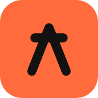

<!doctype html><html lang="fr"><head><meta charset="utf-8"><meta name="viewport" content="width=device-width, initial-scale=1, viewport-fit=cover"><meta name="apple-mobile-web-app-capable" content="yes"><meta name="apple-mobile-web-app-status-bar-style" content="default"><meta name="theme-color" content="#F2F2F7" media="(prefers-color-scheme: light)"><meta name="theme-color" content="#000000" media="(prefers-color-scheme: dark)"><meta name="apple-mobile-web-app-title" content="Forge"><meta name="description" content="Séances de musculation à domicile, progression et suivi, 100 % sur l’appareil."><link rel="apple-touch-icon" href="icon-180.png"><link rel="icon" href="icon-192.png"><title>Forge</title><style>
:root{
  --bg:#F2F2F7; --bg2:#FFFFFF; --bg3:#F7F7FA; --fill:rgba(120,120,128,.12); --fill2:rgba(120,120,128,.07);
  --label:#000; --label2:rgba(60,60,67,.76); --label3:rgba(60,60,67,.32); --sep:rgba(60,60,67,.22);
  --tint:#D8480F; --tint-bg:rgba(216,72,15,.1); --on-tint:#fff;
  --ember:#FF7A1A; --ember2:#FFB300;
  --green:#1E7B34; --red:#D70015; --orange:#B25000; --blue:#0066CC; --purple:#7A3FC4;
  --bar:rgba(248,248,250,.82); --shadow:0 1px 2px rgba(0,0,0,.04),0 8px 24px rgba(0,0,0,.06);
  --r-push:#eb6834; --r-push-ink:#fff; --r-pull:#2a78d6; --r-pull-ink:#fff; --r-legs:#1baf7a; --r-legs-ink:#06291c; --r-core:#8a8a92; --r-core-ink:#fff;
  --grad:linear-gradient(135deg,#FF8A2B 0%,#F2601A 45%,#D8400C 100%); --glow:rgba(242,96,26,.45);
  --bronze:#A8672F; --bronze2:#E7B07A; --silver:#868C95; --silver2:#E4E7EB; --gold:#BF8A0F; --gold2:#F6D56A; --plat:#4E9DB4; --plat2:#D3F1F8;
  --serif:ui-serif,"New York","Iowan Old Style","Palatino",Georgia,serif;
  --sans:-apple-system,BlinkMacSystemFont,"SF Pro Text","Helvetica Neue",Helvetica,Arial,sans-serif;
  --rounded:ui-rounded,"SF Pro Rounded",-apple-system,BlinkMacSystemFont,sans-serif;
  color-scheme:light dark;
  box-sizing:border-box;
  padding-top:env(safe-area-inset-top,0px);
}
@media (prefers-color-scheme:dark){
  :root:not([data-theme="light"]){
    --bg:#000; --bg2:#1C1C1E; --bg3:#242426; --fill:rgba(140,140,148,.24); --fill2:rgba(140,140,148,.13);
    --label:#fff; --label2:rgba(235,235,245,.65); --label3:rgba(235,235,245,.3); --sep:rgba(130,130,138,.38);
    --tint:#FF8A3D; --tint-bg:rgba(255,138,61,.15); --on-tint:#1A0D02;
    --ember:#FF9A3D; --ember2:#FFC53D;
    --green:#30D158; --red:#FF453A; --orange:#FF9F0A; --blue:#409CFF; --purple:#BF80FF;
    --bar:rgba(20,20,22,.8); --shadow:none;
    --r-push:#d95926; --r-push-ink:#fff; --r-pull:#3987e5; --r-pull-ink:#fff; --r-legs:#199e70; --r-legs-ink:#fff; --r-core:#6c6c74; --r-core-ink:#fff;
    --grad:linear-gradient(135deg,#FF9A45 0%,#FF7A2A 45%,#E8561A 100%); --glow:rgba(255,122,42,.4);
  }
}
:root[data-theme="dark"]{
    --bg:#000; --bg2:#1C1C1E; --bg3:#242426; --fill:rgba(140,140,148,.24); --fill2:rgba(140,140,148,.13);
    --label:#fff; --label2:rgba(235,235,245,.65); --label3:rgba(235,235,245,.3); --sep:rgba(130,130,138,.38);
    --tint:#FF8A3D; --tint-bg:rgba(255,138,61,.15); --on-tint:#1A0D02;
    --ember:#FF9A3D; --ember2:#FFC53D;
    --green:#30D158; --red:#FF453A; --orange:#FF9F0A; --blue:#409CFF; --purple:#BF80FF;
    --bar:rgba(20,20,22,.8); --shadow:none;
    --r-push:#d95926; --r-push-ink:#fff; --r-pull:#3987e5; --r-pull-ink:#fff; --r-legs:#199e70; --r-legs-ink:#fff; --r-core:#6c6c74; --r-core-ink:#fff;
    --grad:linear-gradient(135deg,#FF9A45 0%,#FF7A2A 45%,#E8561A 100%); --glow:rgba(255,122,42,.4);
}
*,*::before,*::after{box-sizing:border-box;-webkit-tap-highlight-color:transparent}
html{height:100%;font-size:17px;background:var(--bg);scroll-padding-top:env(safe-area-inset-top,0px)}
body{height:100%;margin:0;background:var(--bg);color:var(--label);font-family:var(--sans);font-size:calc(17rem / 17);line-height:1.35;-webkit-font-smoothing:antialiased;overflow:hidden;-webkit-text-size-adjust:100%}
button{font:inherit;color:inherit;background:none;border:0;padding:0;cursor:pointer}
svg{width:20px;height:20px;display:inline-block;vertical-align:-5px;flex:none}
input,textarea,select{font:inherit;color:inherit}
a{color:var(--tint)}
:focus-visible{outline:2px solid var(--tint);outline-offset:2px;border-radius:6px}
#app{position:relative;height:100%}
.view{position:absolute;inset:0;overflow-y:auto;overflow-x:hidden;-webkit-overflow-scrolling:touch;padding-bottom:calc(180px + env(safe-area-inset-bottom,0px));overscroll-behavior-y:contain;visibility:hidden;pointer-events:none;content-visibility:hidden}
.view.active{visibility:visible;pointer-events:auto;content-visibility:visible}
.content{max-width:640px;margin:0 auto}

/* navbar */
.navbar{position:sticky;top:0;z-index:20;height:44px;display:flex;align-items:center;justify-content:center;padding:0 12px}
.navbar .nb-title{font-weight:600;font-size:calc(17rem / 17);opacity:0;transition:opacity .2s}
.navbar .nb-right{position:absolute;right:8px;top:0;height:44px;display:flex;align-items:center;gap:2px}
.navbar .nb-left{position:absolute;left:8px;top:0;height:44px;display:flex;align-items:center}
.view.scrolled .navbar{background:var(--bar);-webkit-backdrop-filter:saturate(180%) blur(20px);backdrop-filter:saturate(180%) blur(20px);box-shadow:0 .5px 0 var(--sep)}
.view.scrolled .navbar .nb-title{opacity:1}
.icon-btn{width:36px;height:36px;border-radius:18px;display:grid;place-items:center;color:var(--tint)}
.icon-btn svg{width:22px;height:22px}
.icon-btn.filled{background:var(--fill)}
.icon-btn:active{opacity:.5}

.eyebrow{padding:0 20px;color:var(--label2);font-size:calc(15rem / 17);font-weight:600;margin-top:-4px}
.lt{font-family:var(--serif);font-weight:700;font-size:calc(34rem / 17);letter-spacing:-.01em;line-height:1.1;padding:2px 20px 10px;margin:0}
h2.sh{font-size:calc(20rem / 17);font-weight:700;margin:26px 20px 10px;display:flex;align-items:baseline;justify-content:space-between;letter-spacing:-.01em}
h2.sh .more{font-size:calc(15rem / 17);font-weight:400;color:var(--tint)}
.sh-sub{color:var(--label2);font-size:calc(15rem / 17);margin:-6px 20px 10px}
p.body{margin:0 20px;color:var(--label2);font-size:calc(15rem / 17)}
.hr-note{font-size:calc(13rem / 17);color:var(--label3);margin:8px 20px 0;line-height:1.35}

/* grouped lists */
.group{background:var(--bg2);border-radius:14px;margin:0 16px;overflow:hidden}
.row{display:flex;align-items:center;gap:12px;min-height:46px;padding:10px 16px;position:relative;width:100%;text-align:left}
.row+.row::before{content:"";position:absolute;top:0;right:0;left:var(--inset,16px);height:.5px;background:var(--sep)}
.row.tap:active{background:var(--fill2)}
.row .grow{flex:1;min-width:0}
.row .t{font-size:calc(17rem / 17);white-space:nowrap;overflow:hidden;text-overflow:ellipsis}
.row .s{font-size:calc(14rem / 17);color:var(--label2);white-space:nowrap;overflow:hidden;text-overflow:ellipsis;margin-top:1px}
.row .val{color:var(--label2);font-size:calc(17rem / 17);white-space:nowrap;flex:none}
.chev{width:15px;height:15px;color:var(--label3);flex:none}
.row .ico{width:29px;height:29px;border-radius:8px;display:grid;place-items:center;flex:none;color:#fff}

/* cards & buttons */
.card{background:var(--bg2);border-radius:18px;margin:0 16px;padding:16px;box-shadow:var(--shadow)}
.btn{display:flex;align-items:center;justify-content:center;gap:8px;height:50px;border-radius:14px;padding:0 20px;font-size:calc(17rem / 17);font-weight:600;background:var(--tint);color:var(--on-tint);width:100%}
.btn:active{opacity:.75}
.btn.secondary{background:var(--fill);color:var(--tint)}
.btn.ghost{background:transparent;color:var(--tint);height:auto}
.btn.danger{background:var(--red);color:#fff}
.btn.sm{height:38px;font-size:calc(15rem / 17);border-radius:11px;width:auto}
.btn[disabled]{opacity:.4;pointer-events:none}
.btnrow{display:flex;gap:10px;margin:14px 16px 0}

/* chips */
.chip{display:inline-flex;align-items:center;gap:6px;height:32px;padding:0 13px;border-radius:16px;background:var(--fill);font-size:calc(14rem / 17);font-weight:500;color:var(--label)}
.chip.on{background:var(--tint);color:var(--on-tint)}
.chip.excl{background:rgba(215,0,21,.12);color:var(--red)}
.chips{display:flex;flex-wrap:wrap;gap:8px;padding:0 16px}

/* tabbar */
.tabbar{position:absolute;left:0;right:0;bottom:0;z-index:30;display:flex;background:var(--bar);-webkit-backdrop-filter:saturate(180%) blur(20px);backdrop-filter:saturate(180%) blur(20px);box-shadow:0 -.5px 0 var(--sep);padding-bottom:env(safe-area-inset-bottom,0px)}
.tabbtn{flex:1;display:flex;flex-direction:column;align-items:center;gap:2px;padding:7px 0 5px;color:var(--label3)}
.tabbtn svg{width:25px;height:25px}
.tabbtn .tl{font-size:calc(10rem / 17);font-weight:500}
.tabbtn.on{color:var(--tint)}
.tabbtn:active{opacity:.6}

/* overlay + sheets */
#overlay{position:fixed;inset:0;z-index:50;display:none}
#overlay.open{display:block}
.scrim{position:absolute;inset:0;background:rgba(0,0,0,.4);opacity:0;transition:opacity .25s}
#overlay.show .scrim{opacity:1}
.sheet{position:absolute;left:0;right:0;bottom:0;max-height:88vh;background:var(--bg);border-radius:20px 20px 0 0;transform:translateY(100%);transition:transform .32s cubic-bezier(.32,.72,0,1);display:flex;flex-direction:column;overflow:hidden}
#overlay.show .sheet{transform:translateY(0)}
.sheet-grab{width:36px;height:5px;border-radius:3px;background:var(--label3);margin:8px auto 2px;flex:none}
.sheet-hd{display:flex;align-items:center;justify-content:space-between;padding:10px 16px 12px;flex:none}
.sheet-hd .t{font-size:calc(17rem / 17);font-weight:700}
.sheet-body{overflow-y:auto;-webkit-overflow-scrolling:touch;padding-bottom:calc(24px + env(safe-area-inset-bottom,0px))}
.center-modal{position:absolute;left:50%;top:50%;transform:translate(-50%,-46%) scale(.92);width:min(340px,88vw);max-height:86vh;overflow-y:auto;-webkit-overflow-scrolling:touch;background:var(--bg2);border-radius:20px;padding:22px 20px;text-align:center;opacity:0;transition:transform .28s cubic-bezier(.32,.72,0,1),opacity .2s}
#overlay.show .center-modal{transform:translate(-50%,-50%) scale(1);opacity:1}

/* toast */
#toast{position:fixed;left:50%;width:max-content;top:calc(10px + env(safe-area-inset-top,0px));transform:translateX(-50%) translateY(-24px) scale(.9);z-index:60;max-width:calc(100% - 32px);background:var(--bar);-webkit-backdrop-filter:saturate(180%) blur(20px);backdrop-filter:saturate(180%) blur(20px);color:var(--label);padding:11px 18px;border-radius:22px;font-size:calc(14.5rem / 17);font-weight:650;text-align:center;box-shadow:0 10px 30px -8px rgba(0,0,0,.28),0 0 0 .5px var(--sep);opacity:0;pointer-events:none;transition:opacity .22s,transform .45s cubic-bezier(.32,1.35,.4,1)}
#toast.show{opacity:1;transform:translateX(-50%) translateY(0) scale(1)}

/* forms */
.field{background:var(--bg2);border-radius:12px;margin:0 16px;padding:0 14px}
.field label{display:block;font-size:calc(13rem / 17);color:var(--label2);padding-top:8px}
.field input, .field select{width:100%;border:0;background:transparent;padding:4px 0 10px;font-size:calc(17rem / 17)}
.stepper{display:flex;align-items:center;gap:14px}
.stepper button{width:32px;height:32px;border-radius:16px;background:var(--fill);font-size:20px;font-weight:600;display:grid;place-items:center;color:var(--tint)}
.stepper button:active{background:var(--tint);color:var(--on-tint)}
.stepper .val{min-width:44px;text-align:center;font-variant-numeric:tabular-nums;font-weight:600}

.exo-note{margin:0 14px 12px;padding:9px 11px;background:var(--fill2);border-radius:10px;font-size:calc(13rem / 17);color:var(--label2);line-height:1.4}

/* timer */
#restbar{position:absolute;left:12px;right:12px;bottom:calc(78px + env(safe-area-inset-bottom,0px));z-index:25;background:var(--tint);color:var(--on-tint);border-radius:16px;padding:12px 16px;display:none;align-items:center;gap:12px;box-shadow:0 8px 24px rgba(0,0,0,.25)}
#restbar.show{display:flex}
#restbar .rt-time{font-variant-numeric:tabular-nums;font-weight:700;font-size:calc(22rem / 17);min-width:56px}
#restbar .rt-label{flex:1;font-weight:600;font-size:calc(14rem / 17)}
#restbar button{background:rgba(255,255,255,.22);border-radius:10px;padding:7px 12px;font-weight:600;font-size:calc(13rem / 17);color:var(--on-tint)}

.pr-badge{display:inline-flex;align-items:center;gap:4px;background:rgba(178,80,0,.14);color:var(--orange);border-radius:8px;padding:2px 8px;font-size:calc(12rem / 17);font-weight:700}


/* celebration */
.celebrate-ring{width:88px;height:88px;border-radius:50%;background:var(--tint-bg);display:grid;place-items:center;margin:6px auto 14px;color:var(--tint)}
.celebrate-ring svg{width:46px;height:46px}
@keyframes pop{0%{transform:scale(.4);opacity:0}60%{transform:scale(1.08);opacity:1}100%{transform:scale(1)}}
.celebrate-ring{animation:pop .5s cubic-bezier(.32,1.4,.4,1)}
@media (prefers-reduced-motion:reduce){.celebrate-ring{animation:none}}

/* empty state */
.empty-state{padding:50px 30px;text-align:center;color:var(--label2)}
.empty-state .em{font-size:40px;display:block;margin-bottom:10px}

/* streak strip */
.stat-strip{display:flex;gap:10px;padding:0 16px}
.stat-box{flex:1;background:var(--bg2);border-radius:14px;padding:12px 10px;text-align:center}
.stat-box .num{font-size:calc(19rem / 17);font-weight:700;white-space:nowrap}
.stat-box .lbl{font-size:calc(11.5rem / 17);color:var(--label2);margin-top:1px}

.switch{width:51px;height:31px;border-radius:16px;background:var(--fill);position:relative;flex:none;transition:background .2s}
.switch.on{background:var(--green)}
.switch::after{content:"";position:absolute;top:2px;left:2px;width:27px;height:27px;border-radius:14px;background:#fff;box-shadow:0 1px 3px rgba(0,0,0,.3);transition:transform .2s}
.switch.on::after{transform:translateX(20px)}

/* ---- transitions & micro-interactions générales ---- */
.view.active{animation:viewFade .2s ease}
@keyframes viewFade{from{opacity:0}to{opacity:1}}
.btn{transition:opacity .12s,transform .12s}
.btn:active{transform:scale(.97)}
.icon-btn{transition:opacity .12s,transform .12s}
.icon-btn:active{transform:scale(.88)}
.chip{transition:transform .12s,background .15s,color .15s}
.chip:active{transform:scale(.94)}
.row.tap{transition:background .12s}
@media (prefers-reduced-motion:reduce){
  .view.active,.focus-card,.celebrate-ring,.fc-done-badge{animation:none!important}
  .btn:active,.icon-btn:active,.chip:active,.medal-card:active,.type-chip:active{transform:none}
  .enter .stagger,.enter .seg-pane,.enter .cc-bar,.sheet .cc-bar,.enter .hb-fill,.sheet .linechart,.medal.t3::after,.medal.t4::after,.sd.just,.cel-medal,.xpbar span{animation:none!important;transition:none!important}
}

/* ---- motivation : mini anneau hebdo + flamme ---- */
.motiv-row{display:flex;align-items:center;gap:14px;padding:0 20px 14px;margin-top:-2px}
.motiv-ring{width:46px;height:46px;flex:none;position:relative}
.motiv-ring svg{width:100%;height:100%;transform:rotate(-90deg)}
.motiv-ring circle{fill:none;stroke-width:5}
.motiv-ring .bgc{stroke:var(--fill)}
.motiv-ring .fgc{stroke:var(--tint);stroke-linecap:round;transition:stroke-dashoffset .5s ease}
.motiv-txt{flex:1;min-width:0}
.motiv-txt .m1{font-weight:700;font-size:calc(15rem/17)}
.motiv-txt .m2{color:var(--label2);font-size:calc(13rem/17);margin-top:1px}
.streak-badge{display:flex;align-items:center;gap:4px;background:var(--tint-bg);color:var(--tint);border-radius:12px;padding:5px 10px;font-weight:700;font-size:calc(14rem/17);flex:none}
.streak-badge svg{width:15px;height:15px}

/* ---- mode focus : séance en cours ---- */
.focus-card{background:var(--bg2);border-radius:26px;margin:0 16px;padding:26px 22px 22px;text-align:center;box-shadow:var(--shadow);position:relative;touch-action:pan-y;-webkit-user-select:none;user-select:none;transition:transform .12s}
@keyframes focusInR{from{opacity:0;transform:translateX(28px) scale(.98)}to{opacity:1;transform:translateX(0) scale(1)}}
@keyframes focusInL{from{opacity:0;transform:translateX(-28px) scale(.98)}to{opacity:1;transform:translateX(0) scale(1)}}
.focus-card.anim-r{animation:focusInR .3s cubic-bezier(.32,.72,0,1)}
.focus-card.anim-l{animation:focusInL .3s cubic-bezier(.32,.72,0,1)}
.fc-icon{display:flex;justify-content:center;margin:0 auto 12px}
.fc-name{font-family:var(--serif);font-weight:700;font-size:calc(23rem/17);letter-spacing:-.01em;line-height:1.15;margin-bottom:3px}
.fc-sub{color:var(--label2);font-size:calc(13.5rem/17);margin-bottom:18px}
.fc-phase{font-size:calc(12rem/17);font-weight:700;color:var(--tint);letter-spacing:.04em;text-transform:uppercase;margin-bottom:12px}

.set-dots{display:flex;justify-content:center;gap:9px;margin-bottom:22px}
.set-dots .sd{width:12px;height:12px;border-radius:50%;border:2px solid var(--sep);transition:transform .2s,background .2s,border-color .2s}
.set-dots .sd.done{background:var(--green);border-color:var(--green)}
.set-dots .sd.current{border-color:var(--tint);transform:scale(1.3)}

.big-steppers{display:flex;gap:12px;justify-content:center;margin-bottom:20px}
.big-stepper{flex:1;max-width:152px;background:var(--fill2);border-radius:18px;padding:12px 8px 14px}
.big-stepper .bs-label{font-size:calc(11.5rem/17);color:var(--label2);font-weight:700;text-transform:uppercase;letter-spacing:.03em;margin-bottom:8px}
.big-stepper .bs-row{display:flex;align-items:center;justify-content:center;gap:8px}
.big-stepper button{width:34px;height:34px;border-radius:17px;background:var(--bg2);color:var(--tint);font-size:19px;font-weight:700;display:grid;place-items:center;transition:transform .12s,background .12s,color .12s;flex:none}
.big-stepper button:active{background:var(--tint);color:var(--on-tint);transform:scale(.9)}
.big-stepper .bs-val{font-size:calc(22rem/17);font-weight:700;font-variant-numeric:tabular-nums;min-width:46px}

@keyframes badgePop{0%{transform:scale(.5)}65%{transform:scale(1.15)}100%{transform:scale(1)}}
.fc-done-badge{width:56px;height:56px;border-radius:50%;background:var(--tint-bg);color:var(--tint);display:grid;place-items:center;margin:4px auto 14px;animation:badgePop .35s cubic-bezier(.32,1.4,.4,1)}
.fc-done-badge svg{width:28px;height:28px}
.fc-recap{display:flex;flex-wrap:wrap;gap:6px;justify-content:center;margin-bottom:18px}
.fc-recap .chip{background:var(--fill2);font-variant-numeric:tabular-nums}

.fc-quiet{display:flex;gap:16px;justify-content:center;margin-top:2px}
.fc-quiet button{font-size:calc(13.5rem/17);font-weight:600;color:var(--label2)}
.fc-quiet button:active{opacity:.5}

.focus-nav{display:flex;align-items:center;justify-content:space-between;gap:10px;margin:16px 16px 0}
.focus-nav .navbtn{width:46px;height:46px;border-radius:23px;background:var(--fill);color:var(--tint);display:grid;place-items:center;flex:none;transition:opacity .15s,transform .12s}
.focus-nav .navbtn:active{transform:scale(.9)}
.focus-nav .navbtn[disabled]{opacity:.25;pointer-events:none}
.focus-nav .navbtn svg{width:20px;height:20px}
.focus-nav .center-link{flex:1;text-align:center;font-size:calc(14rem/17);font-weight:600;color:var(--tint)}

.rest-pill{display:inline-flex;align-items:center;gap:6px;background:var(--fill2);color:var(--label2);border-radius:10px;padding:5px 10px;font-size:calc(12.5rem/17);font-weight:600;font-variant-numeric:tabular-nums;margin-bottom:12px}

/* anneau de repos (grand, dans la carte focus) */
.ring-wrap{width:172px;height:172px;margin:0 auto 18px;position:relative}
.ring-wrap svg{width:100%;height:100%;transform:rotate(-90deg)}
.ring-wrap .ring-bg{fill:none;stroke:var(--fill);stroke-width:10}
.ring-wrap .ring-fg{fill:none;stroke:var(--tint);stroke-width:10;stroke-linecap:round}
.ring-label{position:absolute;inset:0;display:flex;flex-direction:column;align-items:center;justify-content:center}
.ring-time{font-size:calc(32rem/17);font-weight:700;font-variant-numeric:tabular-nums;letter-spacing:-.01em}
.ring-sub{font-size:calc(12.5rem/17);color:var(--label2);margin-top:2px}
.ring-adjust{display:flex;gap:10px;justify-content:center;margin-bottom:6px}
.ring-adjust button{background:var(--fill2);border-radius:11px;padding:8px 14px;font-size:calc(13.5rem/17);font-weight:600;color:var(--label)}
.ring-adjust button:active{opacity:.6}

/* fiche exercice (sheet info) */
.exo-hero{display:flex;flex-direction:column;align-items:center;padding:6px 0 4px}
.exo-hero .ico{width:64px;height:64px;border-radius:20px;background:var(--tint-bg);color:var(--tint);display:grid;place-items:center;font-size:30px;margin-bottom:10px}
.exo-hero .nm{font-family:var(--serif);font-weight:700;font-size:calc(21rem/17);text-align:center;letter-spacing:-.01em}
.exo-muscle-chips{display:flex;flex-wrap:wrap;gap:6px;justify-content:center;padding:10px 16px 2px}
.cue-list{padding:4px 16px}
.cue-item{display:flex;gap:10px;padding:10px 0;border-bottom:.5px solid var(--sep);opacity:0;animation:cueIn .35s ease forwards}
.cue-item:last-child{border-bottom:0}
.cue-num{width:22px;height:22px;border-radius:11px;background:var(--tint-bg);color:var(--tint);font-size:calc(12rem/17);font-weight:700;display:grid;place-items:center;flex:none;margin-top:1px}
.cue-txt{font-size:calc(14.5rem/17);line-height:1.4}
@keyframes cueIn{from{opacity:0;transform:translateY(6px)}to{opacity:1;transform:translateY(0)}}
.safety-box{margin:6px 16px 4px;padding:12px 14px;border-radius:12px;background:rgba(255,159,10,.1);border-left:3px solid var(--orange)}
.safety-box .lbl{font-size:calc(11.5rem/17);font-weight:700;color:var(--orange);text-transform:uppercase;letter-spacing:.03em;margin-bottom:4px}
.safety-box .txt{font-size:calc(13.5rem/17);color:var(--label2);line-height:1.4}
@media (prefers-reduced-motion:reduce){.cue-item{animation:none;opacity:1}}

/* ================= v1.2 ================= */
/* ---- entrée animée (changement d'onglet / de section) ---- */
@keyframes fadeUp{from{opacity:0;transform:translateY(10px)}to{opacity:1;transform:none}}
.enter .stagger{animation:fadeUp .45s cubic-bezier(.2,.8,.2,1) both;animation-delay:calc(var(--i,0) * 45ms)}
.enter .seg-pane{animation:fadeUp .35s cubic-bezier(.2,.8,.2,1) both}

/* ---- contrôle segmenté ---- */
.seg{position:relative;display:flex;background:var(--fill);border-radius:11px;padding:2px;margin:4px 16px 16px}
.seg-ind{position:absolute;top:2px;bottom:2px;left:2px;width:calc((100% - 4px) / var(--n));background:var(--bg2);border-radius:9px;box-shadow:0 1px 4px rgba(0,0,0,.12),0 0 0 .5px rgba(0,0,0,.04);transition:transform .32s cubic-bezier(.32,.72,0,1)}
.seg button{position:relative;flex:1;height:34px;font-size:calc(14rem/17);font-weight:600;color:var(--label2);border-radius:9px;transition:color .2s}
.seg button.on{color:var(--label)}

/* ---- boutons ---- */
.btn.big{height:56px;border-radius:16px;font-size:calc(17.5rem/17);box-shadow:0 6px 18px -6px var(--tint)}
.btn svg{width:18px;height:18px}
.btn.sm svg{width:16px;height:16px}
.row-main{display:flex;align-items:center;gap:12px;flex:1;min-width:0;text-align:left;padding:2px 0}
.row-main:active{opacity:.6}
.motiv-ring span{position:absolute;inset:0;display:grid;place-items:center;font-size:calc(11.5rem/17);font-weight:700}

/* ---- séance faite aujourd'hui ---- */
.done-today{display:flex;align-items:center;gap:12px;width:calc(100% - 32px);margin:0 16px 14px;padding:12px 14px;border-radius:16px;background:rgba(48,160,90,.12);text-align:left}
.done-today .dt-ico{width:34px;height:34px;border-radius:17px;background:var(--green);color:#fff;display:grid;place-items:center;flex:none}
.done-today .dt-ico svg{width:18px;height:18px}
.done-today .grow{flex:1;min-width:0}
.dt-t{font-weight:700;font-size:calc(15rem/17)}
.dt-s{font-size:calc(13rem/17);color:var(--label2);margin-top:1px}

/* ---- choix du type de séance ---- */
.type-scroll,.chip-scroll{display:flex;gap:8px;overflow-x:auto;padding:0 16px 2px;scrollbar-width:none;-webkit-overflow-scrolling:touch}
.chip-scroll .chip{flex:none;white-space:nowrap}
.type-scroll::-webkit-scrollbar,.chip-scroll::-webkit-scrollbar{display:none}
.type-chip{flex:none;display:inline-flex;align-items:center;gap:6px;height:38px;padding:0 14px;border-radius:19px;background:var(--bg2);box-shadow:inset 0 0 0 1px var(--sep);font-size:calc(14rem/17);font-weight:600;color:var(--label);transition:background .2s,color .2s,transform .12s}
.type-chip:active{transform:scale(.95)}
.type-chip.on{background:var(--tint);color:var(--on-tint);box-shadow:none}

.plan-card{margin:14px 16px 0;padding:16px 18px;border-radius:20px;background:linear-gradient(145deg,var(--tint-bg),transparent 70%),var(--bg2);box-shadow:var(--shadow)}
.pc-eyebrow{font-size:calc(11.5rem/17);font-weight:700;letter-spacing:.05em;text-transform:uppercase;color:var(--tint)}
.pc-title{font-family:var(--serif);font-weight:700;font-size:calc(24rem/17);letter-spacing:-.01em;margin-top:2px;text-wrap:balance}
.pc-reason{font-size:calc(14rem/17);color:var(--label2);margin-top:4px;line-height:1.4}
.pc-meta{display:flex;flex-wrap:wrap;gap:6px 14px;margin-top:12px;font-size:calc(13.5rem/17);font-weight:600}
.pc-meta span+span::before{content:"·";margin-right:14px;color:var(--label3)}
.pc-muscles{display:flex;flex-wrap:wrap;gap:6px;margin-top:10px}
.pc-muscles span{font-size:calc(12.5rem/17);font-weight:600;padding:4px 10px;border-radius:10px;background:var(--fill2);color:var(--label2)}

/* ---- Ma séance ---- */
.builder-empty{margin:4px 16px 0;padding:26px 22px 18px;border-radius:22px;background:var(--bg2);text-align:center;box-shadow:var(--shadow)}
.be-ico{font-size:34px}
.be-t{font-family:var(--serif);font-weight:700;font-size:calc(21rem/17);margin-top:6px}
.be-s{font-size:calc(14rem/17);color:var(--label2);margin:6px 0 18px;line-height:1.4}
.mini-step{display:flex;align-items:center;gap:2px;background:var(--fill2);border-radius:10px;padding:2px;flex:none}
.mini-step button{width:28px;height:28px;border-radius:8px;color:var(--tint);font-weight:700;font-size:17px}
.mini-step button:active{background:var(--bg2)}
.mini-step span{min-width:26px;text-align:center;font-weight:700;font-size:calc(14rem/17);font-variant-numeric:tabular-nums}
h2.sh button.more{font-size:calc(15rem/17);font-weight:500;color:var(--tint)}

/* ---- sélecteur d'exercices ---- */
.sheet.tall{height:88vh}
.sheet-body{flex:1;min-height:0}
.sheet-ft{flex:none;padding:10px 16px calc(12px + env(safe-area-inset-bottom,0px));background:var(--bar);-webkit-backdrop-filter:blur(20px);backdrop-filter:blur(20px);box-shadow:0 -.5px 0 var(--sep)}
.picker-top{flex:none;padding:0 0 8px}
.search{display:flex;align-items:center;gap:8px;margin:0 16px 10px;padding:0 12px;height:38px;border-radius:11px;background:var(--fill);color:var(--label2)}
.search svg{width:17px;height:17px}
.search input{flex:1;border:0;background:transparent;font-size:calc(16rem/17);outline:none;min-width:0}
.pick-h{font-size:calc(12.5rem/17);font-weight:700;color:var(--label2);text-transform:uppercase;letter-spacing:.04em;margin:16px 32px 6px}
.pick-check{width:24px;height:24px;border-radius:12px;box-shadow:inset 0 0 0 1.5px var(--sep);display:grid;place-items:center;color:#fff;flex:none;transition:background .15s}
.pick-check svg{width:15px;height:15px}
.pick-row.on .pick-check{background:var(--tint);box-shadow:none;animation:badgePop .3s cubic-bezier(.32,1.4,.4,1)}
.pick-row.on{background:var(--tint-bg)}

/* ---- mode focus : ajouts ---- */
.fc-sub button{color:var(--tint);font-weight:600}
.fc-last{font-size:calc(12.5rem/17);color:var(--label2);margin:-8px 0 14px}
.fc-next{font-size:calc(13.5rem/17);color:var(--label2);margin:-6px 0 14px}
.big-stepper .bs-val{background:none;border-radius:10px;padding:2px 4px;color:var(--label)}
.big-stepper .bs-val:active{background:var(--fill)}
.big-stepper button.bs-val{width:auto;height:auto;font-size:calc(22rem/17);font-weight:700}
.big-stepper button.bs-val:active{color:var(--label);transform:none}
.set-dots .sd.pr{box-shadow:0 0 0 3px rgba(255,159,10,.35)}
@keyframes dotPop{0%{transform:scale(.4)}60%{transform:scale(1.6)}100%{transform:scale(1)}}
.set-dots .sd.just{animation:dotPop .45s cubic-bezier(.32,1.4,.4,1)}
.ring-adjust .skip{background:var(--tint-bg);color:var(--tint)}
.chip.pr{background:rgba(255,159,10,.16);color:var(--orange)}
.set-chips{display:flex;flex-wrap:wrap;gap:6px;margin-top:6px}
.set-chips .chip{height:26px;padding:0 9px;font-size:calc(12.5rem/17);background:var(--fill2)}
.set-chips .chip.pr{background:rgba(255,159,10,.16)}
.num-field{display:flex;align-items:center;gap:8px;background:var(--fill2);border-radius:12px;padding:0 14px}
.num-field input{flex:1;min-width:0;border:0;background:transparent;height:50px;font-size:calc(22rem/17);font-weight:700;text-align:center;outline:none}
.num-field span{color:var(--label2);font-weight:600}

/* ---- Progrès : niveau & chiffres clés ---- */
.level-card{display:flex;align-items:center;gap:14px;margin:0 16px 12px;padding:16px;border-radius:20px;background:var(--bg2);box-shadow:var(--shadow)}
.lv-badge{width:56px;height:56px;flex:none;border-radius:50%;display:grid;place-items:center;background:conic-gradient(from 200deg,var(--ember2),var(--tint),var(--ember2));padding:4px}
.lv-badge span{width:100%;height:100%;border-radius:50%;background:var(--bg2);display:grid;place-items:center;font-weight:800;font-size:calc(21rem/17)}
.lv-title{font-weight:700;font-size:calc(16rem/17)}
.lv-sub{font-size:calc(12.5rem/17);color:var(--label2);margin-top:6px}
.xpbar{height:8px;border-radius:4px;background:var(--fill);margin-top:8px;overflow:hidden}
.xpbar span{display:block;height:100%;border-radius:4px;background:linear-gradient(90deg,var(--tint),var(--ember2));transition:width 1.1s cubic-bezier(.2,.8,.2,1)}
.kpi-grid{display:grid;grid-template-columns:1fr 1fr;gap:10px;padding:0 16px}
.kpi{background:var(--bg2);border-radius:16px;padding:13px 14px}
.kpi-l{font-size:calc(12.5rem/17);color:var(--label2);font-weight:600}
.kpi-v{font-size:calc(26rem/17);font-weight:700;letter-spacing:-.01em;margin-top:2px;white-space:nowrap}
.kpi-s{font-size:calc(12rem/17);color:var(--label2);margin-top:1px}

/* ---- cartes graphiques ---- */
.chart-card{margin:12px 16px 0;padding:14px 14px 12px;border-radius:18px;background:var(--bg2)}
.cc-h{margin-bottom:12px}
.cc-t{font-weight:700;font-size:calc(16rem/17)}
.cc-s{font-size:calc(12.5rem/17);color:var(--label2);margin-top:1px}
.chart-empty{padding:26px 10px;text-align:center;color:var(--label2);font-size:calc(14rem/17)}

/* colonnes (HTML) */
.colchart{--h:140px}
.cc-plot{position:relative;height:var(--h);margin-left:30px}
.cc-gl{position:absolute;left:0;right:0;height:0;border-top:1px solid var(--fill)}
.cc-gl span{position:absolute;right:calc(100% + 6px);top:-7px;font-size:10px;color:var(--label2);font-variant-numeric:tabular-nums;white-space:nowrap}
.cc-goal{position:absolute;left:0;right:0;height:0;border-top:1px solid var(--label3);z-index:1;pointer-events:none}
.cc-goal span{position:absolute;right:0;bottom:2px;font-size:10px;font-weight:600;color:var(--label2);background:var(--bg2);padding:0 3px;border-radius:3px}
.cc-bars{position:absolute;inset:0;display:flex;align-items:flex-end}
.cc-col{position:relative;flex:1;height:100%;display:flex;align-items:flex-end;justify-content:center;outline:none}
.cc-bar{width:min(16px,62%);border-radius:4px 4px 0 0;background:var(--tint);opacity:.42;transform-origin:50% 100%;transition:opacity .15s}
.cc-bar.cur{opacity:1}
.cc-col.tip-on .cc-bar,.cc-col:focus-visible .cc-bar{opacity:1;filter:brightness(1.12)}
.cc-val{position:absolute;left:50%;transform:translate(-50%,-4px);font-size:11px;font-weight:700;white-space:nowrap}
.cc-col:last-child .cc-val{left:auto;right:0;transform:translateY(-4px)}
.cc-x{display:flex;margin:6px 0 0 30px}
.cc-x span{flex:1;text-align:center;font-size:10px;color:var(--label2);white-space:nowrap;overflow:visible}
@keyframes barGrow{from{transform:scaleY(0)}to{transform:scaleY(1)}}
.enter .cc-bar,.sheet .cc-bar{animation:barGrow .7s cubic-bezier(.2,.8,.2,1) both;animation-delay:calc(var(--i,0) * 35ms + 150ms)}

/* courbe (SVG) : révélée par un clip-path animé sur le conteneur HTML */
.linechart svg{display:block;width:100%;height:auto;overflow:visible}
@keyframes wipe{from{clip-path:inset(0 100% 0 0)}to{clip-path:inset(0 0 0 0)}}
.sheet .linechart{animation:wipe 1s cubic-bezier(.2,.8,.2,1) .2s both}
.lc-grid{stroke:var(--fill);stroke-width:1}
.lc-tick{fill:var(--label2);font-size:10px;font-variant-numeric:tabular-nums}
.lc-area{fill:var(--tint);opacity:.1;stroke:none}
.lc-line{fill:none;stroke:var(--tint);stroke-width:2;stroke-linejoin:round;stroke-linecap:round}
.lc-dot{fill:var(--tint);stroke:var(--bg2);stroke-width:2}
.lc-endlbl{fill:var(--label);font-size:11px;font-weight:700}
.lc-hit{fill:transparent;cursor:pointer;outline:none}
.lc-hit.tip-on{fill:var(--tint);fill-opacity:.18}

.spark{width:64px;height:22px;flex:none}
.spark path{fill:none;stroke:var(--tint);stroke-width:2;stroke-linejoin:round;stroke-linecap:round}
.spark circle{fill:var(--tint)}

/* calendrier de régularité */
.heatmap{--c:14px;--g:3px;overflow-x:auto}
.hm-months{display:grid;grid-template-columns:repeat(var(--w),var(--c));gap:var(--g);margin-left:18px;font-size:10px;color:var(--label2);height:14px}
.hm-months span{white-space:nowrap;overflow:visible}
.hm-body{display:flex;gap:4px}
.hm-days{display:grid;grid-template-rows:repeat(7,var(--c));gap:var(--g);width:14px;font-size:9px;color:var(--label2);line-height:var(--c)}
.hm-grid{display:grid;grid-template-rows:repeat(7,var(--c));grid-auto-flow:column;grid-auto-columns:var(--c);gap:var(--g)}
.hm-c{display:inline-block;width:var(--c);height:var(--c);border-radius:4px;background:var(--fill)}
.hm-c.l1{background:var(--tint);opacity:.35}
.hm-c.l2{background:var(--tint);opacity:.65}
.hm-c.l3{background:var(--tint)}
.hm-c.fut{background:transparent}
.hm-c.today{box-shadow:0 0 0 1.5px var(--label2)}
.hm-c.tip-on{box-shadow:0 0 0 2px var(--label)}
.hm-legend{display:flex;align-items:center;justify-content:flex-end;gap:4px;margin-top:10px;font-size:10.5px;color:var(--label2)}
.hm-legend .hm-c{width:11px;height:11px;border-radius:3px}
.enter .hm-grid{animation:fadeUp .6s cubic-bezier(.2,.8,.2,1) .2s both}

/* barres horizontales */
.hb-row{padding:6px 0}
.hb-top{display:flex;justify-content:space-between;font-size:calc(13.5rem/17);margin-bottom:5px}
.hb-v{color:var(--label2);font-variant-numeric:tabular-nums}
.hb-track{height:8px;border-radius:4px;background:var(--fill)}
.hb-fill{height:100%;border-radius:4px;background:var(--tint);transform-origin:0 50%}
@keyframes hbGrow{from{transform:scaleX(0)}to{transform:scaleX(1)}}
.enter .hb-fill{animation:hbGrow .7s cubic-bezier(.2,.8,.2,1) both;animation-delay:calc(var(--i,0) * 50ms + 200ms)}

/* tableau équivalent */
.dtable{margin-top:10px;font-size:calc(13rem/17)}
.dtable summary{color:var(--tint);font-weight:600;cursor:pointer;list-style:none}
.dtable summary::-webkit-details-marker{display:none}
.dtable table{width:100%;border-collapse:collapse;margin-top:8px;font-variant-numeric:tabular-nums}
.dtable th,.dtable td{text-align:left;padding:5px 4px;border-bottom:.5px solid var(--sep)}
.dtable th{color:var(--label2);font-weight:600}

/* info-bulle */
#charttip{position:fixed;left:0;top:0;z-index:80;max-width:240px;padding:7px 11px;border-radius:10px;background:var(--label);color:var(--bg2);font-size:calc(13rem/17);font-weight:600;line-height:1.3;pointer-events:none;opacity:0;transition:opacity .15s}
#charttip.show{opacity:1}

/* ---- médailles ---- */
.medal{--m1:var(--fill);--m2:var(--fill);position:relative;width:64px;height:64px;border-radius:50%;padding:5px;background:linear-gradient(145deg,var(--m2),var(--m1) 55%,var(--m2));flex:none;overflow:hidden;margin:0 auto}
.medal.t1{--m1:var(--bronze);--m2:var(--bronze2)}
.medal.t2{--m1:var(--silver);--m2:var(--silver2)}
.medal.t3{--m1:var(--gold);--m2:var(--gold2)}
.medal.t4{--m1:var(--plat);--m2:var(--plat2)}
.medal-disc{width:100%;height:100%;border-radius:50%;background:var(--bg2);display:grid;place-items:center;box-shadow:inset 0 2px 4px rgba(0,0,0,.12)}
.medal .em{font-size:26px;line-height:1}
.medal.t0 .em{filter:grayscale(1);opacity:.3}
.medal.big{width:104px;height:104px;padding:7px}
.medal.big .em{font-size:44px}
.medal.sm{width:44px;height:44px;padding:4px;margin:0}
.medal.sm .em{font-size:19px}
.medal.t3::after,.medal.t4::after{content:"";position:absolute;inset:-20%;background:linear-gradient(115deg,transparent 40%,rgba(255,255,255,.65) 50%,transparent 60%);transform:translateX(-120%);animation:shine 3.2s ease-in-out 1s 3}
@keyframes shine{0%,60%{transform:translateX(-120%)}100%{transform:translateX(120%)}}
.pips{display:flex;justify-content:center;gap:4px;margin-top:6px}
.pip{width:8px;height:8px;border-radius:4px;background:var(--fill);display:inline-block}
.pip.big{width:14px;height:14px;border-radius:7px}
.pip.t1{background:var(--bronze)} .pip.t2{background:var(--silver)} .pip.t3{background:var(--gold)} .pip.t4{background:var(--plat)}
.medal-grid{display:grid;grid-template-columns:repeat(3,1fr);gap:10px;padding:0 16px}
.medal-card{background:var(--bg2);border-radius:18px;padding:14px 8px 12px;text-align:center;transition:transform .15s}
.medal-card:active{transform:scale(.95)}
.mc-name{font-size:calc(12.5rem/17);font-weight:700;margin-top:8px;line-height:1.2;min-height:2.4em;display:flex;align-items:center;justify-content:center}
.mc-bar{height:5px;border-radius:3px;background:var(--fill);margin:8px 6px 0;overflow:hidden}
.mc-bar span{display:block;height:100%;border-radius:3px;background:var(--tint)}
.mc-bar.big{height:8px;margin:0}
.mc-done{font-size:calc(11rem/17);font-weight:700;color:var(--plat);margin-top:7px}
.medal-summary{display:grid;grid-template-columns:repeat(4,1fr);gap:8px;margin:0 16px;padding:14px 8px;border-radius:18px;background:var(--bg2)}
.ms-cell{text-align:center}
.ms-n{font-size:calc(22rem/17);font-weight:700;margin-top:4px}
.ms-l{font-size:calc(11.5rem/17);color:var(--label2)}
.tier-tag{display:inline-block;font-size:calc(11rem/17);font-weight:700;padding:1px 7px;border-radius:7px;vertical-align:1px;color:#fff}
.tier-tag.t1{background:var(--bronze)} .tier-tag.t2{background:var(--silver)} .tier-tag.t3{background:var(--gold)} .tier-tag.t4{background:var(--plat)}
.medal-modal .medal.big{animation:badgePop .5s cubic-bezier(.32,1.4,.4,1)}
.mm-name{font-family:var(--serif);font-weight:700;font-size:calc(22rem/17);margin-top:12px}
.mm-tier{font-size:calc(13rem/17);font-weight:700;color:var(--tint);margin-top:2px}
.mm-desc{font-size:calc(14rem/17);color:var(--label2);margin-top:8px;line-height:1.4}
.mm-prog{margin-top:14px}
.mm-prog-txt{font-size:calc(12.5rem/17);color:var(--label2);margin-top:8px}
.tier-list{margin-top:16px;text-align:left;border-top:.5px solid var(--sep)}
.tier-row{display:flex;align-items:center;gap:10px;padding:9px 2px;border-bottom:.5px solid var(--sep);font-size:calc(13.5rem/17);color:var(--label2)}
.tier-row.got{color:var(--label)}
.tier-row .pip{width:12px;height:12px;border-radius:6px;flex:none}
.tier-row:not(.got) .pip{opacity:.35}
.tr-name{font-weight:700;width:58px;flex:none}
.tr-th{flex:1;min-width:0}
.tr-date{font-size:calc(12rem/17);color:var(--label2);flex:none}

/* ---- célébration ---- */
.cel-title{font-family:var(--serif);font-weight:700;font-size:calc(24rem/17)}
.cel-stats{display:grid;grid-template-columns:repeat(3,1fr);gap:6px;margin-top:14px}
.cel-stats .n{font-weight:700;font-size:calc(18rem/17);white-space:nowrap}
.cel-stats .l{font-size:calc(12rem/17);color:var(--label2)}
.cel-pr{margin-top:12px;display:inline-block;padding:5px 12px;border-radius:12px;background:rgba(255,159,10,.15);color:var(--orange);font-weight:700;font-size:calc(14rem/17)}
.cel-xp{margin-top:16px;text-align:left;background:var(--fill2);border-radius:14px;padding:12px 14px}
.cel-xp-hd{display:flex;justify-content:space-between;font-weight:700;font-size:calc(14rem/17)}
.xpg{color:var(--tint)}
.cel-xp .xpbar{margin-top:8px}
.cel-xp-sub{font-size:calc(12rem/17);color:var(--label2);margin-top:6px}
.cel-medals{display:flex;flex-wrap:wrap;justify-content:center;gap:12px;margin-top:16px}
.cel-medal{width:84px;animation:badgePop .5s cubic-bezier(.32,1.4,.4,1) both;animation-delay:calc(var(--i,0) * 180ms + 600ms)}
.cm-t{font-size:calc(12rem/17);font-weight:700;margin-top:6px;line-height:1.2}
.cm-tier{font-size:calc(11rem/17);color:var(--label2)}
.confetti{position:fixed;inset:0;width:100%;height:100%;z-index:90;pointer-events:none}

/* ================= v1.3 ================= */
/* ---- lignes : apparition / disparition ---- */
@keyframes rowIn{from{opacity:0;transform:translateX(-14px)}to{opacity:1;transform:none}}
@keyframes rowFlash{0%{background:var(--tint-bg)}100%{background:transparent}}
.row.fresh{animation:rowIn .4s cubic-bezier(.2,.8,.2,1) both,rowFlash 1.4s ease .2s}
.row.leaving{transition:opacity .2s,transform .2s;opacity:0;transform:translateX(30px)}
.app-badge{font-size:12px;vertical-align:1px}
.row.unavail{opacity:.45}
.stat-row .val.strong,.row .val.strong{color:var(--label);font-weight:700;font-size:calc(15.5rem/17);max-width:48%;overflow:hidden;text-overflow:ellipsis}
.rank{width:28px;height:28px;border-radius:14px;background:var(--tint-bg);color:var(--tint);display:grid;place-items:center;font-weight:800;font-size:calc(14rem/17);flex:none}

/* ---- planning de la semaine ---- */
.week-plan{margin:0 16px 14px;padding:12px 12px 10px;border-radius:18px;background:var(--bg2)}
.wp-h{display:flex;justify-content:space-between;align-items:baseline;gap:8px;margin:0 4px 10px;font-weight:700;font-size:calc(15rem/17)}
.wp-hint{font-weight:500;font-size:calc(11.5rem/17);color:var(--label2);text-align:right}
.wp-days{display:grid;grid-template-columns:repeat(7,1fr);gap:5px}
.wp-day{position:relative;display:flex;flex-direction:column;align-items:center;gap:1px;padding:7px 2px 6px;border-radius:12px;background:var(--fill2);min-width:0;transition:transform .12s,background .2s}
.wp-day:active{transform:scale(.93)}
.wp-j{font-size:calc(10.5rem/17);font-weight:700;color:var(--label2);text-transform:uppercase;letter-spacing:.03em}
.wp-n{font-size:calc(17rem/17);font-weight:700}
.wp-t{font-size:calc(9.5rem/17);color:var(--label3);width:100%;text-align:center;white-space:nowrap;overflow:hidden;text-overflow:ellipsis;padding:0 2px}
.wp-day.has{background:var(--tint-bg)}
.wp-day.has .wp-t{color:var(--tint);font-weight:700}
.wp-day.today{box-shadow:inset 0 0 0 2px var(--tint)}
.wp-check{position:absolute;top:-4px;right:-3px;width:17px;height:17px;border-radius:9px;background:var(--green);color:#fff;display:grid;place-items:center;box-shadow:0 0 0 2px var(--bg2)}
.wp-check svg{width:11px;height:11px}
.plan-banner{display:flex;align-items:center;gap:12px;margin:0 16px 14px;padding:12px 14px;border-radius:16px;background:linear-gradient(120deg,var(--tint),var(--ember2));color:#fff;box-shadow:0 8px 20px -10px var(--tint)}
.pb-ico{font-size:22px}
.pb-t{font-weight:800;font-size:calc(15rem/17)}
.pb-s{font-size:calc(13rem/17);opacity:.9}
.tpl-daypick{display:grid;grid-template-columns:repeat(7,1fr);gap:5px;margin-top:12px}
.tpl-daypick button{height:40px;border-radius:10px;background:var(--fill2);font-size:calc(12.5rem/17);font-weight:700;color:var(--label2);transition:background .15s,color .15s,transform .12s}
.tpl-daypick button:active{transform:scale(.92)}
.tpl-daypick button.on{background:var(--tint);color:var(--on-tint)}

/* ---- sélecteur par matériel ---- */
.chip-scroll .chip.cat{font-weight:600}
.pick-h{display:flex;align-items:center;gap:6px;font-size:calc(13rem/17);letter-spacing:.03em}
.pick-n{margin-left:auto;font-weight:600;color:var(--label3)}
.pick-m{padding:8px 16px 2px;font-size:calc(11.5rem/17);font-weight:700;color:var(--tint);text-transform:uppercase;letter-spacing:.04em;background:var(--bg2)}

/* ---- séance en cours : vue d'ensemble en haut ---- */
.live-strip{position:sticky;top:44px;z-index:15;margin:0 0 12px;padding:6px 0 8px;background:var(--bar);-webkit-backdrop-filter:saturate(180%) blur(20px);backdrop-filter:saturate(180%) blur(20px)}
.ls-sum{display:flex;gap:14px;padding:0 20px 8px;font-size:calc(12.5rem/17);color:var(--label2)}
.ls-sum b{color:var(--label);font-weight:700}
.ls-chips{display:flex;gap:8px;overflow-x:auto;padding:0 16px 2px;scrollbar-width:none;scroll-snap-type:x proximity}
.ls-chips::-webkit-scrollbar{display:none}
.ls-chip{flex:none;display:flex;align-items:center;gap:7px;height:40px;padding:0 12px 0 5px;border-radius:20px;background:var(--bg2);box-shadow:inset 0 0 0 1px var(--sep);scroll-snap-align:center;transition:background .2s,box-shadow .2s,transform .12s;max-width:190px}
.ls-chip:active{transform:scale(.95)}
.ls-ring{--p:0;width:30px;height:30px;border-radius:50%;flex:none;display:grid;place-items:center;background:conic-gradient(var(--tint) calc(var(--p)*1%),var(--fill) 0);transition:background .3s}
.ls-ring>span{width:24px;height:24px;border-radius:50%;background:var(--bg2);display:grid;place-items:center;font-size:12px}
.ls-ring svg{width:14px;height:14px;color:var(--green)}
.ls-ring svg.picto{color:inherit}
.ls-name{font-size:calc(13rem/17);font-weight:600;white-space:nowrap;overflow:hidden;text-overflow:ellipsis;min-width:0}
.ls-sets{font-size:calc(11.5rem/17);color:var(--label2);font-variant-numeric:tabular-nums;flex:none}
.ls-chip.current{background:var(--tint);box-shadow:none;color:var(--on-tint)}
.ls-chip.current .ls-sets{color:var(--on-tint);opacity:.85}
.ls-chip.current .ls-ring{background:conic-gradient(var(--on-tint) calc(var(--p)*1%),rgba(255,255,255,.3) 0)}
.ls-chip.current .ls-ring>span{background:var(--tint)}
.ls-chip.done{box-shadow:inset 0 0 0 1.5px var(--green)}
.ls-chip.done .ls-ring{background:var(--green)}
.swipe-hint{text-align:center;font-size:calc(11.5rem/17);color:var(--label3);margin-top:8px}

/* ---- glisser la carte ---- */
.focus-card.dragging{transition:none;cursor:grabbing}
.focus-card.snap{transition:transform .35s cubic-bezier(.32,1.4,.4,1)}
@keyframes flyL{to{transform:translateX(-120%) rotate(-10deg);opacity:0}}
@keyframes flyR{to{transform:translateX(120%) rotate(10deg);opacity:0}}
.focus-card.fly-l{animation:flyL .18s ease-in forwards}
.focus-card.fly-r{animation:flyR .18s ease-in forwards}

/* ---- petites animations ---- */
@keyframes tabPop{0%{transform:scale(1)}40%{transform:scale(1.22) translateY(-2px)}100%{transform:scale(1)}}
.tabbtn.on svg{animation:tabPop .35s cubic-bezier(.32,1.4,.4,1)}
@keyframes flicker{0%,100%{transform:scale(1) rotate(0)}30%{transform:scale(1.15) rotate(-6deg)}60%{transform:scale(.95) rotate(4deg)}}
.streak-badge svg{animation:flicker 1.6s ease-in-out 3}

/* ---- profil ---- */
.profile-hero{display:flex;align-items:center;gap:16px;margin:0 16px;padding:18px 16px;border-radius:22px;background:linear-gradient(150deg,var(--tint-bg),transparent 65%),var(--bg2);box-shadow:var(--shadow)}
.ph-avatar{position:relative;width:70px;height:70px;border-radius:50%;flex:none;padding:4px;background:conic-gradient(from 200deg,var(--ember2),var(--tint),var(--ember2))}
.ph-avatar span{width:100%;height:100%;border-radius:50%;background:var(--bg2);display:grid;place-items:center;font-family:var(--serif);font-weight:700;font-size:30px}
.ph-avatar em{position:absolute;right:-4px;bottom:-2px;min-width:24px;height:24px;padding:0 6px;border-radius:12px;background:var(--tint);color:var(--on-tint);font-style:normal;font-weight:800;font-size:13px;display:grid;place-items:center;box-shadow:0 0 0 3px var(--bg2)}
.ph-main{flex:1;min-width:0}
.ph-name{font-family:var(--serif);font-weight:700;font-size:calc(22rem/17);text-align:left;display:flex;align-items:center;gap:6px;max-width:100%}
.ph-name svg{width:15px;height:15px;color:var(--label3);flex:none}
.ph-title{font-size:calc(13.5rem/17);color:var(--tint);font-weight:700;margin-top:1px}
.ph-sub{font-size:calc(12rem/17);color:var(--label2);margin-top:6px}
.ph-medals{display:grid;grid-template-columns:repeat(4,1fr);gap:8px;margin:10px 16px 0;padding:10px 6px;border-radius:16px;background:var(--bg2)}
.ph-medals div{display:flex;flex-direction:column;align-items:center;gap:2px}
.ph-medals b{font-size:calc(17rem/17)}
.ph-medals small{font-size:calc(11rem/17);color:var(--label2)}

/* ---- lancement ---- */
.splash{position:fixed;inset:0;z-index:100;display:flex;flex-direction:column;align-items:center;justify-content:center;background:radial-gradient(120% 80% at 50% 45%,#2a1508 0%,#0c0705 60%,#000 100%);color:#fff;transition:opacity .45s ease,transform .45s ease}
.splash.out{opacity:0;transform:scale(1.06);pointer-events:none}
.sp-stage{position:relative;width:200px;height:150px;transform:scale(1.25);margin-bottom:26px}
.sp-anvil{position:absolute;left:40px;top:84px;width:120px;height:64px;animation:spAnvil .5s cubic-bezier(.2,.8,.2,1) both,spShake .28s ease .62s}
.sp-anvil svg,.sp-hammer svg{width:100%;height:100%;display:block}
.sp-hammer{position:absolute;left:103px;top:29px;width:80px;height:80px;transform-origin:50% 95%;animation:spHammer .75s cubic-bezier(.5,0,.75,0) .1s both}
.sp-glow{position:absolute;left:85px;top:90px;width:160px;height:160px;margin:-80px 0 0 -80px;border-radius:50%;background:radial-gradient(circle,rgba(255,170,60,.85) 0%,rgba(255,110,20,.35) 35%,transparent 70%);opacity:0;animation:spGlow 1.2s ease-out .6s both}
.sp-sparks{position:absolute;left:85px;top:90px;width:0;height:0}
.sp-sparks i{position:absolute;left:-2px;top:-2px;width:4px;height:4px;border-radius:2px;background:#ffd27a;box-shadow:0 0 6px 2px rgba(255,150,40,.9);opacity:0;transform:rotate(var(--a)) translateX(0) scale(var(--s));animation:spSpark .75s cubic-bezier(.1,.7,.3,1) calc(.62s + var(--t)) both}
.sp-word{display:flex;font-family:var(--serif);font-weight:700;font-size:52px;letter-spacing:.02em}
.sp-word span{display:inline-block;animation:spLetter .6s cubic-bezier(.2,.9,.3,1.3) calc(.8s + var(--i)*70ms) both;text-shadow:0 0 24px rgba(255,140,40,.45)}
.sp-tag{margin-top:10px;font-size:15px;color:rgba(255,236,220,.72);animation:fadeUp .6s ease 1.25s both}
@keyframes spAnvil{from{opacity:0;transform:translateY(16px)}to{opacity:1;transform:none}}
@keyframes spHammer{0%{opacity:0;transform:rotate(30deg)}20%{opacity:1;transform:rotate(38deg)}82%{transform:rotate(-66deg)}100%{transform:rotate(-60deg)}}
@keyframes spShake{0%,100%{transform:none}25%{transform:translate(-2px,2px)}50%{transform:translate(2px,1px)}75%{transform:translate(-1px,0)}}
@keyframes spGlow{0%{opacity:0;transform:scale(.3)}25%{opacity:1;transform:scale(1)}100%{opacity:.35;transform:scale(1.3)}}
@keyframes spSpark{0%{opacity:1;transform:rotate(var(--a)) translateX(0) scale(var(--s))}100%{opacity:0;transform:rotate(var(--a)) translateX(var(--d)) translateY(18px) scale(.2)}}
@keyframes spLetter{from{opacity:0;transform:translateY(22px) scale(.8)}to{opacity:1;transform:none}}
.splash.reduce *{animation:none!important}
@media (prefers-reduced-motion:reduce){
  .row.fresh,.focus-card.fly-l,.focus-card.fly-r,.tabbtn.on svg,.streak-badge svg{animation:none!important}
}

.group.builder .row .t{white-space:normal;line-height:1.2;display:-webkit-box;-webkit-line-clamp:2;-webkit-box-orient:vertical}
.btnrow .btn.sm{flex:1;padding:0 10px;white-space:nowrap}

/* ================= v1.4 ================= */
/* ---- zones du corps : couleur + pictogramme ---- */
.r-push{--rc:var(--r-push);--ri:var(--r-push-ink)}
.r-pull{--rc:var(--r-pull);--ri:var(--r-pull-ink)}
.r-legs{--rc:var(--r-legs);--ri:var(--r-legs-ink)}
.r-core{--rc:var(--r-core);--ri:var(--r-core-ink)}
.xico{width:34px;height:34px;border-radius:10px;flex:none;display:grid;place-items:center;background:var(--rc,var(--tint));color:var(--ri,#fff);box-shadow:inset 0 -2px 0 rgba(0,0,0,.08)}
.xico .picto{width:78%;height:78%}
.xico.xs{width:22px;height:22px;border-radius:7px}
.xico.sm{width:28px;height:28px;border-radius:8px}
.xico.lg{width:64px;height:64px;border-radius:19px}
.xico.xl{width:88px;height:88px;border-radius:26px;box-shadow:0 10px 24px -12px var(--rc),inset 0 -3px 0 rgba(0,0,0,.1)}
.xico.done{background:var(--green);color:#fff}
.xico.done svg{width:60%;height:60%}
.row.tap:active .xico,.row-main:active .xico{transform:scale(.92)}
.xico{transition:transform .15s}

/* bouton / pastille « i » */
.info-dot{width:20px;height:20px;border-radius:10px;flex:none;display:grid;place-items:center;font-family:var(--serif);font-style:italic;font-weight:700;font-size:13px;color:var(--label3);box-shadow:inset 0 0 0 1.5px var(--label3)}
.info-btn{width:32px;height:32px;border-radius:16px;flex:none;display:grid;place-items:center;background:var(--fill2);color:var(--tint);font-family:var(--serif);font-style:italic;font-weight:700;font-size:16px;transition:transform .12s,background .15s}
.info-btn:active{transform:scale(.88);background:var(--tint-bg)}
.fc-info{position:absolute;top:14px;right:14px;width:34px;height:34px;border-radius:17px;display:grid;place-items:center;background:var(--fill2);color:var(--tint);font-family:var(--serif);font-style:italic;font-weight:700;font-size:17px;z-index:2}
.fc-info:active{transform:scale(.88)}
.focus-card::before{content:"";position:absolute;left:50%;top:0;width:56px;height:4px;border-radius:0 0 4px 4px;background:var(--rc,var(--tint));transform:translateX(-50%)}
.pick-row{padding-right:10px}
.pick-row .row-main{padding:0}
.pick-row .pick-check{background:none}

/* ---- sections repliables ---- */
.sec-h{display:flex;align-items:center;gap:8px;width:100%;text-align:left;font-weight:700;font-size:calc(15.5rem/17);padding:2px 2px}
.sec-h>span:first-child{flex:none}
.sec-sum{flex:1;min-width:0;text-align:right;font-weight:600;font-size:calc(12.5rem/17);color:var(--label2);white-space:nowrap;overflow:hidden;text-overflow:ellipsis}
.sec-count{display:inline-grid;place-items:center;min-width:20px;height:20px;padding:0 6px;margin-left:4px;border-radius:10px;background:var(--fill);font-size:calc(12rem/17);color:var(--label2);vertical-align:2px}
.sec-chev{flex:none;margin-left:auto;width:22px;height:22px;display:grid;place-items:center;color:var(--label3);transform:rotate(90deg);transition:transform .25s cubic-bezier(.32,.72,0,1)}
.sec-chev.open{transform:rotate(-90deg)}
.sec-chev svg,.sec-chev .chev{width:15px;height:15px}
.sec-sum+.sec-chev{margin-left:0}

/* ---- planning ---- */
.week-plan{padding:12px 12px 10px}
.week-plan .sec-h{margin-bottom:0}
.wp-days{margin-top:10px}
.wp-day.has{background:color-mix(in srgb,var(--rc) 16%,var(--fill2))}
.wp-day.has::after{content:"";position:absolute;left:50%;bottom:3px;width:16px;height:3px;border-radius:2px;background:var(--rc);transform:translateX(-50%)}
.wp-day.has .wp-t{color:var(--label);font-weight:700}
.wp-miss{position:absolute;top:-3px;right:-2px;width:11px;height:11px;border-radius:6px;background:var(--red);box-shadow:0 0 0 2px var(--bg2)}
.wp-day.missed{opacity:.8}
.wp-foot{font-size:calc(11.5rem/17);color:var(--label3);margin:8px 4px 0}
.plan-banner .pb-go{width:42px;height:42px;border-radius:21px;background:#fff;color:var(--tint);display:grid;place-items:center;flex:none;box-shadow:0 4px 12px rgba(0,0,0,.18);transition:transform .12s}
.plan-banner .pb-go:active{transform:scale(.9)}
.plan-banner .pb-go svg{width:18px;height:18px;margin-left:2px}

/* ---- séances enregistrées ---- */
.tpl-section{margin:18px 16px 0}
.tpl-section>.sec-h{padding:0 4px 10px}
.tpl-list{display:flex;flex-direction:column;gap:10px}
.tpl-card2{position:relative;background:var(--bg2);border-radius:18px;overflow:hidden;box-shadow:var(--shadow);transition:box-shadow .2s}
.tpl-card2.loaded{box-shadow:inset 0 0 0 2px var(--tint),var(--shadow)}
.tc-head{display:flex;align-items:center;gap:12px;width:100%;text-align:left;padding:13px 14px 13px 18px}
.tc-head:active{background:var(--fill2)}
.tc-bar{position:absolute;left:0;top:0;bottom:0;width:5px;background:var(--rc)}
.tc-main{flex:1;min-width:0;display:flex;flex-direction:column;gap:2px}
.tc-name{font-weight:700;font-size:calc(16rem/17);white-space:nowrap;overflow:hidden;text-overflow:ellipsis}
.tc-tag{font-size:calc(10.5rem/17);font-weight:700;color:var(--tint);background:var(--tint-bg);padding:1px 6px;border-radius:6px;vertical-align:2px}
.tc-meta{font-size:calc(12.5rem/17);color:var(--label2)}
.tc-days{display:flex;flex-wrap:wrap;gap:4px;margin-top:4px}
.tc-days span{font-size:calc(11rem/17);font-weight:700;padding:2px 7px;border-radius:7px;background:var(--fill);color:var(--label)}
.tc-days em{font-size:calc(11.5rem/17);color:var(--label3);font-style:normal}
.tc-picts{display:flex;gap:3px;flex:none}
.tc-list{padding:0 12px 4px 18px}
.tc-exo{display:flex;align-items:center;gap:10px;width:100%;padding:6px 0;text-align:left;border-top:.5px solid var(--sep)}
.tc-exo:active{opacity:.6}
.tc-n{flex:1;min-width:0;font-size:calc(14.5rem/17);white-space:nowrap;overflow:hidden;text-overflow:ellipsis}
.tc-s{font-size:calc(13rem/17);color:var(--label2);font-weight:600}
.tc-actions{display:flex;gap:8px;padding:8px 12px 14px 18px}
.tc-actions .btn.sm{flex:1}
.tc-actions .btn.icon-only{flex:none;width:44px;padding:0;font-weight:800;letter-spacing:1px}
.show-more{display:flex;align-items:center;justify-content:center;gap:8px;width:100%;margin-top:10px;padding:10px;border-radius:12px;color:var(--tint);font-weight:600;font-size:calc(14.5rem/17)}
.show-more svg,.show-more .chev{width:15px;height:15px;transform:rotate(90deg)}
.show-more.up svg{transform:rotate(-90deg)}
.show-more:active{background:var(--fill2)}

/* ---- Ma séance : équilibre par zone ---- */
.sh-actions{display:flex;gap:16px}
.region-bar{display:flex;gap:2px;height:6px;margin:10px 20px 6px;border-radius:3px;overflow:hidden}
.region-bar .rb{background:var(--rc);transition:flex .4s cubic-bezier(.2,.8,.2,1)}
.region-legend{display:flex;flex-wrap:wrap;gap:4px 12px;margin:0 20px 10px;font-size:calc(11.5rem/17);color:var(--label2)}
.region-legend i{display:inline-block;width:8px;height:8px;border-radius:2px;background:var(--rc);margin-right:5px;vertical-align:0}
.mini-step.order button{font-size:16px}
.mini-step button[disabled]{opacity:.25}
.group.builder.reorder .row{animation:wiggle .35s ease}
@keyframes wiggle{0%,100%{transform:none}30%{transform:translateX(-3px)}60%{transform:translateX(3px)}}

/* ---- fiche exercice ---- */
.exo-hero{padding:4px 16px 2px}
.exo-hero .xico{margin:0 auto 12px;animation:badgePop .5s cubic-bezier(.32,1.4,.4,1)}
.exo-tags{display:flex;flex-wrap:wrap;justify-content:center;gap:6px;margin-top:8px}
.rtag,.etag{display:inline-flex;align-items:center;gap:6px;height:26px;padding:0 10px;border-radius:13px;font-size:calc(12.5rem/17);font-weight:700;background:var(--fill2);color:var(--label)}
.rtag::before{content:"";width:9px;height:9px;border-radius:3px;background:var(--rc)}
.first-time{margin:14px 16px 0;padding:11px 14px;border-radius:12px;background:var(--tint-bg);color:var(--label);font-size:calc(13.5rem/17);line-height:1.4}
.exo-facts{display:grid;grid-template-columns:repeat(3,1fr);gap:8px;margin:12px 16px 0}
.exo-facts div{background:var(--bg2);border-radius:14px;padding:10px 8px;text-align:center;display:flex;flex-direction:column;gap:2px}
.exo-facts b{font-size:calc(14.5rem/17)}
.exo-facts span{font-size:calc(11.5rem/17);color:var(--label2)}
.btnrow.col{flex-direction:column}
.btnrow.col .btn svg{transform:scaleX(-1)}

/* ---- menu d'une séance ---- */
.tm-head{position:relative;display:flex;gap:12px;align-items:center;text-align:left;padding-left:14px;margin-bottom:14px}
.tm-head .tc-bar{border-radius:3px}
.menu-list{display:flex;flex-direction:column;background:var(--fill2);border-radius:14px;overflow:hidden}
.menu-list button{display:flex;align-items:center;gap:12px;padding:13px 14px;text-align:left;font-weight:600;font-size:calc(15rem/17);color:var(--label)}
.menu-list button+button{border-top:.5px solid var(--sep)}
.menu-list button svg{color:var(--tint);width:19px;height:19px}
.menu-list button.danger,.menu-list button.danger svg{color:var(--red)}
.menu-list button:active{background:var(--fill)}

/* ---- divers ---- */
.muted-n{font-weight:500;opacity:.7}
.ls-ring{background:conic-gradient(var(--rc,var(--tint)) calc(var(--p)*1%),var(--fill) 0)}
.ls-ring>span{color:var(--rc,var(--tint))}
.ls-ring .picto{width:17px;height:17px}
.ls-chip.current .ls-ring>span{color:var(--on-tint)}
@media (prefers-reduced-motion:reduce){
  .xico,.wp-days,.tc-list,.exo-hero .xico,.group.builder.reorder .row{animation:none!important;transition:none!important}
}
.hb-dot{display:inline-block;width:8px;height:8px;border-radius:2px;background:var(--rc);margin-right:7px;vertical-align:1px}


/* ================= v1.5 : accueil, hiérarchie, animations ================= */
/* --- en-tête --- */
.home .home-head{padding-top:2px}
.home .lt{padding-bottom:12px}
/* --- pastilles de stats --- */
.stat-pills{display:grid;grid-template-columns:repeat(3,1fr);gap:8px;margin:0 16px 14px}
.spill{display:flex;align-items:center;gap:8px;min-width:0;padding:9px 10px;border-radius:16px;background:var(--bg2);box-shadow:var(--shadow);text-align:left;transition:transform .15s}
.spill:active{transform:scale(.95)}
.sp-txt{display:flex;flex-direction:column;min-width:0;line-height:1.15}
.sp-txt b{font-family:var(--rounded);font-size:calc(17rem/17);font-weight:800;font-variant-numeric:tabular-nums}
.sp-txt small{font-size:calc(11rem/17);color:var(--label2);font-weight:600;white-space:nowrap;overflow:hidden;text-overflow:ellipsis}
.sp-ring{width:32px;height:32px;flex:none}
.sp-ring svg{width:100%;height:100%;transform:rotate(-90deg)}
.sp-ring circle{fill:none;stroke-width:6}
.sp-ring .bgc{stroke:var(--fill)}
.sp-ring .fgc{stroke:var(--tint);stroke-linecap:round}
.enter .sp-ring .fgc{animation:ringDraw 1s cubic-bezier(.2,.8,.2,1) .25s both}
@keyframes ringDraw{from{stroke-dashoffset:var(--c)}}
.spill.full .sp-ring .fgc{stroke:var(--green)}
.sp-ico{width:32px;height:32px;border-radius:16px;flex:none;display:grid;place-items:center;background:var(--fill);color:var(--label3)}
.sp-ico svg{width:18px;height:18px}
.spill.hot .sp-ico{background:var(--grad);color:#fff;box-shadow:0 4px 12px -4px var(--glow)}
.spill.hot .sp-ico svg{animation:flicker 2.4s ease-in-out infinite}
.sp-lvl{width:32px;height:32px;border-radius:10px;flex:none;display:grid;place-items:center;background:var(--label);color:var(--bg2);font-family:var(--rounded);font-weight:800;font-size:calc(15rem/17)}
.sp-xp{display:block;width:100%;height:5px;border-radius:3px;background:var(--fill);margin-top:4px;overflow:hidden}
.sp-xp i{display:block;height:100%;border-radius:3px;background:var(--grad);transform-origin:left}
.enter .sp-xp i{animation:hbGrow .9s cubic-bezier(.2,.8,.2,1) .35s both}

/* --- carte « action du jour » --- */
.hero{position:relative;display:flex;flex-direction:column;align-items:flex-start;width:calc(100% - 32px);margin:0 16px 22px;padding:18px 18px 16px;border-radius:24px;overflow:hidden;text-align:left;color:#fff;background:var(--grad);box-shadow:0 18px 36px -18px var(--glow),0 2px 6px rgba(0,0,0,.06);isolation:isolate}
.hero::before{content:"";position:absolute;right:-60px;top:-70px;width:220px;height:220px;border-radius:50%;background:radial-gradient(circle,rgba(255,255,255,.28),transparent 65%);z-index:-1}
.hero::after{content:"";position:absolute;left:-40px;bottom:-90px;width:200px;height:200px;border-radius:50%;background:radial-gradient(circle,rgba(120,20,0,.28),transparent 70%);z-index:-1}
.hero-sheen{position:absolute;inset:0;z-index:-1;background:linear-gradient(105deg,transparent 35%,rgba(255,255,255,.28) 50%,transparent 65%);transform:translateX(-120%);animation:heroSheen 5s ease-in-out 1.2s 3}
@keyframes heroSheen{0%{transform:translateX(-120%)}35%,100%{transform:translateX(120%)}}
.hero-eyebrow{font-size:calc(12rem/17);font-weight:800;letter-spacing:.06em;text-transform:uppercase;opacity:.92}
.hero-title{font-family:var(--serif);font-weight:700;font-size:calc(27rem/17);line-height:1.1;margin-top:4px;letter-spacing:-.01em;text-shadow:0 1px 10px rgba(120,30,0,.18)}
.hero-meta{display:flex;flex-wrap:wrap;gap:6px;margin-top:10px}
.hero-meta span{font-size:calc(12.5rem/17);font-weight:700;padding:3px 9px;border-radius:9px;background:rgba(255,255,255,.2);}
.hero-picts{display:flex;gap:6px;margin-top:14px;align-items:center}
.hero-picts .hp{width:38px;height:38px;border-radius:12px;display:grid;place-items:center;background:rgba(255,255,255,.18);box-shadow:inset 0 0 0 1px rgba(255,255,255,.22);color:#fff}
.hero-picts .hp .picto{width:80%;height:80%}
.hp-more{font-size:calc(13rem/17);font-weight:800;opacity:.9;padding-left:2px}
.enter .hero-picts .hp{animation:hpIn .5s cubic-bezier(.32,1.4,.4,1) both;animation-delay:calc(var(--k) * 60ms + 320ms)}
@keyframes hpIn{from{opacity:0;transform:translateY(10px) scale(.6)}to{opacity:1;transform:none}}
.hero-go{position:relative;overflow:hidden;align-self:stretch;display:flex;align-items:center;justify-content:center;gap:10px;height:54px;margin-top:16px;border-radius:17px;background:#fff;color:#C2410C;font-size:calc(17.5rem/17);font-weight:800;box-shadow:0 8px 20px -10px rgba(80,20,0,.5);transition:transform .15s}
.hero-go:active{transform:scale(.97)}
.hg-ico{width:30px;height:30px;border-radius:15px;display:grid;place-items:center;background:var(--grad);color:#fff}
.hg-ico svg{width:14px;height:14px;margin-left:2px}
.hg-ico{position:relative}
.hero-go .hg-ico::after{content:"";position:absolute;inset:0;border-radius:50%;background:rgba(242,96,26,.5);animation:goRing 2.2s cubic-bezier(.2,.8,.2,1) infinite;z-index:-1}
@keyframes goRing{0%{transform:scale(1);opacity:.7}60%,100%{transform:scale(1.55);opacity:0}}
.hero.done{background:linear-gradient(135deg,#34C759,#1E8E4A);box-shadow:0 18px 36px -18px rgba(30,142,74,.55)}
.hero-badge{width:40px;height:40px;border-radius:20px;background:rgba(255,255,255,.22);display:grid;place-items:center;margin-bottom:10px}
.hero-badge svg{width:22px;height:22px}
.enter .hero-badge{animation:badgePop .6s cubic-bezier(.32,1.4,.4,1) .3s both}
.hero-foot{display:flex;align-items:center;gap:4px;margin-top:12px;font-size:calc(13.5rem/17);font-weight:700;opacity:.92}
.hero-foot .chev,.hero-foot svg{width:13px;height:13px;color:#fff}
.hero.done:active{transform:scale(.98)}
.hero.done{transition:transform .15s}
@media (prefers-color-scheme:dark){ :root:not([data-theme="light"]) .hero-go{background:#1C1C1E;color:#FF9A45} }
:root[data-theme="dark"] .hero-go{background:#1C1C1E;color:#FF9A45}

/* --- séparateur de section --- */
.home-sep{display:flex;align-items:center;gap:10px;margin:0 20px 10px;font-size:calc(13rem/17);font-weight:700;color:var(--label2);text-transform:uppercase;letter-spacing:.05em}
.home-sep::after{content:"";flex:1;height:.5px;background:var(--sep)}

/* --- volet : glissement directionnel --- */
.enter .seg-pane.from-r{animation:paneR .38s cubic-bezier(.2,.8,.2,1) both}
.enter .seg-pane.from-l{animation:paneL .38s cubic-bezier(.2,.8,.2,1) both}
@keyframes paneR{from{opacity:0;transform:translateX(26px)}to{opacity:1;transform:none}}
@keyframes paneL{from{opacity:0;transform:translateX(-26px)}to{opacity:1;transform:none}}
.view.enter[data-dir="r"] .content{animation:paneR .34s cubic-bezier(.2,.8,.2,1) both}
.view.enter[data-dir="l"] .content{animation:paneL .34s cubic-bezier(.2,.8,.2,1) both}
.pc-inline{margin:0 20px 8px;font-size:calc(13.5rem/17);color:var(--label2);line-height:1.4}

/* --- constructeur vide, compact --- */
.builder-empty{text-align:left;padding:16px 16px 12px}
.be-row{display:flex;align-items:center;gap:14px}
.be-ico{width:48px;height:48px;border-radius:15px;flex:none;display:grid;place-items:center;background:var(--tint-bg);font-size:24px}
.be-t{margin-top:0;font-size:calc(19rem/17)}
.be-s{margin:3px 0 0}
.be-actions{display:grid;grid-template-columns:1fr 1fr;gap:8px;margin-top:14px}
.be-link{margin:8px auto 0;width:auto}

/* --- en-têtes de section repliables --- */
.sec-h>span:first-child{display:flex;align-items:center;gap:8px}
.sec-h>span:first-child>svg{width:18px;height:18px;color:var(--tint)}
.sec-h{border-radius:12px;transition:background .15s}
.sec-h:active{background:var(--fill2)}
.clp{position:relative}
.clp-in>*,.clp-in .tc-exo,.clp-in .wp-day{animation:clpIn .42s cubic-bezier(.2,.8,.2,1) both}
.clp-in .tc-exo:nth-child(2){animation-delay:40ms}.clp-in .tc-exo:nth-child(3){animation-delay:80ms}.clp-in .tc-exo:nth-child(4){animation-delay:120ms}.clp-in .tc-exo:nth-child(n+5){animation-delay:160ms}
.clp-in .tpl-card2{animation-delay:calc(var(--i,0) * 40ms)}
.clp-in .wp-day{animation-delay:calc(var(--k,0) * 35ms)}
.clp-in .tc-actions{animation-delay:170ms}
@keyframes clpIn{from{opacity:0;transform:translateY(-6px) scale(.98)}to{opacity:1;transform:none}}
.clp-out>*{transition:opacity .2s;opacity:0}
.tpl-card2.pop-in{animation:clpIn .45s cubic-bezier(.2,.8,.2,1) both;animation-delay:calc(var(--k,0) * 55ms)}
.tpl-card2{transition:box-shadow .25s,transform .15s}
.tpl-card2.open{box-shadow:0 12px 28px -14px color-mix(in srgb,var(--rc) 60%,transparent),var(--shadow)}
.tc-head:active{background:transparent}
.tpl-card2:has(.tc-head:active){transform:scale(.985)}
.tpl-list{display:flex;flex-direction:column;gap:10px}
.week-plan{margin-top:18px}

/* --- onde au toucher --- */
.has-ripple{overflow:hidden}
.ripple{position:absolute;border-radius:50%;background:currentColor;opacity:.18;pointer-events:none;transform:scale(0);animation:ripple .6s cubic-bezier(.2,.8,.2,1) forwards}
@keyframes ripple{to{transform:scale(1);opacity:0}}

/* --- textes flottants --- */
.float-txt{position:fixed;z-index:70;transform:translate(-50%,-50%);pointer-events:none;font-family:var(--rounded);font-weight:800;font-size:calc(17rem/17);color:var(--green);text-shadow:0 2px 10px rgba(0,0,0,.12);animation:floatUp 1.1s cubic-bezier(.2,.8,.2,1) forwards;white-space:nowrap}
.float-txt.pr{color:var(--tint);font-size:calc(22rem/17)}
@keyframes floatUp{0%{opacity:0;transform:translate(-50%,-10%) scale(.6)}18%{opacity:1;transform:translate(-50%,-80%) scale(1.12)}70%{opacity:1}100%{opacity:0;transform:translate(-50%,-260%) scale(1)}}
.ls-chip.bump{animation:chipBump .5s cubic-bezier(.32,1.5,.4,1)}
@keyframes chipBump{0%{transform:scale(1)}35%{transform:scale(1.12)}100%{transform:scale(1)}}

/* --- animation de lancement --- */
.launch{position:fixed;inset:0;z-index:90;display:grid;place-items:center;color:#fff;overflow:hidden;cursor:pointer;animation:laIn .25s ease both}
.la-bg{position:absolute;inset:0;background:radial-gradient(120% 80% at 50% 45%,#FF7A2A 0%,#E2500F 38%,#5A1A04 78%,#1a0802 100%)}
.la-center{position:relative;width:100%;height:100%;display:grid;place-items:center}
.la-rings{position:absolute;left:50%;top:44%;width:0;height:0}
.la-rings span{position:absolute;left:-90px;top:-90px;width:180px;height:180px;border-radius:50%;border:2px solid rgba(255,255,255,.55);opacity:0;animation:laRing 1.1s cubic-bezier(.2,.8,.2,1) infinite}
.la-rings span:nth-child(2){animation-delay:.36s}
.la-rings span:nth-child(3){animation-delay:.72s}
@keyframes laRing{0%{transform:scale(.3);opacity:.9}100%{transform:scale(2.1);opacity:0}}
.la-count{position:absolute;left:0;right:0;top:44%;height:0}
.la-count b{position:absolute;left:0;right:0;top:0;transform:translateY(-50%);text-align:center;font-family:var(--rounded);font-weight:900;font-size:150px;line-height:1;opacity:0;text-shadow:0 10px 40px rgba(90,20,0,.5);animation:laNum .55s cubic-bezier(.2,.8,.2,1) both;animation-delay:calc(var(--k) * .55s)}
@keyframes laNum{0%{opacity:0;transform:translateY(-50%) scale(1.9)}25%{opacity:1;transform:translateY(-50%) scale(1)}75%{opacity:1;transform:translateY(-50%) scale(.92)}100%{opacity:0;transform:translateY(-50%) scale(.55)}}
.la-burst{position:absolute;left:50%;top:44%;width:0;height:0}
.la-burst i{position:absolute;left:-4px;top:-4px;width:8px;height:8px;border-radius:50%;background:#FFD27A;box-shadow:0 0 10px #FFB347;opacity:0;animation:laSpark .8s cubic-bezier(.1,.7,.3,1) both;animation-delay:calc(1.65s + var(--t))}
.la-burst i:nth-child(3n){background:#fff}
@keyframes laSpark{0%{opacity:0;transform:rotate(var(--a)) translateX(0) scale(var(--s))}6%{opacity:1;transform:rotate(var(--a)) translateX(0) scale(var(--s))}100%{opacity:0;transform:rotate(var(--a)) translateX(var(--d)) scale(.2)}}
.la-go{position:absolute;left:24px;right:24px;top:44%;transform:translateY(-50%);text-align:center;opacity:0;animation:laGo .6s cubic-bezier(.32,1.3,.4,1) 1.6s both}
@keyframes laGo{from{opacity:0;transform:translateY(-50%) scale(.6)}to{opacity:1;transform:translateY(-50%) scale(1)}}
.la-title{font-family:var(--rounded);font-weight:900;font-size:calc(44rem/17);letter-spacing:-.01em;text-shadow:0 6px 30px rgba(90,20,0,.5)}
.la-name{font-family:var(--serif);font-weight:700;font-size:calc(21rem/17);margin-top:6px;opacity:.95}
.la-picts{display:flex;justify-content:center;gap:8px;margin-top:18px}
.la-picts span{width:44px;height:44px;border-radius:14px;display:grid;place-items:center;background:rgba(255,255,255,.2);box-shadow:inset 0 0 0 1px rgba(255,255,255,.3);animation:laPict .5s cubic-bezier(.32,1.5,.4,1) both;animation-delay:calc(1.85s + var(--k) * 70ms)}
.la-picts .picto{width:78%;height:78%;color:#fff}
@keyframes laPict{from{opacity:0;transform:translateY(30px) scale(.4) rotate(-12deg)}to{opacity:1;transform:none}}
.la-meta{margin-top:14px;font-size:calc(14rem/17);font-weight:700;opacity:.85}
.la-line{margin-top:6px;font-size:calc(15rem/17);font-style:italic;opacity:.9;animation:fadeUp .5s ease 2.2s both}
.la-skip{position:absolute;bottom:calc(28px + env(safe-area-inset-bottom,0px));left:0;right:0;text-align:center;font-size:calc(12.5rem/17);opacity:.6}
.launch.out{animation:laOut .4s cubic-bezier(.4,0,.2,1) forwards}
@keyframes laIn{from{opacity:0}to{opacity:1}}
@keyframes laOut{to{opacity:0;transform:scale(1.08)}}
.launch.reduce .la-rings,.launch.reduce .la-skip{display:none}
.launch.reduce .la-go{animation:none;opacity:1}
.launch.reduce .la-picts span,.launch.reduce .la-line{animation:none}
@media (prefers-reduced-motion:reduce){
  .hero-sheen,.hero-go .hg-ico,.spill.hot .sp-ico svg,.enter .sp-ring .fgc,.enter .sp-xp i,.enter .hero-picts .hp,.clp-in>*,.clp-in .tc-exo,.clp-in .wp-day,.tpl-card2.pop-in,.enter .seg-pane.from-r,.enter .seg-pane.from-l,.view.enter .content,.ls-chip.bump{animation:none!important}
}
.xwrap{position:relative;flex:none;display:grid}
.xwrap .info-dot{position:absolute;right:-6px;bottom:-6px;width:18px;height:18px;border-radius:9px;font-size:11.5px;background:var(--bg2);color:var(--label2);box-shadow:0 0 0 2px var(--bg2),inset 0 0 0 1.5px var(--label3)}
.row-main:active .info-dot{color:var(--tint)}
.spill{gap:7px;padding:9px 8px 9px 9px;min-height:58px}
.sp-txt b{white-space:nowrap}
.sp-txt small{white-space:normal;line-height:1.12}
.sp-txt b.sp-lbl{font-family:var(--sans);font-size:calc(13.5rem/17);font-weight:700}
.sp-ring,.sp-ico,.sp-lvl{width:30px;height:30px}

/* ================= v1.6 : séance en cours ================= */
.nb-done{height:32px;padding:0 14px;border-radius:16px;background:var(--tint-bg);color:var(--tint);font-weight:700;font-size:calc(15rem/17);transition:transform .12s}
.nb-done:active{transform:scale(.94)}
.live-nav .nb-left .icon-btn{color:var(--label2)}
.live-head{padding:4px 20px 12px}
.lh-row{display:flex;align-items:flex-end;justify-content:space-between;gap:12px}
.lh-clock{display:flex;flex-direction:column;min-width:0}
.lh-clock span{font-family:var(--rounded);font-weight:800;font-size:calc(40rem/17);line-height:1;letter-spacing:-.02em;font-variant-numeric:tabular-nums}
.lh-clock small,.lh-pct small{font-size:calc(13rem/17);color:var(--label2);font-weight:600;margin-top:5px;white-space:nowrap;overflow:hidden;text-overflow:ellipsis}
.lh-pct{display:flex;flex-direction:column;align-items:flex-end;flex:none}
.lh-pct b{font-family:var(--rounded);font-weight:800;font-size:calc(28rem/17);line-height:1;color:var(--tint);font-variant-numeric:tabular-nums}
.lh-pct b span{font-size:.6em;margin-left:1px}
.lp-bar{display:flex;gap:3px;height:8px;margin-top:12px}
.lp-seg{position:relative;height:100%;border-radius:4px;background:var(--fill);overflow:hidden;transition:transform .3s}
.lp-seg i{position:absolute;left:0;top:0;bottom:0;border-radius:4px;background:var(--grad);transition:width .6s cubic-bezier(.32,.72,0,1)}
.lp-seg.full i{background:var(--green)}
.lp-seg.current{box-shadow:0 0 0 1.5px var(--tint);transform:scaleY(1.25)}
.enter .lp-seg i{animation:hbGrow .8s cubic-bezier(.2,.8,.2,1) both}
.live .live-strip{padding:8px 0}
/* bandeau : fait = pastille compacte, à faire = nom visible */
.ls-chip{transition:background .25s,box-shadow .25s,transform .15s,max-width .4s cubic-bezier(.32,.72,0,1),padding .3s,opacity .25s}
.ls-chip.done:not(.current){max-width:42px;padding:0 5px;opacity:.75;box-shadow:none;background:transparent}
.ls-chip.done:not(.current) .ls-name,.ls-chip.done:not(.current) .ls-sets{display:none}
.ls-chip.done .ls-ring>span{background:var(--green);color:#fff}
.ls-chip.done .ls-ring svg{color:#fff}
.ls-chip.todo .ls-sets{color:var(--label3)}
.ls-chip.started:not(.current){box-shadow:inset 0 0 0 1.5px var(--tint)}
.ls-chip.current{box-shadow:0 6px 16px -8px var(--glow);background:var(--grad)}
.ls-chip.current .ls-ring>span{background:#E8561A}
/* carte */
.focus-card{padding-top:22px}
.fc-menu{position:absolute;left:14px;top:14px;width:34px;height:34px;border-radius:17px;background:var(--fill2);color:var(--label2);font-weight:800;letter-spacing:1px;font-size:13px;display:grid;place-items:center}
.fc-menu:active,.fc-info:active{transform:scale(.9)}
.fc-sub{margin-bottom:16px}
.focus-card.resting{background:linear-gradient(180deg,color-mix(in srgb,var(--rc) 9%,var(--bg2)),var(--bg2) 60%)}
.ring-wrap{transition:transform .2s}
.ring-wrap.ending{animation:ringBeat 1s ease-in-out infinite}
@keyframes ringBeat{0%,100%{transform:scale(1)}15%{transform:scale(1.07)}30%{transform:scale(.98)}}
.ring-wrap.ending .ring-time{color:var(--tint)}
.focus-card.resting .ring-wrap::before{content:"";position:absolute;inset:14px;border-radius:50%;background:radial-gradient(circle,var(--tint-bg),transparent 70%);animation:breathe 4s ease-in-out infinite}
@keyframes breathe{0%,100%{transform:scale(.85);opacity:.5}50%{transform:scale(1.05);opacity:1}}
.validate{position:relative;overflow:hidden;background:var(--grad);box-shadow:0 10px 22px -12px var(--glow)}
.validate.ready{animation:readyBump .5s cubic-bezier(.32,1.5,.4,1)}
@keyframes readyBump{0%{transform:scale(.94)}50%{transform:scale(1.04)}100%{transform:none}}
.validate::after{content:"";position:absolute;inset:0;background:linear-gradient(105deg,transparent 35%,rgba(255,255,255,.35) 50%,transparent 65%);transform:translateX(-120%)}
.validate.ready::after{animation:heroSheen 1.6s ease-in-out}
.bs-val.roll-up{animation:rollUp .28s cubic-bezier(.2,.8,.2,1)}
.bs-val.roll-down{animation:rollDown .28s cubic-bezier(.2,.8,.2,1)}
@keyframes rollUp{from{transform:translateY(55%);opacity:0}to{transform:none;opacity:1}}
@keyframes rollDown{from{transform:translateY(-55%);opacity:0}to{transform:none;opacity:1}}
.fc-done-t{font-weight:800;font-size:calc(17rem/17);margin:-6px 0 10px;color:var(--green)}
.fc-done-badge{background:var(--green);color:#fff;box-shadow:0 0 0 8px color-mix(in srgb,var(--green) 16%,transparent);animation:doneBadge .7s cubic-bezier(.32,1.5,.4,1)}
@keyframes doneBadge{0%{transform:scale(.3) rotate(-40deg)}60%{transform:scale(1.15) rotate(6deg)}100%{transform:none}}
.next-exo{flex-direction:row;gap:6px;justify-content:space-between;text-align:left;padding:0 16px 0 18px;margin-top:4px}
.next-exo .ne-k{font-size:calc(12rem/17);font-weight:700;opacity:.85;text-transform:uppercase;letter-spacing:.04em;flex:none}
.next-exo .ne-n{flex:1;min-width:0;white-space:nowrap;overflow:hidden;text-overflow:ellipsis;text-align:right}
.next-exo svg{width:16px;height:16px;flex:none}
.fc-quiet{margin-top:12px}
/* à suivre */
.up-next{display:flex;align-items:center;gap:12px;width:calc(100% - 32px);margin:12px 16px 0;padding:11px 14px;border-radius:18px;background:var(--bg2);box-shadow:var(--shadow);text-align:left;transition:transform .15s;animation:fadeUp .4s cubic-bezier(.2,.8,.2,1) .1s both}
.up-next:active{transform:scale(.97)}
.up-next .grow{flex:1;min-width:0}
.un-k{font-size:calc(11.5rem/17);font-weight:700;color:var(--label2);text-transform:uppercase;letter-spacing:.05em}
.un-t{font-weight:700;font-size:calc(15.5rem/17);white-space:nowrap;overflow:hidden;text-overflow:ellipsis}
.un-s{font-size:calc(13rem/17);color:var(--label2);font-weight:600;flex:none}
.up-next>svg{width:14px;height:14px;color:var(--label3);flex:none}
.up-next.last{background:var(--tint-bg);box-shadow:none}
.un-flag{font-size:22px}
.focus-nav .center-link{display:flex;flex-direction:column;align-items:center;line-height:1.15;color:var(--label)}
.focus-nav .center-link b{font-family:var(--rounded);font-size:calc(17rem/17)}
.focus-nav .center-link small{font-size:calc(12rem/17);color:var(--tint);font-weight:700}
/* séance complète */
.complete-card{position:relative;overflow:hidden;margin:0 16px;padding:28px 20px 20px;border-radius:26px;background:var(--bg2);text-align:center;box-shadow:var(--shadow);isolation:isolate}
.cc-rays{position:absolute;left:50%;top:70px;width:520px;height:520px;margin:-260px 0 0 -260px;z-index:-1;background:repeating-conic-gradient(from 0deg,rgba(255,160,40,.16) 0 10deg,transparent 10deg 20deg);border-radius:50%;-webkit-mask:radial-gradient(circle,#000 20%,transparent 62%);mask:radial-gradient(circle,#000 20%,transparent 62%);animation:spin 18s linear infinite}
@keyframes spin{to{transform:rotate(360deg)}}
.cc-trophy{font-size:64px;line-height:1;filter:drop-shadow(0 8px 16px rgba(200,120,0,.35))}
.complete-card.fresh .cc-trophy{animation:trophyIn .9s cubic-bezier(.32,1.5,.4,1) both}
@keyframes trophyIn{0%{transform:scale(0) rotate(-30deg)}60%{transform:scale(1.2) rotate(8deg)}100%{transform:none}}
.cc-title{font-family:var(--serif);font-weight:700;font-size:calc(28rem/17);margin-top:10px}
.cc-sub{color:var(--label2);font-size:calc(14.5rem/17);margin-top:4px}
.cc-stats{display:flex;justify-content:center;gap:8px;margin:18px 0}
.cc-stats>div{flex:1;max-width:90px;padding:10px 4px;border-radius:14px;background:var(--fill2);display:flex;flex-direction:column}
.cc-stats b{font-family:var(--rounded);font-size:calc(19rem/17);font-weight:800;font-variant-numeric:tabular-nums}
.cc-stats small{font-size:calc(11rem/17);color:var(--label2);font-weight:600}
.complete-card.fresh .cc-stats>div{animation:hpIn .5s cubic-bezier(.32,1.4,.4,1) both}
.complete-card.fresh .cc-stats>div:nth-child(2){animation-delay:.08s}.complete-card.fresh .cc-stats>div:nth-child(3){animation-delay:.16s}.complete-card.fresh .cc-stats>div:nth-child(4){animation-delay:.24s}
/* vue d'ensemble */
.ov-h{display:flex;align-items:center;gap:6px;margin:4px 20px 8px;font-size:calc(13rem/17);font-weight:700;color:var(--label2);text-transform:uppercase;letter-spacing:.05em}
.ov-h span{display:inline-grid;place-items:center;min-width:20px;height:20px;padding:0 6px;border-radius:10px;background:var(--tint-bg);color:var(--tint)}
.ov-h.done{margin-top:18px}
.ov-h.done span{background:color-mix(in srgb,var(--green) 16%,transparent);color:var(--green)}
.ov-row.current{background:var(--tint-bg)}
.ov-row.done .t{color:var(--label2)}
.ov-row .ls-ring{width:34px;height:34px}
.ov-row .ls-ring>span{width:27px;height:27px}
.float-txt.big{font-size:calc(21rem/17);color:var(--tint)}
@media (prefers-reduced-motion:reduce){
  .ring-wrap.ending,.focus-card.resting .ring-wrap::before,.validate.ready,.validate.ready::after,.bs-val.roll-up,.bs-val.roll-down,.fc-done-badge,.up-next,.cc-rays,.complete-card.fresh .cc-trophy,.complete-card.fresh .cc-stats>div,.enter .lp-seg i{animation:none!important}
}
.ls-chip.current .ls-sets{color:#fff!important;opacity:.85}
.focus-nav .center-link span{font-size:calc(14rem/17);font-weight:600}

/* ================= v1.6 : simplification ================= */
/* accessoires de ligne discrets (gris), l'orange reste pour l'action principale */
.group .row>.icon-btn{color:var(--label3)}
.group .row>.icon-btn:active{color:var(--label)}
.mini-step button{color:var(--label2)}
.type-chip{height:34px;padding:0 14px;box-shadow:none;background:var(--fill2);font-weight:600;color:var(--label2)}
.type-chip.on{background:var(--label);color:var(--bg2)}
.group.habits .row.extra{display:none}
.group.habits.open .row.extra{display:flex}
.group.habits.clp-in .row.extra{animation:clpIn .4s cubic-bezier(.2,.8,.2,1) both}
.stat-row .ico{filter:saturate(.9)}
.ov-row.done .ls-ring{background:var(--green)}
.ov-row.done .ls-ring>span{background:var(--green);color:#fff}
.ov-row.done .ls-ring svg{color:#fff}
.pc-inline{margin:8px 20px 12px}

/* ================= v1.7 : cohérence et finitions ================= */
/* une seule couleur de sélection pour les filtres (façon iOS) ; l'orange reste l'action */
#pickerCats .chip.on,#pickerChips .chip.on,.type-chip.on{background:var(--label);color:var(--bg2)}
.chip,.type-chip{transition:background .2s,color .2s,transform .15s cubic-bezier(.32,1.4,.4,1)}
.chip:active,.type-chip:active{transform:scale(.93)}
/* bouton fermer des feuilles : rond gris, comme iOS */
.sheet-hd .icon-btn[data-a="closesheet"]{width:30px;height:30px;border-radius:15px;background:var(--fill);color:var(--label2)}
.sheet-hd .icon-btn[data-a="closesheet"] svg{width:14px;height:14px}
.sheet-hd .icon-btn[data-a="closesheet"]:active{transform:scale(.9)}
/* muscles d'une fiche : neutres, principal en gras */
.mchip{background:var(--fill2);color:var(--label)}
.mchip.main{background:var(--fill);font-weight:700}
.mchip small{font-weight:600;color:var(--label2);font-size:.8em;margin-left:3px}
/* célébration : pastille pleine en dégradé */
.celebrate-ring{background:var(--grad);color:#fff;box-shadow:0 14px 30px -14px var(--glow),0 0 0 10px var(--tint-bg)}
.stat-box.pr .num{color:var(--tint)}
.lp-seg.grew{animation:segGlow .6s cubic-bezier(.32,1.5,.4,1)}
@keyframes segGlow{0%{transform:scaleY(1)}40%{transform:scaleY(1.9)}100%{transform:scaleY(1)}}
.lh-pct b.bump{animation:chipBump .5s cubic-bezier(.32,1.5,.4,1)}
.validate:active{transform:scale(.96)}
.row.tap,.row-main{transition:background .15s}
.row.tap:active{background:var(--fill2)}
@media (prefers-reduced-motion:reduce){.lp-seg.grew,.lh-pct b.bump{animation:none!important}}
.info-btn{color:var(--label2)!important;background:var(--fill2)!important}
.info-btn:active{color:var(--tint)!important;transform:scale(.9)}
.fc-info{color:var(--label2)}
.sub-setting{transition:opacity .25s}
.sub-setting.off{opacity:.4;pointer-events:none}

/* ================= v1.8 : ergonomie, petits écrans, cibles tactiles ================= */
/* titres de barre de navigation : jamais sous les boutons latéraux */
.navbar .nb-title{max-width:calc(100% - 210px);white-space:nowrap;overflow:hidden;text-overflow:ellipsis}
/* titre de section avec actions : le titre se tronque, les actions restent sur une ligne */
h2.sh{gap:12px}
h2.sh .sh-t{flex:1;min-width:0;white-space:nowrap;overflow:hidden;text-overflow:ellipsis}
h2.sh .sh-actions{flex:none;display:flex;gap:14px}
/* cibles tactiles ≥ 44 px (liens texte, en-têtes repliables, boutons fantômes) */
h2.sh .more{position:relative}
h2.sh .more::after{content:"";position:absolute;inset:-12px -8px}
.sec-h{min-height:44px}
.btn.ghost{min-height:44px}
.pick-check{position:relative}
.pick-check::after{content:"";position:absolute;inset:-10px}
/* accueil : salutation qui tient sur une ligne ou deux sans écraser l'écran */
.home .lt{font-size:clamp(calc(27rem/17), 8.6vw, calc(34rem/17));overflow-wrap:anywhere}
/* pastilles : valeur au-dessus, libellé dessous, lisibles dès 320 px */
.spill{flex-direction:column;align-items:flex-start;gap:6px;padding:10px 11px}
.spill .sp-ring,.spill .sp-ico,.spill .sp-lvl{width:26px;height:26px}
.spill .sp-ico svg{width:15px;height:15px}
.spill .sp-lvl{border-radius:8px;font-size:calc(13.5rem/17)}
.spill .sp-txt{width:100%}
.sp-txt small{white-space:nowrap;overflow:hidden;text-overflow:ellipsis}
/* aperçu de séance : noms sur deux lignes plutôt que tronqués */
.ov-row .t{white-space:normal;display:-webkit-box;-webkit-line-clamp:2;-webkit-box-orient:vertical;line-height:1.2}
.ov-row .icon-btn{width:34px}
/* cartes de séances enregistrées */
@media (max-width:370px){
  .tc-picts{display:none}
  .focus-card{padding-left:14px;padding-right:14px}
  .big-steppers{gap:8px}
  .big-stepper{padding:10px 4px 12px}
  .big-stepper .bs-row{gap:4px}
  .big-stepper button{width:32px;height:32px}
  .big-stepper .bs-val,.big-stepper button.bs-val{min-width:36px;font-size:calc(20rem/17)}
  .cc-stats{gap:6px}
  .cc-stats small{font-size:calc(10rem/17)}
}
.fc-last{text-wrap:balance}
h2.sh .more.danger{color:var(--red)}
h2.sh .more.strong{font-weight:700}
/* textes flottants : pastille lisible par-dessus le contenu */
.float-txt{background:var(--bg2);padding:6px 14px;border-radius:18px;box-shadow:0 8px 24px -8px rgba(0,0,0,.3),0 0 0 .5px var(--sep);font-size:calc(15rem/17)}
.float-txt.pr,.float-txt.big{font-size:calc(17rem/17)}
.hero-title{font-size:clamp(calc(22rem/17), 7.2vw, calc(27rem/17))}

/* ================= v1.9 : éditeur de séances, programme de la semaine ================= */
.te-hd{display:grid;grid-template-columns:1fr auto 1fr;align-items:center}
.te-hd .t{text-align:center}
.te-cancel{justify-self:start;display:inline-flex;align-items:center;gap:2px;min-height:44px;color:var(--tint);font-size:calc(16rem/17);font-weight:500}
.te-cancel svg{width:16px;height:16px;transform:scaleX(-1)}
.te-spacer{justify-self:end}
.te-sec{margin:18px 4px 8px;font-size:calc(13rem/17);font-weight:700;color:var(--label2);text-transform:uppercase;letter-spacing:.05em}
#tplEdBody>.te-sec:first-child,#wzBody>.te-sec:first-of-type{margin-top:4px}
.te-sec-row{display:flex;justify-content:space-between;align-items:baseline;gap:8px}
.te-sum{text-transform:none;letter-spacing:0;font-weight:600;color:var(--label3)}
.te-name input{font-size:calc(18rem/17);font-weight:600}
.te-days{margin-top:0}
.te-days button{height:52px;display:flex;flex-direction:column;align-items:center;justify-content:center;gap:1px;padding:0 2px;min-width:0}
.te-days button b{font-size:calc(13rem/17)}
.te-days button small{font-size:calc(9.5rem/17);font-weight:600;max-width:100%;overflow:hidden;text-overflow:ellipsis;white-space:nowrap;opacity:.8;min-height:1.1em}
.te-days button.taken:not(.on){background:repeating-linear-gradient(135deg,var(--fill2) 0 6px,var(--fill) 6px 12px)}
.te-days button.on{box-shadow:0 6px 14px -8px var(--glow)}
.te-days button.on b{animation:badgePop .3s cubic-bezier(.32,1.4,.4,1)}
.te-hint{font-size:calc(12.5rem/17);color:var(--label2);margin:8px 4px 0;line-height:1.35}
.te-bar{margin:0 4px 10px}
.te-list .row .t{white-space:normal;display:-webkit-box;-webkit-line-clamp:2;-webkit-box-orient:vertical;line-height:1.2}
.te-empty{padding:22px 16px;border-radius:16px;border:1.5px dashed var(--sep);text-align:center;color:var(--label2);font-size:calc(14rem/17)}
.te-actions{display:flex;gap:8px;margin-top:12px}
.te-actions .btn{flex:1;width:auto;padding:0 10px}
.te-del{color:var(--red);margin-top:18px}
.sec-row{display:flex;align-items:center;gap:6px}
.sec-row .sec-h{flex:1;min-width:0}
.sec-add{width:34px;height:34px;border-radius:17px;flex:none;display:grid;place-items:center;background:var(--tint-bg);color:var(--tint);transition:transform .15s}
.sec-add svg{width:18px;height:18px}
.sec-add:active{transform:scale(.88)}
.tpl-add-row{display:grid;grid-template-columns:1fr 1fr;gap:8px;margin-top:10px}
.tpl-add{display:flex;align-items:center;justify-content:center;gap:6px;min-height:48px;padding:8px 10px;border-radius:16px;border:1.5px dashed var(--sep);color:var(--tint);font-weight:600;font-size:calc(14rem/17);text-align:center;line-height:1.2;transition:background .15s,transform .15s}
.tpl-add svg{width:16px;height:16px;flex:none}
.tpl-add:active{background:var(--tint-bg);transform:scale(.97)}
.tpl-empty{background:var(--bg2);border-radius:20px;padding:20px 18px 16px;text-align:center;box-shadow:var(--shadow)}
.tpl-empty .te-ico{font-size:32px}
.tpl-empty .te-t{font-family:var(--serif);font-weight:700;font-size:calc(20rem/17);margin-top:4px}
.tpl-empty .te-s{font-size:calc(14rem/17);color:var(--label2);line-height:1.4;margin:6px 0 16px}
.tpl-card2.flash::after{content:"";position:absolute;inset:0;border-radius:inherit;box-shadow:inset 0 0 0 3px var(--tint);pointer-events:none;animation:cardFlash 1.3s ease both}
@keyframes cardFlash{0%,100%{opacity:0}25%,55%{opacity:1}}
.tpl-card2.flash{animation:badgePop .5s cubic-bezier(.32,1.4,.4,1)}
/* programme de la semaine */
.wz-n{display:grid;grid-template-columns:repeat(5,1fr);gap:8px}
.wz-n button{height:52px;border-radius:14px;background:var(--fill2);font-family:var(--rounded);font-weight:800;font-size:calc(20rem/17);color:var(--label2);transition:background .2s,color .2s,transform .15s}
.wz-n button.on{background:var(--label);color:var(--bg2);transform:scale(1.04)}
.wz-row{gap:12px;animation:clpIn .4s cubic-bezier(.2,.8,.2,1) both;animation-delay:calc(var(--k) * 50ms)}
.wz-day{width:44px;flex:none;font-weight:800;font-size:calc(13rem/17);color:var(--label2);text-transform:uppercase}
.tc-bar-s{width:5px;align-self:stretch;border-radius:3px;background:var(--rc);flex:none}
@media (prefers-reduced-motion:reduce){.wz-row,.tpl-card2.flash,.te-days button.on b{animation:none!important}}
.hero-next{display:block;margin-top:8px;font-size:calc(12.5rem/17);font-weight:600;opacity:.85}
.hero .hero-go + .hero-next{margin-top:12px;text-align:center;align-self:stretch}
.pd-cur{display:flex;align-items:center;gap:12px;padding:12px 14px;margin-bottom:14px;border-radius:16px;background:var(--bg2);box-shadow:var(--shadow)}
.pd-k{font-size:calc(11.5rem/17);font-weight:700;color:var(--label2);text-transform:uppercase;letter-spacing:.05em}
.pd-t{font-weight:700;font-size:calc(16rem/17)}
.pd-cur .btn{width:auto;flex:none}
#tplEdBody,#wzBody{padding-left:16px;padding-right:16px}
#tplEdBody .group,#wzBody .group{margin-left:0;margin-right:0}
#wzBody>p.body{margin-left:4px;margin-right:4px}
.pd-cur{margin-left:16px;margin-right:16px}
.tpl-empty .btn{width:100%}
/* ================= v2.0 ================= */
.hist-chart .seg{margin:10px 0 12px}
.hist-kpi{display:flex;justify-content:space-between;align-items:flex-end;gap:12px;margin-bottom:10px}
.hist-kpi b{display:block;font-family:var(--rounded);font-size:calc(22rem/17);font-weight:800}
.hist-kpi small{display:block;font-size:calc(12rem/17);color:var(--label2);font-weight:600}
.hk-delta{text-align:right;font-weight:700;font-size:calc(14rem/17);color:var(--label2)}
.hk-delta.up{color:var(--green)} .hk-delta.down{color:var(--orange)}
.hist-avg{font-size:calc(12.5rem/17);color:var(--label2);margin-top:8px}
#histChart.swap .cc-bar{animation:barGrow .55s cubic-bezier(.2,.8,.2,1) both;animation-delay:calc(var(--i,0) * 25ms)}
#histChart.swap .hist-kpi,#histChart.swap .cc-val{animation:fadeUp .35s ease both}
/* chronomètre des exercices en secondes */
.hold-wrap.prep .ring-time{font-size:calc(64rem/17);font-family:var(--rounded);font-weight:900;color:var(--tint)}
.ring-time.tick{animation:holdTick .8s cubic-bezier(.2,.8,.2,1)}
@keyframes holdTick{0%{transform:scale(1.6);opacity:0}25%{transform:scale(1);opacity:1}100%{transform:scale(.9);opacity:.85}}
.focus-card.holding{background:linear-gradient(180deg,color-mix(in srgb,var(--tint) 8%,var(--bg2)),var(--bg2) 65%)}
.focus-card.holding .ring-fg{transition:stroke-dashoffset .12s linear}
.hold-skip{margin-top:6px;color:var(--label2)}
.hold-go svg{width:20px;height:20px}
@media (prefers-reduced-motion:reduce){.ring-time.tick{animation:none}}
.cel-save{margin-top:16px;padding:14px;border-radius:16px;background:var(--fill2);text-align:center;animation:fadeUp .5s ease .6s both}
.cs-t{font-weight:700;font-size:calc(15rem/17)}
.cs-s{font-size:calc(13rem/17);color:var(--label2);margin:2px 0 10px}
/* icônes façon Réglages d'iOS */
.sfi{width:30px;height:30px;border-radius:7.5px;flex:none;display:grid;place-items:center;background:var(--c);box-shadow:inset 0 0 0 .5px rgba(0,0,0,.08)}
.sfi svg{width:19px;height:19px}
.sfi.sm{width:22px;height:22px;border-radius:6px}
.sfi.sm svg{width:15px;height:15px}
.sfi.lg{width:56px;height:56px;border-radius:14px;box-shadow:0 8px 18px -8px var(--c),inset 0 0 0 .5px rgba(0,0,0,.08);background:linear-gradient(160deg,color-mix(in srgb,var(--c) 78%,#fff),var(--c) 60%)}
.sfi.lg svg{width:32px;height:32px}
.empty-state .em .sfi{margin:0 auto}
.btn svg.spk,.tpl-add svg.spk{width:17px;height:17px}
.sh-ico{display:inline-flex;align-items:center;gap:10px}
.pick-h .sfi{vertical-align:-5px;margin-right:4px}

/* ---- performances : les onglets masqués gardent leur mise en page en cache (content-visibility),
   les blocs hors écran ne sont ni mis en page ni peints tant qu'on n'y fait pas défiler ---- */
#v-history .group,#v-progress .chart-card,#v-progress .medal-grid,#v-profil .group{content-visibility:auto;contain-intrinsic-size:auto 280px}
.group,.chart-card,.tpl-card2,.medal-card,.kpi,.focus-card,.hero{contain:layout style}

/* ---- animations v2.0 : ressorts et retours tactiles, uniquement transform/opacity ---- */
.switch::after{transition:transform .35s cubic-bezier(.32,1.5,.4,1),width .2s}
.switch:active::after{width:33px}
.switch.on:active::after{transform:translateX(14px)}
.sheet{transition:transform .42s cubic-bezier(.3,1.15,.4,1)}
.row.tap:active,.tc-exo:active{transform:scale(.985)}
.row.tap,.tc-exo{transition:transform .15s,background .15s}
.lt{transform-origin:left bottom;will-change:auto}
.tabbtn svg{transition:transform .25s cubic-bezier(.32,1.5,.4,1)}
.tabbtn:active svg{transform:scale(.82)}
.focus-card.dragging{will-change:transform}
.cc-col:active .cc-bar{transform:scaleY(1.04)}
.medal-card{transition:transform .2s cubic-bezier(.32,1.4,.4,1)}
.medal-card:active{transform:scale(.95)}
.sfi{transition:transform .2s cubic-bezier(.32,1.5,.4,1)}
.row.tap:active .sfi{transform:scale(.88) rotate(-4deg)}
.enter .sfi{animation:sfiIn .45s cubic-bezier(.32,1.5,.4,1) both}
@keyframes sfiIn{from{transform:scale(.5) rotate(-12deg);opacity:0}to{transform:none;opacity:1}}
.enter .hist-kpi b{animation:fadeUp .5s cubic-bezier(.2,.8,.2,1) .15s both}
@media (prefers-reduced-motion:reduce){.hero-go .hg-ico::after,.validate.ready,.lp-seg.grew,.tpl-card2.flash,.tpl-card2.flash::after,.enter .sfi,.enter .hist-kpi b{animation:none!important}}
.hist-kpi{margin-bottom:22px}
.ph-person{width:44px;height:44px;color:var(--label3)}

/* ================= v2.1 ================= */
.effort{margin:14px 0 4px}
.ef-q{font-size:calc(12.5rem/17);color:var(--label2);font-weight:600;margin-bottom:8px}
.ef-q span{color:var(--label3);font-weight:500}
.ef-opts{display:grid;grid-template-columns:repeat(3,1fr);gap:8px}
.ef-opts button{min-height:44px;border-radius:12px;background:var(--fill2);font-weight:700;font-size:calc(14rem/17);color:var(--label);transition:background .2s,color .2s,transform .15s cubic-bezier(.32,1.5,.4,1)}
.ef-opts button:active{transform:scale(.94)}
.ef-opts button.on{background:var(--label);color:var(--bg2)}
.note-act{display:flex;align-items:center;gap:4px;margin-top:6px;font-weight:700;color:var(--tint);min-height:32px}
.note-act svg{width:12px;height:12px}
.install-steps .row{align-items:flex-start}
.step-n{width:28px;height:28px;border-radius:14px;flex:none;display:grid;place-items:center;background:var(--tint-bg);color:var(--tint);font-weight:800}
.backup-nudge{display:flex;align-items:center;gap:12px;margin:0 16px 18px;padding:12px 14px;border-radius:16px;background:var(--bg2);box-shadow:var(--shadow)}
.backup-nudge .grow{flex:1;min-width:0}
.backup-nudge .t{font-weight:700;font-size:calc(14.5rem/17)}
.backup-nudge .s{font-size:calc(12.5rem/17);color:var(--label2)}
.backup-nudge .bn-act{display:flex;flex-direction:column;gap:2px;align-items:flex-end}
.backup-nudge .bn-act button{font-weight:700;font-size:calc(14rem/17);color:var(--tint);min-height:32px}
.backup-nudge .bn-act button.later{color:var(--label2);font-weight:500;font-size:calc(12.5rem/17)}
.backup-nudge.leaving{transition:opacity .25s,transform .25s;opacity:0;transform:scale(.96)}
.wv-list{display:flex;flex-direction:column;gap:9px;margin-top:6px}
.wv-row{display:grid;grid-template-columns:86px 1fr auto;align-items:center;gap:10px}
.wv-n{font-size:calc(13.5rem/17);font-weight:600;white-space:nowrap;overflow:hidden;text-overflow:ellipsis}
.wv-track{position:relative;height:10px;border-radius:5px;background:var(--fill)}
.wv-track i{position:absolute;left:0;top:0;bottom:0;border-radius:5px;background:var(--rc);opacity:.55;transform-origin:left}
.wv-track i.ok{opacity:1}
.wv-track b{position:absolute;top:-3px;bottom:-3px;width:2px;border-radius:1px;background:var(--label2);transform:translateX(-1px)}
.enter .wv-track i{animation:hbGrow .7s cubic-bezier(.2,.8,.2,1) both;animation-delay:calc(var(--i,0) * 40ms + 150ms)}
.wv-v{font-size:calc(13rem/17);font-weight:700;font-variant-numeric:tabular-nums;min-width:52px;text-align:right}
.wv-v small{font-weight:500;color:var(--label2)}
.wv-foot{font-size:calc(12.5rem/17);color:var(--label2);margin-top:12px;line-height:1.4}
@media (prefers-reduced-motion:reduce){.enter .wv-track i{animation:none}}
/* ---- accessibilité : texte secondaire lisible (contraste ≥ 4,5:1 visé), onglets inactifs en gris système iOS ---- */
.hr-note,.wp-foot,.swipe-hint,.tc-days em,.te-sum,.ef-q span,.pick-n,.ls-chip.todo .ls-sets{color:var(--label2)}
.tabbtn{color:#8E8E93}
/* ---- taille du texte : suit le réglage « Taille du texte » d'iOS (Dynamic Type) ---- */
@supports (font: -apple-system-body){
  html{font:-apple-system-body;font-family:var(--sans)}
}
.wp-cal{display:flex;align-items:center;justify-content:center;gap:6px;width:100%;min-height:44px;margin-top:8px;border-radius:12px;background:var(--fill2);color:var(--tint);font-weight:600;font-size:calc(14rem/17)}
.wp-cal svg{width:16px;height:16px}
.cal-alarm{display:flex;flex-wrap:wrap;gap:8px}
#calBody{padding-left:16px;padding-right:16px}
#calBody .group{margin-left:0;margin-right:0}
#calBody .row{gap:12px}
.wp-miss{background:var(--orange)}
.warmup{font-size:calc(12.5rem/17);color:var(--label2);background:var(--fill2);border-radius:12px;padding:8px 12px;margin:-6px 0 14px;line-height:1.35}
.effort{margin:18px 0 2px;padding-top:14px;border-top:.5px solid var(--sep)}
.note-act{justify-content:center;width:100%}
.btnrow{flex-wrap:wrap}
.btnrow>.btn.sm{flex:1 1 auto;width:auto}
/* premier lancement */
.ob-hd{display:grid;grid-template-columns:1fr auto 1fr;align-items:center}
.ob-skip{justify-self:end;min-height:44px;color:var(--label2);font-weight:500}
.ob-dots{display:flex;gap:6px}
.ob-dots i{width:7px;height:7px;border-radius:4px;background:var(--fill);transition:width .3s cubic-bezier(.32,1.4,.4,1),background .3s}
.ob-dots i.on{width:20px;background:var(--tint)}
.ob-body{padding-left:16px;padding-right:16px}
.ob-body .group{margin-left:0;margin-right:0}
.ob-body.ob-in>*{animation:clpIn .45s cubic-bezier(.2,.8,.2,1) both}
.ob-body.ob-in>*:nth-child(2){animation-delay:60ms}.ob-body.ob-in>*:nth-child(3){animation-delay:120ms}.ob-body.ob-in>*:nth-child(n+4){animation-delay:180ms}
.ob-hero{text-align:center;padding:6px 0 16px}
.ob-hero img{width:84px;height:84px;border-radius:20px;box-shadow:0 12px 28px -12px var(--glow);animation:trophyIn .8s cubic-bezier(.32,1.5,.4,1) both}
.ob-t{font-family:var(--serif);font-weight:700;font-size:calc(28rem/17);margin-top:12px}
.ob-s{color:var(--label2);font-size:calc(15rem/17);margin-top:4px}
.ob-t2{font-family:var(--serif);font-weight:700;font-size:calc(26rem/17);margin:4px 4px 4px}
.ob-s2{color:var(--label2);font-size:calc(14.5rem/17);margin:0 4px 16px;line-height:1.4}
.ob-points .row{gap:12px}
.ob-opt{text-transform:none;letter-spacing:0;font-weight:500;color:var(--label2)}
.ob-equip{display:grid;grid-template-columns:1fr 1fr;gap:10px}
.ob-eq{position:relative;display:flex;align-items:center;gap:10px;min-height:56px;padding:10px 12px;border-radius:16px;background:var(--bg2);box-shadow:var(--shadow);text-align:left;font-weight:600;font-size:calc(14.5rem/17);transition:transform .15s cubic-bezier(.32,1.4,.4,1),box-shadow .2s}
.ob-eq:active{transform:scale(.96)}
.ob-eq.on{box-shadow:inset 0 0 0 2px var(--tint),var(--shadow)}
.ob-eq em{position:absolute;top:6px;right:6px;width:18px;height:18px;border-radius:9px;background:var(--tint);color:#fff;display:grid;place-items:center;opacity:0;transform:scale(.4);transition:opacity .2s,transform .3s cubic-bezier(.32,1.5,.4,1)}
.ob-eq em svg{width:11px;height:11px}
.ob-eq.on em{opacity:1;transform:none}
.ob-goals{display:flex;flex-direction:column;gap:10px}
.ob-goal{display:flex;flex-direction:column;align-items:flex-start;gap:2px;padding:14px 16px;border-radius:16px;background:var(--bg2);box-shadow:var(--shadow);text-align:left;transition:box-shadow .2s,transform .15s}
.ob-goal:active{transform:scale(.98)}
.ob-goal b{font-size:calc(16rem/17)}
.ob-goal small{color:var(--label2);font-size:calc(13rem/17)}
.ob-goal.on{box-shadow:inset 0 0 0 2px var(--tint),var(--shadow)}
.ob-note{font-size:calc(12.5rem/17);color:var(--label2);margin:8px 4px 0;line-height:1.4}
.sheet-ft .btn.ghost{margin-top:4px}
@media (prefers-reduced-motion:reduce){.ob-body.ob-in>*,.ob-hero img{animation:none}}
.ob-points .s,.ob-points .t{white-space:normal}

/* ================= v2.2 ================= */
.big-stepper .band-val{font-size:calc(15rem/17)!important;min-width:76px;text-align:center;line-height:1.1}
.exo-count{display:flex;align-items:center;justify-content:space-between;gap:10px;margin:14px 20px 0}
.ec-t{font-size:calc(13.5rem/17);color:var(--label2)}
.ec-t b{color:var(--label);font-size:calc(15rem/17)}
.exo-count .mini-step button[disabled]{opacity:.3}
.ec-limit{margin:6px 20px 0;font-size:calc(12.5rem/17);color:var(--label2);line-height:1.35}
/* v2.2 : note de séance, écart mensuel, poids du corps */
.note-in{display:block;width:calc(100% - 32px);box-sizing:border-box;margin:0 16px;padding:11px 14px;border:0;border-radius:12px;background:var(--fill2);font-size:calc(15rem/17);line-height:1.35;resize:none;outline:none;transition:box-shadow .2s}
.note-in:focus{box-shadow:0 0 0 2px var(--orange) inset}
.note-in::placeholder{color:var(--label3)}
.sheet-body .note-in{background:var(--bg2)}
.sheet-body > .te-sec{margin:22px 20px 8px}
.cel .note-in{width:100%;margin:14px 0 0;text-align:left}
.cel-note-btn{display:inline-flex;align-items:center;gap:6px;margin:14px auto 0;padding:8px 14px;border-radius:18px;color:var(--tint);font-weight:600;font-size:calc(15rem/17)}
.cel-note-btn svg{width:18px;height:18px}
.note-in.pop-in{animation:noteIn .28s cubic-bezier(.32,.72,0,1)}
@keyframes noteIn{from{opacity:0;transform:scale(.96)}to{opacity:1;transform:none}}
.hn{font-size:calc(13rem/17);color:var(--label2);font-style:italic;margin-top:2px;overflow:hidden;text-overflow:ellipsis;white-space:nowrap}
.hn::before{content:"“"} .hn::after{content:"”"}
.sh-sub .md.up{color:var(--green)} .sh-sub .md.down{color:var(--orange)}
.body-add{display:flex;gap:10px;align-items:stretch;margin:0 16px}
.body-add .num-field{flex:1;min-width:0}
.body-add .btn{width:auto;flex:none;padding:0 22px;margin:0}
.row .s.wrap{white-space:normal;line-height:1.3}
.chip-x{display:inline-flex;align-items:center;justify-content:center;width:30px;height:30px;margin:-6px -10px -6px -2px;color:inherit}
.chip-x svg{width:16px;height:16px}
/* v2.3 : modifier une séance enregistrée */
#heBody{padding-left:16px;padding-right:16px}
#heBody .group{margin-left:0;margin-right:0}
#heBody>.te-sec{margin:18px 4px 8px}
#heBody>.te-sec:first-child{margin-top:4px}
.he-exo{margin-bottom:12px}
.he-set{display:flex;align-items:center;gap:6px;padding:4px 8px 4px 16px;border-top:.5px solid var(--sep)}
.he-n{width:20px;color:var(--label2);font-weight:600;font-variant-numeric:tabular-nums}
.he-in{width:58px;height:38px;border:0;border-radius:10px;background:var(--fill2);text-align:center;font-weight:700;font-size:calc(16rem/17);font-variant-numeric:tabular-nums;outline:none}
.he-in:focus{box-shadow:0 0 0 2px var(--tint) inset}
.he-u{color:var(--label2);font-size:calc(13rem/17)}
.he-x{color:var(--label3);margin:0 2px}
.he-sel{height:38px;border:0;border-radius:10px;background:var(--fill2);padding:0 10px;font-weight:600;font-size:calc(15rem/17);max-width:140px}
.he-del{width:44px;height:44px;color:var(--label3)}
.he-del svg{width:16px;height:16px}
.he-add{display:flex;align-items:center;gap:6px;width:100%;min-height:44px;padding:0 16px;border-top:.5px solid var(--sep);color:var(--tint);font-weight:600;font-size:calc(15rem/17)}
.he-add svg{width:16px;height:16px}
.he-meta{gap:8px}
.he-date{flex:1;min-width:0;height:38px;border:0;border-radius:10px;background:var(--fill2);padding:0 10px;font-size:calc(16rem/17);font-weight:600;color:inherit}
.btnrow.two{flex-wrap:nowrap}.btnrow.two .btn{flex:1;width:auto;min-width:0;padding:0 12px}
/* v2.3 : objectifs chiffrés */
.tg-group{margin-bottom:14px}
.tg-v{color:var(--tint);font-weight:700}
.tg-bar{height:6px;margin:7px 0 3px}
.tg-row.done .tg-v{color:var(--green)}
.tg-row.done{opacity:.8}
.tg-seg{margin:14px 16px 0}
.tg-seg .seg{margin:0}
#tgBody>.te-sec{margin:20px 20px 8px}
.tg-step{display:flex;align-items:center;justify-content:space-between;gap:12px;margin:0 16px;padding:10px;border-radius:16px;background:var(--bg2)}
.tg-step button{width:52px;height:52px;border-radius:14px;background:var(--fill2);color:var(--tint);font-size:26px;font-weight:600}
.tg-step button:active{transform:scale(.94)}
.tg-val{flex:1;text-align:center;font-size:calc(28rem/17);font-weight:800;font-variant-numeric:tabular-nums}
.tg-val.bump{animation:tgBump .22s cubic-bezier(.3,1.6,.5,1)}
@keyframes tgBump{from{transform:scale(1.08)}to{transform:none}}
.tg-hint{margin:10px 20px 0}
.cel-target{margin-top:10px;padding:8px 12px;border-radius:12px;background:rgba(52,199,89,.14);color:var(--green);font-weight:700;font-size:calc(14rem/17);animation:noteIn .4s calc(var(--i)*120ms + .3s) both cubic-bezier(.32,.72,0,1)}
/* v2.3 : bilan en image */
.rc-entry{margin-top:12px}
#rcBody .seg{margin:4px 16px 8px}
.rc-nav{display:flex;align-items:center;justify-content:space-between;margin:0 10px 10px}
.rc-nav b{font-size:calc(17rem/17)}
.rc-nav .icon-btn{width:44px;height:44px;background:none;color:var(--tint)}
.rc-nav .icon-btn:first-child svg{transform:scaleX(-1)}
.rc-nav .icon-btn[disabled]{opacity:.25}
.rc-img{margin:0 16px;border-radius:18px;overflow:hidden;aspect-ratio:4/5;background:#140A05;box-shadow:0 12px 30px -12px rgba(0,0,0,.45)}
.rc-img img{display:block;width:100%;height:100%}
.rc-img img.in{animation:rcIn .35s cubic-bezier(.32,.72,0,1)}
@keyframes rcIn{from{opacity:.3;transform:scale(.98)}to{opacity:1;transform:none}}
/* v2.3 : cibles tactiles de 44 pt (Apple HIG) sans changer la mise en page */
h2.sh button.more{display:inline-flex;align-items:center;justify-content:center;min-height:44px;min-width:44px;margin:-12px -8px;padding:0 8px}
h2.sh button.more::after{content:none}
.pick-check{width:44px;height:44px;margin:-10px;border-radius:0;box-shadow:none;background:none!important}
.pick-check::after{content:none}
.pick-check::before{content:"";position:absolute;inset:10px;border-radius:12px;box-shadow:inset 0 0 0 1.5px var(--sep);transition:background .15s}
.pick-row.on .pick-check{box-shadow:none}
.pick-row.on .pick-check::before{background:var(--tint);box-shadow:none}
.pick-check svg{position:relative;z-index:1}
.sheet-grab{position:relative;cursor:grab}.sheet-grab::after{content:"";position:absolute;inset:-12px -80px}
.sheet-hd{cursor:grab}.sheet-hd button{cursor:pointer}
.be-ico{width:auto;height:auto;background:none;border-radius:0}
.app-badge svg{width:13px;height:13px;color:var(--tint);vertical-align:-1px}
.un-flag .sfi{width:28px;height:28px}
.pick-row .dose{font-weight:600;color:var(--tint);font-variant-numeric:tabular-nums}
.tpl-empty .te-ico{display:flex;justify-content:center;margin-bottom:6px}
/* v2.4 : médailles en relief (SVG) */
.medal{width:64px;height:64px;padding:0;background:none;border-radius:0;overflow:visible;filter:drop-shadow(0 1.5px 1.5px rgba(0,0,0,.2)) drop-shadow(0 6px 7px rgba(0,0,0,.14))}
.medal::after{content:none!important}
.medal .medal-svg{display:block;width:100%;height:100%;overflow:visible}
.medal.t0{filter:drop-shadow(0 1px 1.5px rgba(0,0,0,.12));opacity:.55}
.medal.secret.t0{opacity:.9}
.medal.sm{width:44px;height:44px;padding:0}
.medal.big{width:136px;height:136px;padding:0;will-change:transform;transition:transform .35s cubic-bezier(.2,.8,.2,1)}
.medal-modal .medal.big{animation:badgePop .5s cubic-bezier(.32,1.4,.4,1),mfloat 7s ease-in-out .5s infinite}
.medal-modal .medal.big.tilting{animation:none;transition:transform .06s linear}
@keyframes mfloat{0%,100%{transform:perspective(520px) rotateY(-14deg) rotateX(4deg)}50%{transform:perspective(520px) rotateY(14deg) rotateX(-3deg)}}
.m-shine{animation:mshine 3.6s ease-in-out 1.2s 2}
.medal.big .m-shine{animation-iteration-count:infinite}
@keyframes mshine{0%{transform:translateX(0)}55%,100%{transform:translateX(210px)}}
.m-glare{mix-blend-mode:soft-light;pointer-events:none}
.medal-card .medal{margin-bottom:8px}
.secret-card .mc-done{color:var(--purple,#AF52DE);font-weight:600}
.secret-card:not(.found) .mc-name{letter-spacing:.2em;color:var(--label2)}
.cc-trophy .medal{width:96px;height:96px}
.cc-trophy{font-size:0;filter:none}
@media (prefers-reduced-motion:reduce){.m-shine,.medal-modal .medal.big{animation:none!important}}
.sto-bar{height:10px;margin-top:12px}
/* v2.5 : icônes en ligne à la place des emojis */
.ii{width:1em;height:1em;vertical-align:-.14em;flex:none;display:inline-block}
.chip .ii{margin-right:3px;color:var(--orange)}
.chip.pr .ii{color:inherit}
.pr-badge .ii{width:12px;height:12px}
.warmup .ii{color:var(--orange)}
.ii.warn{color:var(--orange)}
.ii.star{color:var(--yellow,#FFCC00)}
.ii.tgt{color:var(--green)}
#toast .t-ic{width:17px;height:17px;margin-right:7px;vertical-align:-3px;color:var(--tint)}
.float-txt .ii{margin-right:5px;vertical-align:-.12em}
.cel-pr .ii,.cel-target .ii{vertical-align:-.15em}
.tpl-daypick small .ii{width:12px;height:12px;color:var(--tint)}
.tier-row .tr-date .ii{color:var(--green)}
.sfi.xs{width:18px;height:18px;border-radius:5px;display:inline-grid;vertical-align:-4px}
.sfi.xs svg{width:12px;height:12px}
/* v2.5 : graphiques parcourables au doigt */
.colchart .cc-plot,.linechart svg{touch-action:pan-y;-webkit-user-select:none;user-select:none;-webkit-touch-callout:none}
.lc-cursor{stroke:var(--label2);stroke-width:1;stroke-dasharray:3 3;opacity:0;transition:opacity .15s}
.lc-cdot{fill:var(--bg2);stroke:var(--tint);stroke-width:2.6;opacity:0;transition:opacity .15s;pointer-events:none}
.lc-cursor.on,.lc-cdot.on{opacity:1}
#charttip{transition:opacity .15s,transform .09s ease-out}
/* v2.5 : transitions entre écrans (View Transitions) */
.tabbar{view-transition-name:tabbar}
::view-transition-group(root){animation-duration:.32s;animation-timing-function:cubic-bezier(.32,.72,0,1)}
::view-transition-old(root),::view-transition-new(root){animation-duration:.32s;animation-timing-function:cubic-bezier(.32,.72,0,1)}
html[data-vt="tab-r"]::view-transition-old(root){animation-name:vtOutL}
html[data-vt="tab-r"]::view-transition-new(root){animation-name:vtInR}
html[data-vt="tab-l"]::view-transition-old(root){animation-name:vtOutR}
html[data-vt="tab-l"]::view-transition-new(root){animation-name:vtInL}
html[data-vt="fade"]::view-transition-old(root){animation-name:vtFadeOut}
html[data-vt="fade"]::view-transition-new(root){animation-name:vtFadeIn}
@keyframes vtOutL{to{opacity:0;transform:translateX(-7%) scale(.985)}}
@keyframes vtInR{from{opacity:0;transform:translateX(9%)}}
@keyframes vtOutR{to{opacity:0;transform:translateX(7%) scale(.985)}}
@keyframes vtInL{from{opacity:0;transform:translateX(-9%)}}
@keyframes vtFadeOut{to{opacity:0}}
@keyframes vtFadeIn{from{opacity:0;transform:translateY(8px)}}
/* v2.5 : exercice animé dans la fiche */
.exo-stage{width:168px;height:168px;margin:0 auto 12px;border-radius:40px;background:radial-gradient(circle at 50% 30%,color-mix(in srgb,var(--rc,var(--tint)) 22%,var(--bg2)),var(--bg2) 72%);box-shadow:inset 0 0 0 .5px var(--sep);display:grid;place-items:center;animation:badgePop .5s cubic-bezier(.32,1.4,.4,1)}
.exo-anim{width:142px;height:142px;overflow:visible}
.exo-anim .ea-env{fill:none;stroke:var(--label3);stroke-width:1.1;stroke-linecap:round}
.exo-anim .ea-body{fill:none;stroke:var(--rc,var(--tint));stroke-width:1.75;stroke-linecap:round;stroke-linejoin:round}
.exo-anim .ea-head{fill:var(--rc,var(--tint))}
.exo-anim .ea-load{fill:var(--label);opacity:.8}
/* ================= v2.5 : Rewind ================= */
.rc-sec{margin:18px 20px 8px}
.rw-cover{position:relative;display:flex;flex-direction:column;align-items:flex-start;gap:2px;width:calc(100% - 32px);margin:4px 16px 0;padding:22px 20px 20px;border-radius:24px;overflow:hidden;color:#fff;text-align:left;min-height:168px;box-shadow:0 18px 36px -18px rgba(216,72,15,.7);transition:transform .2s cubic-bezier(.32,1.4,.4,1)}
.rw-cover:active{transform:scale(.97)}
.rw-cover[disabled]{filter:grayscale(1);opacity:.6}
.rwc-bg{position:absolute;inset:0;z-index:-1;background:radial-gradient(120% 90% at 85% 10%,#FFB300 0,transparent 55%),radial-gradient(120% 120% at 0% 100%,#8A1C00 0,transparent 60%),linear-gradient(140deg,#FF7A1A,#D8480F 55%,#7A1E05);background-size:160% 160%;animation:rwcMove 9s ease-in-out infinite alternate}
@keyframes rwcMove{to{background-position:100% 100%}}
.rwc-k{font-size:calc(12rem/17);font-weight:800;letter-spacing:.22em;text-transform:uppercase;opacity:.85}
.rwc-t{font-family:var(--serif);font-weight:700;font-size:calc(30rem/17);line-height:1.1;margin-top:4px}
.rwc-s{font-size:calc(14rem/17);font-weight:600;opacity:.9}
.rwc-play{position:absolute;right:18px;bottom:18px;width:52px;height:52px;border-radius:50%;background:#fff;color:#D8480F;display:grid;place-items:center;box-shadow:0 8px 20px -6px rgba(0,0,0,.35)}
.rwc-play svg{width:22px;height:22px;margin-left:3px}

#rewind{position:fixed;inset:0;z-index:95;color:#fff;overflow:hidden;background:#140803;opacity:0;transform:scale(1.04);transition:opacity .35s ease,transform .45s cubic-bezier(.32,.72,0,1);touch-action:none;-webkit-user-select:none;user-select:none;--a:#FF7A1A;--b:#D8480F;--c:#5A1400}
#rewind.show{opacity:1;transform:none}
#rewind.closing{opacity:0;transform:scale(.96)}
#rewind[data-bg="ember"]{--a:#FF8A2A;--b:#D8480F;--c:#4A1000}
#rewind[data-bg="teal"]{--a:#35D0C6;--b:#0E7C86;--c:#062A33}
#rewind[data-bg="violet"]{--a:#A77BFF;--b:#5B3FD0;--c:#1A0F45}
#rewind[data-bg="green"]{--a:#6EE38F;--b:#1E9E55;--c:#08331C}
#rewind[data-bg="blue"]{--a:#6FB6FF;--b:#1F63E0;--c:#0A1F4D}
#rewind[data-bg="gold"]{--a:#FFD65A;--b:#E09A12;--c:#4A2A00}
#rewind[data-bg="night"]{--a:#6B7280;--b:#374151;--c:#0B0F17}
.rw-bgs{position:absolute;inset:0;background:linear-gradient(160deg,var(--b),var(--c));transition:background .8s ease}
.rw-bgs i{position:absolute;width:80vmax;height:80vmax;border-radius:50%;background:radial-gradient(circle,var(--a) 0,transparent 62%);opacity:.55;filter:blur(8px);transition:background .8s ease;animation:rwBlob 14s ease-in-out infinite alternate}
.rw-bgs i:nth-child(1){left:-30vmax;top:-30vmax}
.rw-bgs i:nth-child(2){right:-35vmax;bottom:-25vmax;animation-duration:17s;animation-delay:-4s;opacity:.4}
.rw-bgs i:nth-child(3){left:10vmax;bottom:-45vmax;width:60vmax;height:60vmax;animation-duration:11s;opacity:.3}
@keyframes rwBlob{to{transform:translate(12vmax,10vmax) scale(1.15)}}
.rw-top{position:absolute;left:0;right:0;top:0;z-index:3;padding:calc(10px + env(safe-area-inset-top,0px)) 12px 0;display:flex;align-items:center;gap:10px}
.rw-prog{flex:1;display:flex;gap:4px}
.rw-prog span{flex:1;height:3px;border-radius:2px;background:rgba(255,255,255,.3);overflow:hidden}
.rw-prog i{display:block;height:100%;background:#fff;transform-origin:left;transform:scaleX(0)}
.rw-x{width:44px;height:44px;display:grid;place-items:center;color:#fff;margin:-8px -6px -8px 0}
.rw-x svg{width:22px;height:22px}
.rw-stage-wrap{position:absolute;inset:0;z-index:2}
.rw-slide{position:absolute;inset:0;display:flex;align-items:center;justify-content:center;padding:calc(64px + env(safe-area-inset-top,0px)) 28px calc(40px + env(safe-area-inset-bottom,0px));opacity:0;transform:translateX(36px) scale(.98);transition:opacity .38s ease,transform .45s cubic-bezier(.32,.72,0,1)}
.rw-slide.from-back{transform:translateX(-36px) scale(.98)}
.rw-slide.in{opacity:1;transform:none}
.rw-slide.out{opacity:0;transform:translateX(-36px) scale(.97)}
.rw-slide.out.back{transform:translateX(36px) scale(.97)}
.rw-in{width:100%;max-width:440px;text-align:center;display:flex;flex-direction:column;align-items:center}
.rw-in>*{opacity:0;transform:translateY(18px);animation:rwUp .7s cubic-bezier(.2,.8,.2,1) forwards}
.rw-in>*:nth-child(2){animation-delay:.12s}.rw-in>*:nth-child(3){animation-delay:.24s}.rw-in>*:nth-child(4){animation-delay:.4s}.rw-in>*:nth-child(5){animation-delay:.55s}.rw-in>*:nth-child(6){animation-delay:.7s}
@keyframes rwUp{to{opacity:1;transform:none}}
.rw-kicker{font-size:calc(13rem/17);font-weight:800;letter-spacing:.3em;text-transform:uppercase;opacity:.85}
.rw-label{font-size:calc(19rem/17);font-weight:700;opacity:.92;margin-bottom:6px}
.rw-big{font-family:var(--rounded,var(--sans));font-weight:800;font-size:min(34vw,150px);line-height:.95;letter-spacing:-.04em;font-variant-numeric:tabular-nums;text-shadow:0 10px 40px rgba(0,0,0,.25)}
.rw-big.sm{font-size:min(20vw,86px)}
.rw-unit{font-size:calc(22rem/17);font-weight:700;opacity:.9;margin-top:2px}
.rw-title{font-family:var(--serif);font-weight:700;font-size:calc(28rem/17);line-height:1.15;margin-top:8px}
.rw-note{font-size:calc(17rem/17);line-height:1.4;opacity:.92;margin:18px 0 0;max-width:320px}
.rw-note b{font-weight:800}
.rw-chip{margin-top:14px;padding:8px 14px;border-radius:20px;background:rgba(255,255,255,.18);font-weight:700;font-size:calc(15rem/17);-webkit-backdrop-filter:blur(8px);backdrop-filter:blur(8px)}
.rw-chip.up{background:rgba(255,255,255,.26)}
.rw-chip .ii{vertical-align:-.15em}
/* rembobinage */
.rw-tape{width:120px;height:120px;margin:22px 0 10px;display:grid;place-items:center}
.rw-tape svg{width:100%;height:100%;fill:#fff;filter:drop-shadow(0 8px 24px rgba(0,0,0,.3))}
.rewinding .rw-tape svg{animation:rwTape .45s linear infinite}
@keyframes rwTape{0%{transform:translateX(0);opacity:1}50%{transform:translateX(-6px);opacity:.7}100%{transform:translateX(0);opacity:1}}
.landed .rw-tape svg{animation:rwLand .6s cubic-bezier(.32,1.6,.4,1)}
@keyframes rwLand{from{transform:scale(.7) rotate(-12deg)}}
.rw-date{font-family:var(--serif);font-weight:700;font-size:calc(34rem/17);line-height:1.1;font-variant-numeric:tabular-nums;min-height:1.2em}
.rewinding .rw-date{filter:blur(.6px);opacity:.9;text-shadow:-3px 0 rgba(255,60,60,.55),3px 0 rgba(60,200,255,.55)}
.landed .rw-date{animation:rwPop .6s cubic-bezier(.32,1.6,.4,1)}
@keyframes rwPop{from{transform:scale(.85)}}
.rewinding::after{content:"";position:absolute;inset:0;pointer-events:none;background:repeating-linear-gradient(180deg,rgba(255,255,255,.05) 0 2px,transparent 2px 4px);animation:rwScan .3s steps(3) infinite}
@keyframes rwScan{to{background-position:0 4px}}
.rw-sub{font-size:calc(17rem/17);opacity:.9;margin-top:10px}
/* calendrier du mois / barres de l'année */
.rw-cal{display:grid;grid-template-columns:repeat(7,1fr);gap:7px;width:100%;max-width:300px;margin-top:22px}
.rw-cal i{aspect-ratio:1;border-radius:50%;background:rgba(255,255,255,.16)}
.rw-cal i.pad{background:none}
.rw-cal i.on{background:#fff;box-shadow:0 0 14px rgba(255,255,255,.7);animation:rwDot .4s calc(.6s + var(--k)*35ms) both cubic-bezier(.32,1.6,.4,1)}
@keyframes rwDot{from{transform:scale(0);opacity:0}}
.rw-bars{display:flex;align-items:flex-end;gap:6px;height:130px;width:100%;max-width:320px;margin-top:24px}
.rw-bars div{flex:1;height:100%;display:flex;flex-direction:column;justify-content:flex-end;align-items:center;gap:6px}
.rw-bars span{width:100%;height:var(--h);min-height:4px;border-radius:6px;background:#fff;transform-origin:bottom;animation:rwBar .7s calc(.5s + var(--k)*60ms) both cubic-bezier(.2,.8,.2,1)}
.rw-bars small{font-size:11px;font-weight:700;opacity:.8}
@keyframes rwBar{from{transform:scaleY(0)}}
/* anneau du temps */
.rw-ring{position:relative;width:220px;height:220px;display:grid;place-items:center;margin:8px 0 4px}
.rw-ring svg{position:absolute;inset:0;width:100%;height:100%;transform:rotate(-90deg)}
.rw-ring circle{fill:none;stroke:rgba(255,255,255,.2);stroke-width:10}
.rw-ring circle.p{stroke:#fff;stroke-linecap:round;stroke-dasharray:327;stroke-dashoffset:327;animation:rwRing 1.6s .4s forwards cubic-bezier(.2,.8,.2,1)}
@keyframes rwRing{to{stroke-dashoffset:calc(327 - 327*var(--p))}}
/* disques */
.rw-plates{display:flex;gap:6px;margin-top:18px;height:58px;align-items:center}
.rw-plates i{width:14px;height:calc(28px + var(--k)*4px);max-height:58px;border-radius:4px;background:linear-gradient(90deg,rgba(255,255,255,.95),rgba(255,255,255,.55));animation:rwPlate .45s calc(.6s + var(--k)*90ms) both cubic-bezier(.32,1.6,.4,1)}
@keyframes rwPlate{from{transform:translateY(-40px);opacity:0}}
/* exercice favori */
.rw-stage{width:190px;height:190px;border-radius:48px;background:rgba(255,255,255,.14);display:grid;place-items:center;margin:6px 0 4px;--rc:#fff}
.rw-stage .exo-anim{width:160px;height:160px}
.rw-stage .exo-anim .ea-body{stroke:#fff}.rw-stage .exo-anim .ea-head{fill:#fff}.rw-stage .exo-anim .ea-env{stroke:rgba(255,255,255,.45)}.rw-stage .exo-anim .ea-load{fill:#1b1b1b}
.rw-list{width:100%;max-width:340px;margin-top:18px;display:flex;flex-direction:column;gap:8px}
.rw-list div{display:flex;align-items:center;gap:10px;padding:10px 14px;border-radius:16px;background:rgba(255,255,255,.14);font-weight:600;text-align:left;animation:rwUp .5s calc(.9s + var(--k)*.12s) both}
.rw-list b{width:22px;opacity:.7}
.rw-list span{margin-left:auto;opacity:.85;font-variant-numeric:tabular-nums;white-space:nowrap}
.rw-bolt{width:84px;height:84px;color:#fff;margin-bottom:6px;animation:rwBolt 1.2s .3s both cubic-bezier(.32,1.6,.4,1)}
.rw-bolt svg{width:100%;height:100%;filter:drop-shadow(0 0 22px rgba(255,255,255,.7))}
@keyframes rwBolt{from{transform:scale(0) rotate(-30deg)}}
/* habitudes */
.rw-habits{display:flex;flex-direction:column;gap:12px;width:100%;max-width:340px;margin-top:12px}
.rw-habits div{display:flex;align-items:center;gap:14px;padding:14px 16px;border-radius:18px;background:rgba(255,255,255,.14);text-align:left;font-size:calc(16rem/17);line-height:1.3;animation:rwUp .55s calc(.35s + var(--k)*.18s) both}
.rw-habits .sfi{width:36px;height:36px;border-radius:10px;flex:none}
/* trophées */
.rw-medals{display:grid;grid-template-columns:repeat(3,1fr);gap:14px 10px;width:100%;max-width:340px;margin-top:20px}
.rw-medals div{display:flex;flex-direction:column;align-items:center;gap:6px;animation:rwMedal .6s calc(.5s + var(--k)*.12s) both cubic-bezier(.32,1.5,.4,1)}
.rw-medals small{font-size:12px;font-weight:700;opacity:.9;line-height:1.2}
@keyframes rwMedal{from{transform:scale(.3) rotate(-20deg);opacity:0}}
/* fin */
.rw-card{width:min(70vw,300px);aspect-ratio:4/5;border-radius:20px;overflow:hidden;box-shadow:0 30px 60px -20px rgba(0,0,0,.6);margin:10px 0 20px;animation:rwCard .8s .2s both cubic-bezier(.2,.8,.2,1)}
.rw-card img{width:100%;height:100%;display:block}
@keyframes rwCard{from{transform:perspective(700px) rotateX(18deg) translateY(40px);opacity:0}}
.rw-actions{display:flex;flex-direction:column;gap:10px;width:100%;max-width:320px}
.rw-actions .btn{background:#fff;color:#C2410C}
.rw-actions .btn.secondary{background:rgba(255,255,255,.18);color:#fff}
#rewind.paused .rw-prog i{opacity:.6}
@media (prefers-reduced-motion:reduce){.rw-bgs i,.rwc-bg{animation:none}.rw-in>*{animation-duration:.01s}}

.rw-in>.rw-card,.rw-in>.rw-bolt{opacity:1;transform:none}
.rw-ring>div{position:relative;display:flex;flex-direction:column;align-items:center}
</style></head><body><div id="app"></div><nav class="tabbar" aria-label="Onglets"></nav><div id="restbar"></div><div id="overlay" role="dialog"></div><div id="toast" role="status" aria-live="polite"></div><input type="file" id="fileImport" accept="application/json,.json" style="display:none"><script>
// ================= MATÉRIEL =================
// Catalogue du matériel reconnu par le moteur de suggestion. Chaque exercice de la
// bibliothèque référence un sous-ensemble de ces identifiants. `loadable` signifie que
// l'utilisateur peut renseigner les charges réellement possédées (utilisé pour la
// progression de charge). `always` signifie que l'équipement est toujours disponible
// (poids du corps) et n'a donc pas de case à cocher.
const EQUIP_TYPES = [
  { id:"bodyweight", n:"Poids du corps", always:true },
  { id:"dumbbells",  n:"Haltères", loadable:true, unit:"kg", hint:"Renseigne les paires que tu possèdes (ex. 8 kg, 12 kg)." },
  { id:"barbell",    n:"Barre + disques", loadable:true, unit:"kg", hint:"Poids total que tu peux charger (barre comprise)." },
  { id:"kettlebell", n:"Kettlebell", loadable:true, unit:"kg", hint:"Renseigne les kettlebells que tu possèdes." },
  { id:"bench",      n:"Banc plat", hint:"Banc de musculation à plat (ou banc solide)." },
  { id:"bench_incline", n:"Banc inclinable", hint:"Dossier réglable : développé et curl inclinés." },
  { id:"bench_press",n:"Banc de développé couché", hint:"Banc avec supports de barre : développé couché à la barre." },
  { id:"rack",       n:"Rack / supports de squat", hint:"Indispensable pour le squat à la barre en sécurité." },
  { id:"pullup_bar", n:"Barre de traction" },
  { id:"dip_bars",   n:"Barres parallèles (dips)" },
  { id:"suspension", n:"Sangles de suspension", hint:"Type TRX, fixées à une porte ou une barre." },
  { id:"ab_roller",  n:"Roue abdominale" },
  { id:"bands",      n:"Élastiques", loadable:true, unit:"niveau", hint:"Coche les résistances que tu possèdes." },
  { id:"jump_rope",  n:"Corde à sauter" },
  { id:"mat",        n:"Tapis de sol" },
];
// un équipement en implique d'autres (un banc de développé ou inclinable s'utilise aussi à plat)
const EQUIP_IMPLIES = { bench_press:["bench"], bench_incline:["bench"] };
// résistances d'élastiques : des niveaux, pas des kilos
const BAND_LEVELS = ["", "Très légère", "Légère", "Moyenne", "Forte", "Très forte"];
function bandLabel(v){ return BAND_LEVELS[Math.round(v)] || ("Niveau "+v); }
const EQUIP_MAP = {};
EQUIP_TYPES.forEach(e=>EQUIP_MAP[e.id]=e);

// Incréments de charge par défaut utilisés par le moteur de progression quand
// l'équipement n'a pas de liste de poids explicite (ex. barre non détaillée).
const DEFAULT_INCREMENT = { barbell:2.5, dumbbells:1, kettlebell:2, bands:1 };

function defaultEquipment(){
  return {
    owned:{ bodyweight:true, dumbbells:false, barbell:false, kettlebell:false, bench:false, bench_incline:false, bench_press:false, rack:false, pullup_bar:false, dip_bars:false, suspension:false, ab_roller:false, bands:false, jump_rope:false, mat:false },
    weights:{ dumbbells:[], barbell:[], kettlebell:[], bands:[2,3,4] }, // kg ; élastiques : niveaux de résistance 1 à 5
    custom:[] // [{id,n}] équipements libres, informatifs (extensibles au fil du temps)
  };
}

function ownsEquip(eq, id){
  if(id==="bodyweight" || eq.owned[id]) return true;
  return Object.keys(EQUIP_IMPLIES).some(k=>eq.owned[k] && EQUIP_IMPLIES[k].includes(id));
}
// chaque élément de la liste est requis ; « a|b » = l'un ou l'autre suffit
function hasEquip(eq, list){
  if(!list || !list.length) return true;
  return list.every(id=>id.split("|").some(x=>ownsEquip(eq, x)));
}

// Catégories d'affichage des exercices : l'équipement principal qui les caractérise
// (le banc est un accessoire, il ne crée pas de catégorie).
const EXO_CATS = [
  { id:"bodyweight", n:"Poids du corps" },
  { id:"dumbbells",  n:"Haltères" },
  { id:"barbell",    n:"Barre & disques" },
  { id:"kettlebell", n:"Kettlebell" },
  { id:"bands",      n:"Élastiques" },
  { id:"pullup_bar", n:"Barre de traction" },
  { id:"dip_bars",   n:"Barres parallèles" },
  { id:"suspension", n:"Sangles de suspension" },
  { id:"ab_roller",  n:"Roue abdominale" },
  { id:"jump_rope",  n:"Corde à sauter" },
];
function exoCategory(e){
  for(const c of ["dumbbells","barbell","kettlebell","bands","pullup_bar","dip_bars","suspension","ab_roller","jump_rope"]) if(e.equip.includes(c)) return c;
  return "bodyweight";
}
// ================= EXERCICES =================
// Bibliothèque d'exercices de musculation. Les consignes d'exécution et de sécurité
// reprennent les repères techniques standards enseignés en préparation physique
// (alignement articulaire, dos neutre, amplitude contrôlée, respiration à l'effort) —
// à visée générale, ne remplace pas l'avis d'un professionnel de santé ou d'un coach
// pour un problème physique particulier.
const MUSCLES = [
  { id:"pect", n:"Pectoraux" }, { id:"dos", n:"Dos" }, { id:"epaules", n:"Épaules" },
  { id:"biceps", n:"Biceps" }, { id:"triceps", n:"Triceps" }, { id:"avantbras", n:"Avant-bras" },
  { id:"quadriceps", n:"Quadriceps" }, { id:"ischios", n:"Ischio-jambiers" }, { id:"fessiers", n:"Fessiers" },
  { id:"mollets", n:"Mollets" }, { id:"abdos", n:"Abdominaux" }, { id:"cardio", n:"Cardio / gainage dynamique" },
];
const MUSCLE_MAP = {}; MUSCLES.forEach(m=>MUSCLE_MAP[m.id]=m);

// [id, nom, [muscles: primaire d'abord], [équipement requis], pattern, unilatéral,
//  {sets,repsMin,repsMax,restSec}, [consignes], sécurité]
const EXO_RAW = [
["pompes","Pompes",["pect","triceps","epaules"],["bodyweight"],"push",false,{sets:3,repsMin:8,repsMax:15,restSec:75},
  ["Mains sous les épaules, corps aligné tête-bassin-talons.","Descends en gardant les coudes à ~45° du corps, poitrine proche du sol.","Pousse en expirant sans casser l'alignement du bassin."],
  "Si le bas du dos s'affaisse, pose les genoux au sol (variante régressive) plutôt que de forcer la forme."],
["pompes_genoux","Pompes sur les genoux",["pect","triceps","epaules"],["bodyweight"],"push",false,{sets:3,repsMin:10,repsMax:15,restSec:60},
  ["Genoux au sol, corps aligné épaules-genoux.","Descends poitrine proche du sol, coudes à ~45°.","Pousse en expirant."],
  "Bonne alternative pour progresser vers la pompe classique sans compenser avec le bas du dos."],
["pompes_surelevees","Pompes surélevées (mains sur banc)",["pect","triceps","epaules"],["bodyweight","bench"],"push",false,{sets:3,repsMin:10,repsMax:15,restSec:60},
  ["Mains posées sur le banc, corps aligné.","Descends la poitrine vers le banc, coudes semi-serrés.","Pousse en expirant."],
  "Version plus facile que la pompe au sol : utile en régression."],
["pompes_declinees","Pompes déclinées (pieds sur banc)",["pect","epaules","triceps"],["bodyweight","bench"],"push",false,{sets:3,repsMin:6,repsMax:12,restSec:75},
  ["Pieds sur le banc, mains au sol sous les épaules.","Descends poitrine vers le sol en gardant le gainage.","Pousse en expirant."],
  "Plus exigeant pour les épaules : progresse depuis la pompe classique avant cette variante."],
["dips_banc","Dips sur banc",["triceps","epaules","pect"],["bodyweight","bench"],"push",false,{sets:3,repsMin:8,repsMax:15,restSec:60},
  ["Mains sur le bord du banc, jambes tendues ou fléchies, bassin près du banc.","Descends en fléchissant les coudes vers l'arrière, sans dépasser 90°.","Remonte en poussant sur les paumes."],
  "Ne descends pas au-delà d'un angle de coude confortable : une flexion excessive stresse l'épaule."],
["squat_pdc","Squat au poids du corps",["quadriceps","fessiers"],["bodyweight"],"squat",false,{sets:3,repsMin:12,repsMax:20,restSec:60},
  ["Pieds largeur d'épaules, orteils légèrement ouverts.","Descends hanches en arrière et vers le bas, dos neutre, genoux dans l'axe des pieds.","Remonte en poussant le sol en expirant."],
  "Arrête la descente si les talons décollent ou si le bas du dos s'arrondit fortement."],
["squat_bulgare_pdc","Squat bulgare (pied arrière surélevé)",["quadriceps","fessiers"],["bodyweight","bench"],"lunge",true,{sets:3,repsMin:8,repsMax:12,restSec:75},
  ["Pied arrière posé sur le banc, pied avant à bonne distance pour un genou avant proche de 90°.","Descends à la verticale, genou avant aligné avec le pied.","Remonte en poussant sur le talon avant."],
  "Reste proche d'un support au début : exercice exigeant en équilibre."],
["fentes_avant","Fentes avant",["quadriceps","fessiers"],["bodyweight"],"lunge",true,{sets:3,repsMin:10,repsMax:14,restSec:60},
  ["Grand pas en avant, descends jusqu'à ce que les deux genoux soient proches de 90°.","Genou avant aligné avec le pied, buste droit.","Repousse sur le talon avant pour revenir."],
  "Le genou avant ne doit pas dépasser largement la pointe du pied de façon instable."],
["fentes_arriere","Fentes arrière",["quadriceps","fessiers"],["bodyweight"],"lunge",true,{sets:3,repsMin:10,repsMax:14,restSec:60},
  ["Grand pas en arrière, descends le genou arrière vers le sol sans le poser durement.","Buste droit, poids sur la jambe avant.","Repousse sur le talon avant."],
  "Variante souvent plus confortable pour les genoux sensibles que la fente avant."],
["fentes_marchees","Fentes marchées",["quadriceps","fessiers"],["bodyweight"],"lunge",true,{sets:3,repsMin:10,repsMax:16,restSec:75},
  ["Avance en fente, genou avant à ~90°, puis enchaîne le pas suivant.","Garde le buste droit et le gainage actif.","Alterne les jambes à chaque pas."],
  "Prévoir assez d'espace ; ralentis si l'équilibre devient précaire."],
["pont_fessier","Pont fessier",["fessiers","ischios"],["bodyweight"],"hinge",false,{sets:3,repsMin:12,repsMax:20,restSec:45},
  ["Allongé, genoux fléchis, pieds à plat proches du bassin.","Pousse les hanches vers le haut en serrant les fessiers, corps aligné genoux-hanches-épaules.","Redescends contrôlé sans reposer complètement."],
  "Évite de cambrer excessivement le bas du dos en haut du mouvement."],
["pont_fessier_uni","Pont fessier unilatéral",["fessiers","ischios"],["bodyweight"],"hinge",true,{sets:3,repsMin:8,repsMax:12,restSec:45},
  ["Une jambe tendue en l'air, l'autre pied au sol.","Pousse les hanches vers le haut en gardant le bassin de niveau.","Redescends contrôlé."],
  "Si le bassin bascule d'un côté, réduis l'amplitude."],
["planche","Planche (gainage)",["abdos"],["bodyweight"],"core",false,{sets:3,repsMin:20,repsMax:45,restSec:45},
  ["Avant-bras au sol sous les épaules, corps aligné tête-talons.","Serre abdos et fessiers, ne laisse pas le bassin tomber ni monter.","Respire normalement pendant le maintien (durée en secondes)."],
  "Arrête si le bas du dos se creuse : réduis la durée plutôt que de perdre la position."],
["planche_laterale","Planche latérale",["abdos"],["bodyweight"],"core",true,{sets:3,repsMin:15,repsMax:30,restSec:45},
  ["Appui sur un avant-bras, corps aligné de la tête aux pieds.","Hanche décollée du sol, gainage latéral actif.","Maintiens la position (durée en secondes) puis change de côté."],
  "Empile bien les épaules et les hanches pour ne pas tourner le buste."],
["superman","Superman",["dos","fessiers"],["bodyweight"],"core",false,{sets:3,repsMin:10,repsMax:15,restSec:45},
  ["Allongé sur le ventre, bras tendus devant.","Soulève simultanément bras, poitrine et jambes de quelques centimètres.","Redescends contrôlé."],
  "Mouvement d'amplitude modérée : ne cherche pas à monter très haut, privilégie le contrôle."],
["mountain_climbers","Mountain climbers",["abdos","cardio"],["bodyweight"],"core",false,{sets:3,repsMin:20,repsMax:30,restSec:45},
  ["Position de planche haute, mains sous les épaules.","Ramène un genou vers la poitrine puis alterne rapidement.","Garde le bassin stable, sans le faire remonter."],
  "Ralentis si le bas du dos bouge beaucoup : la stabilité du bassin prime sur la vitesse."],
["crunch","Crunch abdominaux",["abdos"],["bodyweight"],"core",false,{sets:3,repsMin:15,repsMax:25,restSec:45},
  ["Allongé, genoux fléchis, mains légèrement derrière la tête sans tirer sur la nuque.","Enroule le buste vers les genoux en expirant.","Redescends contrôlé sans reposer brutalement."],
  "Ne tire pas sur la tête avec les mains ; le mouvement vient des abdominaux."],
["releve_jambes","Relevé de jambes",["abdos"],["bodyweight"],"core",false,{sets:3,repsMin:10,repsMax:15,restSec:45},
  ["Allongé, jambes tendues, bas du dos au contact du sol.","Descends les jambes tant que le bas du dos reste plaqué au sol.","Remonte contrôlé."],
  "Plie les genoux pour réduire le levier si le bas du dos décolle du sol."],
["burpees","Burpees",["cardio","quadriceps","pect"],["bodyweight"],"core",false,{sets:3,repsMin:8,repsMax:15,restSec:60},
  ["Depuis debout, descends en squat, pose les mains, envoie les pieds en planche.","Fais une pompe (optionnelle), ramène les pieds, saute vers le haut.","Enchaîne à un rythme régulier plutôt que maximal d'emblée."],
  "Exercice cardiovasculaire exigeant : ralentis la cadence en cas d'essoufflement excessif."],
["jumping_jacks","Jumping jacks",["cardio"],["bodyweight"],"core",false,{sets:3,repsMin:20,repsMax:40,restSec:30},
  ["Départ pieds joints, bras le long du corps.","Saute en écartant simultanément jambes et bras au-dessus de la tête.","Reviens à la position de départ, enchaîne à rythme régulier."],
  "Bon échauffement cardio ; réduis l'amplitude si les articulations des chevilles/genoux sont sensibles."],
["bird_dog","Bird-dog",["abdos","dos"],["bodyweight"],"core",true,{sets:3,repsMin:8,repsMax:12,restSec:45},
  ["À quatre pattes, dos neutre.","Tends simultanément un bras et la jambe opposée à l'horizontale.","Reviens contrôlé, alterne les côtés."],
  "Garde le bassin stable : évite de le faire tourner pendant l'extension."],
["mollets_pdc","Mollets debout (poids du corps)",["mollets"],["bodyweight"],"calf",false,{sets:3,repsMin:15,repsMax:25,restSec:45},
  ["Debout, pieds à plat, éventuellement en appui sur un support pour l'équilibre.","Monte sur la pointe des pieds le plus haut possible.","Redescends contrôlé sans rebondir."],
  "Mouvement lent et contrôlé plutôt que rebondi, pour bien solliciter le mollet."],
["chaise_murale","Chaise contre le mur",["quadriceps"],["bodyweight"],"squat",false,{sets:3,repsMin:20,repsMax:45,restSec:45},
  ["Dos au mur, descends jusqu'à cuisses proches de l'horizontale, genoux à 90°.","Maintiens la position (durée en secondes), genoux alignés avec les pieds.","Remonte en poussant sur les talons."],
  "Arrête si une douleur au genou apparaît (différente de la fatigue musculaire normale)."],
["pompe_pike","Pompe pike",["epaules","triceps"],["bodyweight"],"push",false,{sets:3,repsMin:6,repsMax:12,restSec:75},
  ["Position en V inversé, mains au sol, hanches hautes.","Descends la tête vers le sol en fléchissant les coudes.","Repousse pour revenir en position haute."],
  "Bonne préparation au développé militaire sans charge ; progresse graduellement en amplitude."],
["tractions","Tractions (pronation)",["dos","biceps"],["bodyweight","pullup_bar"],"pull",false,{sets:3,repsMin:4,repsMax:10,restSec:90},
  ["Suspendu, mains un peu plus larges que les épaules, paumes vers l'avant.","Tire en amenant le menton au-dessus de la barre, coudes vers le bas.","Redescends contrôlé jusqu'à extension complète des bras."],
  "Évite les à-coups (kipping non contrôlé) qui stressent l'épaule ; privilégie un mouvement strict."],
["tractions_suppination","Tractions (supination)",["biceps","dos"],["bodyweight","pullup_bar"],"pull",false,{sets:3,repsMin:4,repsMax:10,restSec:90},
  ["Suspendu, paumes vers soi, mains largeur d'épaules.","Tire en amenant le menton au-dessus de la barre.","Redescends contrôlé jusqu'à extension complète."],
  "Sollicite davantage les biceps ; même prudence que la traction classique sur les à-coups."],
["suspension_barre","Suspension à la barre",["avantbras","dos"],["bodyweight","pullup_bar"],"pull",false,{sets:3,repsMin:20,repsMax:40,restSec:60},
  ["Suspendu à la barre, épaules légèrement engagées (pas totalement relâchées).","Maintiens la position (durée en secondes).","Redescends en douceur."],
  "Bon exercice de renforcement des avant-bras et de décompression du dos, à intensité douce."],
["dc_haltere","Développé couché haltères",["pect","triceps","epaules"],["dumbbells","bench"],"push",false,{sets:3,repsMin:8,repsMax:12,restSec:90},
  ["Allongé sur le banc, haltères au niveau de la poitrine, coudes à ~45°.","Pousse les haltères vers le haut sans les entrechoquer, extension quasi complète.","Redescends contrôlé jusqu'à un étirement confortable de la poitrine."],
  "Garde toujours le contrôle de la charge, surtout en fin de série ; utilise un poids que tu peux reposer en sécurité."],
["dc_incline_haltere","Développé incliné haltères",["pect","epaules","triceps"],["dumbbells","bench_incline"],"push",false,{sets:3,repsMin:8,repsMax:12,restSec:90},
  ["Banc incliné à 30-45°, haltères au niveau du haut de la poitrine.","Pousse vers le haut en gardant les omoplates serrées contre le banc.","Redescends contrôlé."],
  "Une inclinaison trop forte (>45°) sollicite davantage l'épaule que le haut des pectoraux."],
["ecarte_couche","Écarté couché haltères",["pect"],["dumbbells","bench"],"push",false,{sets:3,repsMin:10,repsMax:15,restSec:75},
  ["Allongé, haltères au-dessus de la poitrine, légère flexion des coudes maintenue.","Ouvre les bras en arc de cercle jusqu'à un étirement confortable.","Ramène les haltères en contractant les pectoraux."],
  "Ne descends pas plus bas que ce que l'épaule tolère sans tension excessive à l'avant."],
["rowing_uni_haltere","Rowing haltère unilatéral",["dos","biceps"],["dumbbells","bench"],"pull",true,{sets:3,repsMin:8,repsMax:12,restSec:75},
  ["Un genou et une main en appui sur le banc, dos plat et parallèle au sol.","Tire l'haltère vers la hanche en amenant le coude vers l'arrière.","Redescends contrôlé jusqu'à extension complète du bras."],
  "Garde le dos plat pendant tout le mouvement, sans le tordre pour tirer la charge."],
["rowing_deux_halteres","Rowing buste penché (deux haltères)",["dos","biceps"],["dumbbells"],"pull",false,{sets:3,repsMin:8,repsMax:12,restSec:75},
  ["Buste penché en avant, dos plat, genoux légèrement fléchis, haltères pendants.","Tire les haltères vers les hanches, coudes vers l'arrière.","Redescends contrôlé."],
  "Garde le dos neutre tout du long ; si tu ne peux pas maintenir cet angle, redresse un peu le buste."],
["dev_epaules_haltere","Développé épaules haltères",["epaules","triceps"],["dumbbells"],"push",false,{sets:3,repsMin:8,repsMax:12,restSec:90},
  ["Assis ou debout, haltères au niveau des épaules, paumes vers l'avant.","Pousse vers le haut sans cambrer excessivement le bas du dos.","Redescends contrôlé jusqu'aux épaules."],
  "Garde le gainage actif pour éviter de compenser avec le bas du dos, surtout debout."],
["elevations_laterales","Élévations latérales",["epaules"],["dumbbells"],"push",false,{sets:3,repsMin:12,repsMax:15,restSec:60},
  ["Debout, haltères le long du corps, légère flexion des coudes.","Lève les bras sur les côtés jusqu'à hauteur d'épaule.","Redescends contrôlé sans élan."],
  "Évite de monter au-dessus de la hauteur d'épaule avec une charge lourde : cela stresse l'articulation."],
["elevations_frontales","Élévations frontales",["epaules"],["dumbbells"],"push",false,{sets:3,repsMin:10,repsMax:15,restSec:60},
  ["Debout, haltères devant les cuisses.","Lève un bras (ou les deux) tendu jusqu'à hauteur d'épaule.","Redescends contrôlé."],
  "Ne cambre pas le dos pour gagner de l'amplitude : garde le buste stable."],
["oiseau_haltere","Oiseau (élévation arrière)",["epaules","dos"],["dumbbells"],"pull",false,{sets:3,repsMin:12,repsMax:15,restSec:60},
  ["Buste penché en avant, dos plat, haltères pendants devant.","Écarte les bras sur les côtés en serrant les omoplates.","Redescends contrôlé."],
  "Utilise une charge légère : c'est un mouvement d'isolation qui tolère peu de triche."],
["curl_biceps","Curl biceps haltères",["biceps"],["dumbbells"],"pull",false,{sets:3,repsMin:8,repsMax:12,restSec:60},
  ["Debout, haltères le long du corps, coudes proches du buste.","Fléchis les coudes pour monter les haltères, sans balancer le buste.","Redescends contrôlé jusqu'à extension complète."],
  "Évite l'élan du buste pour « tricher » la fin de série : réduis la charge plutôt."],
["curl_marteau","Curl marteau",["biceps","avantbras"],["dumbbells"],"pull",false,{sets:3,repsMin:8,repsMax:12,restSec:60},
  ["Debout, haltères en prise neutre (paumes face à face).","Fléchis les coudes en gardant les poignets neutres.","Redescends contrôlé."],
  "Sollicite aussi l'avant-bras ; garde un tempo contrôlé pour éviter les à-coups au poignet."],
["extension_triceps_nuque","Extension triceps nuque",["triceps"],["dumbbells"],"push",false,{sets:3,repsMin:8,repsMax:12,restSec:75},
  ["Assis ou debout, un haltère tenu à deux mains au-dessus de la tête.","Descends l'haltère derrière la tête en fléchissant les coudes, coudes fixes.","Remonte en étendant les bras sans les verrouiller brutalement."],
  "Garde les coudes proches de la tête ; ne descends pas si tu perds le contrôle de la charge."],
["kickback_triceps","Kickback triceps",["triceps"],["dumbbells","bench"],"push",true,{sets:3,repsMin:10,repsMax:15,restSec:60},
  ["Buste penché, un genou et une main en appui sur le banc, bras haut parallèle au sol.","Étends l'avant-bras vers l'arrière, coude fixe.","Reviens contrôlé."],
  "Mouvement d'isolation léger : privilégie la maîtrise du geste à la charge."],
["squat_gobelet","Squat gobelet (goblet squat)",["quadriceps","fessiers"],["dumbbells"],"squat",false,{sets:3,repsMin:10,repsMax:15,restSec:90},
  ["Tiens un haltère à deux mains contre la poitrine.","Descends hanches en arrière et vers le bas, dos neutre, coudes entre les genoux.","Remonte en poussant le sol."],
  "Excellent exercice d'apprentissage du squat : privilégie la profondeur atteignable sans arrondir le dos."],
["fentes_halteres","Fentes haltères",["quadriceps","fessiers"],["dumbbells"],"lunge",true,{sets:3,repsMin:8,repsMax:12,restSec:75},
  ["Haltères le long du corps, grand pas en avant ou en arrière.","Descends jusqu'à un angle proche de 90° au genou avant.","Repousse sur le talon avant pour revenir."],
  "Commence avec une charge légère pour valider l'équilibre avant d'augmenter le poids."],
["rdl_halteres","Soulevé de terre jambes tendues (haltères)",["ischios","fessiers"],["dumbbells"],"hinge",false,{sets:3,repsMin:8,repsMax:12,restSec:90},
  ["Haltères devant les cuisses, genoux légèrement fléchis, dos neutre.","Bascule le bassin en arrière en laissant descendre les haltères le long des jambes.","Remonte en poussant les hanches vers l'avant, sans arrondir le dos."],
  "Le dos doit rester neutre du début à la fin ; arrête la descente dès que tu sens le dos s'arrondir."],
["rdl_uni_haltere","Soulevé de terre roumain unilatéral",["ischios","fessiers"],["dumbbells"],"hinge",true,{sets:3,repsMin:6,repsMax:10,restSec:75},
  ["Sur une jambe, haltère du côté opposé, dos neutre.","Bascule le buste vers l'avant en levant la jambe libre vers l'arrière.","Reviens contrôlé en gardant le bassin de niveau."],
  "Exercice d'équilibre exigeant : commence à charge très légère voire à vide."],
["mollets_halteres","Mollets debout (haltères)",["mollets"],["dumbbells"],"calf",false,{sets:3,repsMin:15,repsMax:20,restSec:45},
  ["Haltères le long du corps, pieds à plat.","Monte sur la pointe des pieds le plus haut possible.","Redescends contrôlé sans rebondir."],
  "Mouvement lent, amplitude complète, sans rebond pour maximiser le travail du mollet."],
["shrugs_halteres","Shrugs (trapèzes) haltères",["dos"],["dumbbells"],"pull",false,{sets:3,repsMin:12,repsMax:15,restSec:60},
  ["Debout, haltères le long du corps.","Monte les épaules vers les oreilles sans rouler les épaules.","Redescends contrôlé."],
  "Évite de rouler les épaules en cercle avec une charge lourde : monte-descends verticalement."],
["thruster_haltere","Thruster haltères",["quadriceps","epaules","fessiers"],["dumbbells"],"squat",false,{sets:3,repsMin:8,repsMax:12,restSec:90},
  ["Haltères au niveau des épaules, descends en squat complet.","Remonte en poussant sur les jambes et enchaîne un développé épaules.","Redescends les haltères aux épaules avant la répétition suivante."],
  "Exercice combiné exigeant en cardio : commence avec une charge modérée pour garder la forme."],
["squat_barre","Squat barre (back squat)",["quadriceps","fessiers"],["barbell","rack"],"squat",false,{sets:4,repsMin:5,repsMax:10,restSec:120},
  ["Barre posée sur le haut du dos (trapèzes), pieds largeur d'épaules.","Descends hanches en arrière et vers le bas, dos neutre, genoux dans l'axe des pieds.","Remonte en poussant le sol, sans perdre l'alignement du dos."],
  "Utilise un cadre de sécurité ou des supports réglés à hauteur de squat si tu t'entraînes seul avec une charge proche du maximum."],
["dc_barre","Développé couché barre",["pect","triceps","epaules"],["barbell","bench","rack|bench_press"],"push",false,{sets:4,repsMin:5,repsMax:10,restSec:120},
  ["Allongé, prise un peu plus large que les épaules, barre au niveau de la poitrine.","Descends la barre contrôlée jusqu'à toucher légèrement la poitrine.","Pousse vers le haut en expirant, sans rebondir sur la poitrine."],
  "Entraîne-toi avec un partenaire ou des butées de sécurité pour les charges proches du maximum ; ne bloque jamais les coudes brutalement."],
["deadlift_barre","Soulevé de terre (deadlift)",["ischios","fessiers","dos"],["barbell"],"hinge",false,{sets:4,repsMin:4,repsMax:8,restSec:150},
  ["Barre proche des tibias, dos neutre, poitrine haute, prise juste à l'extérieur des jambes.","Pousse le sol avec les jambes en gardant la barre proche du corps jusqu'à l'extension complète des hanches.","Redescends en inversant le mouvement, dos toujours neutre."],
  "Le soulevé de terre est technique : commence avec une charge légère pour ancrer la position de dos neutre avant de charger davantage."],
["militaire_barre","Développé militaire barre",["epaules","triceps"],["barbell"],"push",false,{sets:3,repsMin:6,repsMax:10,restSec:120},
  ["Debout, barre au niveau des clavicules, prise un peu plus large que les épaules.","Pousse la barre au-dessus de la tête en gainant fort, sans cambrer excessivement.","Redescends contrôlé jusqu'aux clavicules."],
  "Garde les abdos et fessiers contractés pour protéger le bas du dos pendant la poussée."],
["rowing_barre","Rowing barre buste penché",["dos","biceps"],["barbell"],"pull",false,{sets:3,repsMin:6,repsMax:10,restSec:90},
  ["Buste penché à ~45°, dos neutre, barre pendante bras tendus.","Tire la barre vers le bas du buste, coudes vers l'arrière.","Redescends contrôlé sans perdre l'angle du dos."],
  "Si tu ne peux pas garder le dos neutre à cet angle, redresse légèrement le buste ou réduis la charge."],
["hip_thrust_barre","Hip thrust barre",["fessiers","ischios"],["barbell","bench"],"hinge",false,{sets:3,repsMin:8,repsMax:12,restSec:90},
  ["Haut du dos calé sur le banc, barre sur les hanches (protège avec une serviette/pad).","Pousse les hanches vers le haut jusqu'à extension complète, menton rentré.","Redescends contrôlé sans reposer brutalement."],
  "Positionne la barre confortablement sur les hanches avant de charger lourd pour éviter l'inconfort."],
["swing_kb","Swing kettlebell",["fessiers","ischios","cardio"],["kettlebell"],"hinge",false,{sets:3,repsMin:12,repsMax:20,restSec:75},
  ["Pieds largeur d'épaules, kettlebell tenue à deux mains devant.","Bascule le bassin en arrière (hinge, pas un squat) puis pousse les hanches vers l'avant pour projeter la kettlebell à hauteur de poitrine.","Laisse la kettlebell redescendre entre les jambes en contrôlant le mouvement."],
  "Le mouvement part des hanches, pas des bras ni du bas du dos : arrête si tu sens le dos travailler plus que les hanches."],
["goblet_squat_kb","Goblet squat kettlebell",["quadriceps","fessiers"],["kettlebell"],"squat",false,{sets:3,repsMin:10,repsMax:15,restSec:90},
  ["Kettlebell tenue contre la poitrine par les cornes.","Descends hanches en arrière et vers le bas, dos neutre.","Remonte en poussant le sol."],
  "Même repère de sécurité que le goblet squat haltère : privilégie la profondeur atteignable sans arrondir le dos."],
["deadlift_kb","Soulevé de terre kettlebell",["ischios","fessiers"],["kettlebell"],"hinge",false,{sets:3,repsMin:8,repsMax:12,restSec:90},
  ["Kettlebell entre les pieds, dos neutre, genoux légèrement fléchis.","Pousse le sol avec les jambes en gardant la kettlebell proche du corps.","Redescends contrôlé, dos toujours neutre."],
  "Charge légère au départ pour ancrer la technique de hinge avant d'augmenter le poids."],
["rowing_uni_kb","Rowing kettlebell unilatéral",["dos","biceps"],["kettlebell","bench"],"pull",true,{sets:3,repsMin:8,repsMax:12,restSec:75},
  ["Un genou et une main en appui sur le banc, dos plat.","Tire la kettlebell vers la hanche, coude vers l'arrière.","Redescends contrôlé."],
  "Garde le dos plat pendant tout le mouvement."],
["kb_overhead_press","Développé kettlebell",["epaules","triceps"],["kettlebell"],"push",true,{sets:3,repsMin:6,repsMax:10,restSec:90},
  ["Kettlebell en position de rack contre l'avant-bras/épaule.","Pousse vers le haut jusqu'à extension complète du bras.","Redescends contrôlé jusqu'au rack."],
  "Garde le gainage actif ; travaille un bras à la fois pour bien contrôler la trajectoire."],
["tirage_elastique","Tirage élastique horizontal",["dos","biceps"],["bands"],"pull",false,{sets:3,repsMin:12,repsMax:20,restSec:60},
  ["Élastique fixé à hauteur de poitrine ou tenu tendu devant soi, bras tendus.","Tire les mains vers les côtes en serrant les omoplates.","Reviens contrôlé jusqu'à extension complète."],
  "Choisis une résistance qui permet de garder le buste immobile pendant toute la série."],
["ecarte_elastique","Écarté élastique (pull-apart)",["epaules","dos"],["bands"],"pull",false,{sets:3,repsMin:12,repsMax:20,restSec:45},
  ["Élastique tenu à deux mains devant soi, bras tendus.","Écarte les mains en ouvrant les bras jusqu'à ce que l'élastique touche la poitrine.","Reviens contrôlé."],
  "Excellent exercice de santé d'épaule ; privilégie un tempo lent et contrôlé."],
["squat_elastique","Squat élastique",["quadriceps","fessiers"],["bands"],"squat",false,{sets:3,repsMin:12,repsMax:20,restSec:60},
  ["Élastique sous les pieds, tenu au niveau des épaules ou fixé sous les pieds selon le modèle.","Descends en squat, dos neutre, genoux dans l'axe des pieds.","Remonte en poussant le sol contre la résistance."],
  "Garde la même vigilance sur l'alignement des genoux que pour un squat classique."],
["extension_triceps_elastique","Extension triceps élastique",["triceps"],["bands"],"push",false,{sets:3,repsMin:12,repsMax:20,restSec:45},
  ["Élastique fixé en hauteur, coude fléchi près de la tête.","Étends l'avant-bras vers le bas, coude fixe.","Reviens contrôlé."],
  "Garde le coude immobile tout du long pour bien isoler le triceps."],
["curl_biceps_elastique","Curl biceps élastique",["biceps"],["bands"],"pull",false,{sets:3,repsMin:12,repsMax:20,restSec:45},
  ["Élastique sous les pieds, coudes proches du buste.","Fléchis les coudes pour amener les mains vers les épaules.","Reviens contrôlé."],
  "Évite de balancer le buste pour compenser en fin de série."],
["band_walk","Marche latérale élastique",["fessiers"],["bands"],"squat",true,{sets:3,repsMin:10,repsMax:15,restSec:45},
  ["Élastique placé au-dessus des genoux ou des chevilles, légère flexion des genoux.","Fais des pas latéraux en gardant la tension dans l'élastique.","Garde les hanches de niveau, sans te pencher."],
  "Reste en position mi-squat basse tout du long pour maximiser le travail des fessiers moyens."],

// ---- ajouts v1.3 ----
// poids du corps
["pompes_diamant","Pompes serrées (diamant)",["triceps","pect","epaules"],["bodyweight"],"push",false,{sets:3,repsMin:6,repsMax:12,restSec:75},
  ["Mains rapprochées sous la poitrine, index et pouces formant un losange.","Descends en gardant les coudes près du corps, corps aligné.","Pousse en expirant jusqu'à l'extension des bras."],
  "Plus exigeant pour les poignets et les coudes : écarte un peu les mains si tu ressens une gêne articulaire."],
["pompes_larges","Pompes prise large",["pect","epaules","triceps"],["bodyweight"],"push",false,{sets:3,repsMin:8,repsMax:15,restSec:75},
  ["Mains nettement plus larges que les épaules, corps aligné.","Descends la poitrine vers le sol en contrôlant.","Pousse en expirant sans laisser le bassin s'affaisser."],
  "N'écarte pas les mains au point de sentir une tension à l'avant de l'épaule."],
["fentes_laterales","Fentes latérales",["quadriceps","fessiers"],["bodyweight"],"lunge",true,{sets:3,repsMin:8,repsMax:12,restSec:60},
  ["Grand pas sur le côté, pied orienté vers l'avant.","Fléchis la jambe d'appui en poussant les hanches en arrière, l'autre jambe reste tendue.","Repousse sur le pied fléchi pour revenir au centre."],
  "Garde le genou fléchi dans l'axe du pied ; réduis l'amplitude si l'intérieur de la cuisse tire trop."],
["squat_saute","Squat sauté",["quadriceps","fessiers","cardio"],["bodyweight"],"squat",false,{sets:3,repsMin:8,repsMax:12,restSec:75},
  ["Descends en squat, dos neutre.","Pousse fort dans le sol pour sauter verticalement.","Réceptionne-toi en douceur sur l'avant des pieds, genoux fléchis, et enchaîne."],
  "Exercice à impact : maîtrise d'abord le squat classique, et arrête si les genoux ou les chevilles sont douloureux."],
["gainage_creux","Gainage creux (hollow hold)",["abdos"],["bodyweight"],"core",false,{sets:3,repsMin:15,repsMax:40,restSec:45},
  ["Allongé sur le dos, bas du dos plaqué au sol.","Décolle épaules et jambes tendues de quelques centimètres, bras le long du corps ou tendus derrière la tête.","Maintiens la position (durée en secondes) en respirant calmement."],
  "Si le bas du dos décolle, plie les genoux ou remonte les jambes plus haut."],
["dead_bug","Dead bug",["abdos"],["bodyweight"],"core",true,{sets:3,repsMin:8,repsMax:12,restSec:45},
  ["Allongé sur le dos, bras tendus vers le plafond, hanches et genoux à 90°.","Tends lentement un bras vers l'arrière et la jambe opposée vers l'avant.","Reviens au centre et alterne, bas du dos plaqué au sol."],
  "Va lentement : si le bas du dos se creuse, réduis l'amplitude du mouvement."],
["mollets_uni_pdc","Mollets unilatéral (poids du corps)",["mollets"],["bodyweight"],"calf",true,{sets:3,repsMin:10,repsMax:20,restSec:45},
  ["Debout sur une jambe, une main en appui pour l'équilibre.","Monte sur la pointe du pied le plus haut possible.","Redescends lentement, idéalement talon sous le niveau de la marche si tu es sur une marche."],
  "Mouvement contrôlé, sans rebond en bas de l'amplitude."],
// barre de traction
["releve_genoux_suspendu","Relevé de genoux suspendu",["abdos"],["bodyweight","pullup_bar"],"core",false,{sets:3,repsMin:8,repsMax:15,restSec:60},
  ["Suspendu à la barre, épaules engagées.","Remonte les genoux vers la poitrine en enroulant légèrement le bassin.","Redescends lentement sans te balancer."],
  "Évite le balancier : si tu oscilles, marque un temps d'arrêt en bas avant chaque répétition."],
// haltères — pectoraux
["floor_press_haltere","Développé au sol haltères",["pect","triceps"],["dumbbells"],"push",false,{sets:3,repsMin:8,repsMax:12,restSec:90},
  ["Allongé au sol, genoux fléchis, haltères au-dessus de la poitrine.","Descends jusqu'à ce que l'arrière des bras touche doucement le sol.","Pousse les haltères vers le haut en expirant."],
  "Pratique sans banc ; pose les coudes en douceur au sol, sans rebond."],
["ecarte_sol","Écarté au sol haltères",["pect"],["dumbbells"],"push",false,{sets:3,repsMin:10,repsMax:15,restSec:60},
  ["Allongé au sol, haltères au-dessus de la poitrine, coudes légèrement fléchis.","Ouvre les bras en arc de cercle jusqu'à effleurer le sol avec les bras.","Ramène les haltères au-dessus de la poitrine en serrant les pectoraux."],
  "Utilise une charge légère ; le sol limite l'amplitude et protège l'épaule."],
["squeeze_press","Développé serré haltères (squeeze press)",["pect","triceps"],["dumbbells","bench"],"push",false,{sets:3,repsMin:10,repsMax:12,restSec:75},
  ["Allongé sur le banc, haltères collés l'un contre l'autre au-dessus de la poitrine.","Descends-les ensemble jusqu'à la poitrine en les pressant l'un contre l'autre.","Pousse vers le haut en maintenant la pression entre les haltères."],
  "Charge modérée : la pression constante entre les haltères suffit à solliciter fortement les pectoraux."],
["ecarte_incline","Écarté incliné haltères",["pect","epaules"],["dumbbells","bench_incline"],"push",false,{sets:3,repsMin:10,repsMax:15,restSec:60},
  ["Banc incliné à 30-45°, haltères au-dessus du haut de la poitrine.","Ouvre les bras en arc de cercle, coudes légèrement fléchis.","Ramène les haltères en contractant le haut des pectoraux."],
  "Nécessite un banc réglable ; ne descends pas au-delà d'un étirement confortable de l'épaule."],
["pullover_haltere","Pull-over haltère",["pect","dos"],["dumbbells","bench"],"pull",false,{sets:3,repsMin:10,repsMax:12,restSec:60},
  ["Allongé sur le banc, un haltère tenu à deux mains au-dessus de la poitrine.","Descends l'haltère derrière la tête en arc de cercle, coudes légèrement fléchis.","Ramène-le au-dessus de la poitrine sans cambrer le dos."],
  "Garde une charge légère et arrête la descente avant que l'épaule ou le bas du dos ne compensent."],
// haltères — autres
["arnold_press","Développé Arnold",["epaules","triceps"],["dumbbells"],"push",false,{sets:3,repsMin:8,repsMax:12,restSec:75},
  ["Assis, haltères devant le visage, paumes vers toi.","Pousse vers le haut en tournant les paumes vers l'avant.","Redescends en inversant la rotation."],
  "Mouvement de rotation : charge légère à modérée, sans cambrer le bas du dos."],
["curl_concentre","Curl concentré",["biceps"],["dumbbells","bench"],"pull",true,{sets:3,repsMin:10,repsMax:12,restSec:45},
  ["Assis sur le banc, coude calé contre l'intérieur de la cuisse.","Monte l'haltère vers l'épaule sans bouger le coude.","Redescends lentement jusqu'à l'extension."],
  "Isolation stricte : réduis la charge plutôt que de t'aider du buste."],
["curl_incline","Curl incliné haltères",["biceps"],["dumbbells","bench_incline"],"pull",false,{sets:3,repsMin:8,repsMax:12,restSec:60},
  ["Assis sur un banc incliné, bras pendants, paumes vers l'avant.","Fléchis les coudes sans les avancer.","Redescends lentement jusqu'à l'extension complète."],
  "L'étirement du biceps est important en bas du mouvement : commence plus léger qu'au curl debout."],
["extension_triceps_allonge","Extension triceps allongé (haltères)",["triceps"],["dumbbells","bench"],"push",false,{sets:3,repsMin:8,repsMax:12,restSec:60},
  ["Allongé sur le banc, haltères tendus au-dessus des épaules, paumes face à face.","Fléchis les coudes pour descendre les haltères de chaque côté de la tête.","Tends les bras en gardant les coudes orientés vers le plafond."],
  "Contrôle la descente pour ne jamais approcher les haltères du visage de façon brusque."],
["step_up","Montées sur banc (step-up)",["quadriceps","fessiers"],["dumbbells","bench"],"lunge",true,{sets:3,repsMin:8,repsMax:12,restSec:75},
  ["Haltères le long du corps, pied entier posé sur le banc.","Monte en poussant sur le talon de la jambe posée, sans t'aider de la jambe arrière.","Redescends lentement et contrôlé."],
  "Vérifie que le banc est stable ; commence sans charge pour valider l'équilibre."],
["squat_sumo_haltere","Squat sumo haltère",["quadriceps","fessiers"],["dumbbells"],"squat",false,{sets:3,repsMin:10,repsMax:15,restSec:75},
  ["Pieds plus larges que les épaules, pointes ouvertes, un haltère tenu à deux mains entre les jambes.","Descends en gardant le buste droit et les genoux dans l'axe des pieds.","Remonte en poussant le sol."],
  "Les genoux doivent suivre l'ouverture des pieds, sans rentrer vers l'intérieur."],
["hip_thrust_haltere","Hip thrust haltère",["fessiers","ischios"],["dumbbells","bench"],"hinge",false,{sets:3,repsMin:10,repsMax:15,restSec:75},
  ["Haut du dos calé sur le banc, haltère posé sur les hanches et tenu à deux mains.","Pousse les hanches vers le haut jusqu'à l'alignement épaules-hanches-genoux.","Redescends contrôlé."],
  "Menton rentré et côtes basses en haut du mouvement, pour ne pas cambrer le bas du dos."],
["renegade_row","Rowing renegade",["dos","abdos"],["dumbbells"],"pull",true,{sets:3,repsMin:6,repsMax:10,restSec:75},
  ["En planche haute, mains sur les haltères, pieds écartés pour la stabilité.","Tire un haltère vers la hanche sans faire pivoter le bassin.","Repose-le et alterne."],
  "Utilise des haltères stables (à faces plates) et une charge légère au début."],
["marche_fermier","Marche du fermier",["avantbras","dos","cardio"],["dumbbells"],"core",false,{sets:3,repsMin:20,repsMax:40,restSec:75},
  ["Un haltère lourd dans chaque main, bras le long du corps.","Marche à petits pas, buste droit, épaules basses.","Continue pendant la durée prévue (en secondes), puis repose les haltères en fléchissant les jambes."],
  "Ramasse et repose les haltères dos neutre, comme un soulevé de terre."],
["curl_poignets","Curl poignets haltère",["avantbras"],["dumbbells","bench"],"pull",false,{sets:3,repsMin:12,repsMax:20,restSec:45},
  ["Assis, avant-bras posés sur les cuisses ou le banc, poignets dans le vide, paumes vers le haut.","Enroule les poignets vers le haut.","Redescends lentement."],
  "Charge légère et amplitude contrôlée : les poignets tolèrent mal les à-coups."],
// barre
["curl_barre","Curl barre",["biceps"],["barbell"],"pull",false,{sets:3,repsMin:8,repsMax:12,restSec:60},
  ["Debout, barre tenue en supination, mains largeur d'épaules.","Monte la barre en gardant les coudes près du buste.","Redescends lentement jusqu'à l'extension."],
  "Évite de balancer le buste pour monter la charge."],
["rdl_barre","Soulevé de terre roumain barre",["ischios","fessiers"],["barbell"],"hinge",false,{sets:3,repsMin:6,repsMax:10,restSec:120},
  ["Debout, barre en main devant les cuisses, genoux légèrement fléchis.","Bascule le bassin en arrière, barre le long des cuisses, dos neutre.","Remonte en poussant les hanches vers l'avant."],
  "Arrête la descente dès que le dos commence à s'arrondir ; la barre reste au contact des jambes."],
["dc_incline_barre","Développé incliné barre",["pect","epaules","triceps"],["barbell","bench_incline","rack"],"push",false,{sets:3,repsMin:6,repsMax:10,restSec:120},
  ["Banc incliné à 30-45°, barre au-dessus du haut de la poitrine.","Descends la barre contrôlée vers le haut de la poitrine.","Pousse vers le haut en gardant les omoplates serrées."],
  "Nécessite un banc réglable ; utilise des butées ou un partenaire pour les charges lourdes."],
["dc_serre_barre","Développé couché prise serrée",["triceps","pect"],["barbell","bench","rack|bench_press"],"push",false,{sets:3,repsMin:6,repsMax:10,restSec:120},
  ["Allongé, mains à largeur d'épaules sur la barre.","Descends la barre vers le bas de la poitrine, coudes près du corps.","Pousse en expirant jusqu'à l'extension."],
  "Ne serre pas les mains plus que la largeur des épaules : une prise trop étroite charge les poignets."],
["barre_front","Barre au front",["triceps"],["barbell","bench"],"push",false,{sets:3,repsMin:8,repsMax:12,restSec:75},
  ["Allongé, barre tendue au-dessus des épaules.","Fléchis les coudes pour descendre la barre vers le front, coudes fixes.","Tends les bras sans verrouiller brutalement."],
  "Charge modérée et descente lente : la barre passe près du visage."],
// kettlebell
["kb_sumo_deadlift","Soulevé de terre sumo kettlebell",["fessiers","quadriceps","ischios"],["kettlebell"],"hinge",false,{sets:3,repsMin:10,repsMax:15,restSec:75},
  ["Pieds larges, pointes ouvertes, kettlebell entre les pieds.","Descends en gardant le dos neutre et saisis la poignée bras tendus.","Remonte en poussant le sol, genoux dans l'axe des pieds."],
  "Dos neutre du début à la fin ; si tu dois arrondir le dos pour attraper la kettlebell, surélève-la."],
["kb_fermier","Marche du fermier kettlebell",["avantbras","dos","cardio"],["kettlebell"],"core",false,{sets:3,repsMin:20,repsMax:40,restSec:75},
  ["Une kettlebell dans chaque main (ou une seule, côté alterné).","Marche à petits pas, buste droit, épaules basses.","Continue pendant la durée prévue (en secondes)."],
  "Avec une seule kettlebell, résiste à l'inclinaison du buste : c'est tout l'intérêt du gainage."],
// élastiques
["face_pull_elastique","Face pull élastique",["epaules","dos"],["bands"],"pull",false,{sets:3,repsMin:12,repsMax:20,restSec:45},
  ["Élastique fixé à hauteur de visage, tenu à deux mains.","Tire vers le visage en écartant les mains, coudes hauts.","Reviens lentement."],
  "Excellent pour l'arrière des épaules ; résistance légère et mouvement contrôlé."],
["dev_epaules_elastique","Développé épaules élastique",["epaules","triceps"],["bands"],"push",false,{sets:3,repsMin:10,repsMax:15,restSec:60},
  ["Élastique sous les pieds, mains à hauteur d'épaules.","Pousse vers le haut jusqu'à l'extension des bras.","Redescends contrôlé."],
  "Gainage actif pour ne pas cambrer le bas du dos pendant la poussée."],
["ecarte_elastique_pect","Écarté pectoraux élastique",["pect"],["bands"],"push",false,{sets:3,repsMin:12,repsMax:20,restSec:45},
  ["Élastique fixé derrière toi à hauteur de poitrine, bras ouverts, coudes légèrement fléchis.","Ramène les mains devant la poitrine en arc de cercle.","Reviens lentement en gardant la tension."],
  "Ne laisse pas l'élastique tirer les bras trop loin en arrière."],
["pont_fessier_elastique","Pont fessier élastique",["fessiers"],["bands"],"hinge",false,{sets:3,repsMin:15,repsMax:20,restSec:45},
  ["Élastique au-dessus des genoux, allongé, pieds à plat.","Monte les hanches en poussant les genoux vers l'extérieur contre l'élastique.","Redescends contrôlé."],
  "Garde les genoux alignés avec les pieds, sans les laisser rentrer."],
// --- ajouts v1.7 ---
["pompes_archer","Pompes archer",["pect","triceps","epaules"],["bodyweight"],"push",true,{sets:3,repsMin:4,repsMax:8,restSec:90},
  ["Mains très écartées, corps aligné tête-bassin-talons.","Descends vers une main en gardant l'autre bras presque tendu sur le côté.","Pousse pour remonter, puis alterne le côté."],
  "Variante avancée : maîtrise d'abord 15 pompes classiques propres avant de l'aborder."],
["planche_commando","Planche commando (up-down)",["abdos","triceps","epaules"],["bodyweight"],"core",false,{sets:3,repsMin:6,repsMax:12,restSec:60},
  ["Départ en planche sur les avant-bras, pieds légèrement écartés.","Monte en appui sur une main puis l'autre jusqu'à la position de pompe.","Redescends sur les avant-bras une main après l'autre, en alternant la main qui commence."],
  "Écarte les pieds pour limiter la rotation du bassin ; garde le dos neutre sans creuser."],
["russian_twist","Russian twist",["abdos"],["bodyweight"],"core",false,{sets:3,repsMin:12,repsMax:20,restSec:45},
  ["Assis, genoux fléchis, buste incliné vers l'arrière avec le dos droit.","Tourne les épaules d'un côté puis de l'autre, mains devant la poitrine.","Garde le mouvement contrôlé ; pieds au sol pour la version facile."],
  "Évite d'arrondir le bas du dos : si c'est le cas, réduis l'inclinaison du buste."],
["flutter_kicks","Ciseaux (flutter kicks)",["abdos"],["bodyweight"],"core",false,{sets:3,repsMin:20,repsMax:30,restSec:45},
  ["Allongé sur le dos, mains sous les fessiers, jambes tendues légèrement décollées.","Alterne de petits battements haut-bas avec les jambes.","Garde le bas du dos plaqué au sol, respire régulièrement."],
  "Si le bas du dos décolle, monte les jambes plus haut ou fléchis légèrement les genoux."],
["montees_genoux","Montées de genoux (high knees)",["cardio","quadriceps"],["bodyweight"],"core",false,{sets:3,repsMin:20,repsMax:40,restSec:30},
  ["Cours sur place en montant les genoux vers la hauteur des hanches.","Atterris sur l'avant du pied, bras qui accompagnent le mouvement.","Garde un rythme soutenu pendant la durée (en secondes)."],
  "Commence par une version marchée si les chevilles ou les genoux sont sensibles aux impacts."],
["fentes_sautees","Fentes sautées",["quadriceps","fessiers","cardio"],["bodyweight"],"lunge",false,{sets:3,repsMin:8,repsMax:12,restSec:60},
  ["Départ en position de fente, genoux proches de 90°.","Saute et inverse les jambes en l'air.","Réceptionne-toi en douceur directement dans la fente suivante."],
  "Exercice à impact : maîtrise les fentes classiques d'abord et atterris toujours genou avant aligné avec le pied."],
["ytw_sol","Y-T-W allongé",["epaules","dos"],["bodyweight"],"pull",false,{sets:3,repsMin:8,repsMax:12,restSec:45},
  ["Allongé sur le ventre, front près du sol, bras tendus devant.","Décolle les bras en formant un Y, puis un T, puis un W en serrant les omoplates.","Tiens une seconde en haut de chaque lettre, redescends contrôlé."],
  "Mouvement léger et contrôlé : ne cambre pas le bas du dos pour monter plus haut."],
["marche_ours","Marche de l'ours (bear crawl)",["abdos","epaules","cardio"],["bodyweight"],"core",false,{sets:3,repsMin:20,repsMax:40,restSec:45},
  ["À quatre pattes, genoux décollés de quelques centimètres.","Avance en bougeant main et pied opposés en même temps.","Garde le dos plat et le bassin stable pendant la durée (en secondes)."],
  "Garde les genoux bas et les pas courts pour ne pas perdre le gainage."],
["rowing_appui_banc","Rowing haltères appui sur banc incliné",["dos","biceps"],["dumbbells","bench_incline"],"pull",false,{sets:3,repsMin:8,repsMax:12,restSec:75},
  ["Allongé sur le ventre sur le banc incliné, un haltère dans chaque main.","Tire les coudes vers l'arrière en serrant les omoplates.","Redescends contrôlé jusqu'à l'extension des bras."],
  "Le banc soutient le buste : idéal pour épargner le bas du dos. Évite de relever la tête."],
["squat_bulgare_halteres","Squat bulgare haltères",["quadriceps","fessiers"],["dumbbells","bench"],"lunge",true,{sets:3,repsMin:8,repsMax:12,restSec:90},
  ["Pied arrière sur le banc, un haltère dans chaque main, bras le long du corps.","Descends à la verticale, genou avant aligné avec le pied.","Remonte en poussant sur le talon avant."],
  "Commence léger : l'équilibre est plus exigeant qu'en fente classique."],
["curl_zottman","Curl Zottman",["biceps","avantbras"],["dumbbells"],"pull",false,{sets:3,repsMin:8,repsMax:12,restSec:60},
  ["Monte les haltères paumes vers le haut, coudes fixes près du corps.","En haut, tourne les poignets paumes vers le bas.","Redescends lentement dans cette position, puis retourne les paumes en bas."],
  "Prends une charge plus légère qu'au curl classique : la descente en pronation est exigeante pour l'avant-bras."],
["mollets_assis_haltere","Mollets assis (haltère)",["mollets"],["dumbbells","bench"],"calf",false,{sets:3,repsMin:12,repsMax:20,restSec:45},
  ["Assis au bout du banc, avant des pieds sur un support, haltère posé sur les genoux.","Monte les talons le plus haut possible.","Redescends lentement en étirant les mollets."],
  "Garde un mouvement lent et complet plutôt que des rebonds."],
["woodchopper_haltere","Bûcheron haltère (woodchopper)",["abdos","epaules"],["dumbbells"],"core",true,{sets:3,repsMin:10,repsMax:12,restSec:45},
  ["Debout, haltère tenu à deux mains près d'une hanche, genoux légèrement fléchis.","Monte l'haltère en diagonale au-dessus de l'épaule opposée en pivotant le buste et le pied arrière.","Redescends contrôlé ; fais toutes les reps d'un côté puis change."],
  "La rotation vient des hanches et du buste ensemble : ne tords pas uniquement le bas du dos."],
["front_squat_barre","Front squat barre",["quadriceps","fessiers","abdos"],["barbell","rack"],"squat",false,{sets:4,repsMin:5,repsMax:8,restSec:120},
  ["Barre posée sur l'avant des épaules, coudes hauts.","Descends en gardant le buste droit, genoux dans l'axe des pieds.","Remonte en poussant le sol, coudes toujours hauts."],
  "Si les coudes tombent, la barre glisse : réduis la charge et travaille la mobilité des poignets."],
["fente_arriere_barre","Fente arrière barre",["quadriceps","fessiers"],["barbell","rack"],"lunge",true,{sets:3,repsMin:6,repsMax:10,restSec:90},
  ["Barre sur le haut du dos, pieds largeur de hanches.","Recule d'un grand pas et descends jusqu'à ce que les deux genoux soient proches de 90°.","Reviens en poussant sur le talon avant."],
  "Garde le buste droit et commence léger : la barre rend l'équilibre plus délicat."],
["shrugs_barre","Shrugs barre",["dos"],["barbell"],"pull",false,{sets:3,repsMin:10,repsMax:15,restSec:60},
  ["Debout, barre tenue bras tendus devant les cuisses.","Monte les épaules vers les oreilles sans plier les coudes.","Tiens une seconde en haut puis redescends lentement."],
  "Ne fais pas rouler les épaules : un mouvement vertical suffit et épargne l'articulation."],
["good_morning_barre","Good morning barre",["ischios","fessiers","dos"],["barbell","rack"],"hinge",false,{sets:3,repsMin:8,repsMax:12,restSec:90},
  ["Barre sur le haut du dos, genoux légèrement fléchis.","Pousse les hanches en arrière en inclinant le buste, dos neutre.","Remonte en contractant fessiers et ischios."],
  "Exercice technique : commence avec la barre à vide et arrête la descente dès que le dos s'arrondit."],
["halo_kb","Halo kettlebell",["epaules","abdos"],["kettlebell"],"push",false,{sets:3,repsMin:6,repsMax:10,restSec:45},
  ["Kettlebell tenu par les cornes, à l'envers, devant la poitrine.","Fais-le tourner autour de la tête, au plus près, en gardant les abdos serrés.","Alterne le sens à chaque répétition."],
  "Prends une charge légère : c'est un exercice de mobilité et de stabilité d'épaule."],
["fente_goblet_kb","Fente arrière goblet kettlebell",["quadriceps","fessiers"],["kettlebell"],"lunge",true,{sets:3,repsMin:8,repsMax:12,restSec:75},
  ["Kettlebell tenu contre la poitrine, coudes serrés.","Recule d'un grand pas et descends genoux proches de 90°.","Reviens en poussant sur le talon avant."],
  "Garde le buste droit et le kettlebell près du corps."],
["swing_kb_uni","Swing kettlebell à une main",["fessiers","ischios","abdos"],["kettlebell"],"hinge",true,{sets:3,repsMin:10,repsMax:15,restSec:75},
  ["Kettlebell dans une main, pieds un peu plus larges que les hanches.","Bascule les hanches en arrière, puis projette-les vers l'avant pour propulser le kettlebell.","Garde les épaules de face malgré la charge d'un seul côté."],
  "Le mouvement vient des hanches, pas du bras ; maîtrise le swing à deux mains avant cette variante."],
["tirage_vertical_elastique","Tirage vertical élastique",["dos","biceps"],["bands"],"pull",false,{sets:3,repsMin:10,repsMax:15,restSec:60},
  ["Élastique fixé en hauteur, à genoux ou assis face au point d'ancrage.","Tire les mains vers le haut de la poitrine en abaissant les coudes.","Remonte les bras lentement en gardant la tension."],
  "Vérifie que l'ancrage est solide avant chaque série."],
["pallof_press","Pallof press élastique",["abdos"],["bands"],"core",true,{sets:3,repsMin:8,repsMax:12,restSec:45},
  ["Élastique fixé à hauteur de poitrine, debout de profil par rapport à l'ancrage.","Tends les bras devant toi en résistant à la rotation.","Tiens deux secondes, ramène les mains à la poitrine ; fais les deux côtés."],
  "Le buste ne doit pas tourner : éloigne-toi moins si tu n'arrives pas à rester de face."],
["souleve_elastique","Soulevé de terre élastique",["ischios","fessiers"],["bands"],"hinge",false,{sets:3,repsMin:12,repsMax:15,restSec:60},
  ["Debout sur l'élastique, pieds largeur de hanches, poignées en main.","Pousse les hanches en arrière, dos neutre, genoux légèrement fléchis.","Remonte en contractant les fessiers."],
  "Garde l'élastique sous le milieu des pieds pour qu'il ne glisse pas."],
["kickback_fessier_elastique","Kickback fessier élastique",["fessiers"],["bands"],"hinge",true,{sets:3,repsMin:12,repsMax:15,restSec:45},
  ["À quatre pattes, élastique autour des pieds ou fixé à une cheville.","Pousse une jambe vers l'arrière et le haut, genou fléchi ou tendu.","Redescends contrôlé ; fais toutes les reps puis change de côté."],
  "Ne cambre pas le bas du dos pour monter plus haut : l'amplitude vient de la hanche."],
["tractions_negatives","Tractions négatives",["dos","biceps"],["bodyweight","pullup_bar"],"pull",false,{sets:3,repsMin:3,repsMax:6,restSec:90},
  ["Monte en haut de la barre à l'aide d'un support, menton au-dessus.","Descends le plus lentement possible (3 à 5 s) jusqu'à bras tendus.","Reprends appui sur le support pour remonter."],
  "Idéal pour progresser vers la traction ; arrête quand la descente n'est plus contrôlée."],
["releve_jambes_suspendu","Relevé de jambes tendues suspendu",["abdos"],["bodyweight","pullup_bar"],"core",false,{sets:3,repsMin:6,repsMax:12,restSec:75},
  ["Suspendu à la barre, épaules engagées, corps immobile.","Monte les jambes tendues jusqu'à l'horizontale ou plus haut.","Redescends lentement sans te balancer."],
  "Si tu te balances, reviens au relevé de genoux suspendu."],
// --- ajouts v2.2 : nouveaux équipements ---
["roue_abdo_genoux","Roue abdominale à genoux",["abdos","dos"],["ab_roller"],"core",false,{sets:3,repsMin:6,repsMax:12,restSec:60},
  ["À genoux sur un tapis, mains sur la roue sous les épaules, bassin légèrement rentré.","Roule vers l'avant en gardant le dos plat, aussi loin que tu restes gainé.","Reviens en tirant avec les abdos, sans creuser le bas du dos."],
  "Commence par une amplitude courte (15 à 20 cm) et allonge progressivement : le bas du dos ne doit jamais se cambrer."],
["roue_abdo_debout","Roue abdominale debout",["abdos","dos","epaules"],["ab_roller"],"core",false,{sets:3,repsMin:3,repsMax:8,restSec:90},
  ["Debout, jambes tendues, pose la roue au sol devant tes pieds.","Roule vers l'avant jusqu'à la limite où tu restes parfaitement gainé.","Reviens sans plier les hanches en premier."],
  "Variante très avancée : maîtrise d'abord 12 roulés complets à genoux."],
["dips_barres","Dips aux barres parallèles",["triceps","pect","epaules"],["dip_bars"],"push",false,{sets:3,repsMin:5,repsMax:12,restSec:90},
  ["En appui bras tendus, épaules basses, buste légèrement penché.","Descends jusqu'à ce que les bras soient proches de l'horizontale.","Pousse pour revenir bras tendus, sans balancer."],
  "Ne descends pas plus bas qu'un angle confortable pour l'épaule ; commence par des descentes lentes si besoin."],
["releve_genoux_barres","Relevé de genoux aux barres parallèles",["abdos"],["dip_bars"],"core",false,{sets:3,repsMin:8,repsMax:15,restSec:60},
  ["En appui sur les avant-bras ou bras tendus, dos contre le dossier si ta station en a un.","Monte les genoux vers la poitrine en enroulant le bassin.","Redescends lentement sans te balancer."],
  "Garde les épaules basses et actives pendant tout l'exercice."],
["l_sit","L-sit aux barres parallèles",["abdos","triceps"],["dip_bars"],"core",false,{sets:3,repsMin:10,repsMax:30,restSec:75},
  ["En appui bras tendus, épaules basses.","Monte les jambes tendues à l'horizontale (ou genoux fléchis pour débuter).","Tiens la position en respirant (durée en secondes)."],
  "Exercice avancé : commence genoux fléchis (tuck) et allonge les jambes avec le temps."],
["rowing_sangles","Rowing aux sangles",["dos","biceps"],["suspension"],"pull",false,{sets:3,repsMin:8,repsMax:15,restSec:60},
  ["Poignées en main, corps droit et incliné vers l'arrière, pieds devant.","Tire la poitrine vers les mains en serrant les omoplates.","Redescends contrôlé jusqu'aux bras tendus."],
  "Plus tu avances les pieds, plus c'est difficile : règle l'inclinaison pour rester dans la fourchette de répétitions."],
["pompes_sangles","Pompes aux sangles",["pect","triceps","epaules"],["suspension"],"push",false,{sets:3,repsMin:8,repsMax:15,restSec:75},
  ["Mains dans les poignées, corps incliné et aligné.","Descends en ouvrant les bras jusqu'à ce que les mains arrivent à hauteur de poitrine.","Pousse en gardant les sangles près du corps."],
  "L'instabilité rend l'exercice exigeant pour les épaules : commence debout, peu incliné."],
["squat_sangles","Squat unilatéral assisté aux sangles",["quadriceps","fessiers"],["suspension"],"squat",true,{sets:3,repsMin:6,repsMax:12,restSec:75},
  ["Poignées en main, en appui sur une jambe, l'autre tendue devant.","Descends en arrière, les sangles t'aidant à garder l'équilibre.","Remonte en poussant sur le talon."],
  "Utilise les bras seulement pour l'équilibre, pas pour te tirer vers le haut."],
["curl_sangles","Curl biceps aux sangles",["biceps"],["suspension"],"pull",false,{sets:3,repsMin:10,repsMax:15,restSec:60},
  ["Face au point d'ancrage, paumes vers le haut, bras tendus devant.","Plie les coudes pour amener les mains vers le front, coudes fixes.","Redescends lentement."],
  "Garde le corps gainé comme une planche pendant tout le mouvement."],
["fallout_sangles","Roll-out aux sangles",["abdos","epaules"],["suspension"],"core",false,{sets:3,repsMin:6,repsMax:12,restSec:60},
  ["Debout, poignées en main, bras tendus devant, corps incliné.","Monte les bras au-dessus de la tête en laissant le corps descendre vers l'avant.","Reviens en tirant avec les abdos, sans creuser le dos."],
  "Réduis l'amplitude si le bas du dos se creuse."],
["rowing_inverse_barre","Rowing inversé à la barre",["dos","biceps"],["barbell","rack"],"pull",false,{sets:3,repsMin:6,repsMax:15,restSec:75},
  ["Barre posée sur les supports à hauteur de hanche, allongé dessous.","Corps droit, tire la poitrine vers la barre.","Redescends contrôlé bras tendus."],
  "Vérifie que la barre est bien calée sur les supports avant de t'y suspendre."],
["tractions_scapulaires","Tractions scapulaires",["dos"],["bodyweight","pullup_bar"],"pull",false,{sets:3,repsMin:8,repsMax:12,restSec:60},
  ["Suspendu bras tendus.","Sans plier les coudes, abaisse et rapproche les omoplates pour monter de quelques centimètres.","Relâche lentement."],
  "Excellent point de départ avant les tractions complètes, et bon échauffement des épaules."],
["corde_a_sauter","Corde à sauter",["cardio","mollets"],["jump_rope"],"core",false,{sets:3,repsMin:30,repsMax:60,restSec:45},
  ["Coudes près du corps, la rotation vient des poignets.","Petits sauts sur l'avant des pieds.","Garde un rythme régulier pendant la durée (en secondes)."],
  "Sur un sol souple de préférence ; réduis la durée si les mollets ou les tibias sont sensibles."],
];

const EXOS = EXO_RAW.map(([id,n,muscles,equip,pattern,uni,def,cues,safety])=>({
  id,n,muscles,equip,pattern,uni,
  sets:def.sets,repsMin:def.repsMin,repsMax:def.repsMax,restSec:def.restSec,
  cues,safety
}));
// Niveau technique / de force requis : 1 = accessible aux débutants, 2 = standard, 3 = avancé.
// Le moteur évite le niveau 3 pour les débutants et privilégie le niveau 1.
const EXO_LEVEL1 = ["pompes_genoux","pompes_surelevees","squat_pdc","pont_fessier","planche","bird_dog","dead_bug","crunch","superman","jumping_jacks","chaise_murale","mollets_pdc","squat_gobelet","goblet_squat_kb","marche_fermier","kb_fermier","montees_genoux","corde_a_sauter","tractions_scapulaires","rowing_sangles","curl_sangles","rowing_inverse_barre","tirage_elastique","curl_biceps_elastique","squat_elastique","pont_fessier_elastique","suspension_barre","roue_abdo_genoux","planche_laterale","curl_biceps","elevations_laterales","rowing_uni_haltere","dc_haltere","floor_press_haltere","step_up","shrugs_halteres","mollets_halteres"];
const EXO_LEVEL3 = ["pompes_archer","roue_abdo_debout","l_sit","releve_jambes_suspendu","tractions","tractions_suppination","renegade_row","front_squat_barre","good_morning_barre","fentes_sautees","swing_kb_uni","pompes_declinees","dips_barres","squat_sangles"];
EXOS.forEach(e=>{ e.level = EXO_LEVEL3.includes(e.id) ? 3 : EXO_LEVEL1.includes(e.id) ? 1 : 2; });
const EXO_MAP = {}; EXOS.forEach(e=>EXO_MAP[e.id]=e);
// exercices mesurés en secondes plutôt qu'en répétitions (planche, chaise, marche du fermier…)
function isTimed(def){ return def._timed!==undefined ? def._timed : (def._timed = def.cues.some(c=>/en secondes/.test(c))); }
// ================= PICTOGRAMMES DES EXERCICES =================
// Silhouettes au trait (24×24, trait « currentColor ») : une par famille de mouvement.
// La tête est un disque plein ; le reste est tracé en lignes arrondies.
const PICTO_PATHS = {
  squat:    { h:[13,4.3], d:"M12.6 6.6 10 12l5.3.8-.9 6.2M11.4 8.6l5.8 1.1M8.5 19h8" },
  lunge:    { h:[11,4.2], d:"M11 6.6v5.9l4.8.4v6.1M11 12.5l-3.4 4.1-3.6.4M11 8.4l2.6 3.2M4 19h14" },
  hinge:    { h:[5.6,7.4], d:"M7.5 8.6 15 11.2l-.3 7.8M15 11.2l3 7.8M9 9.2v6M5.8 15.2h6.4M5.8 14v2.4M12.2 14v2.4" },
  bench:    { h:[4.6,13.8], d:"M6.6 14.6h10.6l2.6 4.6M9 14.6V8.4M6 8.4h6M6 7.2v2.4M12 7.2v2.4M4 17.4h15M6 17.4V21M17 17.4V21" },
  fly:      { h:[12,4.4], d:"M12 6.8v8.4M12 9C9.6 9 7.4 8 5.4 5.8M12 9c2.4 0 4.6-1 6.6-3.2M4.4 4.8l2 2M17.6 6.8l2-2M12 15.2l-2.4 4.8M12 15.2l2.4 4.8" },
  pushup:   { h:[4.6,9.6], d:"M6.5 10.6 20 15.6M8.6 11.4v5.6M3.5 18.4h17" },
  dips:     { h:[12,4.4], d:"M12 6.8v7.4M10.4 7.8 7.4 11M13.6 7.8l3 3.2M4 11h5M15 11h5M12 14.2l-1.4 5M12 14.2l3 3.6" },
  overhead: { h:[12,7.6], d:"M12 10v5.8M12 15.8l-2.4 5M12 15.8l2.4 5M10.6 10.6 8.2 3.6M13.4 10.6l2.4-7M5 3.6h14M5 2.4v2.4M19 2.4v2.4" },
  raise:    { h:[12,4.4], d:"M12 6.8v7.6M12 14.4l-2.4 5.6M12 14.4l2.4 5.6M12 8.6H5M12 8.6h7M5 7v3.2M19 7v3.2" },
  row:      { h:[5.2,8], d:"M7 9 14.6 11l.4 8M14.6 11l3 8M8.8 9.6l2.8-2.4.4 5M10.6 12.2h2.8" },
  hang:     { h:[12,6.4], d:"M3.5 3h17M8 3l2.6 5.2M16 3l-2.6 5.2M12 8.8v6.4M12 15.2l-1 5.6M12 15.2l1 5.6" },
  curl:     { h:[9.6,4.4], d:"M9.6 6.8v7.6M9.6 14.4l-2.2 5.6M9.6 14.4l2.2 5.6M9.8 8.4l1.4 4.4 4-3.8M13.8 7.6l2.8 2.8" },
  triceps:  { h:[9.4,6.8], d:"M9.4 9.2v6M9.4 15.2l-2 5.6M9.4 15.2l2 5.6M10.8 9.4l2.4-6 2.6 4.6M14.8 8.8l2-2" },
  bridge:   { h:[4.4,15.6], d:"M6.4 16.4 12.6 12l4.6.4 1.4 5.8M3 18.6h18M9 14.4l-1 4.2" },
  plank:    { h:[5,10.6], d:"M6.8 11.6 20 14.6M8.2 12v5h3M20 14.6l.4 3.2M3.5 18.4h17.5" },
  crunch:   { h:[6.2,9.6], d:"M7.6 11 12.4 16l3.8-4.4 2.8 5.8M9.6 12.2l1.8-2.6M3.5 18.4h17" },
  calf:     { h:[11,4.2], d:"M11 6.6v7.6M11 14.2v4.6l1.6 1.6M11 8.4l2.8 3.2M8 21h8M18 18v-6M16.2 13.8 18 12l1.8 1.8" },
  cardio:   { h:[12,4.4], d:"M12 6.8v6.8M12 8.4 7.4 4M12 8.4 16.6 4M12 13.6l-4.2 6.2M12 13.6l4.2 6.2M3.6 9.4h2M18.4 9.4h2" },
  carry:    { h:[12,4.2], d:"M12 6.6v7.6M12 14.2l-2.8 6M12 14.2l2.6 5.8M12 8.4l-3.6 5M12 8.4l3.6 5M6.6 13.6h3.6M13.8 13.6h3.6" },
};

// Famille de mouvement de chaque exercice (repli : famille déduite du pattern).
const PICTO_OF = {
  pompes:"pushup", pompes_genoux:"pushup", pompes_surelevees:"pushup", pompes_declinees:"pushup", pompes_diamant:"pushup", pompes_larges:"pushup", pompe_pike:"pushup",
  dips_banc:"dips",
  squat_pdc:"squat", squat_gobelet:"squat", squat_barre:"squat", goblet_squat_kb:"squat", squat_elastique:"squat", squat_sumo_haltere:"squat", squat_saute:"squat", chaise_murale:"squat", band_walk:"squat", thruster_haltere:"overhead",
  squat_bulgare_pdc:"lunge", fentes_avant:"lunge", fentes_arriere:"lunge", fentes_marchees:"lunge", fentes_laterales:"lunge", fentes_halteres:"lunge", step_up:"lunge",
  pont_fessier:"bridge", pont_fessier_uni:"bridge", pont_fessier_elastique:"bridge", hip_thrust_barre:"bridge", hip_thrust_haltere:"bridge",
  rdl_halteres:"hinge", rdl_uni_haltere:"hinge", deadlift_barre:"hinge", rdl_barre:"hinge", deadlift_kb:"hinge", kb_sumo_deadlift:"hinge", swing_kb:"hinge", superman:"plank",
  planche:"plank", planche_laterale:"plank", mountain_climbers:"plank", bird_dog:"plank", gainage_creux:"crunch", dead_bug:"crunch", crunch:"crunch", releve_jambes:"crunch",
  burpees:"cardio", jumping_jacks:"cardio",
  mollets_pdc:"calf", mollets_uni_pdc:"calf", mollets_halteres:"calf",
  tractions:"hang", tractions_suppination:"hang", suspension_barre:"hang", releve_genoux_suspendu:"hang",
  dc_haltere:"bench", dc_incline_haltere:"bench", dc_barre:"bench", dc_incline_barre:"bench", dc_serre_barre:"bench", floor_press_haltere:"bench", squeeze_press:"bench", pullover_haltere:"bench",
  ecarte_couche:"fly", ecarte_incline:"fly", ecarte_sol:"fly", ecarte_elastique_pect:"fly",
  rowing_uni_haltere:"row", rowing_deux_halteres:"row", rowing_barre:"row", rowing_uni_kb:"row", renegade_row:"row", tirage_elastique:"row",
  dev_epaules_haltere:"overhead", militaire_barre:"overhead", arnold_press:"overhead", kb_overhead_press:"overhead", dev_epaules_elastique:"overhead",
  elevations_laterales:"raise", elevations_frontales:"raise", oiseau_haltere:"raise", ecarte_elastique:"raise", face_pull_elastique:"raise",
  curl_biceps:"curl", curl_marteau:"curl", curl_concentre:"curl", curl_incline:"curl", curl_barre:"curl", curl_biceps_elastique:"curl", curl_poignets:"curl",
  extension_triceps_nuque:"triceps", kickback_triceps:"triceps", extension_triceps_allonge:"triceps", barre_front:"triceps", extension_triceps_elastique:"triceps",
  shrugs_halteres:"carry", marche_fermier:"carry", kb_fermier:"carry",
  // v2.2
  roue_abdo_genoux:"plank", roue_abdo_debout:"plank", dips_barres:"dips", releve_genoux_barres:"dips", l_sit:"dips",
  rowing_sangles:"row", pompes_sangles:"pushup", squat_sangles:"squat", curl_sangles:"curl", fallout_sangles:"plank",
  rowing_inverse_barre:"row", tractions_scapulaires:"hang", corde_a_sauter:"cardio",
  // v1.7
  pompes_archer:"pushup", planche_commando:"plank", russian_twist:"crunch", flutter_kicks:"crunch", montees_genoux:"cardio", fentes_sautees:"lunge",
  ytw_sol:"raise", marche_ours:"plank", rowing_appui_banc:"row", squat_bulgare_halteres:"lunge", curl_zottman:"curl", mollets_assis_haltere:"calf",
  woodchopper_haltere:"overhead", front_squat_barre:"squat", fente_arriere_barre:"lunge", shrugs_barre:"carry", good_morning_barre:"hinge",
  halo_kb:"overhead", fente_goblet_kb:"lunge", swing_kb_uni:"hinge", tirage_vertical_elastique:"hang", pallof_press:"plank",
  souleve_elastique:"hinge", kickback_fessier_elastique:"bridge", tractions_negatives:"hang", releve_jambes_suspendu:"hang",
};
const PICTO_BY_PATTERN = { squat:"squat", hinge:"hinge", push:"pushup", pull:"row", lunge:"lunge", core:"plank", calf:"calf" };

function pictoKey(def){ return PICTO_OF[def.id] || PICTO_BY_PATTERN[def.pattern] || "squat"; }
function pictoSVG(key){
  const p = PICTO_PATHS[key] || PICTO_PATHS.squat;
  return `<svg class="picto" viewBox="0 0 24 24" aria-hidden="true"><circle cx="${p.h[0]}" cy="${p.h[1]}" r="2.1" fill="currentColor"/><path d="${p.d}" fill="none" stroke="currentColor" stroke-width="1.9" stroke-linecap="round" stroke-linejoin="round"/></svg>`;
}

// ---- code couleur par zone du corps (couleur + pictogramme + libellé : jamais la couleur seule) ----
const REGIONS = {
  push: { n:"Poussée",          muscles:["pect","epaules","triceps"] },
  pull: { n:"Tirage",           muscles:["dos","biceps","avantbras"] },
  legs: { n:"Jambes",           muscles:["quadriceps","ischios","fessiers","mollets"] },
  core: { n:"Gainage & cardio", muscles:["abdos","cardio"] },
};
const REGION_OF_MUSCLE = {};
Object.keys(REGIONS).forEach(r=>REGIONS[r].muscles.forEach(m=>REGION_OF_MUSCLE[m]=r));
function regionOf(def){ return def._region || (def._region = REGION_OF_MUSCLE[def.muscles[0]] || "core"); }

// tuile d'exercice : pictogramme sur fond de la couleur de zone
function exoIcon(def, size){
  const k = size||""; def._ico = def._ico || {};
  return def._ico[k] || (def._ico[k] = `<span class="xico r-${regionOf(def)} ${k}" title="${esc(REGIONS[regionOf(def)].n)}">${pictoSVG(pictoKey(def))}</span>`);
}

// ================= EXERCICES ANIMÉS (fiche technique) =================
// Silhouette articulée (tête, cou, bassin, genoux, pieds, coudes, mains) décrite par deux
// positions : départ (A) et fin du mouvement (B). L'animation SVG native (SMIL) passe de
// l'une à l'autre en boucle, sans script ni image. Vue de profil sauf mention contraire.
const FLOOR = "M1.5 21h21";
const STAND = { H:[12,4.2], N:[12,7], P:[12,12.6], K:[12.2,16.8], F:[12,20.8] };
const ANIM_POSES = {
  squat:    { env:FLOOR, A:{ ...STAND, E:[14.4,8.8], W:[17,9.2] },
                         B:{ H:[13.4,8.8], N:[12.9,11.4], P:[8.8,15.4], K:[13.8,15.9], F:[12,20.8], E:[15.6,12.2], W:[18.3,12.4] } },
  lunge:    { env:FLOOR, A:{ ...STAND, K:[12.9,16.8], F:[13.2,20.8], K2:[11.4,16.8], F2:[11,20.8], E:[12.4,10], W:[12.5,13] },
                         B:{ H:[12,7.4], N:[12,10.2], P:[12,15.2], K:[16,15.9], F:[16.4,20.8], K2:[10.6,19.8], F2:[7,20.6], E:[12.4,13.2], W:[12.5,16] } },
  hinge:    { env:FLOOR, A:{ H:[12,4.2], N:[12,7], P:[11.4,12.6], K:[11.8,16.8], F:[11.8,20.8], E:[12.1,10], W:[12.2,13.2] },
                         B:{ H:[18.6,9.8], N:[16.2,10.4], P:[10.4,12.6], K:[11.6,16.8], F:[11.8,20.8], E:[16.3,13.4], W:[16.4,16.4] } },
  bench:    { env:"M4.5 16.2h13.5M6.5 16.2V21M16 16.2V21M1.5 21h21", A:{ H:[5.4,14.2], N:[7.8,14.8], P:[14.4,15], K:[17.6,12.4], F:[19.6,20.8], E:[10.4,17.2], W:[9.4,12.6] },
                         B:{ H:[5.4,14.2], N:[7.8,14.8], P:[14.4,15], K:[17.6,12.4], F:[19.6,20.8], E:[8.6,10.4], W:[8.4,6.2] } },
  fly:      { env:FLOOR, A:{ ...STAND, K:[10.9,16.8], F:[10.5,20.8], K2:[13.1,16.8], F2:[13.5,20.8], E:[7.4,8.2], W:[4.2,8.8], E2:[16.6,8.2], W2:[19.8,8.8] },
                         B:{ ...STAND, K:[10.9,16.8], F:[10.5,20.8], K2:[13.1,16.8], F2:[13.5,20.8], E:[9.8,8.4], W:[11.4,7.2], E2:[14.2,8.4], W2:[12.6,7.2] } },
  pushup:   { env:FLOOR, A:{ H:[4.8,11.2], N:[6.9,12.5], P:[13.6,15.6], K:[17.1,17.8], F:[20.6,20], E:[7.1,16.4], W:[7.3,20.6] },
                         B:{ H:[4.8,16.4], N:[6.9,17.3], P:[13.6,18.6], K:[17.1,19.4], F:[20.6,20], E:[10.2,16], W:[7.3,20.6] } },
  dips:     { env:"M8 11.8h8.5", A:{ H:[12,3.6], N:[12,6.4], P:[12,12.2], K:[13,15.4], F:[11.6,18.2], E:[12.6,9.2], W:[12.9,11.8] },
                         B:{ H:[12,7.2], N:[12,10], P:[12,15.6], K:[13,18.8], F:[11.6,21.4], E:[9.2,10.8], W:[12.9,11.8] } },
  overhead: { env:FLOOR, A:{ ...STAND, K:[10.9,16.8], F:[10.5,20.8], K2:[13.1,16.8], F2:[13.5,20.8], E:[8.4,10.4], W:[8.3,7.2], E2:[15.6,10.4], W2:[15.7,7.2] },
                         B:{ ...STAND, K:[10.9,16.8], F:[10.5,20.8], K2:[13.1,16.8], F2:[13.5,20.8], E:[8.7,4.8], W:[9.3,1.8], E2:[15.3,4.8], W2:[14.7,1.8] } },
  raise:    { env:FLOOR, A:{ ...STAND, K:[10.9,16.8], F:[10.5,20.8], K2:[13.1,16.8], F2:[13.5,20.8], E:[10.6,10], W:[10.3,13.2], E2:[13.4,10], W2:[13.7,13.2] },
                         B:{ ...STAND, K:[10.9,16.8], F:[10.5,20.8], K2:[13.1,16.8], F2:[13.5,20.8], E:[8.2,7.4], W:[4.8,7.6], E2:[15.8,7.4], W2:[19.2,7.6] } },
  row:      { env:FLOOR, A:{ H:[5.8,8.2], N:[8.2,9.8], P:[14.8,11.8], K:[14.4,16.2], F:[15.2,20.8], E:[8.6,13.4], W:[8.8,16.6] },
                         B:{ H:[5.8,8.2], N:[8.2,9.8], P:[14.8,11.8], K:[14.4,16.2], F:[15.2,20.8], E:[12.6,8.6], W:[10.2,12.4] } },
  hang:     { env:"M3 2.6h18", A:{ H:[12,7], N:[12,9.6], P:[12,15.2], K:[11.4,18.4], F:[12,21.6], E:[9.4,6.2], W:[8.6,2.6], E2:[14.6,6.2], W2:[15.4,2.6] },
                         B:{ H:[12,1.6], N:[12,4.4], P:[12,10], K:[11.4,13.2], F:[12,16.4], E:[7.4,5], W:[8.6,2.6], E2:[16.6,5], W2:[15.4,2.6] } },
  curl:     { env:FLOOR, A:{ ...STAND, E:[12.3,9.9], W:[12.6,13.2] }, B:{ ...STAND, E:[12.3,9.9], W:[15.4,7.6] } },
  triceps:  { env:FLOOR, A:{ ...STAND, E:[13.4,3.2], W:[10.2,5.4] }, B:{ ...STAND, E:[13.4,3.2], W:[13.8,0.4] } },
  bridge:   { env:FLOOR, A:{ H:[4.2,18.6], N:[6.5,19], P:[12,20], K:[15.8,15], F:[18.4,20.8], E:[8.4,20.4], W:[10.6,20.6] },
                         B:{ H:[4.2,18.6], N:[6.5,19], P:[12,13.8], K:[16.4,13.2], F:[18.4,20.8], E:[8.4,20.4], W:[10.6,20.6] } },
  plank:    { env:FLOOR, A:{ H:[4.8,12.2], N:[6.9,13.4], P:[13.6,15.6], K:[17.1,17.6], F:[20.6,20], E:[7.1,20.6], W:[10.4,20.6] },
                         B:{ H:[4.8,12.6], N:[6.9,13.7], P:[13.6,14.6], K:[17.1,17.2], F:[20.6,20], E:[7.1,20.6], W:[10.4,20.6] } },
  crunch:   { env:FLOOR, A:{ H:[4.2,18.2], N:[6.5,19], P:[12.2,20], K:[15.6,15], F:[18.8,20.8], E:[6.6,15.8], W:[4.6,16.8] },
                         B:{ H:[7.4,13.8], N:[8.8,16.2], P:[12.2,20], K:[15.6,15], F:[18.8,20.8], E:[9.8,13], W:[7.4,12.6] } },
  calf:     { env:"M7 20.8h10", A:{ ...STAND, E:[12.3,10], W:[12.4,13.2] },
                         B:{ H:[12,2.8], N:[12,5.6], P:[12,11.2], K:[12.2,15.4], F:[12.6,19.6], E:[12.3,8.6], W:[12.4,11.8] } },
  cardio:   { env:FLOOR, A:{ ...STAND, K:[11.4,16.8], F:[11.2,20.8], K2:[12.6,16.8], F2:[12.8,20.8], E:[10.6,10], W:[10.4,13], E2:[13.4,10], W2:[13.6,13] },
                         B:{ H:[12,3.6], N:[12,6.4], P:[12,12], K:[9.6,16.2], F:[7.8,20.2], K2:[14.4,16.2], F2:[16.2,20.2], E:[8.6,4.4], W:[7,1.6], E2:[15.4,4.4], W2:[17,1.6] } },
  carry:    { env:FLOOR, A:{ ...STAND, K:[13.4,16.6], F:[14.6,20.8], K2:[11,16.8], F2:[9.8,20.8], E:[12.2,10], W:[12.3,13.4] },
                         B:{ ...STAND, K:[11,16.8], F:[9.8,20.8], K2:[13.4,16.6], F2:[14.6,20.8], E:[12.2,10], W:[12.3,13.4] } },
};
function animPath(p){
  const q = k=>(p[k]||p[k.replace("2","")]).map(v=>v.toFixed(2)).join(" ");
  return `M${q("N")}L${q("P")}M${q("P")}L${q("K")}L${q("F")}M${q("P")}L${q("K2")}L${q("F2")}M${q("N")}L${q("E")}L${q("W")}M${q("N")}L${q("E2")}L${q("W2")}`;
}
// charge tenue : disque aux mains pour les exercices chargés (pas les élastiques)
function exoAnimSVG(def){
  const key = pictoKey(def), pose = ANIM_POSES[key] || ANIM_POSES.squat;
  const reduce = window.matchMedia && matchMedia("(prefers-reduced-motion: reduce)").matches;
  const lt = typeof loadableTypeOf==="function" ? loadableTypeOf(def) : null, w = lt && lt!=="bands" ? (lt==="barbell" ? 1.9 : 1.3) : 0;
  const A = pose.A, B = pose.B, dur = isTimed(def) ? "3.6s" : "2.4s";
  const spl = `calcMode="spline" keyTimes="0;.45;1" keySplines=".45 0 .55 1;.45 0 .55 1" dur="${dur}" repeatCount="indefinite"`;
  const anim = (attr, a, b)=> reduce ? "" : `<animate attributeName="${attr}" values="${a};${b};${a}" ${spl}/>`;
  const dot = (k, r, cls)=>{ const a = A[k]||A[k.replace("2","")], b = B[k]||B[k.replace("2","")];
    return `<circle class="${cls}" cx="${a[0]}" cy="${a[1]}" r="${r}">${anim("cx", a[0], b[0])}${anim("cy", a[1], b[1])}</circle>`; };
  const two = A.W2 || B.W2;
  return `<svg class="exo-anim" viewBox="0 0 24 24" aria-label="Animation du mouvement">
    <path class="ea-env" d="${pose.env||FLOOR}"/>
    <path class="ea-body" d="${animPath(A)}">${anim("d", animPath(A), animPath(B))}</path>
    ${dot("H", 2.15, "ea-head")}
    ${w ? dot("W", w, "ea-load") + (two ? dot("W2", w, "ea-load") : "") : ""}
  </svg>`;
}
// ================= ÉTAT & STOCKAGE =================
const STORAGE_KEY = "forge.v1";
// sources de séance abrégées dans le format compact (déclarées avant le chargement)
const SRC_CODE = { engine:"e", custom:"c", imported:"i", template:"t" };
const SRC_NAME = { e:"engine", c:"custom", i:"imported", t:"template" };

function defaultState(){
  return {
    v:1,
    equipment: defaultEquipment(),
    prefs: { excluded:[], included:[] },
    goals: { overall:"hypertrophie", emphasis:{}, daysPerWeek:3, sessionLength:"moyen", level:"intermediaire", exoCount:0 },
    sessions: [],
    draft: null,
    custom: { exos:[] },   // « Ma séance » : [{exoId, sets}]
    templates: [],         // modèles enregistrés : [{id, n, exos:[{exoId, sets}]}]
    importedProgram: [],
    targets: [],            // objectifs chiffrés [{id, exoId, kind:"reps"|"kg"|"sec", value, start, createdAt, doneAt}]
    body: [],               // pesées facultatives [{d:"AAAA-MM-JJ", kg}]
    medals: {},            // {familleId: {t: palier atteint 0-4, d: {1: iso, 2: iso…}}}
    settings: { theme:"auto", unit:"kg", todayTab:"custom", name:"", sound:true },
    meta: { createdAt: new Date().toISOString(), prCount:0 },
  };
}

let S = load();

// ---------- stockage compact (v2.5) ----------
// L'historique représente l'essentiel des données. Il est enregistré sous une forme
// condensée (tableaux, dates en millisecondes) : environ trois fois moins de place,
// soit plusieurs décennies d'entraînement dans les ~5 Mo de localStorage. En mémoire et
// dans les sauvegardes .json, les séances gardent leur forme lisible.
function packSession(s){
  const o = { i:s.id, d:s.date };
  if(s.source) o.o = SRC_CODE[s.source] || s.source;
  if(s.type) o.t = s.type; if(s.resolvedType && s.resolvedType!==s.type) o.r = s.resolvedType;
  if(s.name) o.n = s.name; if(s.tplId) o.p = s.tplId; if(s.planned) o.l = 1; if(s.note) o.m = s.note;
  const a = s.startedAt ? Date.parse(s.startedAt) : NaN; if(!isNaN(a)) o.a = a;
  const c = s.completedAt ? Date.parse(s.completedAt) : NaN; if(!isNaN(c)) o.c = c;
  if(s.durationSec) o.u = s.durationSec;
  o.x = (s.exos||[]).map(ex=>{
    const sets = ex.sets.filter(st=>st.done).map(st=>{
      const f = (st.pr?1:0) | ((st.effort||0)<<1);
      return f ? [st.reps||0, st.weight==null?null:st.weight, f] : st.weight!=null ? [st.reps||0, st.weight] : [st.reps||0];
    });
    return ex.targetReps ? [ex.exoId, sets, ex.targetReps] : [ex.exoId, sets];
  });
  return o;
}
function unpackSession(o){
  const s = { id:o.i, date:o.d };
  if(o.o) s.source = SRC_NAME[o.o] || o.o;
  if(o.t) s.type = o.t; if(o.r || o.t) s.resolvedType = o.r || o.t;
  if(o.n) s.name = o.n; if(o.p) s.tplId = o.p; if(o.l) s.planned = true; if(o.m) s.note = o.m;
  if(o.a) s.startedAt = new Date(o.a).toISOString(); if(o.c) s.completedAt = new Date(o.c).toISOString();
  if(o.u) s.durationSec = o.u;
  s.exos = (o.x||[]).map(([exoId, sets, targetReps])=>{
    const ex = { exoId, sets: sets.map(([reps, weight, f])=>{ const st = { reps, done:true }; if(weight!=null) st.weight = weight; if(f&1) st.pr = true; if(f>>1) st.effort = f>>1; return st; }) };
    if(targetReps) ex.targetReps = targetReps;
    return ex;
  });
  return s;
}
function serializeState(savedAt){
  const o = Object.assign({}, S, { sessions:[], zs:S.sessions.map(packSession), fmt:2 });
  o.meta = Object.assign({}, S.meta, { savedAt });
  return JSON.stringify(o);
}
// ---------- copie de secours IndexedDB ----------
// Chaque enregistrement est aussi copié dans IndexedDB (quota bien plus large). Si
// localStorage est plein ou vidé, l'app repart de cette copie au lancement suivant.
const IDB_NAME = "forge", IDB_STORE = "state";
function idbOpen(){
  return new Promise((ok, ko)=>{
    if(!("indexedDB" in window)) return ko(new Error("indisponible"));
    const r = indexedDB.open(IDB_NAME, 1);
    r.onupgradeneeded = ()=>r.result.createObjectStore(IDB_STORE);
    r.onsuccess = ()=>ok(r.result); r.onerror = ()=>ko(r.error);
  });
}
function idbPut(data, savedAt){
  return idbOpen().then(db=>new Promise((ok, ko)=>{
    const tx = db.transaction(IDB_STORE, "readwrite");
    tx.objectStore(IDB_STORE).put({ data, savedAt }, "main");
    tx.oncomplete = ()=>{ db.close(); ok(); }; tx.onerror = ()=>{ db.close(); ko(tx.error); };
  }));
}
function idbGet(){
  return idbOpen().then(db=>new Promise((ok, ko)=>{
    const r = db.transaction(IDB_STORE).objectStore(IDB_STORE).get("main");
    r.onsuccess = ()=>{ db.close(); ok(r.result||null); }; r.onerror = ()=>{ db.close(); ko(r.error); };
  }));
}
function idbMirror(str, savedAt){ idbPut(str, savedAt).catch(()=>{}); }
function idbClear(){ return idbOpen().then(db=>new Promise(ok=>{ const tx = db.transaction(IDB_STORE, "readwrite"); tx.objectStore(IDB_STORE).clear(); tx.oncomplete = tx.onerror = ()=>{ db.close(); ok(); }; })).catch(()=>{}); }
var loadedFromLS; // var : affecté pendant load(), qui s'exécute avant cette ligne
// au lancement : si la copie IndexedDB est plus récente (localStorage plein, vidé ou
// illisible), on la reprend
function idbRecover(){
  idbGet().then(rec=>{
    if(!rec || !rec.data) return;
    // localStorage absent, ou plus ancien que la copie (écriture refusée faute de place)
    if(loadedFromLS && !(S.meta.savedAt && rec.savedAt > S.meta.savedAt)) return;
    const st = normalizeState(JSON.parse(rec.data));
    if(!st.sessions.length && S.sessions.length) return;
    S = st; save(); persistNow();
    if(typeof renderView==="function") renderView(currentTab);
    if(typeof toast==="function") toast("Données reprises depuis la copie de secours");
  }).catch(()=>{});
}
function storageUsage(){
  let n = 0;
  try{ for(let i=0;i<localStorage.length;i++){ const k = localStorage.key(i); n += (k.length + (localStorage.getItem(k)||"").length)*2; } }catch(e){}
  return n; // octets (UTF-16)
}
const STORAGE_QUOTA = 5*1024*1024;

function load(){
  let raw = null;
  try{
    raw = localStorage.getItem(STORAGE_KEY);
    if(!raw) return defaultState();
    const st = normalizeState(JSON.parse(raw));
    loadedFromLS = true;
    return st;
  }catch(e){
    // données illisibles : on les met de côté au lieu de les écraser à la prochaine sauvegarde
    try{ if(raw) localStorage.setItem(STORAGE_KEY+".illisible."+Date.now(), raw); }catch(err){}
    return defaultState();
  }
}
// fusion avec l'état par défaut (nouveaux champs entre versions, restauration d'une sauvegarde)
function normalizeState(parsed){
  {
    const d = defaultState();
    // fusion superficielle pour tolérer l'ajout de nouveaux champs entre versions
    const merged = Object.assign({}, d, parsed);
    merged.equipment = Object.assign({}, d.equipment, parsed.equipment||{});
    merged.equipment.owned = Object.assign({}, d.equipment.owned, (parsed.equipment||{}).owned||{});
    merged.equipment.weights = Object.assign({}, d.equipment.weights, (parsed.equipment||{}).weights||{});
    merged.prefs = Object.assign({}, d.prefs, parsed.prefs||{});
    merged.goals = Object.assign({}, d.goals, parsed.goals||{});
    merged.settings = Object.assign({}, d.settings, parsed.settings||{});
    merged.meta = Object.assign({}, d.meta, parsed.meta||{});
    merged.custom = Object.assign({}, d.custom, parsed.custom||{});
    // format compact (v2.5) ; une liste « sessions » non vide (import externe) reste prioritaire
    if(Array.isArray(parsed.zs) && !(parsed.sessions && parsed.sessions.length)) parsed.sessions = parsed.zs.map(unpackSession);
    delete merged.zs; delete merged.fmt;
    merged.sessions = (parsed.sessions||[]).map(compactSession).sort((a,b)=>a.date<b.date?-1:a.date>b.date?1:0); // ordre chronologique garanti (les statistiques s'appuient dessus)
    merged.templates = parsed.templates||[];
    merged.medals = parsed.medals||{};
    merged.importedProgram = parsed.importedProgram||[];
    merged.targets = (Array.isArray(parsed.targets)?parsed.targets:[]).filter(t=>t && t.id && t.exoId && ["reps","kg","sec"].includes(t.kind) && t.value>0);
    merged.body = (Array.isArray(parsed.body)?parsed.body:[]).filter(e=>e && /^\d{4}-\d{2}-\d{2}$/.test(e.d) && e.kg>=20 && e.kg<=400).sort((a,b)=>a.d<b.d?-1:1);
    delete merged.settings.todayMode; // v1.2 : remplacé par todayTab (« Ma séance » en premier)
    // v2.2 : nouveaux équipements. On garde le comportement précédent : un banc servait aussi
    // aux exercices inclinés, et quiconque faisait du squat à la barre avait des supports.
    const po = (parsed.equipment||{}).owned||{};
    if(po.bench && po.bench_incline===undefined) merged.equipment.owned.bench_incline = true;
    if(po.barbell && po.rack===undefined) merged.equipment.owned.rack = true;
    // élastiques : des niveaux de résistance 1 à 5 (et plus des « kilos »)
    // anciennes valeurs en kg (> 5) : converties par rang, du plus léger au plus fort
    let bw = (merged.equipment.weights.bands||[]).map(Number).filter(v=>v>0);
    if(bw.some(v=>v>5)){
      const kg = Array.from(new Set(bw)).sort((a,b)=>a-b);
      bw = kg.map((v,i)=>kg.length>1 ? 1+i*4/(kg.length-1) : 3);
      // séries d'élastique déjà enregistrées en kg : même correspondance (au plus proche)
      const lvl = w=>Math.round(bw[kg.reduce((bi,v,i)=>Math.abs(v-w)<Math.abs(kg[bi]-w)?i:bi, 0)]);
      merged.sessions.forEach(ss=>ss.exos.forEach(ex=>{ const d = EXO_MAP[ex.exoId];
        if(d && loadableTypeOf(d)==="bands") ex.sets.forEach(st=>{ if(st.weight>5) st.weight = lvl(st.weight); }); }));
    }
    bw = bw.filter(v=>v>=1 && v<=5);
    merged.equipment.weights.bands = bw.length ? Array.from(new Set(bw.map(Math.round))).sort((a,b)=>a-b) : [2,3,4];
    delete merged.trophies; // ancien système de trophées (v1.0-1.1), remplacé par les médailles à paliers
    return merged;
  }
}

// ---------- sauvegarde différée + cache des statistiques ----------
// save() est appelé à chaque interaction (un appui sur +/− par exemple). Réécrire tout
// l'historique (plusieurs centaines de Ko après quelques années) à chaque fois coûtait
// ~70 ms sur téléphone : on invalide le cache tout de suite et on écrit au calme,
// avec écriture forcée quand l'app passe en arrière-plan ou se ferme.
let DATA_VER = 0;
const MEMO = new Map();
function memo(key, fn){
  const hit = MEMO.get(key);
  if(hit && hit.v===DATA_VER) return hit.r;
  const r = fn();
  MEMO.set(key, { v:DATA_VER, r });
  return r;
}
let persistTimer = null, persistBlocked = false, persistFailed = false;
// Une séance terminée n'a plus besoin des champs de travail (notes, cibles de séries,
// ressenti vide, séries non faites) : on les retire pour garder le stockage léger.
function compactSession(s){
  const out = {};
  ["id","date","source","type","resolvedType","name","tplId","planned","startedAt","completedAt","durationSec","note"].forEach(k=>{ if(s[k]!=null && s[k]!==false) out[k] = s[k]; });
  out.exos = (s.exos||[]).map(ex=>({
    exoId: ex.exoId,
    targetReps: ex.targetReps,
    sets: ex.sets.filter(st=>st.done).map(st=>{
      const o = { reps: st.reps, done: true };
      if(st.weight!=null) o.weight = st.weight;
      if(st.pr) o.pr = true;
      if(st.effort) o.effort = st.effort; // ressenti (répétitions en réserve) pour la progression
      return o;
    })
  })).filter(ex=>ex.sets.length);
  return out;
}
function save(){
  DATA_VER++;
  if(persistBlocked) return;
  clearTimeout(persistTimer);
  persistTimer = setTimeout(persistNow, 400);
}
function persistNow(){
  clearTimeout(persistTimer); persistTimer = null;
  if(persistBlocked) return;
  const savedAt = Date.now(), str = serializeState(savedAt);
  S.meta.savedAt = savedAt;
  idbMirror(str, savedAt);
  try{ localStorage.setItem(STORAGE_KEY, str); persistFailed = false; }
  catch(e){
    // localStorage plein ou refusé : la copie IndexedDB prend le relais, on prévient une fois
    if(!persistFailed && typeof toast==="function") toast("Stockage principal plein : tes données sont gardées dans la copie de secours. Pense à faire une sauvegarde.");
    persistFailed = true;
  }
}
window.addEventListener("pagehide", ()=>{ if(persistTimer) persistNow(); });
document.addEventListener("visibilitychange", ()=>{ if(document.visibilityState==="hidden" && persistTimer) persistNow(); });

// ---------- utilitaires ----------
function uid(){ return Date.now().toString(36)+Math.random().toString(36).slice(2,8); }
function clone(x){ return JSON.parse(JSON.stringify(x)); }
function round1(x){ return Math.round(x*10)/10; }

// Dates au format AAAA-MM-JJ en heure LOCALE : toISOString() convertit en UTC et
// décale d'un jour les minuits locaux en Suisse (UTC+1/+2).
function localISO(d){
  return `${d.getFullYear()}-${String(d.getMonth()+1).padStart(2,"0")}-${String(d.getDate()).padStart(2,"0")}`;
}
function todayISO(){ return localISO(new Date()); }
function parseISO(s){ const [y,m,d]=s.split("-").map(Number); return new Date(y,m-1,d); }
function addDaysISO(iso,n){ const d=parseISO(iso); d.setDate(d.getDate()+n); return localISO(d); }
function daysBetween(a,b){ return Math.round((parseISO(b)-parseISO(a))/86400000); }
// une date ne change jamais de semaine : résultat mis en cache (appelé des milliers de fois
// par les statistiques et les trophées)
const WEEK_CACHE = new Map();
function weekKey(iso){
  let w = WEEK_CACHE.get(iso);
  if(w) return w;
  const d = parseISO(iso);
  d.setDate(d.getDate()-(d.getDay()+6)%7); // lundi
  w = localISO(d); WEEK_CACHE.set(iso, w);
  return w;
}
const MOIS = ["janv.","févr.","mars","avr.","mai","juin","juil.","août","sept.","oct.","nov.","déc."];
const MOIS_LONG = ["janvier","février","mars","avril","mai","juin","juillet","août","septembre","octobre","novembre","décembre"];
const JOURS = ["dimanche","lundi","mardi","mercredi","jeudi","vendredi","samedi"];
function fmtDate(iso, opt){
  const d = parseISO(iso);
  if(opt==="long") return `${JOURS[d.getDay()]} ${d.getDate()} ${MOIS[d.getMonth()]}`;
  if(opt==="short") return `${JOURS[d.getDay()].slice(0,3)}. ${d.getDate()} ${MOIS[d.getMonth()]}`;
  return `${d.getDate()} ${MOIS[d.getMonth()]}`;
}
function fmtRelative(iso){
  const n = daysBetween(iso, todayISO());
  if(n===0) return "aujourd'hui";
  if(n===1) return "hier";
  if(n<7) return `il y a ${n} j`;
  if(n<14) return "il y a 1 sem.";
  if(n<31) return `il y a ${Math.floor(n/7)} sem.`;
  return fmtDate(iso);
}
// « 1 série », « 2 séries » (en français, 0 et 1 sont au singulier)
function nb(n, w){ return `${n} ${w}${Math.abs(n)>=2?"s":""}`; }
function fmtNum(n){ return Math.round(n).toLocaleString("fr-CH"); }
function fmtDec(n){ return round1(n).toLocaleString("fr-CH"); }
function fmtKg(kg){
  if(kg>=10000) return `${round1(kg/1000).toLocaleString("fr-CH")} t`;
  return `${fmtNum(kg)} kg`;
}

// ---------- exercices disponibles ----------
function isExcluded(id){ return S.prefs.excluded.includes(id); }
function isIncluded(id){ return S.prefs.included.includes(id); }
function availableExos(){
  return EXOS.filter(e=>hasEquip(S.equipment, e.equip) && !isExcluded(e.id));
}

// ---------- historique : agrégats ----------
function lastPerformance(exoId){ return memo("lp:"+exoId, ()=>lastPerformance_raw(exoId)); }
function lastPerformance_raw(exoId){
  for(let i=S.sessions.length-1;i>=0;i--){
    const s = S.sessions[i];
    const ex = s.exos.find(x=>x.exoId===exoId);
    if(ex && ex.sets.some(st=>st.done)) return {session:s, exo:ex};
  }
  return null;
}
function daysSinceTrained(muscleId){ return memo("dst:"+muscleId+todayISO(), ()=>daysSinceTrained_raw(muscleId)); }
function daysSinceTrained_raw(muscleId){
  for(let i=S.sessions.length-1;i>=0;i--){
    const s = S.sessions[i];
    const trained = s.exos.some(ex=>{
      const def = EXO_MAP[ex.exoId];
      return def && def.muscles.includes(muscleId) && ex.sets.some(st=>st.done);
    });
    if(trained) return daysBetween(s.date, todayISO());
  }
  return 999;
}
function setVolume(st){ return (st.done? (st.reps||0)*(st.weight||0) : 0); }
function sessionVolume(s){
  // tonnage en kg : les élastiques (niveaux de résistance) n'y entrent pas
  return s.exos.reduce((t,ex)=>{ const d = EXO_MAP[ex.exoId]; if(d && loadableTypeOf(d)==="bands") return t; return t+ex.sets.reduce((tt,st)=>tt+setVolume(st),0); },0);
}
function sessionSetCount(s){
  return s.exos.reduce((t,ex)=>t+ex.sets.filter(st=>st.done).length,0);
}
function sessionReps(s){
  // les exercices chronométrés (gainage, corde…) stockent des secondes : ils ne comptent pas comme répétitions
  return s.exos.reduce((t,ex)=>{ const d = EXO_MAP[ex.exoId]; if(d && isTimed(d)) return t; return t+ex.sets.filter(st=>st.done).reduce((a,st)=>a+(st.reps||0),0); },0);
}
function sessionPRCount(s){
  return s.exos.reduce((t,ex)=>t+ex.sets.filter(st=>st.done&&st.pr).length,0);
}
function totalVolumeAllTime(){ return memo("totalVolumeAllTime", totalVolumeAllTime_raw); }
function totalVolumeAllTime_raw(){ return S.sessions.reduce((t,s)=>t+sessionVolume(s),0); }
function totalSets(){ return memo("totalSets", totalSets_raw); }
function totalSets_raw(){ return S.sessions.reduce((t,s)=>t+sessionSetCount(s),0); }
function totalDurationSec(){ return memo("totalDurationSec", totalDurationSec_raw); }
function totalDurationSec_raw(){ return S.sessions.reduce((t,s)=>t+(s.durationSec||0),0); }
function bestSessionVolume(){ return memo("bestSessionVolume", bestSessionVolume_raw); }
function bestSessionVolume_raw(){ return S.sessions.reduce((m,s)=>Math.max(m,sessionVolume(s)),0); }
function distinctExosCount(){ return memo("distinctExosCount", distinctExosCount_raw); }
function distinctExosCount_raw(){
  const ids = new Set();
  S.sessions.forEach(s=>s.exos.forEach(ex=>{ if(ex.sets.some(st=>st.done)) ids.add(ex.exoId); }));
  return ids.size;
}
function distinctMusclesCount(){ return memo("distinctMusclesCount", distinctMusclesCount_raw); }
function distinctMusclesCount_raw(){
  const ms = new Set();
  S.sessions.forEach(s=>s.exos.forEach(ex=>{
    const def = EXO_MAP[ex.exoId];
    if(def && ex.sets.some(st=>st.done)) def.muscles.forEach(m=>{ if(m!=="cardio") ms.add(m); });
  }));
  return ms.size;
}
function startHour(s){ return s.startedAt ? new Date(s.startedAt).getHours() : null; }

function estimated1RM(weight,reps){
  if(!weight||!reps) return weight||0;
  return weight*(1+reps/30); // formule d'Epley
}
function exoPRs(exoId){ return memo("pr:"+exoId, ()=>exoPRs_raw(exoId)); }
function exoPRs_raw(exoId){
  let maxWeight=0, maxVolumeSession=0, best1rm=0, count=0;
  S.sessions.forEach(s=>{
    const ex = s.exos.find(x=>x.exoId===exoId);
    if(!ex || !ex.sets.some(st=>st.done)) return;
    count++;
    let vol=0;
    ex.sets.forEach(st=>{
      if(!st.done) return;
      vol += (st.reps||0)*(st.weight||0);
      if((st.weight||0)>maxWeight) maxWeight=st.weight;
      const e = estimated1RM(st.weight,st.reps);
      if(e>best1rm) best1rm=e;
    });
    if(vol>maxVolumeSession) maxVolumeSession=vol;
  });
  return { maxWeight, maxVolumeSession, best1rm:round1(best1rm), count };
}
function isNewPR(exoId, weight, reps){
  const pr = exoPRs(exoId);
  if(!pr.count) return false; // la toute première fois n'est pas un « record battu »
  return weight>pr.maxWeight || estimated1RM(weight,reps)>pr.best1rm+0.01;
}

// Records recalculés après la modification d'une séance passée : même règle qu'en direct
// (battre l'historique ET les séries précédentes de la séance, jamais à la 1re fois).
function recomputePRFlags(){
  const best = {}; let before = 0, after = 0;
  S.sessions.forEach(s=>{
    const cur = {};
    s.exos.forEach(ex=>{
      const b = best[ex.exoId], c = cur[ex.exoId] || (cur[ex.exoId] = { w:b?b.w:0, r:b?b.r:0 });
      ex.sets.forEach(st=>{
        if(!st.done) return;
        if(st.pr) before++;
        const w = st.weight||0, r = st.reps||0, e = estimated1RM(w,r);
        if(b && (w||r) && (w>c.w || e>c.r+0.01)){ st.pr = true; after++; } else delete st.pr;
        c.w = Math.max(c.w,w); c.r = Math.max(c.r,e);
      });
    });
    Object.keys(cur).forEach(id=>{ best[id] = cur[id]; });
  });
  S.meta.prCount = Math.max(0, (S.meta.prCount||0) + after - before);
}

// ---------- régularité ----------
// semaines consécutives avec au moins une séance ; la semaine en cours pas encore
// entamée ne casse pas la série (on repart de la semaine précédente).
function currentStreakWeeks(){
  const weeks = new Set(S.sessions.map(s=>weekKey(s.date)));
  let cursor = weekKey(todayISO());
  if(!weeks.has(cursor)) cursor = addDaysISO(cursor,-7);
  let n=0;
  while(weeks.has(cursor)){ n++; cursor = addDaysISO(cursor,-7); }
  return n;
}
function maxStreakWeeksEver(){ return memo("maxStreakWeeksEver", maxStreakWeeksEver_raw); }
function maxStreakWeeksEver_raw(){
  const weeks = Array.from(new Set(S.sessions.map(s=>weekKey(s.date)))).sort();
  let best=0, cur=0, prev=null;
  weeks.forEach(w=>{
    cur = (prev && addDaysISO(prev,7)===w) ? cur+1 : 1;
    best = Math.max(best,cur); prev = w;
  });
  return best;
}
function perfectWeeksCount(){ return memo("perfectWeeksCount", perfectWeeksCount_raw); }
function perfectWeeksCount_raw(){
  const goal = S.goals.daysPerWeek||3, per = {};
  S.sessions.forEach(s=>{ const k=weekKey(s.date); per[k]=(per[k]||0)+1; });
  return Object.values(per).filter(n=>n>=goal).length;
}
function sessionsInMonth(){
  const ym = todayISO().slice(0,7);
  return S.sessions.filter(s=>s.date.slice(0,7)===ym).length;
}
function sessionsInYear(){
  const y = todayISO().slice(0,4);
  return S.sessions.filter(s=>s.date.slice(0,4)===y).length;
}
function sessionsThisWeek(){
  const wk = weekKey(todayISO());
  return S.sessions.filter(s=>weekKey(s.date)===wk).length;
}
function weeklyAverage(weeks){
  const cutoff = addDaysISO(todayISO(), -weeks*7);
  return round1(S.sessions.filter(s=>s.date>cutoff).length/weeks);
}
function sessionsToday(){ return S.sessions.filter(s=>s.date===todayISO()); }

// n dernières semaines (la plus ancienne d'abord)
function weeklyBuckets(n){
  const cur = weekKey(todayISO()), out = [];
  for(let i=n-1;i>=0;i--){
    const wk = addDaysISO(cur,-7*i);
    out.push({ wk, sessions:0, volume:0, sets:0, minutes:0 });
  }
  const idx = {}; out.forEach((b,i)=>idx[b.wk]=i);
  S.sessions.forEach(s=>{
    const i = idx[weekKey(s.date)];
    if(i===undefined) return;
    const b = out[i];
    b.sessions++; b.volume += sessionVolume(s); b.sets += sessionSetCount(s); b.minutes += (s.durationSec||0)/60;
  });
  return out;
}
function dayMap(){ return memo("dayMap", dayMap_raw); }
function dayMap_raw(){
  const m = {};
  S.sessions.forEach(s=>{
    const e = m[s.date] || (m[s.date]={sessions:0,volume:0,sets:0});
    e.sessions++; e.volume += sessionVolume(s); e.sets += sessionSetCount(s);
  });
  return m;
}

// ---------- niveau (XP) ----------
const LEVEL_TITLES = [[15,"Légende de la forge"],[10,"Maître forgeron·ne"],[6,"Forgeron·ne"],[3,"Compagnon·ne"],[1,"Apprenti·e"]];
function totalXP(){ return memo("totalXP", totalXP_raw); }
function totalXP_raw(){
  // un trophée secret vaut autant qu'un palier or
  const medalPts = Object.keys(S.medals).reduce((t,id)=>{ const m = S.medals[id]; if(typeof MEDAL_MAP!=="undefined" && MEDAL_MAP[id] && MEDAL_MAP[id].secret) return t+(m.t?50:0); return t+[0,10,25,50,100].slice(1,(m.t||0)+1).reduce((a,b)=>a+b,0); },0);
  return S.sessions.length*50 + totalSets()*2 + (S.meta.prCount||0)*10 + medalPts;
}
// niveau L atteint à 125·L·(L−1) XP : 0, 250, 750, 1500, 2500…
function levelInfo(xp){
  if(xp==null) xp = totalXP();
  let L=1;
  while(125*(L+1)*L <= xp) L++;
  const base = 125*L*(L-1), next = 125*(L+1)*L;
  return { level:L, xp, base, next, pct:(xp-base)/(next-base), title:LEVEL_TITLES.find(([min])=>L>=min)[1] };
}

// ---------- planning hebdomadaire ----------
const JOURS_COURTS = ["Lun","Mar","Mer","Jeu","Ven","Sam","Dim"];
function weekdayIdx(iso){ return (parseISO(iso).getDay()+6)%7; } // lundi = 0
function plannedTemplate(iso){
  const wd = weekdayIdx(iso||todayISO());
  return S.templates.find(t=>(t.days||[]).includes(wd)) || null;
}

// ---------- statistiques du profil ----------
function favoriteExercise(){ return memo("favoriteExercise", favoriteExercise_raw); }
function favoriteExercise_raw(){
  const c = {};
  S.sessions.forEach(s=>s.exos.forEach(ex=>{ if(ex.sets.some(st=>st.done)) c[ex.exoId]=(c[ex.exoId]||0)+1; }));
  const id = Object.keys(c).sort((a,b)=>c[b]-c[a])[0];
  return id ? { def:EXO_MAP[id], n:c[id] } : null;
}
function favoriteWeekday(){ return memo("favoriteWeekday", favoriteWeekday_raw); }
function favoriteWeekday_raw(){
  const c = [0,0,0,0,0,0,0];
  S.sessions.forEach(s=>c[weekdayIdx(s.date)]++);
  const max = Math.max(...c);
  return max ? { i:c.indexOf(max), n:max } : null;
}
function favoriteMoment(){ return memo("favoriteMoment", favoriteMoment_raw); }
function favoriteMoment_raw(){
  const c = { "le matin":0, "à midi":0, "l'après-midi":0, "le soir":0 };
  S.sessions.forEach(s=>{
    const h = startHour(s); if(h===null) return;
    c[h<11?"le matin":h<14?"à midi":h<18?"l'après-midi":"le soir"]++;
  });
  const k = Object.keys(c).sort((a,b)=>c[b]-c[a])[0];
  return c[k] ? k : null;
}
function bestWeek(){ return memo("bestWeek", bestWeek_raw); }
function bestWeek_raw(){
  const per = {};
  S.sessions.forEach(s=>{ const k=weekKey(s.date); per[k]=(per[k]||0)+1; });
  const k = Object.keys(per).sort((a,b)=>per[b]-per[a])[0];
  return k ? { wk:k, n:per[k] } : null;
}
function topLifts(n){ return memo("tl:"+n, ()=>topLifts_raw(n)); }
function topLifts_raw(n){
  const best = {};
  S.sessions.forEach(s=>s.exos.forEach(ex=>ex.sets.forEach(st=>{
    if(!st.done || !st.weight) return;
    const b = best[ex.exoId];
    if(!b || st.weight>b.w || (st.weight===b.w && st.reps>b.r)) best[ex.exoId] = { w:st.weight, r:st.reps, date:s.date };
  })));
  return Object.keys(best).filter(id=>EXO_MAP[id]).map(id=>Object.assign({ def:EXO_MAP[id] }, best[id])).sort((a,b)=>b.w-a.w).slice(0,n);
}
function firstSessionDate(){ return memo("firstSessionDate", firstSessionDate_raw); }
function firstSessionDate_raw(){ return S.sessions.length ? S.sessions.reduce((m,s)=>s.date<m?s.date:m, S.sessions[0].date) : null; }
// ================= MOTEUR DE SUGGESTION (100% local, aucun appel réseau) =================
const PATTERN_CYCLE = ["squat","hinge","push","pull","lunge","core","calf"];
const SESSION_SIZE = { court:4, moyen:6, long:8 };
// nombre d'exercices d'une séance proposée : choisi par l'utilisateur, sinon selon la durée
// la proposition du jour suit les réglages (matériel, niveau, taille) tant qu'elle n'est ni
// commencée ni issue d'un programme importé
function regenerateDraftIfIdle(){
  if(!S.draft || S.draft.startedAt || S.draft.source==="imported") return;
  S.draft = generateEngineSession(S.draft.type||"auto"); save();
}
function sessionSize(){ return Math.max(2, Math.min(10, S.goals.exoCount || SESSION_SIZE[S.goals.sessionLength] || 6)); }
// exercices adaptés au niveau : un débutant ne se voit pas proposer d'exercice avancé
// (il reste libre de le choisir lui-même dans la liste)
function levelOK(e){ return S.goals.level!=="debutant" || e.level<3; }
function engineExos(){ const all = availableExos(), ok = all.filter(levelOK); return ok.length>=4 ? ok : all; }

function normName(s){
  return (s||"").toLowerCase().normalize("NFD").replace(/[̀-ͯ]/g,"").replace(/[^a-z0-9]+/g," ").trim();
}

// score d'un groupe musculaire : plus il a été délaissé récemment, plus il est prioritaire
function muscleScore(muscleId){
  const days = daysSinceTrained(muscleId);
  const emph = S.goals.emphasis[muscleId] || "normal";
  let w = emph==="prioriser" ? 1.6 : emph==="eviter" ? 0.25 : 1;
  let score = Math.min(days,10) * w;
  if(days<2) score *= 0.2; // récupération : fortement déprioritisé si travaillé hier ou aujourd'hui
  return score;
}

function recencyPenalty(exoId){
  // pénalise un exercice utilisé dans les 2 dernières séances, pour varier
  let penalty = 0;
  for(let i=S.sessions.length-1, n=0; i>=0 && n<2; i--, n++){
    if(S.sessions[i].exos.some(e=>e.exoId===exoId)) penalty += 2.5;
  }
  return penalty;
}

function scoreExo(exo){
  const primary = exo.muscles[0];
  let score = muscleScore(primary);
  exo.muscles.slice(1).forEach(m=>score += muscleScore(m)*0.3);
  if(isIncluded(exo.id)) score += 3;
  // niveau : les débutants privilégient les exercices accessibles, les avancés les plus exigeants
  const lv = S.goals.level;
  if(lv==="debutant") score += exo.level===1 ? 1.5 : 0;
  else if(lv==="avance") score += exo.level===3 ? 1 : exo.level===1 ? -1 : 0;
  score -= recencyPenalty(exo.id);
  return score;
}

function repRangeForGoal(exo){
  const goal = S.goals.overall;
  const mid = Math.round((exo.repsMin+exo.repsMax)/2);
  if(goal==="force") return [exo.repsMin, mid];
  if(goal==="endurance") return [mid, exo.repsMax+4];
  return [exo.repsMin, exo.repsMax];
}

function loadableTypeOf(exo){
  if(exo._load!==undefined) return exo._load;
  return (exo._load = exo.equip.find(id=>EQUIP_MAP[id] && EQUIP_MAP[id].loadable) || null);
}

// charge « réelle » en kg (les élastiques ont des niveaux de résistance, pas des kilos)
function kgType(def){ const t = def && loadableTypeOf(def); return t && t!=="bands" ? t : null; }
function fmtLoad(def, w){ if(w==null || w==="") return ""; return loadableTypeOf(def)==="bands" ? "élastique "+bandLabel(w).toLowerCase() : fmtDec(w)+" kg"; }
function loadSuffix(def, w){ if(w==null || w==="" || !w) return ""; return loadableTypeOf(def)==="bands" ? " · "+fmtLoad(def, w) : " × "+fmtLoad(def, w); }
function nextWeight(exo, current){
  const type = loadableTypeOf(exo);
  if(!type) return null;
  const owned = (S.equipment.weights[type]||[]).slice().sort((a,b)=>a-b);
  if(owned.length){
    const higher = owned.find(w=>w>current+0.001);
    return higher!==undefined ? higher : owned[owned.length-1];
  }
  const inc = DEFAULT_INCREMENT[type]||2.5;
  return round1(current+inc);
}

// ---------- progression : « double progression » guidée par le ressenti ----------
// Repères (ACSM 2009, confirmés par la mise à jour 2026) : on progresse d'abord en
// répétitions dans la fourchette, puis on augmente la charge (2 à 10 %) quand on dépasse
// le haut de la fourchette ; les répétitions en réserve (RIR, Helms/Zourdos 2016)
// servent à moduler : « 0 en réserve » = on consolide, « 3+ en réserve » = on accélère.
// Variante plus difficile pour les exercices au poids du corps (pas de charge à ajouter).
const HARDER = {
  pompes_genoux:["pompes"], pompes_surelevees:["pompes"], pompes:["pompes_declinees","pompes_archer"],
  pompes_larges:["pompes_declinees","pompes_archer"], pompes_declinees:["pompes_archer"], pompes_diamant:["pompes_archer"],
  squat_pdc:["squat_bulgare_pdc","squat_saute"], fentes_avant:["fentes_sautees"], fentes_arriere:["squat_bulgare_pdc","fentes_sautees"],
  pont_fessier:["pont_fessier_uni"], tractions_negatives:["tractions"], releve_genoux_suspendu:["releve_jambes_suspendu"],
  mollets_pdc:["mollets_uni_pdc"], crunch:["releve_jambes"], planche:["planche_commando"],
};
function harderVariant(exo){
  const list = HARDER[exo.id]; if(!list) return null;
  const id = list.find(x=>EXO_MAP[x] && hasEquip(S.equipment, EXO_MAP[x].equip) && !S.prefs.excluded.includes(x));
  return id ? EXO_MAP[id] : null;
}
// ressenti d'une performance : 1 = facile (3+ en réserve), 2 = correct, 3 = à fond ; 0 = non renseigné
function perfEffort(ex){ const d = ex.sets.filter(s=>s.done); for(let i=d.length-1;i>=0;i--) if(d[i].effort) return d[i].effort; return 0; }
function recentPerformances(exoId, n){
  return memo("rp:"+exoId+":"+n, ()=>{
    const out = [];
    for(let i=S.sessions.length-1;i>=0 && out.length<n;i--){
      const ex = S.sessions[i].exos.find(x=>x.exoId===exoId);
      if(ex && ex.sets.some(st=>st.done)) out.push({ session:S.sessions[i], exo:ex });
    }
    return out;
  });
}
function lowerWeight(exo, current){
  const type = loadableTypeOf(exo); if(!type) return current;
  const owned = (S.equipment.weights[type]||[]).slice().sort((a,b)=>a-b);
  if(owned.length){ const lower = owned.slice().reverse().find(w=>w<current-0.001); return lower!==undefined ? lower : current; }
  return Math.max(0, round1(current-(DEFAULT_INCREMENT[type]||2.5)));
}
function suggestForExo(exo, setsN){
  const [rMin,rMax] = repRangeForGoal(exo);
  const n = setsN || exo.sets, timed = isTimed(exo);
  const type = loadableTypeOf(exo);
  let weight = null;
  if(type){
    const owned = (S.equipment.weights[type]||[]).slice().sort((a,b)=>a-b);
    weight = owned.length ? owned[0] : (DEFAULT_INCREMENT[type]||2.5);
  }
  const mid = Math.round((rMin+rMax)/2);
  let reps = new Array(n).fill(timed ? rMin : mid), note = null, harder = null;
  const [last, prev] = recentPerformances(exo.id, 2);
  if(!last) return { targetReps:[rMin,rMax], weight, reps, note: type ? "Première fois : choisis une charge qui te laisse 2 à 3 répétitions en réserve." : null };

  const done = last.exo.sets.filter(st=>st.done);
  const lastReps = i => (done[Math.min(i, done.length-1)]||{}).reps || mid;
  const top = last.exo.targetReps ? last.exo.targetReps[1] : rMax, bottom = last.exo.targetReps ? last.exo.targetReps[0] : rMin;
  const effort = perfEffort(last.exo);
  const hitTop = done.every(st=>(st.reps||0)>=top);
  const missed = done.some(st=>(st.reps||0) < bottom);
  const prevMissed = prev && prev.exo.sets.filter(st=>st.done).some(st=>(st.reps||0) < (prev.exo.targetReps ? prev.exo.targetReps[0] : rMin));

  const gap = daysBetween(last.session.date, todayISO());
  if(type){
    const lastW = Math.max(0, ...done.map(st=>st.weight||0)) || weight;
    weight = lastW;
    if(gap>=21){
      // après 3 semaines sans cet exercice : on repart un cran plus léger, sans pression
      weight = lowerWeight(exo, lastW); reps = new Array(n).fill(mid);
      note = `Reprise après ${gap} jours : charge un peu allégée pour retrouver tes sensations.`;
    } else if((hitTop && effort!==3) || (effort===1 && done.every(st=>(st.reps||0)>=top-1))){
      const nw = nextWeight(exo, lastW);
      if(nw>lastW+0.001){
        weight = nw; reps = new Array(n).fill(rMin);
        note = type==="bands" ? `Passe à l'élastique ${bandLabel(nw).toLowerCase()} : tu as dépassé la fourchette. Reprends en bas (${rMin} reps) et remonte.` : `Charge augmentée à ${fmtDec(nw)} kg : tu as dépassé la fourchette. Reprends en bas (${rMin} reps) et remonte.`;
      } else {
        reps = reps.map((_,i)=>Math.min(rMax+4, lastReps(i)+1));
        note = type==="bands" ? "Tu utilises ton élastique le plus résistant : ajoute une répétition ou ralentis la descente (3 s)." : "Tu es à ta charge maximale : ajoute une répétition ou ralentis la descente (3 s).";
      }
    } else if(missed && (effort===3 || prevMissed)){
      const lw = lowerWeight(exo, lastW);
      weight = lw; reps = new Array(n).fill(rMin);
      note = lw<lastW ? `Charge allégée (${fmtLoad(exo, lw)}) pour retrouver une exécution propre, puis on remonte.` : "On garde la charge : vise une exécution propre avant tout.";
    } else if(missed){
      reps = new Array(n).fill(rMin);
      note = "Même charge : consolide les répétitions avant d'aller plus loin.";
    } else {
      const add = effort===3 ? 0 : 1;
      reps = reps.map((_,i)=>Math.max(rMin, Math.min(rMax, lastReps(i)+add)));
      if(add && reps.some((r,i)=>r>lastReps(i))) note = "Objectif du jour : une répétition de plus par série que la dernière fois.";
      else if(effort===3) note = "Dernière fois à fond : on refait pareil, en soignant l'exécution.";
    }
  } else {
    // poids du corps et exercices chronométrés : progression par les répétitions / les secondes
    const step = timed ? 5 : 1, cap = timed ? rMax+30 : rMax+6;
    const add = gap>=21 ? -step : effort===3 ? 0 : effort===1 ? step*2 : step;
    reps = reps.map((_,i)=>Math.max(rMin, Math.min(cap, lastReps(i)+add)));
    if(gap>=21){
      note = `Reprise après ${gap} jours : un peu moins que la dernière fois, on remonte vite.`;
    } else if(hitTop && effort!==3){
      const h = harderVariant(exo);
      if(h){ harder = h.id; note = `Tu maîtrises cet exercice : passe à « ${h.n} » pour continuer à progresser.`; }
      else if(add) note = timed ? `Objectif : ${step} secondes de plus par série.` : "Objectif : une répétition de plus par série.";
    } else if(add){
      note = timed ? `Objectif : +${add} s par rapport à la dernière fois.` : `Objectif : +${add} répétition${add>1?"s":""} par série par rapport à la dernière fois.`;
    }
  }
  return { targetReps:[rMin,rMax], weight, reps, note, harder };
}

function buildSetsFor(exo, suggestion){
  const midReps = Math.round((suggestion.targetReps[0]+suggestion.targetReps[1])/2);
  const sets = [];
  for(let i=0;i<exo.sets;i++){
    const r = suggestion.reps ? suggestion.reps[Math.min(i, suggestion.reps.length-1)] : midReps;
    sets.push({ reps:r, weight:suggestion.weight, done:false });
  }
  return sets;
}

function stepWeightValue(exo, current, dir){
  const type = loadableTypeOf(exo);
  if(!type) return current;
  const owned = (S.equipment.weights[type]||[]).slice().sort((a,b)=>a-b);
  if(owned.length){
    const idx = owned.findIndex(w=>Math.abs(w-current)<0.001);
    if(idx>=0){ const ni=idx+dir; return (ni>=0&&ni<owned.length) ? owned[ni] : current; }
    if(dir>0){ const higher = owned.find(w=>w>current); return higher!==undefined?higher:current; }
    const lower = owned.slice().reverse().find(w=>w<current);
    return lower!==undefined?lower:current;
  }
  const inc = DEFAULT_INCREMENT[type]||2.5;
  return Math.max(0, round1(current+dir*inc));
}

// ---------- types de séance ----------
const UPPER = ["pect","dos","epaules","biceps","triceps","avantbras"];
const LOWER = ["quadriceps","ischios","fessiers","mollets"];
const SESSION_TYPES = [
  { id:"auto", n:"Auto", muscles:null },
  { id:"full", n:"Corps complet", muscles:null },
  { id:"haut", n:"Haut du corps", muscles:UPPER },
  { id:"bas",  n:"Bas du corps", muscles:LOWER },
  { id:"push", n:"Poussée", muscles:["pect","epaules","triceps"] },
  { id:"pull", n:"Tirage", muscles:["dos","biceps","avantbras"] },
  { id:"bras", n:"Bras", muscles:["biceps","triceps","avantbras"] },
  { id:"core", n:"Gainage & cardio", muscles:["abdos","cardio"] },
];
const SESSION_TYPE_MAP = {}; SESSION_TYPES.forEach(t=>SESSION_TYPE_MAP[t.id]=t);

// « Auto » choisit un type selon la récupération : on évite de retravailler une
// zone sollicitée il y a moins de 2 jours.
function resolveAutoType(){
  const recent = ms => ms.some(m=>daysSinceTrained(m)<2);
  const upRecent = recent(UPPER), lowRecent = recent(LOWER);
  if(lowRecent && !upRecent) return { type:"haut", reason:"Tes jambes ont travaillé récemment : on cible le haut du corps." };
  if(upRecent && !lowRecent) return { type:"bas", reason:"Le haut du corps a travaillé récemment : on cible les jambes." };
  if(upRecent && lowRecent) return { type:"core", reason:"Tout le corps a travaillé récemment : séance plus légère de gainage." };
  return { type:"full", reason:"Tu es bien récupéré·e : séance corps complet, en priorité les groupes les moins travaillés." };
}

function poolForType(typeId){
  const t = SESSION_TYPE_MAP[typeId];
  const base = engineExos();
  if(!t || !t.muscles) return base;
  const primary = base.filter(e=>t.muscles.includes(e.muscles[0]));
  if(primary.length>=3) return primary;
  return base.filter(e=>e.muscles.some(m=>t.muscles.includes(m)));
}

// avoid : exercices de la proposition précédente, fortement pénalisés pour que
// « Autre proposition » change vraiment. Le léger aléa départage les ex æquo.
// famille d'un exercice (« pompes », « squat », « rowing »…) : deux variantes du même
// mouvement dans une séance font doublon, on préfère varier quand c'est possible
function exoFamily(e){ return e.id.split("_")[0]; }
function pickExosForSession(n, pool, avoid){
  pool = pool || engineExos();
  avoid = avoid || new Set();
  const score = {};
  pool.forEach(e=>{ score[e.id] = scoreExo(e) + Math.random()*1.2 - (avoid.has(e.id)?6:0); });
  const byScore = (a,b)=>score[b.id]-score[a.id];
  const chosen = [];
  const usedIds = new Set();
  for(let bucketI=0; chosen.length<n && bucketI<PATTERN_CYCLE.length*3; bucketI++){
    const pattern = PATTERN_CYCLE[bucketI % PATTERN_CYCLE.length];
    const fams = new Set(chosen.map(exoFamily));
    const adj = e=>score[e.id] - (fams.has(exoFamily(e))?3:0);
    const candidates = pool.filter(e=>e.pattern===pattern && !usedIds.has(e.id)).sort((a,b)=>adj(b)-adj(a));
    if(candidates.length){ chosen.push(candidates[0]); usedIds.add(candidates[0].id); }
  }
  while(chosen.length<n){
    const fams = new Set(chosen.map(exoFamily));
    const rest = pool.filter(e=>!usedIds.has(e.id));
    if(!rest.length) break;
    const e = rest.reduce((b,x)=>score[x.id]-(fams.has(exoFamily(x))?3:0) > score[b.id]-(fams.has(exoFamily(b))?3:0) ? x : b);
    chosen.push(e); usedIds.add(e.id);
  }
  return chosen;
}

function sessionEntryFor(exo, setsN){
  const n = setsN || exo.sets;
  const sug = suggestForExo(exo, n);
  const e = { exoId:exo.id, targetSets:n, targetReps:sug.targetReps, note:sug.note, sets:buildSetsFor(Object.assign({},exo,{sets:n}),sug) };
  if(sug.harder) e.harder = sug.harder;
  return e;
}

function generateEngineSession(typeId, avoid){
  typeId = typeId || "auto";
  let resolved = typeId, reason = null;
  if(typeId==="auto"){ const r = resolveAutoType(); resolved = r.type; reason = r.reason; }
  const n = sessionSize();
  const exos = pickExosForSession(resolved==="core" ? Math.min(n,5) : n, poolForType(resolved), avoid);
  return {
    id: uid(), date: todayISO(), source:"engine", type:typeId, resolvedType:resolved, reason,
    startedAt:null, completedAt:null,
    exos: exos.map(exo=>sessionEntryFor(exo))
  };
}

function buildCustomSession(entries, name){
  return {
    id: uid(), date: todayISO(), source:"custom", name: name||null, startedAt:null, completedAt:null,
    exos: entries.filter(e=>EXO_MAP[e.exoId]).map(e=>sessionEntryFor(EXO_MAP[e.exoId], e.sets))
  };
}

// durée estimée : ~40 s d'effort par série + le repos prévu
function estimateMinutes(session){
  const sec = session.exos.reduce((t,ex)=>{
    const def = EXO_MAP[ex.exoId]; if(!def) return t;
    return t + ex.sets.length*(40+def.restSec);
  },0);
  return Math.max(5, Math.round(sec/60/5)*5);
}
function focusMuscles(session){
  const count = {};
  session.exos.forEach(ex=>{ const d=EXO_MAP[ex.exoId]; if(d) count[d.muscles[0]]=(count[d.muscles[0]]||0)+ex.sets.length; });
  return Object.keys(count).sort((a,b)=>count[b]-count[a]);
}

function resolveExoRef(ref){
  if(ref.id && EXO_MAP[ref.id]) return EXO_MAP[ref.id];
  const target = normName(ref.nom||ref.name||ref.id||"");
  if(!target) return null;
  let found = EXOS.find(e=>normName(e.n)===target || normName(e.id)===target);
  if(found) return found;
  found = EXOS.find(e=>normName(e.n).includes(target) || target.includes(normName(e.n)));
  return found||null;
}

function buildSessionFromImported(prog){
  const warnings = [];
  const exos = [];
  (prog.exercices||prog.exercises||[]).forEach(ref=>{
    const exo = resolveExoRef(ref);
    if(!exo){ warnings.push(`Exercice non reconnu : "${ref.nom||ref.name||ref.id||"?"}" (ignoré).`); return; }
    const setsN = ref.series||ref.sets||exo.sets;
    let reps = [exo.repsMin, exo.repsMax];
    if(typeof ref.reps==="string" && ref.reps.includes("-")){
      const [a,b] = ref.reps.split("-").map(x=>parseInt(x,10));
      if(!isNaN(a)&&!isNaN(b)) reps=[a,b];
    } else if(typeof ref.reps==="number"){ reps=[ref.reps,ref.reps]; }
    const weight = (ref.poids!=null?ref.poids:ref.weight!=null?ref.weight:null);
    const mid = Math.round((reps[0]+reps[1])/2);
    const sets = [];
    for(let i=0;i<setsN;i++) sets.push({reps:mid,weight,done:false,rpe:null});
    exos.push({ exoId:exo.id, targetSets:setsN, targetReps:reps, note:null, sets });
  });
  return { id:uid(), date:todayISO(), source:"imported", startedAt:null, completedAt:null,
    name: prog.nom||prog.name||null, exos, warnings };
}

function getOrCreateDraft(){
  // une séance démarrée reste active même si minuit passe pendant l'entraînement
  if(S.draft && (S.draft.date===todayISO() || S.draft.startedAt)) return S.draft;
  if(S.importedProgram && S.importedProgram.length){
    S.draft = buildSessionFromImported(S.importedProgram[0]);
  } else {
    S.draft = generateEngineSession();
  }
  save();
  return S.draft;
}

// typeId : type de séance voulu ; sans typeId on garde le type actuel et on varie les exercices
function regenerateDraft(typeId){
  const prev = S.draft;
  const avoid = !typeId && prev ? new Set(prev.exos.map(e=>e.exoId)) : null;
  S.draft = generateEngineSession(typeId || (prev&&prev.type) || "auto", avoid);
  save();
  return S.draft;
}

// ---------- export / import IA externe ----------
function buildExportPrompt(){
  const eq = S.equipment;
  const ownedList = EQUIP_TYPES.filter(e=>e.always||eq.owned[e.id]).map(e=>{
    if(e.loadable && (eq.weights[e.id]||[]).length) return `${e.n} (${eq.weights[e.id].join(", ")} ${e.unit})`;
    return e.n;
  });
  const emphasisLines = Object.entries(S.goals.emphasis).filter(([,v])=>v!=="normal")
    .map(([m,v])=>`${MUSCLE_MAP[m]?.n||m} : ${v==="prioriser"?"à prioriser":"à éviter/limiter"}`);
  const excluded = S.prefs.excluded.map(id=>EXO_MAP[id]?.n).filter(Boolean);
  const included = S.prefs.included.map(id=>EXO_MAP[id]?.n).filter(Boolean);
  const recent = S.sessions.slice(-8).map(s=>{
    const lines = s.exos.map(ex=>{
      const def = EXO_MAP[ex.exoId]; if(!def) return null;
      const done = ex.sets.filter(st=>st.done);
      if(!done.length) return null;
      const detail = done.map(st=>`${st.reps||"?"}x${st.weight!=null?st.weight+"kg":"pdc"}`).join(", ");
      return `  - ${def.n} : ${detail}`;
    }).filter(Boolean).join("\n");
    return `${fmtDate(s.date)}${s.durationSec?" ("+Math.round(s.durationSec/60)+" min)":""}\n${lines}`;
  }).join("\n");

  return `Voici mon profil d'entraînement (app Forge). Peux-tu me proposer un programme de musculation adapté ?

MATÉRIEL DISPONIBLE :
${ownedList.map(x=>"- "+x).join("\n")||"- (aucun renseigné)"}

OBJECTIF PRINCIPAL : ${S.goals.overall}
FRÉQUENCE VISÉE : ${S.goals.daysPerWeek} séances / semaine
${emphasisLines.length? "GROUPES MUSCULAIRES CIBLÉS :\n"+emphasisLines.map(x=>"- "+x).join("\n") : ""}
${excluded.length? "EXERCICES EXCLUS (blessure, préférence) :\n"+excluded.map(x=>"- "+x).join("\n") : ""}
${included.length? "EXERCICES À PRIVILÉGIER :\n"+included.map(x=>"- "+x).join("\n") : ""}

HISTORIQUE RÉCENT :
${recent||"(aucune séance enregistrée pour l'instant)"}

RÉPONSE ATTENDUE : réponds UNIQUEMENT avec un fichier JSON respectant exactement ce format (les noms d'exercices doivent être en français, proches de la terminologie usuelle) :
{
  "sessions": [
    { "nom": "Séance 1", "exercices": [
      { "nom": "Squat barre", "series": 4, "reps": "6-8", "poids": 60 },
      { "nom": "Développé couché haltères", "series": 3, "reps": "8-12" }
    ] }
  ]
}
Le champ "poids" est facultatif (Forge peut le calculer automatiquement). Propose entre 2 et 4 séances.`;
}

function importProgramJSON(text){
  let data;
  try{ data = JSON.parse(text); }catch(e){ return { ok:false, error:"Le fichier n'est pas un JSON valide." }; }
  const sessions = data.sessions || (Array.isArray(data)?data:null);
  if(!sessions || !Array.isArray(sessions) || !sessions.length){
    return { ok:false, error:"Format inattendu : aucune clé \"sessions\" trouvée." };
  }
  const warnings = [];
  sessions.forEach(s=>{
    const built = buildSessionFromImported(s);
    if(built.warnings) warnings.push(...built.warnings);
  });
  S.importedProgram = sessions;
  S.settings.todayTab = "proposal"; // le programme importé s'affiche dans « Proposée »
  if(S.draft && S.draft.date===todayISO() && !S.draft.startedAt){
    S.draft = buildSessionFromImported(S.importedProgram[0]);
  }
  save();
  return { ok:true, count:sessions.length, warnings };
}

// « Compléter avec l'app » : ajoute des exercices à une séance composée à la main,
// en visant les muscles et les mouvements que la séance ne couvre pas encore.
function suggestComplement(existingIds, n){
  const have = existingIds.map(id=>EXO_MAP[id]).filter(Boolean);
  const coveredMuscles = new Set(have.map(e=>e.muscles[0]));
  const coveredPatterns = new Set(have.map(e=>e.pattern));
  const fams = new Set(have.map(exoFamily));
  const pool = engineExos().filter(e=>!existingIds.includes(e.id));
  const jitter = {}; pool.forEach(e=>jitter[e.id]=Math.random()*1.2);
  const out = [];
  while(out.length<n && pool.length){
    let best=null, bestScore=-Infinity;
    pool.forEach(e=>{
      if(out.includes(e)) return;
      const sc = scoreExo(e) + jitter[e.id] - (coveredMuscles.has(e.muscles[0])?5:0) - (coveredPatterns.has(e.pattern)?2:0) - (fams.has(exoFamily(e))?3:0);
      if(sc>bestScore){ bestScore=sc; best=e; }
    });
    if(!best) break;
    out.push(best);
    coveredMuscles.add(best.muscles[0]); coveredPatterns.add(best.pattern); fams.add(exoFamily(best));
  }
  return out;
}
// ================= INTERFACE : coquille =================
const TABS = [
  { id:"today",    n:"Aujourd'hui", icon:"home" },
  { id:"history",  n:"Historique",  icon:"clock" },
  { id:"progress", n:"Progrès",     icon:"chart" },
  { id:"profil",   n:"Profil",      icon:"user" },
];

const ICONS = {
  bolt:'<path d="M13.2 2.8 5.5 13.3h5.6l-.9 7.9 7.9-10.8h-5.7Z" fill="currentColor"/>',
  target:'<circle cx="12" cy="12" r="8" stroke="currentColor" stroke-width="1.9" fill="none"/><circle cx="12" cy="12" r="4.2" stroke="currentColor" stroke-width="1.9" fill="none"/><circle cx="12" cy="12" r="1.3" fill="currentColor"/>',
  warn:'<path d="M12 4 21 19.5H3Z" stroke="currentColor" stroke-width="1.9" fill="none" stroke-linejoin="round"/><path d="M12 10v4.2" stroke="currentColor" stroke-width="2" stroke-linecap="round"/><circle cx="12" cy="16.9" r="1.1" fill="currentColor"/>',
  star:'<path d="m12 3.6 2.6 5.3 5.8.8-4.2 4.1 1 5.8L12 16.9l-5.2 2.7 1-5.8-4.2-4.1 5.8-.8Z" fill="currentColor"/>',
  sparkle:'<path d="m10 3.5 1.7 4.6 4.6 1.7-4.6 1.7L10 16.1l-1.7-4.6-4.6-1.7 4.6-1.7Z" fill="currentColor"/><path d="m17.5 13 .8 2.1 2.1.8-2.1.8-.8 2.1-.8-2.1-2.1-.8 2.1-.8Z" fill="currentColor"/>',
  home:'<path d="M3 11.5 12 4l9 7.5" stroke="currentColor" stroke-width="1.8" fill="none" stroke-linecap="round" stroke-linejoin="round"/><path d="M5.5 10v9a1 1 0 0 0 1 1H10v-6h4v6h3.5a1 1 0 0 0 1-1v-9" stroke="currentColor" stroke-width="1.8" fill="none" stroke-linejoin="round"/>',
  clock:'<circle cx="12" cy="12" r="8.5" stroke="currentColor" stroke-width="1.8" fill="none"/><path d="M12 7.5V12l3.2 2" stroke="currentColor" stroke-width="1.8" fill="none" stroke-linecap="round" stroke-linejoin="round"/>',
  chart:'<path d="M4 20V10M12 20V4M20 20v-7" stroke="currentColor" stroke-width="2" fill="none" stroke-linecap="round"/>',
  user:'<circle cx="12" cy="8" r="3.6" stroke="currentColor" stroke-width="1.8" fill="none"/><path d="M4.5 20c1.4-4 4-6 7.5-6s6.1 2 7.5 6" stroke="currentColor" stroke-width="1.8" fill="none" stroke-linecap="round"/>',
  check:'<path d="M5 13l4.5 4.5L19 8" stroke="currentColor" stroke-width="2.3" fill="none" stroke-linecap="round" stroke-linejoin="round"/>',
  chev:'<path d="M9 5l7 7-7 7" stroke="currentColor" stroke-width="2.4" fill="none" stroke-linecap="round" stroke-linejoin="round"/>',
  close:'<path d="M6 6l12 12M18 6L6 18" stroke="currentColor" stroke-width="2" stroke-linecap="round"/>',
  plus:'<path d="M12 5v14M5 12h14" stroke="currentColor" stroke-width="2" stroke-linecap="round"/>',
  trophy:'<path d="M7 4h10v5a5 5 0 0 1-10 0V4Z" stroke="currentColor" stroke-width="1.7" fill="none"/><path d="M7 6H4a3 3 0 0 0 3 5M17 6h3a3 3 0 0 1-3 5" stroke="currentColor" stroke-width="1.7" fill="none" stroke-linecap="round"/><path d="M12 14v3M9 20h6M9.5 17h5" stroke="currentColor" stroke-width="1.7" stroke-linecap="round"/>',
  flame:'<path d="M12 3s4 3.5 4 7.5a4 4 0 1 1-8 0c0-1 .4-1.8 1-2.5-.1 1 .3 1.6.9 1.9C9.6 7 10.5 5 12 3Z" stroke="currentColor" stroke-width="1.6" fill="none" stroke-linejoin="round"/>',
  edit:'<path d="M4 20l.9-3.6L16.4 5 19 7.6 7.6 19 4 20Z" stroke="currentColor" stroke-width="1.6" fill="none" stroke-linejoin="round"/>',
  timer:'<circle cx="12" cy="13" r="7.5" stroke="currentColor" stroke-width="1.8" fill="none"/><path d="M12 9.5V13l2.5 1.5M9.5 2.5h5M12 2.5v2.6" stroke="currentColor" stroke-width="1.8" fill="none" stroke-linecap="round"/>',
  swap:'<path d="M6 8h11l-3-3M18 16H7l3 3" stroke="currentColor" stroke-width="1.8" fill="none" stroke-linecap="round" stroke-linejoin="round"/>',
  play:'<path d="M8 5.5v13l10.5-6.5L8 5.5Z" fill="currentColor"/>',
  bookmark:'<path d="M7 4h10v16l-5-3.6L7 20V4Z" stroke="currentColor" stroke-width="1.8" fill="none" stroke-linejoin="round"/>',
  repeat:'<path d="M17 3l3 3-3 3M20 6H8a4 4 0 0 0-4 4v1M7 21l-3-3 3-3M4 18h12a4 4 0 0 0 4-4v-1" stroke="currentColor" stroke-width="1.8" fill="none" stroke-linecap="round" stroke-linejoin="round"/>',
  search:'<circle cx="11" cy="11" r="6.5" stroke="currentColor" stroke-width="1.9" fill="none"/><path d="M16 16l4.5 4.5" stroke="currentColor" stroke-width="1.9" stroke-linecap="round"/>',
  trash:'<path d="M5 7h14M9 7V5a1 1 0 0 1 1-1h4a1 1 0 0 1 1 1v2M7 7l1 13a1 1 0 0 0 1 1h6a1 1 0 0 0 1-1l1-13" stroke="currentColor" stroke-width="1.7" fill="none" stroke-linecap="round" stroke-linejoin="round"/>',
};

// ---------- icônes façon Réglages d'iOS : glyphe blanc sur pastille colorée ----------
const IOS_COL = { orange:"#FF9500", red:"#FF3B30", yellow:"#FFCC00", green:"#34C759", mint:"#00C7BE", teal:"#30B0C7", blue:"#007AFF", indigo:"#5856D6", purple:"#AF52DE", pink:"#FF2D55", gray:"#8E8E93", brown:"#A2845E" };
const S_ = 'stroke="#fff" stroke-width="2" fill="none" stroke-linecap="round" stroke-linejoin="round"';
const GLYPHS = {
  dumbbell:`<path d="M6.5 7.5v9M17.5 7.5v9M3.8 10v4M20.2 10v4M6.5 12h11" ${S_} stroke-width="2.4"/>`,
  flame:'<path d="M12 21c-3.4 0-6-2.5-6-5.9 0-3.4 2.4-5.3 3.6-7.8.3 1.7 1.2 2.8 2.2 3.2.2-3 1.4-5.6 3.6-7.5-.2 3.1 3.1 5.3 3.1 9.9 0 4.9-2.6 8.1-6.5 8.1Z" fill="#fff"/>',
  star:'<path d="m12 3.3 2.7 5.4 5.9.9-4.3 4.2 1 5.9-5.3-2.8-5.3 2.8 1-5.9-4.3-4.2 5.9-.9Z" fill="#fff"/>',
  calPlan:`<rect x="4" y="5.5" width="16" height="14.5" rx="2.5" ${S_}/><path d="M4 10.2h16M8.5 3.5v3.6M15.5 3.5v3.6" ${S_}/><path d="m9 15 2 2 4-4" ${S_}/>`,
  // ---- v2.4 : glyphes des trophées ----
  heart:'<path d="M12 20s-7.5-4.6-7.5-10.2A4.2 4.2 0 0 1 12 7.2a4.2 4.2 0 0 1 7.5 2.6C19.5 15.4 12 20 12 20Z" fill="#fff"/>',
  anvil:'<path d="M3.5 7.5h11.5c.6 2.2 2.5 3.2 5.5 3.2v1.6h-5l-1.3 2.7h1.8v3.5H8v-3.5h1.8L8.5 12.3C5.2 12 3.5 10.2 3.5 7.5Z" fill="#fff"/>',
  trendUp:`<path d="m4 17 5.2-5.2 3.4 3.4L20 7.8" ${S_} stroke-width="2.4"/><path d="M14.6 7.8H20v5.4" ${S_} stroke-width="2.4"/>`,
  cap:`<path d="M12 5 2.5 9.4 12 13.8l9.5-4.4Z" fill="#fff"/><path d="M6.5 11.6v3.9c0 1.4 2.5 2.7 5.5 2.7s5.5-1.3 5.5-2.7v-3.9M20.6 10v5" ${S_}/>`,
  plate:`<circle cx="12" cy="12" r="8" ${S_} stroke-width="2.4"/><circle cx="12" cy="12" r="3.2" ${S_}/><circle cx="12" cy="12" r=".9" fill="#fff"/>`,
  hourglass:`<path d="M6.5 3.8h11M6.5 20.2h11" ${S_}/><path d="M8 3.8c0 4.4 8 4.8 8 8.2s-8 3.8-8 8.2M16 3.8c0 4.4-8 4.8-8 8.2s8 3.8 8 8.2" ${S_}/><path d="M9.6 18.6 12 16.4l2.4 2.2Z" fill="#fff"/>`,
  compass:`<circle cx="12" cy="12" r="8.3" ${S_}/><path d="m15.8 8.2-2.4 5.2-5.2 2.4 2.4-5.2Z" fill="#fff"/>`,
  gauge:`<path d="M4.2 16.5a7.8 7.8 0 1 1 15.6 0" ${S_} stroke-width="2.4"/><path d="m12 16.2 4-5.4" ${S_} stroke-width="2.4"/><circle cx="12" cy="16.2" r="1.6" fill="#fff"/>`,
  sunrise:`<path d="M3.5 18.5h17M7 18.5a5 5 0 0 1 10 0M12 5.5v3M5.4 9.4l2 2M18.6 9.4l-2 2" ${S_}/>`,
  moon:'<path d="M15.8 4.2a8 8 0 1 0 4 13.2 6.8 6.8 0 0 1-4-13.2Z" fill="#fff"/>',
  sun:`<circle cx="12" cy="12" r="4" fill="#fff"/><path d="M12 3.2v2.2M12 18.6v2.2M3.2 12h2.2M18.6 12h2.2M5.8 5.8l1.5 1.5M16.7 16.7l1.5 1.5M5.8 18.2l1.5-1.5M16.7 7.3l1.5-1.5" ${S_}/>`,
  shield:'<path d="M12 3.2 19.5 6v5.6c0 4.6-3.2 7.9-7.5 9.3-4.3-1.4-7.5-4.7-7.5-9.3V6Z" fill="#fff"/>',
  leg:`<path d="M9.2 3.5v7.2L7.6 17c-.3 1.2.5 2.4 1.8 2.4h7" ${S_} stroke-width="2.8"/>`,
  ruler:`<path d="M4.5 19.5V4.5l15 15Z" ${S_}/><path d="M8.5 15.5h3v-3" ${S_}/><path d="M4.5 9h2M4.5 13h2" ${S_}/>`,
  gift:`<rect x="4.5" y="10.2" width="15" height="9.6" rx="1.6" ${S_}/><path d="M3.5 7h17v3.2h-17ZM12 7v12.8" ${S_}/><path d="M12 7c-1.8-3.6-5.2-3-4.2-.1M12 7c1.8-3.6 5.2-3 4.2-.1" ${S_}/>`,
  leaf:'<path d="M19.8 4.2C10.2 4.2 5 8.8 5 15c0 1.7.5 3.1 1.2 4.2 1-4.1 4-7.6 8.4-9.7-3.7 2.7-6.1 6.2-6.9 10C17.2 20.4 20.4 13 19.8 4.2Z" fill="#fff"/>',
  lock:`<rect x="6" y="10.5" width="12" height="9.5" rx="2.2" fill="#fff"/><path d="M8.6 10.5V8a3.4 3.4 0 0 1 6.8 0v2.5" ${S_} stroke-width="2.2"/>`,
  cup:`<path d="M7.5 4h9v5.6a4.5 4.5 0 0 1-9 0Z" fill="#fff"/><path d="M7.5 6H4.8c0 2.6 1.3 4.2 3.2 4.6M16.5 6h2.7c0 2.6-1.3 4.2-3.2 4.6M12 14.2v3.3M8.5 20h7M9.8 17.5h4.4" ${S_}/>`,
  phoenix:'<path d="M12 21c-3 0-5.2-2.2-5.2-5.1 0-2.2 1.3-3.6 2.6-5 .2 1.4 1 2.2 1.9 2.5-.4-2.6.6-5.2 3.2-7.4-.4 2.6 3.3 4.4 3.3 8.6 0 3.8-2.4 6.4-5.8 6.4Z" fill="#fff"/><path d="M4 9.5c1.5.3 2.6 1 3.3 2M20 9.5c-1.5.3-2.6 1-3.3 2M6 5.5c1.2.6 2 1.4 2.4 2.5M18 5.5c-1.2.6-2 1.4-2.4 2.5" stroke="#fff" stroke-width="1.8" fill="none" stroke-linecap="round"/>',
  storage:`<ellipse cx="12" cy="6.5" rx="7" ry="2.8" ${S_}/><path d="M5 6.5v11c0 1.5 3.1 2.8 7 2.8s7-1.3 7-2.8v-11M5 12c0 1.5 3.1 2.8 7 2.8s7-1.3 7-2.8" ${S_}/>`,
  bookmarkG:'<path d="M7 3.8h10a1 1 0 0 1 1 1V20l-6-4-6 4V4.8a1 1 0 0 1 1-1Z" fill="#fff"/>',
  search:`<circle cx="10.5" cy="10.5" r="5.5" ${S_}/><path d="m15 15 4.5 4.5" ${S_}/>`,
  chart:`<path d="M5 19V11M10 19V6M15 19v-5M20 19V9" ${S_} stroke-width="2.6"/>`,
  flag:`<path d="M6 20V4.5" ${S_}/><path d="M6 5h10.5l-2 3.2 2 3.3H6Z" fill="#fff"/>`,
  history:`<circle cx="12" cy="12" r="7.5" ${S_}/><path d="M12 8v4.2l2.8 1.8" ${S_}/>`,
  calendar:`<rect x="4" y="5.5" width="16" height="14.5" rx="2.5" ${S_}/><path d="M4 10.2h16M8.5 3.5v3.6M15.5 3.5v3.6" ${S_}/>`,
  stopwatch:`<circle cx="12" cy="13.5" r="7" ${S_}/><path d="M12 13.5V9.8M9.8 3h4.4M18 6.8l1.4-1.4" ${S_}/>`,
  trophy:`<path d="M8 4h8v5.2a4 4 0 0 1-8 0Z" fill="#fff"/><path d="M8 6H5.2c0 2.3 1.2 3.8 3 4M16 6h2.8c0 2.3-1.2 3.8-3 4M12 13.3v3.7M8.5 20h7" ${S_}/>`,
  mountain:'<path d="m2.8 19.5 6.6-11.2 4.1 6.6 2.6-3.6 5.1 8.2Z" fill="#fff"/>',
  bolt:'<path d="M13.4 2.5 5 13.6h6.1l-1.1 7.9 8.3-11.2h-6.1Z" fill="#fff"/>',
  toolbox:`<rect x="3.5" y="8.5" width="17" height="11" rx="2" ${S_}/><path d="M9 8.5V6h6v2.5M3.5 13.2h17M12 12v2.5" ${S_}/>`,
  scale:`<rect x="4.2" y="4.2" width="15.6" height="15.6" rx="4.2" ${S_}/><path d="M8.6 10a4.6 4.6 0 0 1 6.8 0" ${S_}/><path d="m12 12 1.3-2.2" ${S_}/>`,
  target:`<circle cx="12" cy="12" r="8" ${S_}/><circle cx="12" cy="12" r="4.4" ${S_}/><circle cx="12" cy="12" r="1.4" fill="#fff"/>`,
  list:`<path d="M9.5 7h10M9.5 12h10M9.5 17h10" ${S_}/><circle cx="5.2" cy="7" r="1.3" fill="#fff"/><circle cx="5.2" cy="12" r="1.3" fill="#fff"/><circle cx="5.2" cy="17" r="1.3" fill="#fff"/>`,
  sparkles:'<path d="m10.5 3 1.9 5 5 1.9-5 1.9-1.9 5-1.9-5-5-1.9 5-1.9Z" fill="#fff"/><path d="m18 13.5.9 2.3 2.3.9-2.3.9-.9 2.3-.9-2.3-2.3-.9 2.3-.9Z" fill="#fff"/>',
  contrast:`<circle cx="12" cy="12" r="8" ${S_}/><path d="M12 4a8 8 0 0 1 0 16Z" fill="#fff"/>`,
  speaker:`<path d="M4 9.3h3.6L12 5.3v13.4l-4.4-4H4Z" fill="#fff"/><path d="M15.3 9a4.2 4.2 0 0 1 0 6M17.8 6.6a7.6 7.6 0 0 1 0 10.8" ${S_}/>`,
  tap:`<circle cx="12" cy="12" r="3" fill="#fff"/><circle cx="12" cy="12" r="7" ${S_} opacity=".55"/>`,
  trash:`<path d="M4.8 7h14.4M10 4h4M7 7l.9 12.2a1.5 1.5 0 0 0 1.5 1.3h5.2a1.5 1.5 0 0 0 1.5-1.3L17 7M10.3 10.5v6M13.7 10.5v6" ${S_}/>`,
  info:'<circle cx="12" cy="7" r="1.5" fill="#fff"/><path d="M12 10.8v7" stroke="#fff" stroke-width="2.4" stroke-linecap="round"/>',
  person:'<circle cx="12" cy="7.5" r="3.6" fill="#fff"/><path d="M4.8 20.5c.5-4.2 3.4-6.4 7.2-6.4s6.7 2.2 7.2 6.4Z" fill="#fff"/>',
  barbell:`<path d="M2.8 12h18.4M6 7.8v8.4M8.8 9.5v5M15.2 9.5v5M18 7.8v8.4" ${S_}/>`,
  kettlebell:`<path d="M8.8 9a3.2 3.2 0 0 1 6.4 0" ${S_}/><circle cx="12" cy="14.8" r="5.4" fill="#fff"/>`,
  bench:`<path d="M3.5 11h17M6 11v7.5M18 11v7.5M9 11V7.5h6V11" ${S_}/>`,
  bar:`<path d="M3 4.8h18M8.2 4.8l2.4 4.8M15.8 4.8l-2.4 4.8M12 13.2v6.3" ${S_}/><circle cx="12" cy="11.4" r="1.9" fill="#fff"/>`,
  band:`<path d="M3.5 12c2.2-6 6.3-6 8.5 0s6.3 6 8.5 0" ${S_}/>`,
  mat:`<path d="M3.5 16.5h11.5a3.2 3.2 0 0 0 0-6.4H6.5a2 2 0 0 0 0 4h8.2" ${S_}/>`,
  wrench:'<path d="M15.2 3.8a4.6 4.6 0 0 0-4.3 6.3L4.3 16.7a1.9 1.9 0 0 0 2.7 2.7l6.6-6.6a4.6 4.6 0 0 0 6.3-4.3l-2.8 2.8-2.6-.6-.6-2.6Z" fill="#fff"/>',
  medal:`<path d="M8 3.5 10.2 9M16 3.5 13.8 9" ${S_}/><circle cx="12" cy="14.5" r="5.5" fill="#fff"/>`,
  repeat:`<path d="M5 11V9.5A3.5 3.5 0 0 1 8.5 6H19m-3-3 3 3-3 3M19 13v1.5a3.5 3.5 0 0 1-3.5 3.5H5m3 3-3-3 3-3" ${S_}/>`,
  pencil:'<path d="m15.8 4.2 4 4L9 19l-5 1 1-5Z" fill="#fff"/>',
  benchIncline:`<path d="M3.5 17h10M5.5 17v3M11.5 17v3M9.5 17l7-9.5" ${S_}/>`,
  benchPress:`<path d="M3.5 14.5h11M5.5 14.5v5M12.5 14.5v5M18 4.5v15M2.5 8.5h19" ${S_}/>`,
  rack:`<path d="M6 3.5v17M18 3.5v17M3.5 20.5h17M2.5 9h19M4 7v4M20 7v4" ${S_}/>`,
  dips:`<path d="M4.5 20V9.5h5M19.5 20V9.5h-5" ${S_}/><path d="M9.5 9.5v2.5M14.5 9.5v2.5" ${S_}/>`,
  straps:`<path d="M12 3v3.5M12 6.5 7.5 16M12 6.5l4.5 9.5M5 16h5M14 16h5" ${S_}/>`,
  wheel:`<circle cx="12" cy="12" r="5.6" ${S_}/><circle cx="12" cy="12" r="1.7" fill="#fff"/><path d="M2.8 12h3.6M17.6 12h3.6" ${S_}/>`,
  rope:`<path d="M6.5 17c0-10 11-10 11 0" ${S_}/><path d="M6.5 16.5v4M17.5 16.5v4" ${S_} stroke-width="3"/>`,
  download:`<path d="M12 3.8v11M7.6 10.6 12 15l4.4-4.4M5 19.6h14" ${S_}/>`,
  restore:`<path d="M12 20.2v-11M7.6 13.4 12 9l4.4 4.4M5 4.4h14" ${S_}/>`,
  phone:`<rect x="6.5" y="2.8" width="11" height="18.4" rx="2.6" ${S_}/><path d="M12 8.6v5.6M9.2 11.4h5.6" ${S_}/>`,
};
function sfIcon(name, color, extra){
  return `<span class="sfi ${extra||""}" style="--c:${IOS_COL[color]||color}" aria-hidden="true"><svg viewBox="0 0 24 24">${GLYPHS[name]||""}</svg></span>`;
}

function icon(name){ return `<svg viewBox="0 0 24 24">${ICONS[name]||""}</svg>`; }
// petite icône alignée sur le texte (remplace les emojis dans les libellés)
function ii(name, cls){ return `<svg class="ii ${cls||""}" viewBox="0 0 24 24" aria-hidden="true">${ICONS[name]||""}</svg>`; }

function esc(s){ return String(s==null?"":s).replace(/[&<>"']/g, c=>({"&":"&amp;","<":"&lt;",">":"&gt;",'"':"&quot;","'":"&#39;"}[c])); }
function qs(sel,root){ return (root||document).querySelector(sel); }
function qsa(sel,root){ return Array.from((root||document).querySelectorAll(sel)); }

// ---------- tabbar ----------
function buildShell(){
  qs("#app").innerHTML = TABS.map(t=>`<div class="view" id="v-${t.id}"></div>`).join("");
  if(!qs("#charttip")){ const t = document.createElement("div"); t.id = "charttip"; t.setAttribute("role","tooltip"); document.body.appendChild(t); }
  qs(".tabbar").innerHTML = TABS.map(t=>`<button class="tabbtn" data-a="tab" data-id="${t.id}">${icon(t.icon)}<span class="tl">${t.n}</span></button>`).join("");
  // défilement : barre de navigation translucide et grand titre qui se replie façon iOS
  // (une seule écriture par image, uniquement des propriétés composées par le GPU)
  qsa(".view").forEach(v=>{
    let pending = false;
    v.addEventListener("scroll", ()=>{
      if(pending) return; pending = true;
      requestAnimationFrame(()=>{
        pending = false;
        const y = v.scrollTop;
        v.classList.toggle("scrolled", y>4);
        const lt = v.querySelector(".lt");
        if(lt){ const k = Math.max(0, Math.min(1, y/70)); lt.style.opacity = (1-k*0.9).toFixed(2); lt.style.transform = k ? `translateY(${(k*6).toFixed(1)}px) scale(${(1-k*0.06).toFixed(3)})` : ""; }
      });
    }, { passive:true });
  });
}

let currentTab = "today";
const TAB_ORDER = ["today","history","progress","profil"];
// transitions entre écrans : View Transitions (Safari 18+, Chrome) quand disponible,
// sinon l'animation d'entrée CSS habituelle
const canVT = ()=>!!document.startViewTransition && !(window.matchMedia && matchMedia("(prefers-reduced-motion: reduce)").matches);
function withTransition(kind, fn){
  if(!canVT()) return fn();
  document.documentElement.dataset.vt = kind;
  const t = document.startViewTransition(fn);
  t.finished.finally(()=>{ delete document.documentElement.dataset.vt; });
}
function switchTab(id){
  if(canVT() && currentTab && currentTab!==id){
    const from = TAB_ORDER.indexOf(currentTab), to = TAB_ORDER.indexOf(id);
    return withTransition(to>from ? "tab-r" : "tab-l", ()=>switchTabNow(id, true));
  }
  switchTabNow(id);
}
function switchTabNow(id, vt){
  const from = TAB_ORDER.indexOf(currentTab), to = TAB_ORDER.indexOf(id);
  const v = qs("#v-"+id); if(v) v.dataset.dir = vt || from<0||from===to ? "" : to>from ? "r" : "l";
  currentTab = id;
  qsa(".tabbtn").forEach(b=>b.classList.toggle("on", b.dataset.id===id));
  qsa(".view").forEach(v=>v.classList.toggle("active", v.id==="v-"+id));
  renderViewAnimated(id, true);
  if(typeof renderRestBar==="function") renderRestBar();
}

const VIEWS = {};
function renderView(id){
  if(id==="today" && typeof syncWakeLock==="function") syncWakeLock();
  const el = qs("#v-"+id);
  if(!el || !VIEWS[id]) return;
  const scrollTop = el.scrollTop;
  hideTip();
  el.innerHTML = VIEWS[id]();
  el._ver = DATA_VER; el._day = todayISO(); // rendu à jour pour ces données
  el.classList.toggle("scrolled", scrollTop>4);
  el.scrollTop = scrollTop;
  settleSegs(el);
}
// rendu avec entrée animée (apparition décalée des éléments .stagger, compteurs)
// — réservé aux changements d'onglet ou de section, pas aux rendus après chaque action.
let enterTimer = null;
function renderViewAnimated(id, reuse){
  const el = qs("#v-"+id);
  if(!el) return;
  el.classList.remove("enter"); void el.offsetWidth; // relance les animations d'entrée
  el.classList.add("enter");
  // changement d'onglet sans modification des données : on réutilise le rendu existant
  // (ni reconstruction du HTML ni nouvelle mise en page complète)
  if(!(reuse && el._ver===DATA_VER && el._day===todayISO() && el.firstChild)) renderView(id);
  else settleSegs(el);
  animateCounts(el);
  clearTimeout(enterTimer);
  enterTimer = setTimeout(()=>{ el.classList.remove("enter"); el.dataset.dir = ""; }, 1200);
}

// ---------- contrôle segmenté avec indicateur glissant ----------
const SEG_PREV = {};
function segHTML(key, options, cur, action){
  const idx = Math.max(0, options.findIndex(o=>o[0]===cur));
  return `<div class="seg" data-seg="${key}" data-cur="${idx}" style="--n:${options.length}" role="tablist">
    <span class="seg-ind"></span>
    ${options.map(([id,label])=>`<button role="tab" aria-selected="${id===cur}" class="${id===cur?"on":""}" data-a="${action}" data-v="${id}">${label}</button>`).join("")}
  </div>`;
}
function settleSegs(root){
  qsa(".seg", root).forEach(sg=>{
    const key = sg.dataset.seg, cur = +sg.dataset.cur, ind = qs(".seg-ind", sg);
    const prev = SEG_PREV[key]==null ? cur : SEG_PREV[key];
    ind.style.transition = "none";
    ind.style.transform = `translateX(${prev*100}%)`;
    void ind.offsetWidth;
    ind.style.transition = "";
    ind.style.transform = `translateX(${cur*100}%)`;
    SEG_PREV[key] = cur;
  });
}

// ---------- compteurs animés ----------
function animateCounts(root){
  const els = qsa("[data-count]", root);
  const reduce = window.matchMedia && matchMedia("(prefers-reduced-motion: reduce)").matches;
  els.forEach(el=>{
    const target = parseFloat(el.dataset.count), dec = +(el.dataset.dec||0), unit = el.dataset.unit;
    const fmt = v => (dec ? v.toLocaleString("fr-CH",{minimumFractionDigits:dec,maximumFractionDigits:dec}) : fmtNum(v)) + (unit?" "+unit:"");
    if(reduce || !(target>0)){ el.textContent = fmt(target||0); return; }
    const t0 = performance.now(), dur = 800;
    (function step(t){
      const p = Math.min(1,(t-t0)/dur), e = 1-Math.pow(1-p,3);
      el.textContent = fmt(target*e);
      if(p<1) requestAnimationFrame(step);
    })(t0);
  });
}

// ---------- info-bulle des graphiques (appui ou focus clavier) ----------
let tipOn = null;
function showTip(target){
  const tip = qs("#charttip");
  if(!tip) return;
  if(tipOn) tipOn.classList.remove("tip-on");
  tipOn = target; target.classList.add("tip-on");
  tip.textContent = target.dataset.tip;
  tip.classList.add("show");
  const r = target.getBoundingClientRect(), tw = tip.offsetWidth, th = tip.offsetHeight;
  let x = r.left + r.width/2 - tw/2; x = Math.max(8, Math.min(innerWidth-tw-8, x));
  let y = r.top - th - 8; if(y<8) y = r.bottom + 8;
  tip.style.transform = `translate(${Math.round(x)}px,${Math.round(y)}px)`;
}
function hideTip(){
  const tip = qs("#charttip");
  if(tip) tip.classList.remove("show");
  qsa(".lc-cursor.on,.lc-cdot.on").forEach(x=>x.classList.remove("on"));
  if(tipOn){ tipOn.classList.remove("tip-on"); tipOn = null; }
}
document.addEventListener("click", e=>{
  const t = e.target.closest("[data-tip]");
  // pas de bascule : le focus (qui précède le clic) a déjà pu afficher la bulle
  if(t) showTip(t); else hideTip();
});
document.addEventListener("focusin", e=>{ const t = e.target.closest && e.target.closest("[data-tip]"); if(t) showTip(t); });
document.addEventListener("scroll", hideTip, true);

// ---------- saisie d'une valeur numérique ----------
function promptNumber({title, value, unit, step, onOk}){
  openModal(`<div style="font-weight:700;font-size:calc(17rem/17);margin-bottom:12px">${esc(title)}</div>
    <div class="num-field"><input id="numInput" type="number" inputmode="decimal" step="${step||"any"}" value="${value??""}"><span>${esc(unit||"")}</span></div>
    <div style="display:flex;flex-direction:column;gap:8px;margin-top:16px">
      <button class="btn" data-a="numOk">Valider</button>
      <button class="btn ghost" data-a="closesheet" style="height:40px">Annuler</button>
    </div>`);
  qs("#overlay")._onNum = onOk;
  setTimeout(()=>{ const i=qs("#numInput"); if(i){ i.focus(); i.select(); } }, 80);
}
function changed(){
  save();
  const sheetOpen = qs("#overlay").classList.contains("open");
  if(!sheetOpen) renderView(currentTab);
  else dirtyOnClose = true;
}
let dirtyOnClose = false;

// ---------- sheets / overlay ----------
// _gen : chaque ouverture incrémente le compteur, pour qu'une fermeture en cours
// (nettoyage différé de 300 ms) n'efface pas une sheet ouverte entre-temps.
let overlayGen = 0;
function showOverlay(inner, kind){
  const ov = qs("#overlay");
  const gen = ++overlayGen;
  hideTip();
  ov.innerHTML = `<div class="scrim" data-a="dismisssheet"></div>${inner}`;
  ov.classList.add("open");
  ov.dataset.kind = kind;
  requestAnimationFrame(()=>requestAnimationFrame(()=>{ if(gen===overlayGen) ov.classList.add("show"); }));
}
function openSheet(html, opts){
  opts = opts||{};
  showOverlay(`<div class="sheet ${opts.tall?"tall":""}" role="dialog">${opts.noGrab?"":'<div class="sheet-grab"></div>'}${html}${opts.footer?`<div class="sheet-ft">${opts.footer}</div>`:""}</div>`, "sheet");
}
function openModal(html){
  showOverlay(`<div class="center-modal" role="dialog">${html}</div>`, "modal");
}
function closeSheet(){
  const ov = qs("#overlay");
  if(!ov.classList.contains("open")) return;
  ov.classList.remove("show");
  const gen = overlayGen;
  setTimeout(()=>{
    if(gen!==overlayGen) return;
    ov.classList.remove("open"); ov.innerHTML="";
    if(dirtyOnClose){ dirtyOnClose=false; renderView(currentTab); }
  },300);
}
// ---------- glisser vers le bas pour fermer (comme les feuilles d'iOS) ----------
// Depuis la poignée ou l'en-tête, ou depuis le contenu quand il est déjà tout en haut.
// Une séance en cours d'édition avec des changements demande confirmation au lieu de fermer.
function sheetDismissGuard(){
  if(typeof tplEdit!=="undefined" && tplEdit && tplEdit.dirty && qs("#tplEdBody")){ ACT.tplEdCancel(); return true; }
  return false;
}
function dismissSheet(){ if(!sheetDismissGuard()) closeSheet(); }
(function(){
  let drag = null;
  function scrollerOf(el, sheet){
    for(let n = el; n && n!==sheet; n = n.parentElement){
      if(n.scrollHeight>n.clientHeight+1 && /auto|scroll/.test(getComputedStyle(n).overflowY)) return n;
    }
    return null;
  }
  function start(x, y, target){
    const ov = qs("#overlay");
    if(!ov.classList.contains("show") || ov.dataset.kind!=="sheet") return;
    const sheet = target.closest && target.closest(".sheet");
    if(!sheet || !qs(".sheet-grab", sheet) || target.closest("input,textarea,select")) return;
    const onHandle = !!target.closest(".sheet-grab,.sheet-hd");
    drag = { sheet, x0:x, y0:y, active:false, scroller: onHandle ? null : scrollerOf(target, sheet), dy:0, lastY:y, lastT:performance.now(), v:0 };
  }
  function move(x, y, e){
    if(!drag) return;
    const dy = y-drag.y0, dx = x-drag.x0;
    if(!drag.active){
      if(Math.abs(dx)>10 && Math.abs(dx)>Math.abs(dy)){ drag = null; return; }  // défilement horizontal (puces)
      if(dy<-4 || (drag.scroller && drag.scroller.scrollTop>0)){ drag = null; return; }
      if(dy<8) return;
      drag.active = true; drag.y0 = y; drag.sheet.style.transition = "none";
      document.activeElement && document.activeElement.blur && document.activeElement.blur();
    }
    if(e && e.cancelable) e.preventDefault();
    const d = Math.max(0, y-drag.y0), now = performance.now();
    drag.v = (y-drag.lastY)/Math.max(1, now-drag.lastT); drag.lastY = y; drag.lastT = now; drag.dy = d;
    drag.sheet.style.transform = `translateY(${d}px)`;
    const sc = qs("#overlay .scrim"); if(sc) sc.style.opacity = String(Math.max(0, 1-d/(drag.sheet.offsetHeight*0.9)));
  }
  function end(){
    if(!drag) return;
    const g = drag; drag = null;
    if(!g.active) return;
    const sc = qs("#overlay .scrim");
    const far = g.dy > Math.min(140, g.sheet.offsetHeight*0.28) || (g.v>0.45 && g.dy>30);
    g.sheet.style.transition = "transform .26s cubic-bezier(.32,.72,0,1)";
    if(far && !sheetDismissGuard()){
      g.sheet.style.transform = "translateY(100%)";
      if(sc) sc.style.opacity = "";
      suppressSheetClick = Date.now()+350;
      closeSheet();
    } else {
      g.sheet.style.transform = ""; if(sc) sc.style.opacity = "";
      setTimeout(()=>{ if(g.sheet.style.transform==="") g.sheet.style.transition = ""; }, 280);
    }
  }
  document.addEventListener("touchstart", e=>{ if(e.touches.length===1) start(e.touches[0].clientX, e.touches[0].clientY, e.target); else drag = null; }, { passive:true });
  document.addEventListener("touchmove", e=>{ if(drag) move(e.touches[0].clientX, e.touches[0].clientY, e); }, { passive:false });
  document.addEventListener("touchend", end, { passive:true });
  document.addEventListener("touchcancel", end, { passive:true });
  // à la souris : uniquement depuis la poignée ou l'en-tête
  document.addEventListener("mousedown", e=>{ if(e.button===0 && e.target.closest && e.target.closest(".sheet-grab,.sheet-hd") && !e.target.closest("button")) start(e.clientX, e.clientY, e.target); });
  document.addEventListener("mousemove", e=>{ if(drag) move(e.clientX, e.clientY, e); });
  document.addEventListener("mouseup", end);
})();
let suppressSheetClick = 0;
function confirmSheet({title,html,ok,onOk,danger}){
  openModal(`<div style="font-weight:700;font-size:calc(17rem/17);margin-bottom:6px">${esc(title)}</div>
    <div style="color:var(--label2);font-size:calc(14.5rem/17);line-height:1.4;margin-bottom:18px">${html||""}</div>
    <div style="display:flex;flex-direction:column;gap:8px">
      <button class="btn ${danger?"danger":""}" data-a="confirmYes">${esc(ok||"OK")}</button>
      <button class="btn ghost" data-a="closesheet" style="height:40px">Annuler</button>
    </div>`);
  qs("#overlay")._onYes = onOk;
}

// ---------- toast ----------
let toastTimer=null;
function toast(msg, ic){
  const t = qs("#toast");
  if(ic) t.innerHTML = ii(ic, "t-ic")+esc(msg); else t.textContent = msg;
  t.classList.add("show");
  clearTimeout(toastTimer);
  toastTimer = setTimeout(()=>t.classList.remove("show"), 2200);
}

// ---------- délégation d'actions ----------
const ACT = {
  tab(d){ switchTab(d.id); },
  closesheet(){ closeSheet(); },
  dismisssheet(){ if(Date.now()>suppressSheetClick) dismissSheet(); },
  confirmYes(){ const fn = qs("#overlay")._onYes; closeSheet(); if(fn) fn(); },
  numOk(){
    const fn = qs("#overlay")._onNum, v = parseFloat((qs("#numInput")||{}).value);
    closeSheet();
    if(fn && !isNaN(v) && v>=0) fn(v);
  },
  noop(){},
};

document.addEventListener("click", e=>{
  // un glissement de carte ne doit pas déclencher le bouton sous le doigt
  if(typeof suppressClicksUntil!=="undefined" && Date.now()<suppressClicksUntil){ e.preventDefault(); return; }
  const el = e.target.closest("[data-a]");
  if(!el) return;
  const name = el.dataset.a;
  if(ACT[name]) ACT[name](el.dataset, el);
});
document.addEventListener("keydown", e=>{
  if(e.key==="Enter" && e.target && e.target.id==="numInput"){ e.preventDefault(); ACT.numOk(); }
  if(e.key==="Enter" && e.target && e.target.id==="tplEdName"){ e.preventDefault(); e.target.blur(); }
  if(e.key==="Enter" && e.target && e.target.id==="bodyIn"){ e.preventDefault(); ACT.bodyAdd(); }
  if(e.key==="Enter" && e.target && /^wadd-/.test(e.target.id||"")){ e.preventDefault(); ACT.addWeight({ id:e.target.id.slice(5) }); }
  if(e.key==="Enter" && e.target && (e.target.id==="nameInput" || e.target.id==="tplName")){
    e.preventDefault(); const b = qs('.center-modal [data-a^="save"]'); if(b) b.click();
  }
});
document.addEventListener("change", e=>{
  const el = e.target.closest("[data-c]");
  if(!el) return;
  const name = el.dataset.c;
  if(ACT[name]) ACT[name](el.dataset, el);
});
// ================= SONS =================
// Sons synthétisés en direct avec Web Audio (aucun fichier) : courts, doux et
// accordés entre eux (gamme de do majeur), pour accompagner les animations.
// Le contexte audio n'existe qu'après un premier toucher (règle de Safari iOS) ;
// avant cela, et si les sons sont coupés dans le Profil, sfx() ne fait rien.

let AC = null, SFX_OUT = null, NOISE = null;
// iOS : les sons de Forge se mélangent à la musique au lieu de l'interrompre (et ne sont
// plus coupés quand une autre app reprend la main sur l'audio).
try{ if(navigator.audioSession) navigator.audioSession.type = "ambient"; }catch(e){}
function buildAudio(){
  const Ctx = window.AudioContext || window.webkitAudioContext;
  if(!Ctx) return false;
  try{ if(AC && AC.state!=="closed") AC.close(); }catch(e){}
  try{
    AC = new Ctx();
    const comp = AC.createDynamicsCompressor();
    comp.threshold.value = -18; comp.ratio.value = 4;
    SFX_OUT = AC.createGain(); SFX_OUT.gain.value = 0.9;
    SFX_OUT.connect(comp); comp.connect(AC.destination);
    NOISE = null; // les buffers sont recréés avec le nouveau contexte
  }catch(e){ AC = null; return false; }
  return true;
}
function audioReady(){
  if(!AC || AC.state==="closed") if(!buildAudio()) return false;
  if(AC.state!=="running") AC.resume().catch(()=>{});
  return true;
}
function playSilent(){ try{ const b = AC.createBuffer(1,1,22050), src = AC.createBufferSource(); src.buffer = b; src.connect(AC.destination); src.start(0); }catch(e){} }
// Le contexte audio se met en pause (écran verrouillé, appli en arrière-plan, appel,
// autre appli qui joue du son) et iOS le laisse parfois bloqué en « interrupted » :
// à chaque geste on le relance, et s'il ne repart pas on en crée un neuf.
let reviveTimer = null;
["pointerdown","touchend","keydown"].forEach(ev=>document.addEventListener(ev, ()=>{
  if(!soundOn()) return;
  if(!audioReady()) return;
  playSilent();
  if(AC.state!=="running" && !reviveTimer){
    reviveTimer = setTimeout(()=>{
      reviveTimer = null;
      if(AC && AC.state!=="running"){ buildAudio(); if(AC){ AC.resume().catch(()=>{}); playSilent(); } }
    }, 250);
  }
}, { passive:true, capture:true }));
function wakeAudio(){ if(AC && AC.state!=="running" && AC.state!=="closed") AC.resume().catch(()=>{}); }
document.addEventListener("visibilitychange", ()=>{ if(!document.hidden) wakeAudio(); });
window.addEventListener("pageshow", wakeAudio);
window.addEventListener("focus", wakeAudio);

function soundOn(){ return !(typeof S!=="undefined" && S.settings && S.settings.sound===false); }

// note : fréquence, départ (s, relatif), durée, options
function tone(f, t, dur, o){
  o = o||{};
  const t0 = AC.currentTime + t;
  const osc = AC.createOscillator(), g = AC.createGain();
  osc.type = o.type || "sine";
  osc.frequency.setValueAtTime(f, t0);
  if(o.to) osc.frequency.exponentialRampToValueAtTime(o.to, t0+dur);
  const peak = o.gain==null ? 0.25 : o.gain, att = o.att || 0.006;
  g.gain.setValueAtTime(0.0001, t0);
  g.gain.exponentialRampToValueAtTime(peak, t0+att);
  g.gain.exponentialRampToValueAtTime(0.0001, t0+dur);
  osc.connect(g);
  if(o.pan && AC.createStereoPanner){ const p = AC.createStereoPanner(); p.pan.value = o.pan; g.connect(p); p.connect(SFX_OUT); }
  else g.connect(SFX_OUT);
  osc.start(t0); osc.stop(t0+dur+0.05);
}
// cloche : fondamentale + partiels inharmoniques qui s'éteignent plus vite
function bell(f, t, dur, gain){
  tone(f, t, dur, { gain:gain, type:"sine" });
  tone(f*2.76, t, dur*0.45, { gain:gain*0.35 });
  tone(f*5.4, t, dur*0.2, { gain:gain*0.12 });
}
// souffle filtré (whoosh)
function whoosh(t, dur, from, to, gain){
  if(!NOISE){
    NOISE = AC.createBuffer(1, AC.sampleRate*1, AC.sampleRate);
    const d = NOISE.getChannelData(0); for(let i=0;i<d.length;i++) d[i] = Math.random()*2-1;
  }
  const t0 = AC.currentTime + t;
  const src = AC.createBufferSource(), f = AC.createBiquadFilter(), g = AC.createGain();
  src.buffer = NOISE; f.type = "bandpass"; f.Q.value = 1.2;
  f.frequency.setValueAtTime(from, t0); f.frequency.exponentialRampToValueAtTime(to, t0+dur);
  g.gain.setValueAtTime(0.0001, t0); g.gain.exponentialRampToValueAtTime(gain||0.2, t0+dur*0.4); g.gain.exponentialRampToValueAtTime(0.0001, t0+dur);
  src.connect(f); f.connect(g); g.connect(SFX_OUT);
  src.start(t0); src.stop(t0+dur+0.05);
}

// « toc » feutré façon clavier iOS : un souffle très bref filtré (le contact) et un
// corps grave qui s'éteint en 40 ms. Légère variation de hauteur à chaque fois pour
// que la répétition ne fatigue pas l'oreille.
function tok(t, body, gain){
  if(!NOISE){
    NOISE = AC.createBuffer(1, AC.sampleRate*1, AC.sampleRate);
    const d = NOISE.getChannelData(0); for(let i=0;i<d.length;i++) d[i] = Math.random()*2-1;
  }
  const v = 1 + (Math.random()-0.5)*0.08, t0 = AC.currentTime + t, g0 = gain==null ? 1 : gain;
  const src = AC.createBufferSource(), f = AC.createBiquadFilter(), g = AC.createGain();
  src.buffer = NOISE; f.type = "bandpass"; f.frequency.value = 2600*v; f.Q.value = 0.9;
  g.gain.setValueAtTime(0.16*g0, t0); g.gain.exponentialRampToValueAtTime(0.0001, t0+0.014);
  src.connect(f); f.connect(g); g.connect(SFX_OUT);
  src.start(t0, Math.random()*0.5); src.stop(t0+0.03);
  tone((body||190)*v, t, 0.045, { gain:0.22*g0, to:(body||190)*0.6*v, att:0.002 });
}
let lastTok = 0;
// notes (Hz)
const NT = { C5:523.25, D5:587.33, E5:659.25, G5:783.99, A5:880, C6:1046.5, D6:1174.7, E6:1318.5, G6:1568, A6:1760, C7:2093 };
const SFX = {
  tick(){ tok(0, 200, 0.8); },
  step(up){ tok(0, up ? 230 : 175, 0.9); },
  open(){ tone(260, 0, 0.09, { gain:0.14, to:470, att:0.004 }); tok(0, 210, 0.5); },
  close(){ tone(430, 0, 0.08, { gain:0.12, to:240, att:0.004 }); tok(0, 170, 0.5); },
  seg(){ tok(0, 200, 0.8); },
  swipe(){ whoosh(0, 0.2, 700, 2200, 0.18); },
  set(){ bell(NT.E6, 0, 0.35, 0.16); bell(NT.A6, 0.075, 0.5, 0.14); },
  exo(){ [NT.C6, NT.E6, NT.G6, NT.C7].forEach((f,i)=>bell(f, i*0.07, 0.55, 0.13)); },
  pr(){ [NT.G6, NT.C7, NT.E6, NT.G6, NT.C7].forEach((f,i)=>tone(f*(1+Math.random()*0.01), i*0.05, 0.3, { gain:0.22, type:"triangle", pan:(i%2?.4:-.4) })); bell(NT.C6, 0, 0.8, 0.12); },
  complete(){
    [NT.C5, NT.E5, NT.G5].forEach((f,i)=>tone(f, i*0.1, 1.4, { gain:0.12, type:"triangle", att:0.03 }));
    [NT.C6, NT.E6, NT.G6, NT.C7].forEach((f,i)=>bell(f, 0.32+i*0.08, 0.9, 0.12));
    whoosh(0.3, 0.6, 3000, 8000, 0.05);
  },
  medal(){ [NT.G5, NT.C6, NT.E6, NT.G6].forEach((f,i)=>bell(f, i*0.09, 0.8, 0.12)); },
  count(){ tone(NT.A5, 0, 0.16, { gain:0.45, type:"triangle" }); tone(NT.A5*2, 0, 0.08, { gain:0.14 }); },
  go(){ whoosh(0, 0.5, 400, 4000, 0.16); [NT.C5, NT.G5, NT.C6, NT.E6].forEach((f,i)=>tone(f, 0.05+i*0.03, 0.9, { gain:0.1, type:"triangle", att:0.02 })); },
  restTick(){ tone(NT.E5, 0, 0.12, { gain:0.28 }); tok(0, 330, 0.5); },
  restEnd(){ bell(NT.A5, 0, 1.1, 0.2); bell(NT.E6, 0.14, 1.1, 0.16); },
  remove(){ tone(170, 0, 0.12, { gain:0.3, to:95, att:0.003 }); tok(0, 140, 0.7); },
};
const UI_SOUNDS = new Set(["tick","step","open","close","seg","swipe","remove"]);
function sfx(name, arg){
  if(!soundOn() || !SFX[name]) return;
  if(UI_SOUNDS.has(name)){
    if(S.settings.uiSound===false) return;              // clics de l'interface coupés à part
    const now = performance.now(); if(now-lastTok<60) return; lastTok = now; // jamais en rafale
  }
  if(!audioReady()) return;
  const play = ()=>{ try{ SFX[name](arg); }catch(e){} };
  if(AC.state==="running") return play();
  // contexte en pause (ex. fin de repos écran éteint puis rallumé) : on le relance puis on joue,
  // sauf si la relance arrive trop tard pour que le son ait encore du sens
  const t0 = performance.now();
  AC.resume().then(()=>{ if(performance.now()-t0<700) play(); }).catch(()=>{});
}

// petit « toc » uniquement quand on change une sélection (segments, filtres, interrupteurs) :
// ni les onglets, ni la navigation, ni les boutons ordinaires ne font de bruit.
document.addEventListener("click", e=>{
  const b = e.target.closest && e.target.closest(".seg button:not(.on), .type-chip:not(.on), #pickerCats .chip, #pickerChips .chip, .switch, .tpl-daypick button, .chip[data-a^='toggle']");
  if(b && !b.disabled) sfx("seg");
});
// ================= EFFETS VISUELS =================
// Onde au toucher, textes flottants, ouverture/fermeture fluide des blocs,
// animation de lancement de séance. Tout porte sur des éléments HTML (jamais sur
// l'intérieur des SVG : piège Safari documenté dans Zeste).

function reducedMotion(){ return !!(window.matchMedia && matchMedia("(prefers-reduced-motion: reduce)").matches); }
function haptic(ms){ if(navigator.vibrate) try{ navigator.vibrate(ms); }catch(e){} }

// ---------- onde au toucher ----------
const RIPPLE_SEL = ".btn,.hero-go,.type-chip,.spill,.tc-head,.sec-h,.navbtn,.validate,.menu-list button,.show-more";
document.addEventListener("pointerdown", e=>{
  if(reducedMotion()) return;
  const b = e.target.closest && e.target.closest(RIPPLE_SEL);
  if(!b || b.disabled) return;
  const r = b.getBoundingClientRect(), size = Math.max(r.width, r.height)*2.2;
  const w = document.createElement("span");
  w.className = "ripple";
  w.style.cssText = `width:${size}px;height:${size}px;left:${e.clientX-r.left-size/2}px;top:${e.clientY-r.top-size/2}px`;
  if(getComputedStyle(b).position==="static") b.style.position = "relative";
  b.classList.add("has-ripple");
  b.appendChild(w);
  setTimeout(()=>w.remove(), 650);
}, { passive:true });

// ---------- texte flottant (« ✓ Série 2 », « 💥 Record ») ----------
function floatText(x, y, txt, cls, ic){
  if(reducedMotion()) return;
  const f = document.createElement("div");
  f.className = "float-txt " + (cls||"");
  if(ic) f.innerHTML = ii(ic)+esc(txt); else f.textContent = txt;
  f.style.left = x+"px"; f.style.top = y+"px";
  document.body.appendChild(f);
  setTimeout(()=>f.remove(), 1200);
}

// ---------- hauteur animée ----------
// mutate() modifie le contenu ; la hauteur passe en douceur de l'ancienne à la nouvelle.
function morphHeight(el, mutate, done){
  if(!el){ mutate && mutate(); done && done(); return; }
  if(reducedMotion()){ mutate && mutate(); done && done(); return; }
  const h0 = el.offsetHeight;
  if(mutate) mutate();
  const h1 = el.scrollHeight;
  if(Math.abs(h1-h0)<2){ done && done(); return; }
  el.style.overflow = "hidden";
  el.style.height = h0+"px";
  void el.offsetHeight;
  el.style.transition = "height .38s cubic-bezier(.32,.72,0,1)";
  el.style.height = h1+"px";
  let fin = false;
  const end = ()=>{ if(fin) return; fin = true; el.style.height = el.style.overflow = el.style.transition = ""; done && done(); };
  el.addEventListener("transitionend", function te(ev){ if(ev.target===el){ el.removeEventListener("transitionend", te); end(); } });
  setTimeout(end, 480);
}
// ouvre (contenu déjà inséré) ou ferme (contenu retiré à la fin) un bloc .clp
function animateCollapse(el, open, html){
  if(!el) return;
  sfx(open ? "open" : "close");
  if(open){
    morphHeight(el, ()=>{ el.innerHTML = html||""; el.classList.remove("clp-in"); void el.offsetWidth; el.classList.add("clp-in"); },
      ()=>setTimeout(()=>el.classList.remove("clp-in"), 500));
  } else {
    if(reducedMotion()){ el.innerHTML = ""; return; }
    el.classList.add("clp-out");
    el.style.overflow = "hidden";
    el.style.height = el.offsetHeight+"px";
    void el.offsetHeight;
    el.style.transition = "height .3s cubic-bezier(.32,.72,0,1)";
    el.style.height = "0px";
    setTimeout(()=>{ el.innerHTML = ""; el.classList.remove("clp-out"); el.style.height = el.style.overflow = el.style.transition = ""; }, 320);
  }
}

// ---------- lancement de séance ----------
const LAUNCH_LINES = [
  "Chaque série compte.",
  "Aujourd'hui, tu forges.",
  "Concentré. Régulier. Plus fort.",
  "Le toi de demain te remercie.",
  "Une rep après l'autre.",
  "Pas de raccourci, que du progrès.",
];
function showLaunch(session){
  const old = qs("#launch"); if(old) old.remove();
  const reduce = reducedMotion();
  const ids = (session && session.exos || []).map(e=>e.exoId).filter(id=>EXO_MAP[id]).slice(0,6);
  const sets = (session && session.exos || []).reduce((t,e)=>t+(e.sets?e.sets.length:0),0);
  const name = session && (session.name || (SESSION_TYPE_MAP[session.resolvedType||session.type]||{}).n) || "Ta séance";
  const line = LAUNCH_LINES[Math.floor(Math.random()*LAUNCH_LINES.length)];
  const sparks = reduce ? "" : Array.from({length:24}, (_,i)=>{
    const a = i*15 + Math.random()*10;
    return `<i style="--a:${a.toFixed(0)}deg;--d:${(90+Math.random()*90).toFixed(0)}px;--s:${(0.5+Math.random()*0.8).toFixed(2)};--t:${(Math.random()*0.12).toFixed(2)}s"></i>`;
  }).join("");
  const el = document.createElement("div");
  el.id = "launch";
  el.className = reduce ? "launch reduce" : "launch";
  el.setAttribute("role", "status");
  el.innerHTML = `<div class="la-bg"></div>
    <div class="la-center">
      <div class="la-rings"><span></span><span></span><span></span></div>
      ${reduce ? "" : `<div class="la-count"><b style="--k:0">3</b><b style="--k:1">2</b><b style="--k:2">1</b></div>`}
      <div class="la-burst">${sparks}</div>
      <div class="la-go">
        <div class="la-title">C'est parti !</div>
        <div class="la-name">${esc(name)}</div>
        <div class="la-picts">${ids.map((id,i)=>`<span style="--k:${i}">${pictoSVG(pictoKey(EXO_MAP[id]))}</span>`).join("")}</div>
        <div class="la-meta">${ids.length ? `${session.exos.length} exercices · ${sets} séries` : ""}</div>
        <div class="la-line">${esc(line)}</div>
      </div>
    </div>
    <div class="la-skip">Touchez pour passer</div>`;
  document.body.appendChild(el);
  let gone = false;
  const timers = [];
  const leave = ()=>{
    if(gone) return; gone = true;
    timers.forEach(clearTimeout);
    el.classList.add("out");
    setTimeout(()=>el.remove(), 420);
  };
  el.addEventListener("click", leave);
  if(reduce){ sfx("go"); timers.push(setTimeout(leave, 900)); return; }
  [0,550,1100].forEach(t=>timers.push(setTimeout(()=>{ haptic(12); sfx("count"); }, t)));
  timers.push(setTimeout(()=>{ haptic([20,40,30]); sfx("go"); }, 1650));
  timers.push(setTimeout(leave, 3000));
}

// ---------- écran allumé pendant la séance (Screen Wake Lock, Safari iOS 16.4+) ----------
// Sans cela, le téléphone se verrouille pendant le repos et on perd le décompte de vue.
// Le verrou est rendu par le système quand l'app passe en arrière-plan : on le redemande
// au retour tant qu'une séance est en cours.
let wakeLock = null;
async function keepAwake(on){
  try{
    if(on){
      if(!("wakeLock" in navigator) || (wakeLock && !wakeLock.released) || document.hidden) return;
      wakeLock = await navigator.wakeLock.request("screen");
    } else if(wakeLock){ const w = wakeLock; wakeLock = null; await w.release(); }
  }catch(e){ wakeLock = null; }
}
function syncWakeLock(){ keepAwake(!!(typeof S!=="undefined" && S.draft && S.draft.startedAt)); }
document.addEventListener("visibilitychange", ()=>{ if(!document.hidden) syncWakeLock(); });
// la demande exige souvent un geste : on la retente au toucher pendant une séance
document.addEventListener("pointerup", ()=>{ if(typeof S!=="undefined" && S.draft && S.draft.startedAt && (!wakeLock || wakeLock.released)) keepAwake(true); }, { passive:true });
// ================= TIMER DE REPOS =================
let restState = null; // {endAt, totalSec, label, exoIdx}
let restInterval = null;

// arrived : le repos s'affiche déjà sur l'exercice qui vient ensuite (pas de nouveau saut à la fin)
// src : la série qui vient d'être validée (pour noter son ressenti pendant le repos)
function startRestTimer(sec, label, exoIdx, arrived, src){
  restState = { endAt: Date.now()+sec*1000, totalSec:sec, label:label||"Repos", exoIdx, arrived:!!arrived, src:src||null };
  renderRestBar();
  clearInterval(restInterval);
  restInterval = setInterval(tickRest, 250);
}
function adjustRestTimer(delta){
  if(!restState) return;
  restState.endAt += delta*1000;
  tickRest();
}
// fin du repos (décompte écoulé ou « Passer ») : on amène l'écran sur ce qui vient ensuite
function endRest(){
  const idx = restState ? restState.exoIdx : null, arrived = restState && restState.arrived;
  if(typeof restAdvance==="function") restAdvance(idx, arrived);
  stopRestTimer();
}
function stopRestTimer(){
  restState = null;
  clearInterval(restInterval);
  const bar = qs("#restbar");
  if(bar) bar.classList.remove("show");
  if(typeof refreshFocusRegion==="function") refreshFocusRegion();
}
function tickRest(){
  if(!restState) return;
  const remain = Math.round((restState.endAt-Date.now())/1000);
  if(remain<=0){
    if(navigator.vibrate) try{ navigator.vibrate([120,60,120]); }catch(e){}
    toast("C'est reparti : série suivante", "bolt");
    if(typeof restReady!=="undefined") restReady = true;
    sfx("restEnd");
    endRest();
    return;
  }
  // 3 dernières secondes : l'anneau bat et le téléphone vibre à chaque seconde
  const wrap = document.querySelector(".ring-wrap");
  if(wrap) wrap.classList.toggle("ending", remain<=3);
  if(remain<=3 && remain!==restState.lastTick){ restState.lastTick = remain; if(navigator.vibrate) try{ navigator.vibrate(10); }catch(e){} sfx("restTick"); }
  renderRestBar(remain);
  if(typeof updateFocusRing==="function") updateFocusRing(remain, restState.totalSec);
}
function fmtMMSS(sec){
  const m = Math.floor(sec/60), s = sec%60;
  return `${m}:${s<10?"0":""}${s}`;
}
function renderRestBar(remainOverride){
  const bar = qs("#restbar");
  if(!bar || !restState) return;
  const remain = remainOverride!=null? remainOverride : Math.max(0,Math.round((restState.endAt-Date.now())/1000));
  // sur l'onglet Aujourd'hui, l'anneau du mode focus remplace la pastille tant que
  // l'exercice au repos est celui affiché ; sinon la pastille reste visible partout.
  const focusShowing = typeof currentTab!=="undefined" && currentTab==="today" && typeof liveFocusIdx!=="undefined" && liveFocusIdx===restState.exoIdx;
  if(focusShowing){ bar.classList.remove("show"); return; }
  bar.classList.add("show");
  // appelé 4 fois par seconde : on ne touche qu'au texte une fois la pastille construite
  const tEl = bar.querySelector(".rt-time");
  if(tEl && bar._label===restState.label){ const t = fmtMMSS(remain); if(tEl.textContent!==t) tEl.textContent = t; return; }
  bar._label = restState.label;
  bar.innerHTML = `<div class="rt-time">${fmtMMSS(remain)}</div><div class="rt-label">${esc(restState.label)}</div>
    <button data-a="restAdjust" data-d="-15">−15</button><button data-a="restAdjust" data-d="15">+15</button><button data-a="restSkip">Passer</button>`;
}
Object.assign(ACT, {
  restAdjust(d){ adjustRestTimer(parseInt(d.d,10)); },
  restSkip(){ endRest(); },
});
// ================= GRAPHIQUES (sans dépendance) =================
// Une seule série par graphique, couleur d'accent, texte en jetons de texte.
// Colonnes et calendrier en HTML (les animations CSS dans un SVG bouclent sous Safari
// quand un conteneur parent anime, cf. Zeste) ; courbes en SVG, révélées par un
// clip-path animé sur leur conteneur HTML.

function niceStep(max, count){
  const raw = max/(count||3);
  const mag = Math.pow(10, Math.floor(Math.log10(raw||1)));
  const n = raw/mag;
  return (n<=1?1:n<=2?2:n<=2.5?2.5:n<=5?5:10)*mag;
}
function niceTicks(max, count){
  if(!(max>0)) return [0,1];
  const step = niceStep(max, count);
  const ticks = [];
  for(let v=0; v<=max+step*0.999; v+=step) ticks.push(round1(v));
  if(ticks[ticks.length-1]<max) ticks.push(round1(ticks[ticks.length-1]+step));
  return ticks;
}
function fmtTick(v){ return v>=10000 ? fmtDec(v/1000)+"k" : v%1 ? fmtDec(v) : fmtNum(v); }

// values: [{label, v, tip}] — la dernière colonne (période en cours) est mise en valeur
function columnChart(values, opts){
  opts = opts||{};
  const max = Math.max(1, ...values.map(x=>x.v), opts.goal||0);
  const ticks = niceTicks(max, 3), top = ticks[ticks.length-1];
  const every = Math.ceil(values.length/4);
  const grid = ticks.map(t=>`<div class="cc-gl" style="bottom:${t/top*100}%"><span>${fmtTick(t)}</span></div>`).join("");
  const goal = opts.goal ? `<div class="cc-goal" style="bottom:${opts.goal/top*100}%"><span>objectif</span></div>` : "";
  const cols = values.map((x,i)=>{
    const last = i===values.length-1;
    const h = x.v/top*100;
    return `<div class="cc-col" data-tip="${esc(x.tip||(x.label+" : "+fmtTick(x.v)))}" tabindex="0">
      ${last && x.v>0 ? `<div class="cc-val" style="bottom:${h}%">${esc(opts.fmt?opts.fmt(x.v):fmtTick(x.v))}</div>`:""}
      <div class="cc-bar ${last?"cur":""}" style="height:${h}%;--i:${i}"></div>
    </div>`;
  }).join("");
  const xl = values.map((x,i)=>`<span>${(i%every===0||i===values.length-1)?esc(x.label):""}</span>`).join("");
  return `<div class="colchart"><div class="cc-plot">${grid}${goal}<div class="cc-bars">${cols}</div></div><div class="cc-x">${xl}</div></div>`;
}

// points: [{label, v, tip}] en ordre chronologique
function lineChart(points, opts){
  opts = opts||{};
  if(points.length<2) return `<div class="chart-empty">${points.length? "Encore une séance et la courbe apparaît." : "Pas encore de données."}</div>`;
  const W=320, H=150, L=34, R=14, T=14, B=24;
  const vals = points.map(p=>p.v);
  let lo = Math.min(...vals), hi = Math.max(...vals);
  if(opts.zero) lo = 0;
  const pad = (hi-lo)*0.15 || Math.max(1,hi*0.1);
  const step = niceStep(hi-lo+pad*2, 3);
  const y0 = Math.max(opts.zero?0:-Infinity, Math.floor((lo-pad)/step)*step), y1 = Math.ceil((hi+pad)/step)*step;
  const X = i => L + i*(W-L-R)/(points.length-1);
  const Y = v => T + (1-(v-y0)/(y1-y0))*(H-T-B);
  const grid = [];
  for(let v=y0; v<=y1+step*0.001; v+=step){
    grid.push(`<line x1="${L}" x2="${W-R}" y1="${Y(v).toFixed(1)}" y2="${Y(v).toFixed(1)}" class="lc-grid"/><text x="${L-6}" y="${(Y(v)+3.5).toFixed(1)}" text-anchor="end" class="lc-tick">${fmtTick(round1(v))}</text>`);
  }
  const pts = points.map((p,i)=>[X(i),Y(p.v)]);
  const line = pts.map((p,i)=>(i?"L":"M")+p[0].toFixed(1)+","+p[1].toFixed(1)).join(" ");
  const area = `${line} L${pts[pts.length-1][0].toFixed(1)},${H-B} L${pts[0][0].toFixed(1)},${H-B} Z`;
  const last = pts[pts.length-1];
  const hits = points.map((p,i)=>`<circle cx="${pts[i][0].toFixed(1)}" cy="${pts[i][1].toFixed(1)}" r="12" class="lc-hit" data-tip="${esc(p.tip||(p.label+" : "+p.v))}" tabindex="0"/>`).join("");
  return `<div class="linechart"><svg viewBox="0 0 ${W} ${H}" role="img" aria-label="${esc(opts.aria||"Évolution")}">
    ${grid.join("")}
    <path d="${area}" class="lc-area"/>
    <path d="${line}" class="lc-line"/>
    <line class="lc-cursor" x1="0" x2="0" y1="${T}" y2="${H-B}"/>
    <circle cx="${last[0].toFixed(1)}" cy="${last[1].toFixed(1)}" r="4.5" class="lc-dot"/>
    <text x="${Math.min(last[0],W-R).toFixed(1)}" y="${(last[1]-10).toFixed(1)}" text-anchor="end" class="lc-endlbl">${esc(opts.fmt?opts.fmt(points[points.length-1].v):fmtDec(points[points.length-1].v))}</text>
    <text x="${L}" y="${H-6}" class="lc-tick">${esc(points[0].label)}</text>
    <text x="${W-R}" y="${H-6}" text-anchor="end" class="lc-tick">${esc(points[points.length-1].label)}</text>
    ${hits}
    <circle class="lc-cdot" cx="0" cy="0" r="5"/>
  </svg></div>`;
}

function sparkline(vals){
  if(vals.length<2) return "";
  const W=64, H=22, lo=Math.min(...vals), hi=Math.max(...vals), span=(hi-lo)||1;
  const pts = vals.map((v,i)=>[2+i*(W-6)/(vals.length-1), H-3-(v-lo)/span*(H-6)]);
  const last = pts[pts.length-1];
  return `<svg class="spark" viewBox="0 0 ${W} ${H}" aria-hidden="true"><path d="${pts.map((p,i)=>(i?"L":"M")+p[0].toFixed(1)+","+p[1].toFixed(1)).join(" ")}"/><circle cx="${last[0].toFixed(1)}" cy="${last[1].toFixed(1)}" r="2.6"/></svg>`;
}

// calendrier de régularité : colonnes = semaines (lundi en haut), intensité = séries du jour
function heatmap(weeks){
  const days = dayMap(), today = todayISO();
  const start = addDaysISO(weekKey(today), -7*(weeks-1));
  const maxSets = Math.max(1, ...Object.values(days).map(d=>d.sets));
  const cells = [], months = [];
  let lastMonth = -1, lastLabel = -9;
  for(let w=0; w<weeks; w++){
    const monday = addDaysISO(start, 7*w);
    const mo = parseISO(monday).getMonth();
    // un libellé de mois fait ~3 colonnes : on saute ceux qui chevaucheraient le précédent
    const show = mo!==lastMonth && w-lastLabel>=3 && (w>0 || parseISO(addDaysISO(monday,14)).getMonth()===mo);
    months.push(`<span>${show ? MOIS[mo] : ""}</span>`);
    if(show) lastLabel = w;
    lastMonth = mo;
    for(let d=0; d<7; d++){
      const iso = addDaysISO(monday, d);
      if(iso>today){ cells.push(`<i class="hm-c fut"></i>`); continue; }
      const e = days[iso];
      const lvl = !e ? 0 : e.sets/maxSets>0.66 ? 3 : e.sets/maxSets>0.33 ? 2 : 1;
      const tip = e ? `${fmtDate(iso,"long")} : ${nb(e.sessions,"séance")}, ${nb(e.sets,"série")}` : `${fmtDate(iso,"long")} : repos`;
      cells.push(`<i class="hm-c l${lvl} ${iso===today?"today":""}" data-tip="${esc(tip)}"></i>`);
    }
  }
  return `<div class="heatmap" style="--w:${weeks}">
    <div class="hm-months">${months.join("")}</div>
    <div class="hm-body"><div class="hm-days"><span>L</span><span></span><span>M</span><span></span><span>V</span><span></span><span>D</span></div>
    <div class="hm-grid">${cells.join("")}</div></div>
    <div class="hm-legend">Moins <i class="hm-c l0"></i><i class="hm-c l1"></i><i class="hm-c l2"></i><i class="hm-c l3"></i> Plus</div>
  </div>`;
}

// barres horizontales (une seule couleur : les catégories n'ont pas d'ordre de valeur)
function hbarList(items){
  const max = Math.max(1,...items.map(x=>x.value));
  return items.map((it,i)=>`<div class="hb-row" data-tip="${esc(it.label+" : "+it.value+" "+(it.unit||""))}">
    <div class="hb-top"><span>${it.region?`<i class="hb-dot r-${it.region}"></i>`:""}${esc(it.label)}</span><span class="hb-v">${it.value}${it.unit?" "+esc(it.unit):""}</span></div>
    <div class="hb-track"><div class="hb-fill" style="width:${it.value/max*100}%;--i:${i}"></div></div>
  </div>`).join("");
}

// tableau équivalent (accessibilité : toute valeur reste lisible sans survol)
function dataTable(headers, rows){
  return `<details class="dtable"><summary>Voir les données</summary><table>
    <thead><tr>${headers.map(h=>`<th>${esc(h)}</th>`).join("")}</tr></thead>
    <tbody>${rows.map(r=>`<tr>${r.map(c=>`<td>${esc(c)}</td>`).join("")}</tr>`).join("")}</tbody></table></details>`;
}

// ---------- parcourir un graphique au doigt ----------
// Glisser horizontalement sur une courbe ou des colonnes : la bulle suit le doigt et
// indique la valeur et la date, comme dans l'app Santé. Le défilement vertical reste libre.
(function(){
  let scrub = null;
  function nearest(root, x){
    let best = null, bd = Infinity;
    qsa(".cc-col, .lc-hit", root).forEach(el=>{ const r = el.getBoundingClientRect(), d = Math.abs(r.left+r.width/2-x); if(d<bd){ bd = d; best = el; } });
    return best;
  }
  function at(x){
    const el = nearest(scrub.root, x);
    if(!el || el===scrub.cur) return;
    const first = !scrub.cur; scrub.cur = el;
    showTip(el);
    if(el.classList.contains("lc-hit")){
      const svg = el.ownerSVGElement, c = qs(".lc-cursor", svg), d = qs(".lc-cdot", svg), cx = el.getAttribute("cx"), cy = el.getAttribute("cy");
      if(c){ c.setAttribute("x1", cx); c.setAttribute("x2", cx); c.classList.add("on"); }
      if(d){ d.setAttribute("cx", cx); d.setAttribute("cy", cy); d.classList.add("on"); }
    }
    if(!first && typeof haptic==="function") haptic(3);
  }
  document.addEventListener("pointerdown", e=>{
    const root = e.target.closest && e.target.closest(".colchart .cc-plot, .linechart");
    if(!root){ scrub = null; return; }
    scrub = { root, cur:null, id:e.pointerId };
    at(e.clientX);
  });
  document.addEventListener("pointermove", e=>{ if(scrub && e.pointerId===scrub.id) at(e.clientX); }, { passive:true });
  const end = e=>{ if(scrub && (!e || e.pointerId===scrub.id)) scrub = null; };
  document.addEventListener("pointerup", end); document.addEventListener("pointercancel", end);
})();
// ================= GAMIFICATION : médailles à paliers, niveau, célébration =================
const TIERS = [
  null,
  { n:"Bronze",  pts:10 },
  { n:"Argent",  pts:25 },
  { n:"Or",      pts:50 },
  { n:"Platine", pts:100 },
];

function masteredExosCount(){
  const counts = {};
  S.sessions.forEach(s=>s.exos.forEach(ex=>{
    if(ex.sets.some(st=>st.done)) counts[ex.exoId]=(counts[ex.exoId]||0)+1;
  }));
  return Object.values(counts).filter(c=>c>=8).length;
}
const countSessions = pred => ()=>S.sessions.filter(pred).length;
// --- valeurs des trophées ajoutés en v2.0 ---
function doneSetsOf(pred){ let n = 0; S.sessions.forEach(s=>s.exos.forEach(ex=>{ const d = EXO_MAP[ex.exoId]; if(d && pred(d)) ex.sets.forEach(st=>{ if(st.done) n += st.reps||0; }); })); return n; }
const BW_EQUIP = new Set(["bodyweight","bench","mat","pullup_bar"]);
function holdMinutes(){ return doneSetsOf(d=>isTimed(d))/60; }
function bodyweightReps(){ return doneSetsOf(d=>!isTimed(d) && d.equip.every(q=>BW_EQUIP.has(q))); }
function legDays(){ return S.sessions.filter(s=>s.exos.reduce((t,ex)=>{ const d = EXO_MAP[ex.exoId]; return t + (d && regionOf(d)==="legs" ? ex.sets.filter(x=>x.done).length : 0); },0)>=3).length; }
function comebacks(){
  const days = Array.from(new Set(S.sessions.map(s=>s.date))).sort();
  let n = 0; for(let i=1;i<days.length;i++) if(daysBetween(days[i-1], days[i])>=14) n++;
  return n;
}

// ---- valeurs des nouvelles familles (v1.3) ----
function spanDays(){
  const f = firstSessionDate(); if(!f) return 0;
  const last = S.sessions.reduce((m,s)=>s.date>m?s.date:m, f);
  return daysBetween(f, last);
}
function intenseWeeks(){
  const per = {};
  S.sessions.forEach(s=>{ const k=weekKey(s.date); per[k]=(per[k]||0)+1; });
  return Object.values(per).filter(n=>n>=5).length;
}
// semaines où au moins 8 groupes musculaires différents ont été travaillés
function balancedWeeks(){
  const per = new Map();
  for(const s of S.sessions){
    const k = weekKey(s.date);
    let set = per.get(k); if(!set){ set = new Set(); per.set(k, set); }
    if(set.size>=11) continue;
    for(const ex of s.exos){
      const d = EXO_MAP[ex.exoId];
      if(!d || !ex.sets.some(st=>st.done)) continue;
      for(const m of d.muscles) if(m!=="cardio") set.add(m);
    }
  }
  let n = 0; per.forEach(ms=>{ if(ms.size>=8) n++; });
  return n;
}
function maxRepsOneSession(){ return S.sessions.reduce((m,s)=>Math.max(m, sessionReps(s)), 0); }
function heaviestSet(){
  let m = 0;
  S.sessions.forEach(s=>s.exos.forEach(ex=>{ if(!kgType(EXO_MAP[ex.exoId])) return; ex.sets.forEach(st=>{ if(st.done && st.weight>m) m = st.weight; }); }));
  return m;
}
// Progression de force sur un exercice chargé : meilleur 1RM estimé comparé à la
// meilleure des 3 premières séances, pour un exercice pratiqué depuis au moins 90 jours
// (évite qu'une progression de débutant de quelques semaines donne le platine).
function bestStrengthRatio(){
  const hist = {};
  // les séances sont déjà enregistrées dans l'ordre chronologique
  for(const s of S.sessions) for(const ex of s.exos){
    const def = EXO_MAP[ex.exoId];
    if(!def || !kgType(def)) continue;
    let e = 0;
    for(const st of ex.sets) if(st.done && st.weight){ const v = estimated1RM(st.weight, st.reps); if(v>e) e = v; }
    if(e) (hist[ex.exoId]=hist[ex.exoId]||[]).push({ date:s.date, e });
  }
  let best = 0;
  Object.values(hist).forEach(h=>{
    if(h.length<4 || daysBetween(h[0].date, h[h.length-1].date)<90) return;
    const base = Math.max(...h.slice(0,3).map(x=>x.e));
    const top = Math.max(...h.slice(3).map(x=>x.e));
    best = Math.max(best, top/base);
  });
  return best;
}
function fullMonths(){
  const per = {};
  S.sessions.forEach(s=>{ const k=s.date.slice(0,7); per[k]=(per[k]||0)+1; });
  return Object.values(per).filter(n=>n>=12).length;
}
// années civiles avec au moins 48 semaines d'entraînement
function ironYears(){
  const per = {};
  S.sessions.forEach(s=>{ const y=s.date.slice(0,4); (per[y]=per[y]||new Set()).add(weekKey(s.date)); });
  return Object.values(per).filter(w=>w.size>=48).length;
}
function equipCatsTrained(){
  const c = new Set();
  S.sessions.forEach(s=>s.exos.forEach(ex=>{ const d=EXO_MAP[ex.exoId]; if(d && ex.sets.some(st=>st.done)) c.add(exoCategory(d)); }));
  return c.size;
}

const MEDAL_CATS = [
  ["regular", "Régularité"], ["force", "Force"], ["volume", "Volume"], ["explore", "Découverte"], ["style", "Style"],
];
// t : seuils bronze / argent / or / platine. Le platine vise le très long terme :
// plusieurs années d'entraînement régulier pour la plupart des familles.
const MEDALS = [
  { id:"sessions", g:"dumbbell", c:"orange", cat:"regular", n:"Assiduité", unit:"séances terminées", one:"séance terminée",     t:[1,25,150,500],   val:()=>S.sessions.length, desc:"Le platine représente environ trois ans à trois séances par semaine." },
  { id:"streak", g:"flame", c:"red",   cat:"regular", n:"Régularité", unit:"semaines d'affilée",                          t:[2,8,26,104],     val:maxStreakWeeksEver, desc:"Semaines consécutives avec au moins une séance. Le platine demande deux ans sans interruption." },
  { id:"perfect", g:"target", c:"pink",  cat:"regular", n:"Semaine parfaite", unit:"semaines à l'objectif", one:"semaine à l'objectif", t:[1,8,40,150],   val:perfectWeeksCount, desc:"Semaines où tu atteins ton objectif de séances hebdomadaires." },
  { id:"fullmonth", g:"calendar", c:"blue",cat:"regular", n:"Mois complet", unit:"mois à 12 séances ou plus", one:"mois à 12 séances ou plus", t:[1,3,6,12], val:fullMonths },
  { id:"ironyear", g:"anvil", c:"indigo", cat:"regular", n:"Année de fer", unit:"années à 48 semaines actives", one:"année à 48 semaines actives", t:[1,2,3,5], val:ironYears, desc:"Une année civile où tu t'entraînes au moins 48 semaines sur 52. Le platine demande cinq années de ce niveau." },
  { id:"fidelity", g:"heart", c:"pink", cat:"regular", n:"Fidélité", unit:"jours entre ta première et ta dernière séance", one:"jour entre ta première et ta dernière séance", t:[30,180,365,1095], val:spanDays, desc:"L'ancienneté de ta pratique. Le platine correspond à trois ans." },
  { id:"planned", g:"calPlan", c:"teal",  cat:"regular", n:"Planificateur", unit:"séances prévues faites le bon jour", one:"séance prévue faite le bon jour", t:[1,10,50,200], val:countSessions(s=>s.planned), desc:"Séances de ton planning hebdomadaire faites le jour prévu." },

  { id:"prs", g:"bolt", c:"orange",      cat:"force", n:"Records", unit:"records personnels battus", one:"record personnel battu", t:[1,15,75,300], val:()=>S.meta.prCount||0 },
  { id:"heavy", g:"barbell", c:"indigo",    cat:"force", n:"Poids lourd", unit:"kg sur une seule série",                       t:[20,60,100,150],  val:heaviestSet, desc:"La charge la plus lourde que tu as déplacée sur une série." },
  { id:"doubled", g:"trendUp", c:"green",  cat:"force", n:"Deux fois plus fort", unit:"ta force de départ",     t:[1.2,1.5,2,2.5], base:1, val:bestStrengthRatio, fmt:v=>v?"×"+round1(v).toLocaleString("fr-CH",{minimumFractionDigits:1}):"–", desc:"Ton meilleur 1RM estimé sur un exercice chargé, comparé à tes 3 premières séances de cet exercice (pratiqué depuis au moins 90 jours). Le platine demande ×2,5." },
  { id:"mastery", g:"cap", c:"purple",  cat:"force", n:"Maîtrise", unit:"exercices maîtrisés", one:"exercice maîtrisé", t:[1,5,15,30],       val:masteredExosCount, desc:"Un exercice est maîtrisé quand tu l'as pratiqué dans 8 séances." },

  { id:"volume", g:"mountain", c:"brown",   cat:"volume", n:"Tonnage", unit:"kg soulevés au total",                         t:[1000,25000,250000,1500000], val:totalVolumeAllTime },
  { id:"bigday", g:"kettlebell", c:"red",   cat:"volume", n:"Grosse séance", unit:"kg en une seule séance",                       t:[1000,4000,8000,15000], val:bestSessionVolume },
  { id:"sets", g:"repeat", c:"blue",     cat:"volume", n:"Séries", unit:"séries validées",                              t:[50,500,3000,12000], val:totalSets },
  { id:"centurion", g:{t:"100"}, c:"red",cat:"volume", n:"Centurion", unit:"répétitions en une séance",                    t:[100,250,500,1000], val:maxRepsOneSession },
  { id:"time", g:"stopwatch", c:"teal",     cat:"volume", n:"Temps sous la barre", unit:"heures d'entraînement", one:"heure d'entraînement", t:[1,20,100,400], val:()=>totalDurationSec()/3600, fmt:v=>v<10?round1(v).toLocaleString("fr-CH"):fmtNum(v) },
  { id:"marathon", g:"hourglass", c:"yellow", cat:"volume", n:"Endurance", unit:"séances de 45 min ou plus", one:"séance de 45 min ou plus", t:[1,10,50,200], val:countSessions(s=>(s.durationSec||0)>=45*60) },

  { id:"variety", g:"compass", c:"teal",  cat:"explore", n:"Polyvalence", unit:"exercices différents",                         t:[5,20,45,80],     val:distinctExosCount },
  { id:"muscles", g:"person", c:"mint",  cat:"explore", n:"Corps complet", unit:"semaines équilibrées", one:"semaine équilibrée", t:[1,10,40,100], val:balancedWeeks, desc:"Semaines où tu travailles au moins 8 groupes musculaires différents." },
  { id:"equipcats", g:"toolbox", c:"brown",cat:"explore", n:"Touche-à-tout", unit:"types de matériel utilisés", one:"type de matériel utilisé", t:[2,3,4,6], val:equipCatsTrained, desc:"Poids du corps, haltères, barre, kettlebell, élastiques, barre de traction." },
  { id:"intense", g:"gauge", c:"orange",  cat:"regular", n:"Semaine intense", unit:"semaines à 5 séances ou plus", one:"semaine à 5 séances ou plus", t:[1,5,20,52], val:intenseWeeks, desc:"Semaines d'au moins 5 séances. Le platine en demande 52." },

  { id:"early", g:"sunrise", c:"orange",    cat:"style", n:"Lève-tôt", unit:"séances commencées avant 8 h", one:"séance commencée avant 8 h", t:[1,10,50,150], val:countSessions(s=>{ const h=startHour(s); return h!==null && h<8; }) },
  { id:"night", g:"moon", c:"indigo",    cat:"style", n:"Oiseau de nuit", unit:"séances commencées après 21 h", one:"séance commencée après 21 h", t:[1,10,50,150], val:countSessions(s=>startHour(s)>=21) },
  { id:"weekend", g:"sun", c:"yellow",  cat:"style", n:"Guerrier du week-end", unit:"séances le week-end", one:"séance le week-end", t:[1,10,50,150], val:countSessions(s=>{ const g = parseISO(s.date).getDay(); return g===0 || g===6; }) },
  { id:"lunch", g:"history", c:"green",    cat:"style", n:"Pause de midi", unit:"séances commencées entre 11 h et 14 h", one:"séance commencée entre 11 h et 14 h", t:[1,10,40,120], val:countSessions(s=>{ const h=startHour(s); return h!==null && h>=11 && h<14; }) },
  { id:"comeback", g:"restore", c:"blue", cat:"regular", n:"Retour gagnant", unit:"reprises après 2 semaines de pause", one:"reprise après 2 semaines de pause", t:[1,3,6,12], val:comebacks, desc:"Chaque fois que tu reprends après au moins 14 jours sans séance. Revenir, c'est déjà gagner." },
  { id:"hold", g:"shield", c:"gray",     cat:"volume", n:"Gainage d'acier", unit:"minutes de maintien", one:"minute de maintien", t:[5,60,300,1200], val:holdMinutes, fmt:v=>v<10?round1(v).toLocaleString("fr-CH"):fmtNum(v), desc:"Temps total passé sur les exercices chronométrés (planche, chaise, suspension…). Le platine représente 20 heures." },
  { id:"bodyweight", g:"person", c:"green",cat:"volume", n:"Poids du corps", unit:"répétitions au poids du corps", one:"répétition au poids du corps", t:[500,5000,25000,100000], val:bodyweightReps },
  { id:"legs", g:"leg", c:"green",     cat:"explore", n:"Jamais sans les jambes", unit:"séances avec 3 séries de jambes ou plus", one:"séance avec 3 séries de jambes ou plus", t:[1,20,100,300], val:legDays },
  { id:"architect", g:"ruler", c:"purple",cat:"explore", n:"Architecte", unit:"séances enregistrées", one:"séance enregistrée", t:[1,3,6,10], val:()=>S.templates.length, desc:"Construis ta bibliothèque de séances et place-les dans ta semaine." },
  { id:"custom", g:"pencil", c:"orange",   cat:"style", n:"Sur mesure", unit:"séances composées par toi", one:"séance composée par toi", t:[1,10,50,200], val:countSessions(s=>s.source==="custom") },

  // ---- trophées secrets (v2.4) : cachés jusqu'à leur découverte, un seul palier ----
  { id:"s_newyear",  secret:true, cat:"secret", g:"sparkles", c:"purple", n:"Bonne résolution", hint:"Une date que tout le monde connaît.", unit:"séance le 1er janvier", t:[1], val:countSessions(s=>s.date.slice(5)==="01-01"), desc:"Une séance le 1er janvier : l'année commence bien." },
  { id:"s_birthday", secret:true, cat:"secret", g:"gift", c:"pink", n:"Joyeux anniversaire", hint:"Reviens le même jour, un an plus tard.", unit:"séance le jour anniversaire de ta première", t:[1], val:()=>{ const f = firstSessionDate(); return f ? S.sessions.filter(s=>s.date.slice(5)===f.slice(5) && s.date.slice(0,4)>f.slice(0,4)).length : 0; }, desc:"Une séance le jour anniversaire de ta toute première séance." },
  { id:"s_friday13", secret:true, cat:"secret", g:{t:"13"}, c:"gray", n:"Même pas peur", hint:"Certains jours portent malheur… pas à toi.", unit:"séance un vendredi 13", t:[1], val:countSessions(s=>{ const d = parseISO(s.date); return d.getDay()===5 && d.getDate()===13; }), desc:"Une séance un vendredi 13." },
  { id:"s_sharp",    secret:true, cat:"secret", g:{t:"60'"}, c:"teal", n:"Pile à l'heure", hint:"Ni une minute de plus, ni une de moins.", unit:"séance d'une heure pile", t:[1], val:countSessions(s=>Math.abs((s.durationSec||0)-3600)<=30), desc:"Une séance d'exactement une heure, à 30 secondes près." },
  { id:"s_phoenix",  secret:true, cat:"secret", g:"phoenix", c:"orange", n:"Phénix", hint:"Revenir de loin, c'est une victoire.", unit:"reprise après deux mois de pause", t:[1], val:()=>{ const d = Array.from(new Set(S.sessions.map(s=>s.date))).sort(); let n = 0; for(let i=1;i<d.length;i++) if(daysBetween(d[i-1], d[i])>=60) n++; return n; }, desc:"Tu as repris après au moins 60 jours sans séance. Le plus dur, c'est de revenir : c'est fait." },
  { id:"s_week7",    secret:true, cat:"secret", g:{t:"7/7"}, c:"blue", n:"Semainier", hint:"Chaque jour a son charme.", unit:"jours de la semaine différents", t:[7], val:()=>new Set(S.sessions.map(s=>parseISO(s.date).getDay())).size, desc:"Tu t'es entraîné·e au moins une fois chaque jour de la semaine, du lundi au dimanche." },
  { id:"s_seasons",  secret:true, cat:"secret", g:"leaf", c:"green", n:"Quatre saisons", hint:"Printemps, été, automne, hiver.", unit:"saisons dans une même année", t:[4], val:()=>{ const y = {}; S.sessions.forEach(s=>{ const m = +s.date.slice(5,7); (y[s.date.slice(0,4)] = y[s.date.slice(0,4)] || new Set()).add(Math.floor((m%12)/3)); }); return Math.max(0, ...Object.values(y).map(x=>x.size)); }, desc:"Des séances à chaque saison d'une même année civile." },
  { id:"s_tripr",    secret:true, cat:"secret", g:{t:"×3"}, c:"red", n:"Journée record", hint:"Certains jours, tout s'aligne.", unit:"records dans une même séance", t:[3], val:()=>S.sessions.reduce((m,s)=>Math.max(m, sessionPRCount(s)), 0), desc:"Trois records personnels battus dans une seule séance." },
  { id:"s_writer",   secret:true, cat:"secret", g:"pencil", c:"indigo", n:"Carnet de bord", hint:"Les mots comptent aussi.", unit:"séances annotées", t:[10], val:countSessions(s=>!!s.note), desc:"Dix séances accompagnées d'une note : ton carnet d'entraînement prend forme." },
  { id:"s_visionary",secret:true, cat:"secret", g:"target", c:"red", n:"Visionnaire", hint:"Se fixer un cap… et l'atteindre.", unit:"objectifs atteints", t:[3], val:()=>S.targets.filter(t=>t.doneAt).length, desc:"Trois objectifs chiffrés atteints." },
];
const MEDAL_MAP = {}; MEDALS.forEach(m=>MEDAL_MAP[m.id]=m);

function medalTier(m){ return (S.medals[m.id]||{}).t||0; }
function medalVal(m){ return memo("mv:"+m.id, m.val); }
function medalProgress(m){
  const v = medalVal(m), t = medalTier(m);
  const next = t<m.t.length ? m.t[t] : null, prev = t>0 ? m.t[t-1] : (m.base||0);
  return { v, t, next, pct: next==null ? 1 : Math.max(0,Math.min(1,(v-prev)/(next-prev))) };
}
function medalUnit(m, v){ return v<=1 && m.one ? m.one : m.unit; }
function fmtMedalVal(m, v){
  if(m.fmt) return m.fmt(v);
  return fmtNum(Math.floor(v));
}

function checkMedals(silent){
  const ups = [];
  const now = new Date().toISOString();
  MEDALS.forEach(m=>{
    const v = medalVal(m);
    const reached = m.t.filter(th=>v>=th).length;
    const cur = S.medals[m.id] || { t:0, d:{} };
    if(reached>cur.t){
      for(let k=cur.t+1;k<=reached;k++){ cur.d[k] = now; if(!silent) ups.push({ m, tier:k }); }
      cur.t = reached;
      S.medals[m.id] = cur;
    }
  });
  save();
  return ups;
}
function tierCounts(){
  const c = [0,0,0,0,0];
  MEDALS.forEach(m=>{ if(!m.secret) for(let k=1;k<=medalTier(m);k++) c[k]++; });
  return c;
}
function tierLabel(m, k){ return m.secret ? "Secret" : TIERS[k].n; }
const SECRETS = MEDALS.filter(m=>m.secret);

// ---------- rendu des médailles (v2.4) ----------
// Médaille en SVG : couronne de métal (bronze, argent, or, platine ; irisé pour les
// secrets), biseau éclairé à l'inverse pour le relief, émail coloré propre à chaque
// trophée, icône gravée, reflet brillant et éclat animé pour l'or et le platine.
// La forme dépend de la famille : rond (régularité), écu (force), hexagone (volume),
// octogone (découverte), rosace (style), pierre taillée (secrets).
function polyPath(n, r1, r2, rot){
  const pts = [];
  for(let i=0;i<n*(r2?2:1);i++){ const r = r2 && i%2 ? r2 : r1, a = (rot||0) + i*Math.PI*2/(n*(r2?2:1)); pts.push((50+r*Math.sin(a)).toFixed(1)+" "+(50-r*Math.cos(a)).toFixed(1)); }
  return "M"+pts.join("L")+"Z";
}
const MEDAL_SHAPES = {
  regular: "M50 4a46 46 0 1 1 0 92a46 46 0 1 1 0-92Z",
  force: "M50 3 89 15.5v30C89 71 71 87.5 50 97 29 87.5 11 71 11 45.5v-30Z",
  volume: "M50 3 91 26.5v47L50 97 9 73.5v-47Z",
  explore: polyPath(8, 48, 0, Math.PI/8),
  style: polyPath(12, 48, 43.2, 0),
  secret: "M28 6h44l23 30-45 60L5 36Z",
};
const MEDAL_METALS = {
  0: ["#F4F5F7","#C4C8CF","#8E949D"],
  1: ["#FFDDB8","#C98242","#6B3812"],
  2: ["#FFFFFF","#CED4DB","#6C7581"],
  3: ["#FFF7C8","#E9B524","#7F5000"],
  4: ["#F3FEFF","#A8DFEC","#2C6A80"],
};
function hexMix(a, b, t){
  const p = h=>[1,3,5].map(i=>parseInt(h.slice(i,i+2),16));
  const x = p(a), y = p(b);
  return "#"+x.map((v,i)=>Math.round(v+(y[i]-v)*t).toString(16).padStart(2,"0")).join("");
}
function ensureMedalDefs(){
  if(document.getElementById("medal-defs")) return;
  const stops = (arr)=>arr.map(([o,c])=>`<stop offset="${o}" stop-color="${c}"/>`).join("");
  const metal = (id, [l,m,d], rev)=>`<linearGradient id="${id}" x1="${rev?1:0}" y1="${rev?1:0}" x2="${rev?0:1}" y2="${rev?0:1}">${stops([[0,l],[.32,m],[.55,d],[.78,m],[1,l]])}</linearGradient>`;
  const iris = (id, rev)=>`<linearGradient id="${id}" x1="${rev?1:0}" y1="${rev?1:0}" x2="${rev?0:1}" y2="${rev?0:1}">${stops([[0,"#FFE0F7"],[.25,"#B7CCFF"],[.5,"#6C4DDB"],[.72,"#5FE3D2"],[1,"#FFEBB0"]])}</linearGradient>`;
  let d = "";
  Object.keys(MEDAL_METALS).forEach(k=>{ d += metal("mA-"+k, MEDAL_METALS[k]) + metal("mB-"+k, MEDAL_METALS[k], true); });
  d += iris("mA-s") + iris("mB-s", true);
  const faces = Object.assign({ locked:"#9AA0A8" }, IOS_COL);
  Object.keys(faces).forEach(k=>{ const c = faces[k]; d += `<radialGradient id="mF-${k}" cx=".34" cy=".28" r=".9">${stops([[0,hexMix(c,"#ffffff",.42)],[.5,c],[1,hexMix(c,"#000000",.38)]])}</radialGradient>`; });
  d += `<linearGradient id="mG" x1="0" y1="0" x2="0" y2="1"><stop offset="0" stop-color="#fff" stop-opacity=".75"/><stop offset=".55" stop-color="#fff" stop-opacity=".1"/><stop offset="1" stop-color="#fff" stop-opacity="0"/></linearGradient>`;
  d += `<linearGradient id="mS" x1="0" y1="0" x2="1" y2="0"><stop offset="0" stop-color="#fff" stop-opacity="0"/><stop offset=".5" stop-color="#fff" stop-opacity=".85"/><stop offset="1" stop-color="#fff" stop-opacity="0"/></linearGradient>`;
  d += `<radialGradient id="mR"><stop offset="0" stop-color="#fff" stop-opacity=".6"/><stop offset="1" stop-color="#fff" stop-opacity="0"/></radialGradient>`;
  Object.keys(MEDAL_SHAPES).forEach(k=>{ const P = MEDAL_SHAPES[k];
    d += `<clipPath id="mC-${k}"><path d="${P}" transform="matrix(.78 0 0 .78 11 11)"/></clipPath><clipPath id="mO-${k}"><path d="${P}"/></clipPath>`; });
  const sv = document.createElementNS("http://www.w3.org/2000/svg", "svg");
  sv.id = "medal-defs"; sv.setAttribute("width","0"); sv.setAttribute("height","0"); sv.setAttribute("aria-hidden","true");
  sv.style.cssText = "position:absolute;width:0;height:0;overflow:hidden";
  sv.innerHTML = `<defs>${d}</defs>`;
  document.body.appendChild(sv);
}
function medalGlyph(m, locked){
  if(locked && m.secret) return GLYPHS.lock;
  const g = m.g;
  if(g && typeof g==="object") return `<text x="12" y="16.2" text-anchor="middle" font-size="${g.t.length>2?8.6:10.5}" font-weight="800" font-family="-apple-system,BlinkMacSystemFont,Helvetica,Arial,sans-serif" letter-spacing="-.3" fill="#fff">${esc(g.t)}</text>`;
  return GLYPHS[g] || GLYPHS.medal;
}
function medalSVG(m, tier, big){
  ensureMedalDefs();
  const shape = m.secret ? "secret" : (MEDAL_SHAPES[m.cat] ? m.cat : "regular"), P = MEDAL_SHAPES[shape];
  const metal = !tier ? 0 : m.secret ? "s" : tier, face = tier ? (m.c||"orange") : "locked";
  const sc = k=>`matrix(${k} 0 0 ${k} ${(50-50*k).toFixed(2)} ${(50-50*k).toFixed(2)})`;
  const glyph = medalGlyph(m, !tier), dark = glyph.replace(/#fff/g, "#000");
  const gy = shape==="force" ? -2.5 : shape==="secret" ? -5 : 0;
  const shine = tier>=3 || (m.secret && tier);
  return `<svg class="medal-svg" viewBox="0 0 100 100" aria-hidden="true">
    <path d="${P}" fill="url(#mA-${metal})"/>
    <path d="${P}" transform="${sc(.89)}" fill="url(#mB-${metal})"/>
    <path d="${P}" transform="${sc(.78)}" fill="url(#mF-${face})"/>
    <path d="${P}" transform="${sc(.78)}" fill="none" stroke="#000" stroke-opacity=".3" stroke-width="1.8"/>
    <g transform="translate(32 ${32+gy}) scale(1.5)"><g transform="translate(0 .8)" opacity=".32">${dark}</g><g opacity="${tier?1:.8}">${glyph}</g></g>
    <g clip-path="url(#mC-${shape})"><ellipse cx="40" cy="18" rx="48" ry="30" fill="url(#mG)"/></g>
    ${shine ? `<g clip-path="url(#mO-${shape})"><g transform="rotate(22 50 50)"><rect class="m-shine" x="-70" y="-20" width="34" height="140" fill="url(#mS)"/></g></g>` : ""}
    ${big ? `<circle class="m-glare" cx="30" cy="24" r="42" fill="url(#mR)" clip-path="url(#mO-${shape})"/>` : ""}
    <path d="${P}" transform="${sc(.985)}" fill="none" stroke="#fff" stroke-opacity=".6" stroke-width="1.1"/>
  </svg>`;
}
function medalHTML(m, tier, size){
  return `<div class="medal t${tier} ${m.secret?"secret":""} ${size||""}">${medalSVG(m, tier, size==="big")}</div>`;
}
function pipsHTML(tier){
  return `<div class="pips">${[1,2,3,4].map(k=>`<span class="pip ${k<=tier?"t"+k:""}"></span>`).join("")}</div>`;
}

function medalCardHTML(m, i){
  const p = medalProgress(m);
  if(m.secret) return `<button class="medal-card secret-card ${p.t?"found":""} stagger" style="--i:${i}" data-a="showMedal" data-id="${m.id}">
    ${medalHTML(m, p.t)}
    <div class="mc-name">${p.t ? esc(m.n) : "???"}</div>
    <div class="mc-done">${p.t ? "Découvert" : "Secret"}</div>
  </button>`;
  return `<button class="medal-card stagger" style="--i:${i}" data-a="showMedal" data-id="${m.id}">
    ${medalHTML(m, p.t)}
    <div class="mc-name">${esc(m.n)}</div>
    ${pipsHTML(p.t)}
    ${p.next!=null ? `<div class="mc-bar"><span style="width:${Math.round(p.pct*100)}%"></span></div>` : `<div class="mc-done">Complet</div>`}
  </button>`;
}

function showMedalModal(id){
  const m = MEDAL_MAP[id], p = medalProgress(m), st = S.medals[m.id]||{d:{}};
  if(m.secret){
    openModal(`<div class="medal-modal">
      ${medalHTML(m, p.t, "big")}
      <div class="mm-name">${p.t ? esc(m.n) : "Trophée secret"}</div>
      <div class="mm-tier">${p.t ? `Découvert le ${fmtDate(localISO(new Date(st.d[1]||Date.now())))}` : "Pas encore découvert"}</div>
      <div class="mm-desc">${esc(p.t ? m.desc : "Indice : "+m.hint)}</div>
      <button class="btn secondary" style="margin-top:16px" data-a="closesheet">Fermer</button>
    </div>`);
    bindMedalTilt();
    return;
  }
  const rows = [1,2,3,4].map(k=>{
    const got = p.t>=k;
    return `<div class="tier-row ${got?"got":""}">
      <span class="pip t${k}"></span>
      <span class="tr-name">${TIERS[k].n}</span>
      <span class="tr-th">${fmtMedalVal(m, m.t[k-1])} ${esc(medalUnit(m, m.t[k-1]))}</span>
      <span class="tr-date">${got && st.d[k] ? fmtDate(localISO(new Date(st.d[k]))) : got?ii("check"):""}</span>
    </div>`;
  }).join("");
  openModal(`<div class="medal-modal">
    ${medalHTML(m, p.t, "big")}
    <div class="mm-name">${esc(m.n)}</div>
    <div class="mm-tier">${p.t ? "Palier "+TIERS[p.t].n.toLowerCase() : "Pas encore débloquée"}</div>
    <div class="mm-desc">${esc(m.desc || ("Nombre de "+m.unit+"."))}</div>
    ${p.next!=null ? `<div class="mm-prog"><div class="mc-bar big"><span style="width:${Math.round(p.pct*100)}%"></span></div>
      <div class="mm-prog-txt">${fmtMedalVal(m,p.v)} / ${fmtMedalVal(m,p.next)} ${esc(medalUnit(m,p.next))} pour le palier ${TIERS[p.t+1].n.toLowerCase()}</div></div>` : `<div class="mm-prog-txt">Palier platine atteint : bravo !</div>`}
    <div class="tier-list">${rows}</div>
    <button class="btn secondary" style="margin-top:16px" data-a="closesheet">Fermer</button>
  </div>`);
  bindMedalTilt();
}
// la grande médaille se penche sous le doigt, avec un reflet qui suit
function bindMedalTilt(){
  const el = qs(".medal-modal .medal.big"); if(!el) return;
  const glare = qs(".m-glare", el);
  const move = e=>{
    const r = el.getBoundingClientRect(), pt = e.touches ? e.touches[0] : e;
    const x = Math.max(-1, Math.min(1, (pt.clientX-r.left)/r.width*2-1)), y = Math.max(-1, Math.min(1, (pt.clientY-r.top)/r.height*2-1));
    el.classList.add("tilting");
    el.style.transform = `perspective(520px) rotateY(${(x*22).toFixed(1)}deg) rotateX(${(-y*22).toFixed(1)}deg) scale(1.04)`;
    if(glare){ glare.setAttribute("cx", (50+x*38).toFixed(1)); glare.setAttribute("cy", (50+y*38).toFixed(1)); }
  };
  const leave = ()=>{ el.classList.remove("tilting"); el.style.transform = ""; if(glare){ glare.setAttribute("cx","30"); glare.setAttribute("cy","24"); } };
  el.addEventListener("pointermove", move); el.addEventListener("pointerleave", leave); el.addEventListener("pointerup", leave);
  el.addEventListener("touchmove", e=>{ e.preventDefault(); move(e); }, { passive:false }); el.addEventListener("touchend", leave);
}

// ---------- confettis (canvas, sans dépendance) ----------
function confettiBurst(x, y, count){
  if(window.matchMedia && matchMedia("(prefers-reduced-motion: reduce)").matches) return;
  const cv = document.createElement("canvas");
  cv.className = "confetti";
  const dpr = window.devicePixelRatio||1;
  cv.width = innerWidth*dpr; cv.height = innerHeight*dpr;
  document.body.appendChild(cv);
  const ctx = cv.getContext("2d"); ctx.scale(dpr,dpr);
  const css = getComputedStyle(document.documentElement);
  const cols = [css.getPropertyValue("--tint"), css.getPropertyValue("--ember2"), css.getPropertyValue("--green"), "#D4A017", "#6FB7C9"].map(c=>c.trim()).filter(Boolean);
  x = x==null ? innerWidth/2 : x; y = y==null ? innerHeight*0.35 : y;
  const parts = [];
  for(let i=0;i<(count||90);i++){
    const a = Math.random()*Math.PI*2, v = 4+Math.random()*7;
    parts.push({ x, y, vx:Math.cos(a)*v, vy:Math.sin(a)*v-4, r:Math.random()*Math.PI, vr:(Math.random()-.5)*.35,
      w:5+Math.random()*5, h:8+Math.random()*6, c:cols[i%cols.length] });
  }
  const t0 = performance.now();
  (function frame(t){
    const el = t-t0;
    ctx.clearRect(0,0,innerWidth,innerHeight);
    parts.forEach(p=>{
      p.vy += 0.22; p.vx *= 0.99; p.x += p.vx; p.y += p.vy; p.r += p.vr;
      ctx.save(); ctx.translate(p.x,p.y); ctx.rotate(p.r);
      ctx.globalAlpha = Math.max(0, 1-el/1800);
      ctx.fillStyle = p.c; ctx.fillRect(-p.w/2,-p.h/2,p.w,p.h*Math.abs(Math.cos(p.r*2)));
      ctx.restore();
    });
    if(el<1800) requestAnimationFrame(frame); else cv.remove();
  })(t0);
}

// ---------- fin de séance ----------
function showCelebration(session, ups, xpBefore, xpAfter, hits){
  const vol = Math.round(sessionVolume(session));
  const sets = sessionSetCount(session);
  const prs = sessionPRCount(session);
  const reps = sessionReps(session);
  const before = levelInfo(xpBefore), after = levelInfo(xpAfter);
  const levelUp = after.level>before.level;
  const medalsHTML = ups.length ? `<div class="cel-medals">${ups.map((u,i)=>`<div class="cel-medal" style="--i:${i}">${medalHTML(u.m,u.tier)}<div class="cm-t">${esc(u.m.n)}</div><div class="cm-tier">${tierLabel(u.m, u.tier)}</div></div>`).join("")}</div>` : "";
  openModal(`<div class="cel">
    <div class="celebrate-ring">${icon("check")}</div>
    <div class="cel-title">Séance terminée !</div>
    <div class="cel-stats">
      <div><div class="n">${fmtDuration(session.durationSec||0)}</div><div class="l">durée</div></div>
      <div><div class="n" data-count="${sets}">${sets}</div><div class="l">série${sets>=2?"s":""}</div></div>
      ${vol ? `<div><div class="n" data-count="${vol}" data-unit="kg">${fmtNum(vol)} kg</div><div class="l">soulevés</div></div>`
            : `<div><div class="n" data-count="${reps}">${reps}</div><div class="l">répétitions</div></div>`}
    </div>
    ${prs?`<div class="cel-pr">${ii("bolt")} ${prs} record${prs>1?"s":""} battu${prs>1?"s":""}</div>`:""}
    ${(hits||[]).map((t,i)=>`<div class="cel-target" style="--i:${i}">${ii("target")} Objectif atteint : ${esc(EXO_MAP[t.exoId].n)}, ${fmtTarget(t.kind, t.value)}</div>`).join("")}
    <div class="cel-xp">
      <div class="cel-xp-hd"><span>${levelUp?`Niveau ${after.level} atteint !`:`Niveau ${after.level}`}</span><span class="xpg">+${xpAfter-xpBefore} XP</span></div>
      <div class="xpbar"><span id="celXp" style="width:${Math.round((levelUp?0:before.pct)*100)}%"></span></div>
      <div class="cel-xp-sub">${esc(after.title)}</div>
    </div>
    ${medalsHTML}
    <button class="cel-note-btn" data-a="celNote" data-id="${esc(session.id)}">${icon("edit")} Ajouter une note</button>
    ${typeof lastDoneForSave!=="undefined" && lastDoneForSave ? `<div class="cel-save">
      <div class="cs-t">Garder cette séance ?</div>
      <div class="cs-s">Enregistre-la pour la refaire ou la placer dans ta semaine.</div>
      <button class="btn secondary" data-a="saveDoneSession">${icon("bookmark")} Enregistrer cette séance</button>
    </div>` : ""}
    <button class="btn" style="margin-top:14px" data-a="closesheet">Continuer</button>
  </div>`);
  requestAnimationFrame(()=>requestAnimationFrame(()=>{
    const bar = qs("#celXp"); if(bar) bar.style.width = Math.round(after.pct*100)+"%";
    animateCounts(qs(".cel"));
  }));
  setTimeout(()=>confettiBurst(null, innerHeight*0.3, ups.length||levelUp||(hits&&hits.length) ? 150 : 90), 150);
  setTimeout(()=>sfx(ups.length||levelUp||(hits&&hits.length) ? "medal" : "exo"), 200);
}

Object.assign(ACT, {
  showMedal(d){ showMedalModal(d.id); },
  // la note reste repliée : un appui l'ouvre, pour ne pas alourdir l'écran de fin
  celNote(d, el){
    const t = document.createElement("textarea");
    t.className = "note-in pop-in"; t.rows = 2; t.maxLength = 280; t.dataset.c = "saveNote"; t.dataset.id = d.id;
    t.placeholder = "Sensations, douleur, contexte…"; t.setAttribute("aria-label", "Note sur la séance");
    el.replaceWith(t); t.focus();
  },
});
// ================= VUE : AUJOURD'HUI =================
// Avant la séance : deux sections — « Proposée » (moteur, avec choix du type de séance)
// et « Ma séance » (composée par l'utilisateur, avec modèles réutilisables).
// Pendant la séance : mode focus, un exercice à la fois.

let liveFocusIdx = 0;
let focusAnimDir = null;
let valRoll = {};       // sens du défilement du chiffre modifié (+/−)
let restReady = false;  // le repos vient de se terminer
let stripBump = -1; // pastille du bandeau qui « rebondit » après une série validée
let justDone = null; // {exi, si} : série qui vient d'être validée (animation du point)

function fmtDuration(sec){
  if(sec<60) return `${sec} s`;
  const m = Math.round(sec/60);
  if(m<60) return `${m} min`;
  return `${Math.floor(m/60)} h ${String(m%60).padStart(2,"0")}`;
}
function repsLabel(range){ return range[0]===range[1] ? `${range[0]}` : `${range[0]}-${range[1]}`; }
function musclesLabel(def){ return def.muscles.map(m=>MUSCLE_MAP[m].n).join(" · "); }

function renderToday(){
  const draft = getOrCreateDraft();
  liveFocusIdx = Math.min(liveFocusIdx, Math.max(0, draft.exos.length-1));
  return draft.startedAt ? renderTodayLive(draft) : renderTodayPreview(draft);
}

// ---------- accueil : en-tête, pastilles, carte « action du jour » ----------
function miniRingSVG(pct){
  const r=18, c=2*Math.PI*r;
  const off = c*(1-Math.min(1,pct));
  return `<svg viewBox="0 0 46 46"><circle class="bgc" cx="23" cy="23" r="${r}"/><circle class="fgc" cx="23" cy="23" r="${r}" stroke-dasharray="${c.toFixed(1)}" stroke-dashoffset="${off.toFixed(1)}" style="--c:${c.toFixed(1)}"/></svg>`;
}
function greeting(){
  const h = new Date().getHours(), name = (S.settings.name||"").trim().split(" ")[0];
  const w = h<5 ? "Bonne nuit" : h<12 ? "Bonjour" : h<18 ? "Salut" : "Bonsoir";
  return name ? `${w} ${esc(name)}` : "Aujourd'hui";
}
function statPillsHTML(){
  const goal = S.goals.daysPerWeek||3, done = sessionsThisWeek(), streak = currentStreakWeeks();
  const lv = levelInfo();
  return `<div class="stat-pills stagger" style="--i:1">
    <button class="spill ${done>=goal?"full":""}" data-a="tab" data-id="progress" aria-label="${done} séances sur ${goal} cette semaine">
      <span class="sp-ring">${miniRingSVG(done/goal)}</span>
      <span class="sp-txt"><b><span data-count="${done}">${done}</span>/${goal}</b><small>semaine</small></span>
    </button>
    <button class="spill ${streak>0?"hot":""}" data-a="tab" data-id="progress" aria-label="${streak} semaines d'affilée">
      <span class="sp-ico flame">${icon("flame")}</span>
      <span class="sp-txt"><b><span data-count="${streak}">${streak}</span> sem.</b><small>d'affilée</small></span>
    </button>
    <button class="spill" data-a="tab" data-id="profil" aria-label="Niveau ${lv.level}">
      <span class="sp-lvl">${lv.level}</span>
      <span class="sp-txt"><b class="sp-lbl">Niveau</b><span class="sp-xp"><i style="width:${Math.round(lv.pct*100)}%"></i></span></span>
    </button>
  </div>`;
}
function heroPicts(ids){
  const defs = ids.map(id=>EXO_MAP[id]).filter(Boolean);
  const more = defs.length>5 ? `<span class="hp-more">+${defs.length-5}</span>` : "";
  return `<div class="hero-picts">${defs.slice(0,5).map((d,i)=>`<span class="hp" style="--k:${i}">${pictoSVG(pictoKey(d))}</span>`).join("")}${more}</div>`;
}
// « Ensuite : jeu. · Jambes » — la prochaine séance planifiée, pour voir sa semaine d'un coup d'œil
function nextPlannedLine(){
  const n = nextPlanned();
  if(!n) return "";
  const when = n.k===1 ? "demain" : JOURS[(weekdayIdx(n.iso)+1)%7];
  return `<span class="hero-next">Ensuite ${n.k===1?"":"le "}${when} · ${esc(n.t.n)}</span>`;
}
function heroHTML(draft){
  const today = sessionsToday();
  if(today.length){
    const s = today[today.length-1];
    return `<button class="hero done stagger" style="--i:2" data-a="openSessionDetail" data-id="${s.id}">
      <span class="hero-badge">${icon("check")}</span>
      <span class="hero-eyebrow">Séance du jour faite</span>
      <span class="hero-title">${esc(sessionTitle(s))}</span>
      <span class="hero-meta"><span>${fmtDuration(s.durationSec||0)}</span><span>${nb(sessionSetCount(s),"série")}</span><span>${sessionVolume(s) ? fmtKg(sessionVolume(s)) : sessionReps(s)+" reps"}</span></span>
      <span class="hero-foot">Récupère bien — voir le détail ${icon("chev")}</span>
      ${nextPlannedLine()}
    </button>`;
  }
  const planned = plannedTemplate();
  let kind, eyebrow, title, meta, ids, act, region;
  if(planned){
    kind = "planned"; eyebrow = "Prévu aujourd'hui"; title = esc(planned.n);
    ids = planned.exos.map(e=>e.exoId); region = tplRegion(planned);
    const sets = planned.exos.reduce((a,e)=>a+e.sets,0);
    meta = [`${planned.exos.length} exercices`, `${sets} séries`, `≈ ${tplMinutes(planned)} min`];
    act = `data-a="startTemplate" data-id="${planned.id}"`;
  } else if(S.settings.todayTab!=="proposal" && S.custom.exos.length){
    kind = "custom"; eyebrow = "Ma séance est prête"; title = esc(S.custom.name||"Ma séance");
    ids = S.custom.exos.map(e=>e.exoId);
    const sets = S.custom.exos.reduce((a,e)=>a+e.sets,0);
    meta = [`${ids.length} exercices`, `${sets} séries`, `≈ ${estimateMinutes({ exos:S.custom.exos.map(e=>({ exoId:e.exoId, sets:new Array(e.sets).fill(0) })) })} min`];
    act = `data-a="startCustom"`;
  } else {
    if(!draft.exos.length) return "";
    kind = "proposal";
    const t = SESSION_TYPE_MAP[draft.type]||SESSION_TYPES[0], rt = SESSION_TYPE_MAP[draft.resolvedType];
    const lastS = S.sessions[S.sessions.length-1], away = lastS ? daysBetween(lastS.date, todayISO()) : 0;
    eyebrow = draft.source==="imported" ? "Programme importé" : away>=10 ? "Bon retour !" : draft.type==="auto" ? "Choisie pour toi" : "Séance proposée";
    title = draft.source==="imported" ? esc(draft.name||"Séance importée") : draft.type==="auto" && rt ? rt.n : t.n;
    ids = draft.exos.map(e=>e.exoId);
    meta = [`${ids.length} exercices`, `${draft.exos.reduce((t,e)=>t+e.sets.length,0)} séries`, `≈ ${estimateMinutes(draft)} min`];
    act = `data-a="startSession"`;
  }
  return `<div class="hero ${kind} stagger" style="--i:2">
    <span class="hero-sheen" aria-hidden="true"></span>
    <span class="hero-eyebrow">${eyebrow}</span>
    <span class="hero-title">${title}</span>
    <span class="hero-meta">${meta.map(m=>`<span>${m}</span>`).join("")}</span>
    ${heroPicts(ids)}
    <button class="hero-go" ${act}><span class="hg-ico">${icon("play")}</span>C'est parti</button>
    ${nextPlannedLine()}
  </div>`;
}

// ---------- aperçu ----------
function renderTodayPreview(draft){
  const mode = S.settings.todayTab==="proposal" ? "proposal" : "custom";
  return `<div class="navbar"><div class="nb-title">Aujourd'hui</div></div><div class="content home">
    <div class="home-head stagger" style="--i:0">
      <div class="eyebrow">${fmtDate(todayISO(),"long")}</div>
      <h1 class="lt">${greeting()}</h1>
    </div>
    ${statPillsHTML()}
    ${heroHTML(draft)}
    ${recapNudgeKey() ? `<div class="backup-nudge rc-nudge stagger" style="--i:3">${sfIcon("sparkles","orange")}<div class="grow"><div class="t">Ton Rewind de ${MOIS_LONG[parseISO(recapNudgeKey()+"-01").getMonth()]} est prêt</div><div class="s">Revis ton mois en une minute.</div></div><div class="bn-act"><button data-a="openRewind" data-kind="month" data-key="${recapNudgeKey()}">Lancer</button><button class="later" data-a="recapLater">Plus tard</button></div></div>` : ""}
    ${backupDue() ? `<div class="backup-nudge stagger" style="--i:3">${sfIcon("download","green")}<div class="grow"><div class="t">Sauvegarde conseillée</div><div class="s">${S.sessions.length} séances sont stockées uniquement sur ce téléphone.</div></div><div class="bn-act"><button data-a="backupData">Sauvegarder</button><button class="later" data-a="backupLater">Plus tard</button></div></div>` : ""}
    <div class="home-sep stagger" style="--i:3"><span>Préparer une séance</span></div>
    ${segHTML("today", [["custom","Ma séance"],["proposal","Proposée par l'app"]], mode, "todayMode")}
    <div class="seg-pane ${mode} ${paneDir?"from-"+paneDir:""}">${mode==="custom" ? customPaneHTML() : proposalPaneHTML(draft)}</div>
  </div>`;
}

let paneDir = ""; // sens du glissement quand on change de section
let freshIds = new Set(); // exercices qui viennent d'être ajoutés : animation d'apparition
function exoRowHTML(def, sub, i, actions, app){
  const fresh = freshIds.has(def.id);
  return `<div class="row stagger ${fresh?"fresh":""}" style="--i:${Math.min(i+2,14)}">
    <button class="row-main" data-a="showExoInfo" data-id="${def.id}" aria-label="${esc(def.n)} : voir la fiche">
      <span class="xwrap">${exoIcon(def)}<span class="info-dot" aria-hidden="true">i</span></span>
      <div class="grow"><div class="t">${esc(def.n)}${app?' <span class="app-badge" title="Ajouté par l\'app">'+icon("sparkle")+'</span>':""}</div><div class="s">${sub}</div></div>
    </button>${actions}
  </div>`;
}
function catLabel(def){ const c = EXO_CATS.find(c=>c.id===exoCategory(def)); return c ? c.n : ""; }

function proposalPaneHTML(draft){
  const imported = draft.source==="imported";
  const heroShown = !sessionsToday().length && !plannedTemplate();
  const typeChips = SESSION_TYPES.map(t=>`<button class="type-chip ${!imported&&draft.type===t.id?"on":""}" data-a="setType" data-v="${t.id}">${t.n}</button>`).join("");
  let hero;
  if(imported){
    hero = `<div class="plan-card stagger" style="--i:1">
      <div class="pc-eyebrow">Programme importé</div>
      <div class="pc-title">${esc(draft.name||"Séance importée")}</div>
      <div class="pc-reason">${S.importedProgram.length} séance${S.importedProgram.length>1?"s":""} en attente dans ton programme.</div>
      <button class="btn ghost sm" style="margin-top:8px;padding:0" data-a="dropImported">Revenir à la suggestion automatique</button>
    </div>`;
  } else {
    const t = SESSION_TYPE_MAP[draft.type]||SESSION_TYPES[0], rt = SESSION_TYPE_MAP[draft.resolvedType];
    const title = draft.type==="auto" && rt ? rt.n : t.n;
    const focus = focusMuscles(draft).slice(0,4);
    hero = heroShown ? (draft.reason ? `<div class="pc-inline stagger" style="--i:5">${esc(draft.reason)}</div>` : "") : `<div class="plan-card stagger" style="--i:5">
      <div class="pc-eyebrow">${draft.type==="auto"?"Choisie pour toi":"Séance proposée"}</div>
      <div class="pc-title">${title}</div>
      ${draft.reason?`<div class="pc-reason">${esc(draft.reason)}</div>`:""}
      ${draft.exos.length?`<div class="pc-meta"><span>${draft.exos.length} exercices</span><span>${draft.exos.reduce((t,e)=>t+e.sets.length,0)} séries</span><span>≈ ${estimateMinutes(draft)} min</span></div>
      <div class="pc-muscles">${focus.map(m=>`<span>${MUSCLE_MAP[m].n}</span>`).join("")}</div>`:""}
    </div>`;
  }
  if(!draft.exos.length){
    return `<div class="type-scroll">${typeChips}</div>${hero}
      <div class="empty-state"><span class="em">${sfIcon("toolbox","gray","lg")}</span>Pas d'exercice disponible pour ce type de séance avec ton matériel.<br>Essaie un autre type, ou complète ton matériel dans l'onglet Profil.</div>`;
  }
  const rows = draft.exos.map((ex,i)=>exoRowHTML(EXO_MAP[ex.exoId], `${ex.targetSets} × ${repsLabel(ex.targetReps)}${ex.sets[0]&&ex.sets[0].weight?" · "+fmtLoad(EXO_MAP[ex.exoId], ex.sets[0].weight):""}`, i,
    `<button class="icon-btn" aria-label="Remplacer" data-a="swapExoOpen" data-idx="${i}">${icon("swap")}</button>
     <button class="icon-btn" aria-label="Retirer" data-a="removeExo" data-idx="${i}">${icon("close")}</button>`)).join("");
  freshIds = new Set();
  return `<div class="type-scroll">${typeChips}</div>
    ${hero}
    <div class="exo-count">
      <div class="ec-t"><b>${draft.exos.length}</b> exercice${draft.exos.length>1?"s":""} · ${draft.exos.reduce((t,e)=>t+e.sets.length,0)} séries · ≈ ${estimateMinutes(draft)} min</div>
      <div class="mini-step"><button aria-label="Un exercice de moins" data-a="draftCount" data-d="-1" ${draft.exos.length<=1?"disabled":""}>−</button><span>${draft.exos.length}</span><button aria-label="Un exercice de plus" data-a="draftCount" data-d="1" ${draft.exos.length>=10?"disabled":""}>+</button></div>
    </div>
    ${!imported && draft.exos.length < Math.min(sessionSize(), draft.resolvedType==="core"?5:10) ? `<div class="ec-limit">Ton matériel limite ce type de séance à ${draft.exos.length} exercice${draft.exos.length>1?"s":""}. Le « + » ajoute un exercice d'un autre groupe.</div>` : ""}
    <div class="group" style="margin-top:8px">${rows}</div>
    <div class="btnrow">
      <button class="btn secondary sm" data-a="addExoOpen">${icon("plus")} Ajouter</button>
      ${imported?"":`<button class="btn secondary sm" data-a="regenSession">${icon("repeat")} Autre proposition</button>`}
    </div>
    <div class="btnrow"><button class="btn ${heroShown?"secondary":"big"}" data-a="startSession">${icon("play")} Commencer cette séance</button></div>`;
}

// ---------- séances enregistrées & planning ----------
function uiState(){ return S.settings.ui || (S.settings.ui = { planOpen:true, tplOpen:true }); }
let openTpls = new Set();   // séances enregistrées dépliées
let showAllTpls = false;
let reorderMode = false;

function tplRegion(t){
  const c = {};
  t.exos.forEach(e=>{ const d=EXO_MAP[e.exoId]; if(d) c[regionOf(d)]=(c[regionOf(d)]||0)+e.sets; });
  return Object.keys(c).sort((a,b)=>c[b]-c[a])[0] || "core";
}
function tplMinutes(t){ return estimateMinutes({ exos:t.exos.map(e=>({ exoId:e.exoId, sets:new Array(e.sets).fill(0) })) }); }
function daysLabel(days){ return days.slice().sort().map(d=>JOURS_COURTS[d]).join(" · "); }
// prochaine séance planifiée après aujourd'hui (sur 7 jours)
function nextPlanned(){
  for(let k=1;k<=7;k++){
    const iso = addDaysISO(todayISO(), k), t = plannedTemplate(iso);
    if(t) return { iso, t, k };
  }
  return null;
}

function sectionHead(title, key, extra){
  const open = uiState()[key];
  return `<button class="sec-h" data-a="toggleSection" data-k="${key}" aria-expanded="${open}">
    <span>${title}</span>${extra||""}<span class="sec-chev ${open?"open":""}">${icon("chev")}</span>
  </button>`;
}

function weekPlanBodyHTML(){
  const today = todayISO(), monday = weekKey(today);
  const doneDays = new Set(S.sessions.map(s=>s.date));
  return `<div class="wp-days">${JOURS_COURTS.map((j,i)=>{
      const iso = addDaysISO(monday,i);
      const t = S.templates.find(t=>(t.days||[]).includes(i));
      // « manquée » seulement si la séance était déjà prévue ce jour-là (pas pour un programme créé après)
      const done = doneDays.has(iso), missed = t && iso<today && !done && (!t.since || iso>=t.since);
      return `<button class="wp-day ${iso===today?"today":""} ${t?"has r-"+tplRegion(t):""} ${done?"done":""} ${missed?"missed":""}" style="--k:${i}" data-a="planDay" data-d="${i}" aria-label="${JOURS[(i+1)%7]} ${parseISO(iso).getDate()} : ${t?esc(t.n):"rien de prévu"}${done?", séance faite":""}${missed?", séance manquée":""}">
        <span class="wp-j">${j}</span><span class="wp-n">${parseISO(iso).getDate()}</span>
        <span class="wp-t">${t?esc(t.n):"—"}</span>
        ${done?`<span class="wp-check">${icon("check")}</span>`:missed?`<span class="wp-miss" title="Séance prévue non faite"></span>`:""}
      </button>`;
    }).join("")}</div>
    <div class="wp-foot">${S.templates.length ? "Touche un jour pour y placer une séance enregistrée." : "Enregistre une séance, puis place-la sur un ou plusieurs jours."}</div>
    ${S.templates.some(t=>(t.days||[]).length) ? `<button class="wp-cal" data-a="openCalendarExport">${icon("clock")} Ajouter mon planning au Calendrier</button>` : ""}`;
}
function weekPlanHTML(){
  const nxt = nextPlanned();
  const open = uiState().planOpen;
  const todayT = plannedTemplate();
  const summary = todayT ? `Aujourd'hui : ${esc(todayT.n)}` : nxt ? `Prochaine : ${JOURS_COURTS[weekdayIdx(nxt.iso)].toLowerCase()}. · ${esc(nxt.t.n)}` : (S.templates.length ? "Aucun jour planifié" : "");
  return `<div class="week-plan stagger" style="--i:6">
    ${sectionHead(`${icon("clock")}<span>Mon planning</span>`, "planOpen", summary?`<span class="sec-sum">${summary}</span>`:"")}
    <div class="clp">${open ? weekPlanBodyHTML() : ""}</div>
  </div>`;
}

function tplCardHTML(t, i){
  const open = openTpls.has(t.id), region = tplRegion(t), loaded = S.custom.tplId===t.id;
  const sets = t.exos.reduce((a,e)=>a+e.sets,0);
  const list = open ? tplBodyHTML(t) : "";
  return `<div class="tpl-card2 r-${region} ${open?"open":""} ${loaded?"loaded":""} stagger" data-id="${t.id}" style="--i:${Math.min(i+1,10)}">
    <button class="tc-head" data-a="toggleTpl" data-id="${t.id}" aria-expanded="${open}">
      <span class="tc-bar"></span>
      <span class="tc-main">
        <span class="tc-name">${esc(t.n)}${loaded?' <span class="tc-tag">chargée</span>':""}</span>
        <span class="tc-meta">${t.exos.length} exercice${t.exos.length>1?"s":""} · ${sets} séries · ≈ ${tplMinutes(t)} min</span>
        <span class="tc-days">${(t.days||[]).length ? (t.days||[]).slice().sort().map(d=>`<span>${JOURS_COURTS[d]}</span>`).join("") : `<em>pas de jour fixe</em>`}</span>
      </span>
      <span class="tc-picts">${t.exos.slice(0,3).map(e=>EXO_MAP[e.exoId]?exoIcon(EXO_MAP[e.exoId],"xs"):"").join("")}</span>
      <span class="sec-chev ${open?"open":""}">${icon("chev")}</span>
    </button>
    <div class="clp">${list}</div>
  </div>`;
}
function tplBodyHTML(t){
  return `<div class="tc-list">${t.exos.map(e=>{ const d=EXO_MAP[e.exoId]; return d?`<button class="tc-exo" data-a="showExoInfo" data-id="${d.id}">${exoIcon(d,"sm")}<span class="tc-n">${esc(d.n)}</span><span class="tc-s">${e.sets}×</span></button>`:""; }).join("")}</div>
    <div class="tc-actions">
      <button class="btn sm" data-a="startTemplate" data-id="${t.id}">${icon("play")} Commencer</button>
      <button class="btn secondary sm" data-a="tplOpenEditor" data-id="${t.id}">${icon("edit")} Modifier</button>
      <button class="btn secondary sm icon-only" aria-label="Plus d'options" data-a="templateMenu" data-id="${t.id}">•••</button>
    </div>`;
}

function tplListHTML(){
  const list = showAllTpls ? S.templates : S.templates.slice(0,3);
  const hidden = S.templates.length - list.length;
  return `<div class="tpl-list">${list.map(tplCardHTML).join("")}</div>
      ${hidden>0 ? `<button class="show-more" data-a="tplShowAll">Afficher les ${hidden} autre${hidden>1?"s":""} ${icon("chev")}</button>`
        : S.templates.length>3 ? `<button class="show-more up" data-a="tplShowAll">Afficher moins ${icon("chev")}</button>` : ""}
      ${tplAddRowHTML()}`;
}
function tplAddRowHTML(){
  return `<div class="tpl-add-row">
    <button class="tpl-add" data-a="tplNew">${icon("plus")}<span>Nouvelle séance</span></button>
    <button class="tpl-add" data-a="weekWizard"><svg class="spk" viewBox="0 0 24 24">${ICONS.sparkle}</svg><span>Programme de la semaine</span></button>
  </div>`;
}
function templatesHTML(){
  if(!S.templates.length){
    return `<div class="tpl-section stagger" style="--i:5">
      <div class="tpl-empty">
        <div class="te-ico">${sfIcon("calPlan","red","lg")}</div>
        <div class="te-t">Tes séances de la semaine</div>
        <div class="te-s">Crée plusieurs séances (haut, bas, jambes…), puis place chacune sur ses jours : elle s'affichera toute seule le jour venu.</div>
        <button class="btn sm" data-a="tplNew">${icon("plus")} Nouvelle séance</button>
        <button class="btn secondary sm" style="margin-top:8px" data-a="weekWizard"><svg class="spk" viewBox="0 0 24 24">${ICONS.sparkle}</svg> Programme de la semaine</button>
      </div>
    </div>`;
  }
  const open = uiState().tplOpen;
  return `<div class="tpl-section stagger" style="--i:5">
    <div class="sec-row">
      ${sectionHead(`${icon("bookmark")}<span>Mes séances</span><span class="sec-count">${S.templates.length}</span>`, "tplOpen")}
      <button class="sec-add" aria-label="Nouvelle séance" data-a="tplNew">${icon("plus")}</button>
    </div>
    <div class="clp">${open ? tplListHTML() : ""}</div>
  </div>`;
}

function customPaneHTML(){
  const c = S.custom.exos;
  const tail = templatesHTML() + weekPlanHTML();
  if(!c.length){
    return `<div class="builder-empty stagger" style="--i:4">
      <div class="be-row"><div class="be-ico">${sfIcon("pencil","orange","lg")}</div>
      <div><div class="be-t">Compose ta séance</div>
      <div class="be-s">Choisis tes exercices ou laisse l'app te proposer une base.</div></div></div>
      <div class="be-actions">
        <button class="btn sm" data-a="customAddOpen">${icon("plus")} Choisir</button>
        <button class="btn secondary sm" data-a="customFill"><svg class="spk" viewBox="0 0 24 24">${ICONS.sparkle}</svg> L'app choisit</button>
      </div>
      <button class="btn ghost sm be-link" data-a="customFromProposal">Partir de la séance proposée</button>
    </div>${tail}`;
  }
  const rows = c.map((e,i)=>{
    const def = EXO_MAP[e.exoId]; if(!def) return "";
    const actions = reorderMode
      ? `<div class="mini-step order"><button aria-label="Monter" data-a="customMove" data-idx="${i}" data-d="-1" ${i===0?"disabled":""}>↑</button><button aria-label="Descendre" data-a="customMove" data-idx="${i}" data-d="1" ${i===c.length-1?"disabled":""}>↓</button></div>`
      : `<div class="mini-step">
        <button aria-label="Moins de séries" data-a="customSets" data-idx="${i}" data-d="-1">−</button><span>${e.sets}×</span><button aria-label="Plus de séries" data-a="customSets" data-idx="${i}" data-d="1">+</button>
      </div>
      <button class="icon-btn" aria-label="Retirer" data-a="customRemove" data-idx="${i}">${icon("close")}</button>`;
    return exoRowHTML(def, `${catLabel(def)} · ${MUSCLE_MAP[def.muscles[0]].n}`, i, actions, e.app);
  }).join("");
  freshIds = new Set();
  const sets = c.reduce((t,e)=>t+e.sets,0);
  const preview = { exos: c.map(e=>({ exoId:e.exoId, sets:new Array(e.sets).fill(0) })) };
  const regions = {}; c.forEach(e=>{ const d=EXO_MAP[e.exoId]; if(d) regions[regionOf(d)]=(regions[regionOf(d)]||0)+e.sets; });
  const balance = Object.keys(REGIONS).filter(r=>regions[r]).map(r=>`<span class="rb r-${r}" style="flex:${regions[r]}" title="${REGIONS[r].n} : ${regions[r]} séries"></span>`).join("");
  return `<h2 class="sh"><span class="sh-t">${esc(S.custom.name||"Ma séance")}</span><span class="sh-actions">${reorderMode?`<button class="more danger" data-a="customClear">Vider</button><button class="more strong" data-a="toggleReorder">OK</button>`:`<button class="more" data-a="toggleReorder">Modifier</button>`}</span></h2>
    <div class="sh-sub">${c.length} exercice${c.length>1?"s":""} · ${sets} séries · ≈ ${estimateMinutes(preview)} min</div>
    <div class="region-bar" aria-hidden="true">${balance}</div>
    <div class="region-legend">${Object.keys(REGIONS).filter(r=>regions[r]).map(r=>`<span><i class="r-${r}"></i>${REGIONS[r].n}</span>`).join("")}</div>
    <div class="group builder ${reorderMode?"reorder":""}">${rows}</div>
    <div class="btnrow">
      <button class="btn secondary sm" data-a="customAddOpen">${icon("plus")} Ajouter</button>
      <button class="btn secondary sm" data-a="customFill"><svg class="spk" viewBox="0 0 24 24">${ICONS.sparkle}</svg> Compléter</button>
      <button class="btn secondary sm" data-a="saveTemplateOpen">${icon("bookmark")} ${S.custom.tplId?"Sauver":"Enregistrer"}</button>
    </div>
    <div class="btnrow"><button class="btn ${sessionsToday().length||plannedTemplate()?"big":"secondary"}" data-a="startCustom">${icon("play")} Commencer ma séance</button></div>
    ${tail}`;
}

// ---------- sélecteur d'exercices (recherche, filtre musculaire, multi-sélection) ----------
let picker = null;
function openPicker(opts){
  picker = Object.assign({ multi:false, selected:[], exclude:new Set(), q:"", muscle:null, cat:null }, opts);
  renderPickerSheet();
}
function renderPickerSheet(){
  const owned = new Set(availableExos().map(exoCategory));
  const cats = [["","Tout le matériel"]].concat(EXO_CATS.filter(c=>owned.has(c.id)).map(c=>[c.id, c.n])).map(([id,n])=>`<button class="chip cat ${(picker.cat||"")===id?"on":""}" data-a="pickerCat" data-v="${id}">${esc(n)}</button>`).join("");
  const chips = [["","Tous les muscles"]].concat(MUSCLES.map(m=>[m.id,m.n])).map(([id,n])=>`<button class="chip ${(picker.muscle||"")===id?"on":""}" data-a="pickerMuscle" data-v="${id}">${esc(n)}</button>`).join("");
  openSheet(`<div class="sheet-hd">${picker.onCancel?`<button class="te-cancel" data-a="pickerCancel">${icon("chev")}<span>Retour</span></button>`:""}<span class="t">${esc(picker.title)}</span>${picker.onCancel?`<span class="te-spacer"></span>`:`<button class="icon-btn" data-a="closesheet">${icon("close")}</button>`}</div>
    <div class="picker-top">
      <label class="search">${icon("search")}<input id="pickerSearch" type="search" placeholder="Rechercher un exercice" autocomplete="off"></label>
      <div class="chip-scroll" id="pickerCats">${cats}</div>
      <div class="chip-scroll" id="pickerChips" style="margin-top:8px">${chips}</div>
    </div>
    <div class="sheet-body" id="pickerList">${pickerListHTML()}</div>`,
    { tall:true, footer: picker.multi ? `<button class="btn" id="pickerDone" data-a="pickerDone" disabled>Ajouter</button>` : null });
  const inp = qs("#pickerSearch");
  if(inp){ inp.value = picker.q; inp.addEventListener("input", ()=>{ picker.q = inp.value; qs("#pickerList").innerHTML = pickerListHTML(); }); }
  refreshPickerFooter();
}
// dose conseillée selon l'objectif : « 3 × 8–12 » ou « 3 × 20–45 s »
function exoDose(e){ const [a,b] = repRangeForGoal(e); return `${e.sets} × ${a}–${b}${isTimed(e) ? " s" : " reps"}`; }
function pickerListHTML(){
  const q = normName(picker.q);
  const muscleOrder = {}; MUSCLES.forEach((m,i)=>muscleOrder[m.id]=i);
  const pool = availableExos().filter(e=>!picker.exclude.has(e.id)
    && (!picker.muscle || e.muscles.includes(picker.muscle))
    && (!picker.cat || exoCategory(e)===picker.cat)
    && (!q || normName(e.n).includes(q) || e.muscles.some(m=>normName(MUSCLE_MAP[m].n).includes(q))));
  if(!pool.length) return `<div class="empty-state"><span class="em">${sfIcon("search","gray","lg")}</span>Aucun exercice ne correspond.</div>`;
  return EXO_CATS.map(c=>{
    const list = pool.filter(e=>exoCategory(e)===c.id).sort((a,b)=>muscleOrder[a.muscles[0]]-muscleOrder[b.muscles[0]] || a.n.localeCompare(b.n,"fr"));
    if(!list.length) return "";
    let lastM = null;
    return `<div class="pick-h">${sfIcon(EQUIP_GLYPH[c.id]||"wrench", EQUIP_COLOR[c.id]||"gray","sm")} ${esc(c.n)} <span class="pick-n">${list.length}</span></div><div class="group">${list.map(e=>{
      const on = picker.selected.includes(e.id);
      const m = e.muscles[0], sub = m!==lastM ? `<div class="pick-m">${esc(MUSCLE_MAP[m].n)}</div>` : ""; lastM = m;
      return `${sub}<div class="row pick-row ${on?"on":""}" data-id="${e.id}">
        <button class="row-main" data-a="pickerTap" data-id="${e.id}">
          ${exoIcon(e)}
          <div class="grow"><div class="t">${esc(e.n)}</div><div class="s"><b class="dose">${exoDose(e)}</b> · ${musclesLabel(e)}</div></div>
        </button>
        <button class="info-btn" aria-label="Fiche de ${esc(e.n)}" data-a="pickerInfo" data-id="${e.id}">i</button>
        ${picker.multi?`<button class="pick-check" aria-label="Sélectionner" data-a="pickerTap" data-id="${e.id}">${on?icon("check"):""}</button>`:""}
      </div>`;
    }).join("")}</div>`;
  }).join("");
}
function refreshPickerFooter(){
  const b = qs("#pickerDone"); if(!b) return;
  const n = picker.selected.length;
  b.disabled = !n;
  b.textContent = n ? `Ajouter ${n} exercice${n>1?"s":""}` : "Ajouter";
}

// ---------- séance en cours ----------
function renderTodayLive(draft){
  const nav = `<div class="navbar live-nav"><div class="nb-left"><button class="icon-btn" aria-label="Abandonner la séance" data-a="abandonSession">${icon("close")}</button></div><div class="nb-title">${esc(liveName(draft))}</div><div class="nb-right"><button class="nb-done" data-a="finishSession">Terminer</button></div></div>`;
  if(!draft.exos.length){
    return `${nav}<div class="content"><div class="empty-state"><span class="em">${sfIcon("toolbox","gray","lg")}</span>Tous les exercices ont été retirés.<br>Ajoute-en un pour continuer.</div>
    <div class="btnrow"><button class="btn" data-a="addExoOpen">${icon("plus")} Ajouter un exercice</button></div></div>`;
  }
  return `${nav}
  <div class="content live">
    <div class="live-head" id="liveHead">${liveHeadHTML(draft)}</div>
    <div class="live-strip" id="liveStrip">${liveStripHTML(draft)}</div>
    <div id="focusRegion">${renderFocusRegionInner(draft)}</div>
  </div>`;
}
function liveName(draft){ return draft.name || (draft.source==="custom" ? "Ma séance" : (SESSION_TYPE_MAP[draft.resolvedType||draft.type]||{}).n || "Séance"); }
function liveCounts(draft){
  const total = draft.exos.reduce((t,e)=>t+e.sets.length,0);
  const done = draft.exos.reduce((t,e)=>t+e.sets.filter(s=>s.done).length,0);
  return { total, done, left: total-done, exosLeft: draft.exos.filter(e=>e.sets.some(s=>!s.done)).length };
}
function fmtClock(sec){
  const h = Math.floor(sec/3600), m = Math.floor(sec/60)%60, x = sec%60;
  return (h ? h+":"+String(m).padStart(2,"0") : m) + ":" + String(x).padStart(2,"0");
}
function elapsedSec(draft){ return Math.max(0, Math.round((Date.now()-Date.parse(draft.startedAt))/1000)); }
function liveHeadHTML(draft){
  const c = liveCounts(draft), pct = c.total ? c.done/c.total : 0;
  const segs = draft.exos.map((e,i)=>{
    const d = e.sets.filter(s=>s.done).length, n = e.sets.length;
    return `<span class="lp-seg ${i===liveFocusIdx?"current":""} ${d===n?"full":""}" style="flex:${n}"><i style="width:${Math.round(d/n*100)}%"></i></span>`;
  }).join("");
  return `<div class="lh-row">
      <div class="lh-clock"><span id="liveClock">${fmtClock(elapsedSec(draft))}</span><small>${esc(liveName(draft))}</small></div>
      <div class="lh-pct"><b>${Math.round(pct*100)}<span>%</span></b><small>${c.left ? `${c.left} série${c.left>1?"s":""} à faire` : "tout est fait"}</small></div>
    </div>
    <div class="lp-bar" aria-label="${c.done} séries sur ${c.total}">${segs}</div>`;
}
function liveStripHTML(draft){
  const idx = Math.min(liveFocusIdx, draft.exos.length-1);
  const chips = draft.exos.map((e,i)=>{
    const def = EXO_MAP[e.exoId], n = e.sets.length, d = e.sets.filter(s=>s.done).length;
    const allDone = !draft.exos.some(x=>x.sets.some(s=>!s.done));
    const cls = (i===idx && !allDone ? "current" : "") + (d===n ? " done" : d ? " started" : " todo") + (i===stripBump ? " bump" : "");
    return `<button class="ls-chip ${cls}" data-a="focusJump" data-idx="${i}" aria-label="${esc(def.n)} : ${d===n?"terminé":`${d} sur ${n} séries`}">
      <span class="ls-ring r-${regionOf(def)}" style="--p:${Math.round(d/n*100)}"><span>${d===n?icon("check"):pictoSVG(pictoKey(def))}</span></span>
      <span class="ls-name">${esc(def.n)}</span>
      <span class="ls-sets">${d}/${n}</span>
    </button>`;
  }).join("");
  return `<div class="ls-chips" id="lsChips">${chips}</div>`;
}
// prochain exercice qui reste à faire après « from » (en bouclant), ou -1
function exoFinished0(ex){ return ex.sets.every(s=>s.done); }
// après un repos : en mode circuit (réglage par défaut) on passe à l'exercice suivant qui
// reste à faire ; en mode classique on reste sur l'exercice tant qu'il a des séries.
function circuitMode(){ return S.settings.flow!=="classic"; }
function restTarget(idx, arrived){
  if(!S.draft || idx==null || !S.draft.exos[idx]) return -1;
  const ex = S.draft.exos[idx], left = ex.sets.some(s=>!s.done);
  if(arrived) return left ? idx : nextUndone(idx);
  if(circuitMode()) return nextUndone(idx);
  return left ? idx : nextUndone(idx);
}
function restAdvance(idx, arrived){
  if(!S.draft || !S.draft.startedAt) return;
  const t = restTarget(idx, arrived);
  if(t<0) return;
  if(t!==liveFocusIdx){ focusAnimDir = t>liveFocusIdx || (liveFocusIdx===S.draft.exos.length-1 && t===0) ? "r" : "l"; liveFocusIdx = t; }
  const v = qs("#v-today"); if(v && currentTab==="today" && v.scrollTop>120) v.scrollTo({ top:0, behavior:"smooth" });
}
function nextUndone(from){
  const ex = S.draft.exos, n = ex.length;
  for(let k=1;k<=n;k++){ const i = (from+k)%n; if(ex[i].sets.some(s=>!s.done)) return i; }
  return -1;
}
function centerStripChip(smooth){
  const strip = qs("#lsChips"), c = strip && qs(".ls-chip.current", strip);
  if(!c) return;
  strip.scrollTo({ left: c.offsetLeft - strip.clientWidth/2 + c.offsetWidth/2, behavior: smooth?"smooth":"auto" });
}
function liveEyebrow(draft){ return fmtClock(elapsedSec(draft)); }
// chronomètre de séance : une seule mise à jour du texte par seconde
setInterval(()=>{
  const c = document.getElementById("liveClock");
  if(c && S.draft && S.draft.startedAt) c.textContent = fmtClock(elapsedSec(S.draft));
}, 1000);

function ringSVG(remain, total){
  const r=76, c=2*Math.PI*r;
  const frac = total>0 ? Math.max(0,remain)/total : 0;
  return `<div class="ring-wrap"><svg viewBox="0 0 172 172">
    <circle class="ring-bg" cx="86" cy="86" r="${r}"/>
    <circle class="ring-fg" id="ringFg" cx="86" cy="86" r="${r}" stroke-dasharray="${c.toFixed(1)}" stroke-dashoffset="${(c*(1-frac)).toFixed(1)}"/>
  </svg><div class="ring-label"><div class="ring-time" id="ringTime">${fmtMMSS(Math.max(0,remain))}</div><div class="ring-sub">restant</div></div></div>`;
}
function updateFocusRing(remain, total){
  const t = qs("#ringTime"), fg = qs("#ringFg");
  if(!t || !fg) return;
  t.textContent = fmtMMSS(Math.max(0,remain));
  const c = 2*Math.PI*76, frac = total>0 ? Math.max(0,remain)/total : 0;
  fg.setAttribute("stroke-dashoffset", (c*(1-frac)).toFixed(1));
}

function renderFocusRegionInner(draft){
  const idx = Math.min(liveFocusIdx, draft.exos.length-1);
  liveFocusIdx = idx;
  const ex = draft.exos[idx], def = EXO_MAP[ex.exoId];
  const c = liveCounts(draft);
  if(!c.left) return sessionCompleteHTML(draft);
  const nav = `<div class="focus-nav">
    <button class="navbtn" aria-label="Exercice précédent" data-a="focusPrev" ${draft.exos.length<2?"disabled":""} style="transform:scaleX(-1)">${icon("chev")}</button>
    <button class="center-link" data-a="openOverview"><span><b>${idx+1}</b> sur ${draft.exos.length}</span><small>Tout voir</small></button>
    <button class="navbtn" aria-label="Exercice suivant" data-a="focusNext" ${draft.exos.length<2?"disabled":""}>${icon("chev")}</button>
  </div>`;
  const firstTime = idx===0 && c.done===0;
  return `${renderFocusCard(idx, ex, def)}${upNextHTML(idx)}${nav}${firstTime?`<div class="swipe-hint">Glisse la carte ou touche le bandeau pour changer d'exercice</div>`:""}`;
}
function upNextHTML(idx){
  const ex = S.draft.exos[idx];
  const curDone = ex.sets.every(s=>s.done);
  const ni = nextUndone(idx);
  if(ni<0 || (ni===idx)) return curDone || ni<0 ? "" : `<div class="up-next last"><span class="un-flag">${sfIcon("flag","green")}</span><div class="grow"><div class="un-k">Dernier exercice</div><div class="un-t">Plus que celui-ci, tu y es presque !</div></div></div>`;
  if(curDone) return ""; // le bouton « Exercice suivant » de la carte fait déjà le travail
  const e = S.draft.exos[ni], def = EXO_MAP[e.exoId], left = e.sets.filter(s=>!s.done).length;
  return `<button class="up-next r-${regionOf(def)}" data-a="focusJump" data-idx="${ni}">
    ${exoIcon(def,"sm")}
    <div class="grow"><div class="un-k">À suivre</div><div class="un-t">${esc(def.n)}</div></div>
    <span class="un-s">${left} série${left>1?"s":""}</span>${icon("chev")}
  </button>`;
}
let completeShown = false; // la fête « séance complète » ne se joue qu'une fois
function sessionCompleteHTML(draft){
  const c = liveCounts(draft), vol = draft.exos.reduce((t,e)=>t+e.sets.reduce((a,s)=>a+(s.done&&s.weight?s.weight*(s.reps||0):0),0),0);
  const prs = draft.exos.reduce((t,e)=>t+e.sets.filter(s=>s.pr).length,0);
  const fresh = !completeShown; completeShown = true;
  if(fresh) setTimeout(()=>{ const b = qs(".complete-card .cc-trophy"); if(b){ const r = b.getBoundingClientRect(); confettiBurst(r.left+r.width/2, r.top+r.height/2, 90); haptic([30,50,30,50,60]); } }, 250);
  return `<div class="complete-card ${fresh?"fresh":""}">
    <div class="cc-rays" aria-hidden="true"></div>
    <div class="cc-trophy">${medalHTML({ cat:"regular", g:"cup", c:"orange" }, 3)}</div>
    <div class="cc-title">Séance complète !</div>
    <div class="cc-sub">Toutes les séries sont validées. Bravo.</div>
    <div class="cc-stats">
      <div><b>${c.done}</b><small>séries</small></div>
      <div><b>${fmtClock(elapsedSec(draft))}</b><small>durée</small></div>
      <div><b>${vol ? fmtNum(Math.round(vol)) : draft.exos.length}</b><small>${vol ? "kg soulevés" : "exercices"}</small></div>
      ${prs?`<div><b>${prs}</b><small>record${prs>1?"s":""}</small></div>`:""}
    </div>
    <button class="btn big" data-a="finishSession">${icon("check")} Enregistrer la séance</button>
    <button class="btn ghost sm" style="margin-top:6px" data-a="addExoOpen">${icon("plus")} Ajouter un exercice</button>
  </div>`;
}

// ---------- chronomètre des exercices en secondes (planche, chaise, suspension…) ----------
// 3-2-1 de préparation, puis décompte de la durée visée ; à zéro la série est validée
// toute seule (mains libres). « Arrêter » valide avec le temps réellement tenu.
let hold = null, holdTimer = null;
const HOLD_R = 76, HOLD_C = 2*Math.PI*HOLD_R;
function holdCardHTML(idx, ex, def, si, header, animClass, setDots){
  const prep = hold.phase==="prep";
  const left = prep ? 3 : Math.max(0, Math.ceil(hold.target - (performance.now()-hold.t0)/1000));
  return `<div class="focus-card holding r-${regionOf(def)} ${animClass}">${header}
    <div class="fc-phase">${prep?"Mets-toi en position":"Tiens bon !"} · série ${si+1} / ${ex.sets.length}</div>
    ${setDots(si)}
    <div class="ring-wrap hold-wrap ${prep?"prep":""}"><svg viewBox="0 0 172 172">
      <circle class="ring-bg" cx="86" cy="86" r="${HOLD_R}"/>
      <circle class="ring-fg" id="holdFg" cx="86" cy="86" r="${HOLD_R}" stroke-dasharray="${HOLD_C.toFixed(1)}" stroke-dashoffset="${prep?HOLD_C.toFixed(1):"0"}"/>
    </svg><div class="ring-label"><div class="ring-time" id="holdTime">${prep?left:fmtMMSS(left)}</div><div class="ring-sub" id="holdSub">${prep?"prêt…":`sur ${hold.target} s`}</div></div></div>
    <div class="hold-actions">
      <button class="btn big validate hold-stop" data-a="holdStop">${icon("check")} ${prep?"Annuler":"Arrêter et valider"}</button>
    </div>
  </div>`;
}
function holdTick(){
  if(!hold || !S.draft || !S.draft.startedAt || !S.draft.exos[hold.exi]){ clearInterval(holdTimer); hold = null; return; }
  const now = performance.now();
  if(hold.phase==="prep"){
    const left = 3 - Math.floor((now-hold.t0)/1000);
    if(left<=0){ hold.phase = "hold"; hold.t0 = now; sfx("count"); haptic(35); refreshFocusRegion(); return; }
    if(left!==hold.lastTick){ hold.lastTick = left; sfx("restTick"); const t = qs("#holdTime"); if(t){ t.textContent = left; t.classList.remove("tick"); void t.offsetWidth; t.classList.add("tick"); } }
    return;
  }
  const el = (now-hold.t0)/1000, remain = Math.max(0, hold.target-el);
  const t = qs("#holdTime"), fg = qs("#holdFg");
  if(t) t.textContent = fmtMMSS(Math.ceil(remain));
  if(fg) fg.setAttribute("stroke-dashoffset", (HOLD_C*(1-Math.min(1, el/hold.target))).toFixed(1));
  const s = Math.ceil(remain);
  if(s<=3 && s>0 && s!==hold.lastTick){ hold.lastTick = s; sfx("restTick"); haptic(10); const w = qs(".hold-wrap"); if(w) w.classList.add("ending"); }
  if(remain<=0) holdFinish(hold.target);
}
function holdFinish(secs){
  const h = hold; clearInterval(holdTimer); hold = null;
  if(!h || !S.draft || !S.draft.exos[h.exi]) return;
  const st = S.draft.exos[h.exi].sets.find(s=>!s.done);
  if(st) st.reps = Math.max(1, Math.round(secs));
  ACT.validateSet({ exi:String(h.exi) });
}

// ---------- ressenti de la série (répétitions en réserve), facultatif, pendant le repos ----------
function effortHTML(){
  const src = restState && restState.src; if(!src || !S.draft || !S.draft.exos[src.exi]) return "";
  const st = S.draft.exos[src.exi].sets[src.si]; if(!st) return "";
  const timed = isTimed(EXO_MAP[S.draft.exos[src.exi].exoId]);
  const opts = timed ? [[3,"À fond"],[2,"Encore un peu"],[1,"Large marge"]] : [[3,"0"],[2,"1–2"],[1,"3 ou +"]];
  return `<div class="effort" role="group" aria-label="Ressenti de la série">
    <div class="ef-q">${timed?"Comment c'était ?":"Répétitions que tu aurais pu faire en plus ?"} <span>facultatif</span></div>
    <div class="ef-opts">${opts.map(([v,l])=>`<button class="${st.effort===v?"on":""}" data-a="setEffort" data-v="${v}" aria-pressed="${st.effort===v}">${l}</button>`).join("")}</div>
  </div>`;
}

function lastTimeHTML(exoId){
  const last = lastPerformance(exoId);
  if(!last) return `<div class="fc-last">Première fois : prends tes repères</div>`;
  const done = last.exo.sets.filter(s=>s.done);
  const w = done[0] && done[0].weight;
  return `<div class="fc-last">La dernière fois (${fmtRelative(last.session.date)}) : ${done.map(s=>s.reps).join(" · ")}${loadSuffix(EXO_MAP[exoId], w)}</div>`;
}

function renderFocusCard(idx, ex, def){
  const animClass = focusAnimDir==="r" ? "anim-r" : focusAnimDir==="l" ? "anim-l" : "";
  focusAnimDir = null;
  const jd = justDone && justDone.exi===idx ? justDone.si : -1;
  justDone = null;
  const resting = restState && restState.exoIdx===idx;
  const allDone = ex.sets.every(s=>s.done);
  const header = `<button class="fc-menu" aria-label="Options de l'exercice" data-a="focusMenu" data-idx="${idx}">•••</button>
    <button class="fc-info" aria-label="Fiche de l'exercice" data-a="showExoInfo" data-id="${def.id}">i</button>
    <div class="fc-icon">${exoIcon(def,"lg")}</div>
    <div class="fc-name">${esc(def.n)}</div>
    <div class="fc-sub">${musclesLabel(def)}</div>`;
  const setDots = si => `<div class="set-dots">${ex.sets.map((s,i)=>`<span class="sd ${s.done?"done":i===si?"current":""} ${i===jd?"just":""} ${s.pr?"pr":""}"></span>`).join("")}</div>`;

  if(resting){
    const remain = Math.max(0, Math.round((restState.endAt-Date.now())/1000));
    const tIdx = restTarget(restState.exoIdx, restState.arrived), tEx = tIdx>=0 ? S.draft.exos[tIdx] : null;
    const next = tEx && tEx.sets.find(s=>!s.done), nDef = tEx && EXO_MAP[tEx.exoId];
    const nextTxt = !next ? "" : tIdx===idx ? `Ensuite : ${next.reps} ${isTimed(def)?"s":"reps"}${loadSuffix(def, next.weight)}`
      : `Ensuite : <b>${esc(nDef.n)}</b> · ${next.reps} ${isTimed(nDef)?"s":"reps"}${loadSuffix(nDef, next.weight)}`;
    return `<div class="focus-card resting r-${regionOf(def)} ${animClass}">${header}
      ${setDots(-1)}
      <div class="fc-phase">Repos · respire</div>
      ${ringSVG(remain, restState.totalSec)}
      ${nextTxt?`<div class="fc-next">${nextTxt}</div>`:""}
      <div class="ring-adjust"><button data-a="restAdjust" data-d="-15">−15 s</button><button data-a="restAdjust" data-d="15">+15 s</button><button class="skip" data-a="restSkip">Passer</button></div>
      ${effortHTML()}
    </div>`;
  }

  if(allDone){
    const recap = ex.sets.map(s=>`<span class="chip ${s.pr?"pr":""}">${s.pr?ii("bolt"):""}${s.reps||"?"}${loadSuffix(def, s.weight)}</span>`).join("");
    return `<div class="focus-card r-${regionOf(def)} ${animClass}">${header}
      <div class="fc-done-badge">${icon("check")}</div>
      <div class="fc-done-t">Exercice terminé</div>
      <div class="fc-recap">${recap}</div>
      ${(()=>{ const ni = nextUndone(idx); if(ni<0) return ""; const nd = EXO_MAP[S.draft.exos[ni].exoId];
        return `<button class="btn big next-exo" data-a="focusJump" data-idx="${ni}"><span class="ne-k">Exercice suivant</span><span class="ne-n">${esc(nd.n)}</span>${icon("chev")}</button>`; })()}
      <div class="fc-quiet"><button data-a="addSetFocus" data-exi="${idx}">+ Ajouter une série</button></div>
    </div>`;
  }

  const si = ex.sets.findIndex(s=>!s.done);
  const st = ex.sets[si];
  const hasWeight = !!loadableTypeOf(def);
  const unit = isTimed(def) ? "Secondes" : "Répétitions";
  if(hold && hold.exi===idx) return holdCardHTML(idx, ex, def, si, header, animClass, setDots);
  const rr = restReady; restReady = false; // animation « c'est reparti » après le repos
  setTimeout(()=>{ valRoll = {}; }, 0);
  return `<div class="focus-card r-${regionOf(def)} ${animClass}">${header}
    <div class="fc-phase">Série ${si+1} / ${ex.sets.length} · objectif ${repsLabel(ex.targetReps)}</div>
    ${setDots(si)}
    <div class="big-steppers">
      <div class="big-stepper"><div class="bs-label">${unit}</div><div class="bs-row">
        <button aria-label="Moins" data-a="stepReps" data-exi="${idx}" data-si="${si}" data-d="-1">−</button>
        <button class="bs-val ${valRoll.f==="reps"?"roll-"+valRoll.d:""}" aria-label="Saisir la valeur" data-a="editVal" data-f="reps" data-exi="${idx}" data-si="${si}">${st.reps??"–"}</button>
        <button aria-label="Plus" data-a="stepReps" data-exi="${idx}" data-si="${si}" data-d="1">+</button>
      </div></div>
      ${hasWeight?`<div class="big-stepper ${loadableTypeOf(def)==="bands"?"band":""}"><div class="bs-label">${loadableTypeOf(def)==="bands"?"Élastique":"Charge (kg)"}</div><div class="bs-row">
        <button aria-label="Moins" data-a="stepWeight" data-exi="${idx}" data-si="${si}" data-d="-1">−</button>
        ${loadableTypeOf(def)==="bands"
          ? `<span class="bs-val band-val ${valRoll.f==="weight"?"roll-"+valRoll.d:""}">${st.weight?bandLabel(st.weight):"–"}</span>`
          : `<button class="bs-val ${valRoll.f==="weight"?"roll-"+valRoll.d:""}" aria-label="Saisir la charge" data-a="editVal" data-f="weight" data-exi="${idx}" data-si="${si}">${st.weight??"–"}</button>`}
        <button aria-label="Plus" data-a="stepWeight" data-exi="${idx}" data-si="${si}" data-d="1">+</button>
      </div></div>`:""}
    </div>
    ${lastTimeHTML(ex.exoId)}
    ${kgType(def) && (st.weight||0)>=8 && !S.draft.exos.some(e=>e.sets.some(x=>x.done)) ? `<div class="warmup">${ii("flame")} Échauffement : 1 série légère (≈ ${fmtDec(Math.max(1, Math.round((st.weight||0)*0.5)))} kg) de 8 à 10 répétitions avant de commencer.</div>` : ""}
    ${ex.note?`<div class="exo-note" style="margin:0 0 14px">${esc(ex.note)}${ex.harder&&EXO_MAP[ex.harder]&&!ex.sets.some(s=>s.done)?`<button class="note-act" data-a="swapHarder" data-idx="${idx}">Essayer maintenant ${icon("chev")}</button>`:""}</div>`:""}
    ${isTimed(def)
      ? `<button class="btn big validate hold-go ${rr?"ready":""}" data-a="holdStart" data-exi="${idx}" data-si="${si}">${icon("timer")} Lancer le chrono · ${st.reps||30} s</button>
         <button class="btn ghost sm hold-skip" data-a="validateSet" data-exi="${idx}">Valider sans chrono</button>`
      : `<button class="btn big validate ${rr?"ready":""}" data-a="validateSet" data-exi="${idx}">${icon("check")} Valider la série ${si+1}</button>`}
  </div>`;
}

function refreshFocusRegion(){
  const el = qs("#focusRegion");
  if(!el || !S.draft || !S.draft.startedAt) return;
  el.innerHTML = renderFocusRegionInner(S.draft);
  const strip = qs("#liveStrip");
  if(strip){ const sl = (qs("#lsChips")||{}).scrollLeft||0; strip.innerHTML = liveStripHTML(S.draft); qs("#lsChips").scrollLeft = sl; centerStripChip(true); }
  stripBump = -1;
  const head = qs("#liveHead");
  if(head){
    // la barre et le pourcentage partent de l'ancienne valeur pour que le progrès se voie
    const oldW = qsa(".lp-seg i", head).map(i=>i.style.width), oldPct = parseInt((qs(".lh-pct b", head)||{}).textContent)||0;
    head.innerHTML = liveHeadHTML(S.draft);
    const segs = qsa(".lp-seg i", head);
    if(oldW.length===segs.length && !reducedMotion()){
      const target = segs.map(i=>i.style.width);
      segs.forEach((i,k)=>{ i.style.transition = "none"; i.style.width = oldW[k]; });
      void head.offsetWidth;
      segs.forEach((i,k)=>{ i.style.transition = ""; i.style.width = target[k]; if(target[k]!==oldW[k]) i.parentElement.classList.add("grew"); });
      const b = qs(".lh-pct b", head), newPct = parseInt(b.textContent)||0;
      if(newPct!==oldPct){
        b.classList.add("bump");
        const t0 = performance.now();
        (function step(t){ const p = Math.min(1,(t-t0)/600), e = 1-Math.pow(1-p,3);
          b.firstChild.textContent = Math.round(oldPct+(newPct-oldPct)*e);
          if(p<1) requestAnimationFrame(step); })(t0);
      }
    }
  }
  if(typeof renderRestBar==="function") renderRestBar();
}

function overviewBodyHTML(){
  const row = (ex,i)=>{
    const def = EXO_MAP[ex.exoId];
    const done = ex.sets.filter(s=>s.done).length, n = ex.sets.length, allDone = done===n;
    return `<div class="row ov-row ${i===liveFocusIdx?"current":""} ${allDone?"done":""}">
      <button class="row-main" data-a="jumpFromOverview" data-idx="${i}">
        <span class="ls-ring r-${regionOf(def)}" style="--p:${Math.round(done/n*100)}"><span>${allDone?icon("check"):pictoSVG(pictoKey(def))}</span></span>
        <div class="grow"><div class="t">${esc(def.n)}</div><div class="s">${allDone?"Terminé":i===liveFocusIdx?`En cours · ${done}/${n} séries`:`${done}/${nb(n,"série")}`}</div></div>
      </button>
      <button class="icon-btn" aria-label="Remplacer" data-a="swapExoOpen" data-idx="${i}">${icon("swap")}</button>
      <button class="icon-btn" aria-label="Retirer" data-a="removeExoOverview" data-idx="${i}">${icon("close")}</button>
    </div>`;
  };
  const todo = [], done = [];
  S.draft.exos.forEach((ex,i)=>(ex.sets.every(s=>s.done)?done:todo).push(row(ex,i)));
  return `${todo.length?`<div class="ov-h">À faire <span>${todo.length}</span></div><div class="group">${todo.join("")}</div>`:""}
    ${done.length?`<div class="ov-h done">Terminés <span>${done.length}</span></div><div class="group">${done.join("")}</div>`:""}
    <div class="btnrow"><button class="btn secondary sm" data-a="addExoOpen">${icon("plus")} Ajouter des exercices</button></div>`;
}

let lastDoneForSave = null;
function finalizeSession(){
  const draft = S.draft;
  const xpBefore = totalXP();
  draft.completedAt = new Date().toISOString();
  draft.durationSec = Math.round((Date.parse(draft.completedAt)-Date.parse(draft.startedAt))/1000);
  draft.exos = draft.exos.filter(ex=>ex.sets.some(s=>s.done));
  S.sessions.push(compactSession(clone(draft)));
  if(draft.source==="imported" && S.importedProgram.length) S.importedProgram.shift();
  S.draft = null;
  liveFocusIdx = 0;
  stopRestTimer();
  // la séance composée a été faite : le constructeur repart à vide
  S.custom = { exos:[] };
  // proposer d'enregistrer la séance si elle ne vient pas d'une séance enregistrée
  const ids = draft.exos.map(e=>e.exoId).join();
  const known = draft.tplId || S.templates.some(t=>t.exos.map(e=>e.exoId).join()===ids);
  lastDoneForSave = known || !draft.exos.length ? null : { n: draft.name && draft.source!=="engine" ? draft.name : sessionTitle(draft), exos: draft.exos.map(e=>({ exoId:e.exoId, sets:e.sets.filter(s=>s.done).length||e.sets.length })) };
  const ups = checkMedals();
  const hits = checkTargets();
  const xpAfter = totalXP();
  save();
  scrollTodayTop();
  renderViewAnimated("today");
  showCelebration(draft, ups, xpBefore, xpAfter, hits);
}

// changer d'écran (aperçu ↔ séance en cours) repart du haut de la page
function scrollTodayTop(){ const v = qs("#v-today"); if(v) v.scrollTop = 0; }
function centerOf(sel){
  const el = qs(sel); if(!el) return [null,null];
  const r = el.getBoundingClientRect();
  return [r.left+r.width/2, r.top+r.height/2];
}

// ---------- planning : séances enregistrées assignées à des jours ----------
function openPlanDaySheet(day){
  const cur = S.templates.find(t=>(t.days||[]).includes(day));
  const label = JOURS[(day+1)%7];
  const rows = S.templates.map(t=>`<button class="row tap" data-a="planSet" data-d="${day}" data-id="${t.id}">
      ${cur&&cur.id===t.id ? `<span class="xico done">${icon("check")}</span>` : (EXO_MAP[(t.exos[0]||{}).exoId] ? `<span class="xico r-${tplRegion(t)}">${pictoSVG(pictoKey(EXO_MAP[t.exos[0].exoId]))}</span>` : `<span class="xico">${icon("bookmark")}</span>`)}
      <div class="grow"><div class="t">${esc(t.n)}</div><div class="s">${t.exos.length} exercices · ${t.exos.reduce((a,e)=>a+e.sets,0)} séries</div></div>
    </button>`).join("");
  openSheet(`<div class="sheet-hd"><span class="t">Le ${label}</span><button class="icon-btn" data-a="closesheet">${icon("close")}</button></div>
    <div class="sheet-body">
      ${cur ? `<div class="pd-cur r-${tplRegion(cur)}"><span class="tc-bar-s"></span><div class="grow"><div class="pd-k">Prévu le ${label}</div><div class="pd-t">${esc(cur.n)}</div></div>
        <button class="btn secondary sm" data-a="tplOpenEditor" data-id="${cur.id}">${icon("edit")} Modifier</button></div>` : ""}
      ${S.templates.length ? `<p class="body" style="margin-bottom:12px">${cur?"Changer pour une autre séance :":`Quelle séance enregistrée veux-tu faire chaque ${label} ?`}</p><div class="group">${rows}</div>
        ${cur?`<div class="btnrow"><button class="btn ghost" data-a="planSet" data-d="${day}">Ne rien prévoir le ${label}</button></div>`:""}`
      : `<div class="empty-state" style="padding:24px 20px"><span class="em">${sfIcon("bookmarkG","indigo","lg")}</span>Tu n'as pas encore de séance enregistrée.</div>`}
      <div class="btnrow"><button class="btn ${S.templates.length?"secondary":""}" data-a="planNew" data-d="${day}">${icon("plus")} Nouvelle séance pour le ${label}</button></div>
    </div>`);
}
// À l'ouverture (et quand on planifie le jour même) : charge la séance prévue aujourd'hui dans « Ma séance »
function applyPlannedSession(force){
  if(S.draft && S.draft.startedAt) return false;
  const t = plannedTemplate();
  if(!t) return false;
  if(!force && S.custom.planDate===todayISO()) return false; // déjà chargée aujourd'hui (et peut-être modifiée)
  if(sessionsToday().some(s=>s.tplId===t.id)) return false;
  S.custom = { exos: clone(t.exos), name: t.n, tplId: t.id, planDate: todayISO() };
  S.settings.todayTab = "custom";
  save();
  return true;
}

// ---------- glisser la carte pour changer d'exercice ----------
let swipe = null;
let suppressClicksUntil = 0;
document.addEventListener("pointerdown", e=>{
  const card = e.target.closest && e.target.closest(".focus-card");
  if(!card || !S.draft || !S.draft.startedAt || (e.pointerType==="mouse" && e.button!==0)) return;
  swipe = { card, x:e.clientX, y:e.clientY, dx:0, active:false, id:e.pointerId, t:performance.now() };
});
document.addEventListener("pointermove", e=>{
  if(!swipe || e.pointerId!==swipe.id) return;
  const dx = e.clientX-swipe.x, dy = e.clientY-swipe.y;
  if(!swipe.active){
    if(Math.abs(dx)>10 && Math.abs(dx)>Math.abs(dy)*1.3){ swipe.active = true; swipe.card.classList.add("dragging"); }
    else { if(Math.abs(dy)>10) swipe = null; return; }
  }
  const n = S.draft.exos.length;
  const edge = n<2;
  swipe.dx = edge ? dx*0.25 : dx;
  swipe.card.style.transform = `translateX(${swipe.dx}px) rotate(${swipe.dx/45}deg)`;
});
function endSwipe(e){
  if(!swipe || e.pointerId!==swipe.id) return;
  const s = swipe; swipe = null;
  if(!s.active) return;
  suppressClicksUntil = Date.now()+350;
  const v = s.dx/Math.max(1, performance.now()-s.t), n = S.draft.exos.length;
  const go = n<2 ? 0 : (s.dx<-70 || v<-0.6) ? 1 : (s.dx>70 || v>0.6) ? -1 : 0;
  s.card.classList.remove("dragging");
  if(go){
    s.card.classList.add(go>0?"fly-l":"fly-r");
    sfx("swipe");
    if(navigator.vibrate) try{ navigator.vibrate(8); }catch(err){}
    setTimeout(()=>{ liveFocusIdx = (liveFocusIdx+go+n)%n; focusAnimDir = go>0?"r":"l"; refreshFocusRegion(); }, 170);
  } else {
    s.card.classList.add("snap");
    s.card.style.transform = "";
    setTimeout(()=>s.card.classList.remove("snap"), 350);
  }
}
document.addEventListener("pointerup", endSwipe);
document.addEventListener("pointercancel", endSwipe);

Object.assign(ACT, {
  todayMode(d){
    if(S.settings.todayTab===d.v) return;
    paneDir = d.v==="proposal" ? "r" : "l";
    S.settings.todayTab = d.v; save(); renderViewAnimated("today");
    paneDir = "";
  },
  pickerCat(d){
    picker.cat = d.v || null;
    qsa("#pickerCats .chip").forEach(c=>c.classList.toggle("on", c.dataset.v===(d.v||"")));
    qs("#pickerList").innerHTML = pickerListHTML();
    qs("#pickerList").scrollTop = 0;
  },
  customFill(){
    const have = S.custom.exos.map(e=>e.exoId);
    const target = sessionSize();
    const n = Math.max(have.length ? 1 : 3, target-have.length);
    const add = suggestComplement(have, Math.min(n, 4));
    if(!add.length){ toast("Aucun exercice disponible avec ton matériel"); return; }
    add.forEach(e=>{ S.custom.exos.push({ exoId:e.id, sets:e.sets, app:true }); freshIds.add(e.id); });
    save(); changed();
    toast(`${add.length} exercice${add.length>1?"s":""} ajouté${add.length>1?"s":""} par l'app`, "sparkle");
  },
  planDay(d){ openPlanDaySheet(+d.d); },
  planSet(d){
    const day = +d.d;
    S.templates.forEach(t=>{ t.days = (t.days||[]).filter(x=>x!==day); });
    if(d.id){ const t = S.templates.find(x=>x.id===d.id); if(t){ t.days.push(day); t.since = todayISO(); } }
    save(); closeSheet(); changed();
    if(day===weekdayIdx(todayISO())) applyPlannedSession(true);
    toast(d.id ? `Planifié le ${JOURS[(day+1)%7]}` : "Jour libéré");
  },
  templateMenu(d){
    const t = S.templates.find(x=>x.id===d.id); if(!t) return;
    openModal(`<div class="tm-head r-${tplRegion(t)}"><span class="tc-bar"></span><div><div style="font-weight:700;font-size:calc(17rem/17)">${esc(t.n)}</div>
      <div class="hr-note" style="margin:2px 0 0">${t.exos.length} exercices · ${(t.days||[]).length?daysLabel(t.days):"aucun jour fixe"}</div></div></div>
      <div class="menu-list">
        <button data-a="startTemplate" data-id="${t.id}">${icon("play")}<span>Commencer maintenant</span></button>
        <button data-a="tplOpenEditor" data-id="${t.id}">${icon("edit")}<span>Modifier (exercices, jours, nom)</span></button>
        <button data-a="loadTemplate" data-id="${t.id}">${icon("repeat")}<span>Charger dans Ma séance</span></button>
        <button data-a="duplicateTemplate" data-id="${t.id}">${icon("bookmark")}<span>Dupliquer</span></button>
        <button class="danger" data-a="deleteTemplate" data-id="${t.id}">${icon("trash")}<span>Supprimer</span></button>
      </div>
      <button class="btn ghost" style="height:40px;margin-top:6px" data-a="closesheet">Fermer</button>`);
  },
  toggleSection(d, el){
    const u = uiState(); u[d.k] = !u[d.k]; save();
    const sec = el && el.closest(".tpl-section, .week-plan"), clp = sec && sec.querySelector(":scope > .clp");
    if(!clp) return changed();
    el.setAttribute("aria-expanded", u[d.k]);
    const ch = el.querySelector(".sec-chev"); if(ch) ch.classList.toggle("open", u[d.k]);
    animateCollapse(clp, u[d.k], u[d.k] ? (d.k==="planOpen" ? weekPlanBodyHTML() : tplListHTML()) : null);
  },
  toggleTpl(d, el){
    const open = !openTpls.has(d.id);
    if(open) openTpls.add(d.id); else openTpls.delete(d.id);
    const card = el && el.closest(".tpl-card2"), t = S.templates.find(x=>x.id===d.id);
    if(!card || !t) return changed();
    card.classList.toggle("open", open);
    el.setAttribute("aria-expanded", open);
    const ch = el.querySelector(".sec-chev"); if(ch) ch.classList.toggle("open", open);
    animateCollapse(qs(".clp", card), open, open ? tplBodyHTML(t) : null);
  },
  tplShowAll(d, el){
    showAllTpls = !showAllTpls;
    const clp = el && el.closest(".clp");
    if(!clp) return changed();
    const before = qsa(".tpl-card2", clp).length;
    morphHeight(clp, ()=>{
      clp.innerHTML = tplListHTML();
      qsa(".tpl-card2", clp).forEach((c,i)=>{ if(i>=before){ c.classList.add("pop-in"); c.style.setProperty("--k", i-before); } });
    });
  },
  toggleReorder(){ reorderMode = !reorderMode; changed(); },
  customMove(d){
    const i = +d.idx, j = i+parseInt(d.d,10), a = S.custom.exos;
    if(j<0 || j>=a.length) return;
    [a[i],a[j]] = [a[j],a[i]];
    freshIds.add(a[j].exoId);
    save(); changed();
  },
  startTemplate(d){
    const t = S.templates.find(x=>x.id===d.id); if(!t) return;
    S.custom = { exos: clone(t.exos), name: t.n, tplId: t.id, planDate: todayISO() };
    closeSheet();
    ACT.startCustom();
  },
  duplicateTemplate(d){
    const t = S.templates.find(x=>x.id===d.id); if(!t) return;
    const copy = { id:uid(), n:`${t.n} (copie)`, days:[], exos:clone(t.exos) };
    S.templates.splice(S.templates.indexOf(t)+1, 0, copy);
    openTpls.add(copy.id);
    closeSheet(); save(); changed(); toast("Séance dupliquée");
  },
  planNew(d){ openTplEditor(null, { days:[+d.d] }); },
  pickerInfo(d){ ACT.showExoInfo({ id:d.id, back:"1" }); },
  backToPicker(){ if(picker) renderPickerSheet(); },
  swapFromInfo(d){
    const idx = +d.idx;
    S.draft.exos[idx] = sessionEntryFor(EXO_MAP[d.id]);
    liveFocusIdx = idx; focusAnimDir = "r";
    closeSheet(); save(); refreshFocusRegion();
    toast(`Remplacé par ${EXO_MAP[d.id].n}`);
  },
  editTemplateDays(d){ openTplEditor(d.id); },
  tplDayToggle(d, el){ el.classList.toggle("on"); },
  draftCount(d){
    const dir = parseInt(d.d,10), ex = S.draft.exos;
    if(dir>0){
      if(ex.length>=10) return;
      const add = suggestComplement(ex.map(e=>e.exoId), 1)[0];
      if(!add){ toast("Plus d'exercice disponible avec ton matériel"); return; }
      ex.push(sessionEntryFor(add)); freshIds.add(add.id);
    } else {
      if(ex.length<=1) return;
      ex.pop();
    }
    S.goals.exoCount = ex.length; // retenu pour les prochaines propositions
    sfx("step", dir>0); save(); renderView("today");
  },
  setType(d){ regenerateDraft(d.v); renderViewAnimated("today"); },
  startSession(){ if(!S.draft.exos.length) return; S.draft.startedAt = new Date().toISOString(); liveFocusIdx = 0; completeShown = false; save(); scrollTodayTop(); renderViewAnimated("today"); showLaunch(S.draft); },
  regenSession(){ regenerateDraft(); renderViewAnimated("today"); toast("Nouvelle proposition"); },
  dropImported(){
    confirmSheet({ title:"Revenir à la suggestion automatique ?", html:"Le programme importé restera disponible pour une prochaine séance.", ok:"Revenir à l'auto", onOk:()=>{ S.draft = generateEngineSession(); liveFocusIdx=0; save(); renderViewAnimated("today"); } });
  },
  removeExo(d, el){
    sfx("remove");
    if(S.draft.startedAt) closeSheet();
    const row = el && !S.draft.startedAt && el.closest(".row");
    const go = ()=>{
      S.draft.exos.splice(+d.idx,1);
      if(liveFocusIdx>=S.draft.exos.length) liveFocusIdx = Math.max(0,S.draft.exos.length-1);
      changed();
    };
    if(row){ row.classList.add("leaving"); setTimeout(go, 220); } else go();
  },
  addExoOpen(){
    openPicker({ title:"Ajouter des exercices", multi:true, exclude:new Set(S.draft.exos.map(e=>e.exoId)), onDone:ids=>{
      ids.forEach(id=>S.draft.exos.push(sessionEntryFor(EXO_MAP[id])));
      closeSheet(); changed();
    }});
  },
  swapExoOpen(d){
    const idx = +d.idx;
    const cur = EXO_MAP[S.draft.exos[idx].exoId];
    openPicker({ title:"Remplacer "+cur.n, muscle:cur.muscles[0], exclude:new Set(S.draft.exos.map(e=>e.exoId)), onDone:ids=>{
      S.draft.exos[idx] = sessionEntryFor(EXO_MAP[ids[0]]);
      closeSheet(); changed();
    }});
  },
  pickerTap(d){
    if(!picker) return;
    if(!picker.multi){ picker.onDone([d.id]); return; }
    const i = picker.selected.indexOf(d.id);
    if(i>=0) picker.selected.splice(i,1); else picker.selected.push(d.id);
    const row = qs(`.pick-row[data-id="${d.id}"]`);
    if(row){ row.classList.toggle("on", i<0); const c = qs(".pick-check",row); if(c) c.innerHTML = i<0 ? icon("check") : ""; }
    if(navigator.vibrate) try{ navigator.vibrate(6); }catch(e){}
    refreshPickerFooter();
  },
  pickerMuscle(d){
    picker.muscle = d.v || null;
    qsa("#pickerChips .chip").forEach(c=>c.classList.toggle("on", c.dataset.v===(d.v||"")));
    qs("#pickerList").innerHTML = pickerListHTML();
  },
  pickerDone(){ if(picker && picker.selected.length) picker.onDone(picker.selected.slice()); },

  // --- Ma séance ---
  customAddOpen(){
    openPicker({ title:"Choisir des exercices", multi:true, exclude:new Set(S.custom.exos.map(e=>e.exoId)), onDone:ids=>{
      ids.forEach(id=>{ S.custom.exos.push({ exoId:id, sets:EXO_MAP[id].sets }); freshIds.add(id); });
      closeSheet(); save(); changed();
    }});
  },
  customFromProposal(){
    const d = getOrCreateDraft();
    S.custom = { exos: d.exos.map(e=>({ exoId:e.exoId, sets:e.sets.length, app:true })), name:null };
    save(); renderViewAnimated("today"); toast("Séance proposée copiée : modifie-la à ton goût");
  },
  customSets(d){
    const e = S.custom.exos[+d.idx];
    e.sets = Math.max(1, Math.min(10, e.sets+parseInt(d.d,10)));
    changed();
  },
  customRemove(d, el){
    sfx("remove");
    const row = el.closest(".row");
    const go = ()=>{ S.custom.exos.splice(+d.idx,1); changed(); };
    if(row){ row.classList.add("leaving"); setTimeout(go, 220); } else go();
  },
  customClear(){
    confirmSheet({ title:"Vider ma séance ?", html:"Les exercices choisis seront retirés. Tes séances enregistrées ne changent pas.", ok:"Vider", danger:true,
      onOk:()=>{ S.custom = { exos:[] }; save(); renderViewAnimated("today"); } });
  },
  startCustom(){
    if(!S.custom.exos.length) return;
    S.draft = buildCustomSession(S.custom.exos, S.custom.name);
    const planned = plannedTemplate();
    if(S.custom.tplId){ S.draft.tplId = S.custom.tplId; S.draft.planned = !!planned && planned.id===S.custom.tplId; }
    S.draft.startedAt = new Date().toISOString();
    liveFocusIdx = 0; completeShown = false;
    save(); scrollTodayTop(); renderViewAnimated("today");
    showLaunch(S.draft);
  },
  saveTemplateOpen(){
    // « Ma séance » s'enregistre via l'éditeur, pré-rempli (et relié à sa séance si elle en vient)
    openTplEditor(S.custom.tplId || null, { n:S.custom.name||"", exos:S.custom.exos.map(e=>({ exoId:e.exoId, sets:e.sets })), fromCustom:true,
      ...(S.custom.tplId ? {} : { days:(S.custom.pendingDays||[]).slice() }) });
    tplEdit.dirty = true;
  },

  loadTemplate(d){
    const t = S.templates.find(x=>x.id===d.id); if(!t) return;
    S.custom = { exos: clone(t.exos), name: t.n, tplId: t.id };
    t.exos.forEach(e=>freshIds.add(e.exoId));
    closeSheet(); save(); renderViewAnimated("today"); toast(`« ${t.n} » chargée dans Ma séance`);
    setTimeout(()=>{ const g = qs("#v-today .group.builder"); if(g) g.scrollIntoView({ behavior:"smooth", block:"center" }); }, 260);
  },
  deleteTemplate(d){
    const t = S.templates.find(x=>x.id===d.id); if(!t) return;
    confirmSheet({ title:`Supprimer « ${t.n} » ?`, html:"La séance enregistrée et ses jours de planning seront supprimés.", ok:"Supprimer", danger:true, onOk:()=>{
      S.templates = S.templates.filter(x=>x.id!==d.id);
      if(S.custom.tplId===d.id) delete S.custom.tplId;
      save(); changed();
    } });
  },

  // --- séance en cours ---
  // navigation en boucle : après le dernier exercice on revient au premier, et inversement
  focusPrev(){ const n = S.draft ? S.draft.exos.length : 0; if(n>1){ liveFocusIdx = (liveFocusIdx-1+n)%n; focusAnimDir="l"; refreshFocusRegion(); } },
  focusNext(){ const n = S.draft ? S.draft.exos.length : 0; if(n>1){ liveFocusIdx = (liveFocusIdx+1)%n; focusAnimDir="r"; refreshFocusRegion(); } },
  focusJump(d){ const ni=+d.idx; focusAnimDir = ni>liveFocusIdx?"r":ni<liveFocusIdx?"l":null; liveFocusIdx=ni; refreshFocusRegion(); },
  jumpFromOverview(d){ const ni=+d.idx; focusAnimDir = ni>liveFocusIdx?"r":ni<liveFocusIdx?"l":null; liveFocusIdx=ni; closeSheet(); refreshFocusRegion(); },

  holdStart(d){
    const exi = +d.exi, ex = S.draft.exos[exi], st = ex.sets.find(s=>!s.done); if(!st) return;
    if(restState) stopRestTimer();
    hold = { exi, target: Math.max(5, st.reps||30), phase:"prep", t0: performance.now(), lastTick:3 };
    clearInterval(holdTimer); holdTimer = setInterval(holdTick, 100);
    sfx("restTick"); haptic(12); refreshFocusRegion();
  },
  holdStop(){
    if(!hold) return;
    if(hold.phase==="prep"){ clearInterval(holdTimer); hold = null; refreshFocusRegion(); return; }
    holdFinish((performance.now()-hold.t0)/1000);
  },
  setEffort(d, el){
    const src = restState && restState.src; if(!src) return;
    const st = S.draft.exos[src.exi] && S.draft.exos[src.exi].sets[src.si]; if(!st) return;
    const v = +d.v; st.effort = st.effort===v ? 0 : v;
    const box = el && el.closest(".ef-opts");
    if(box) qsa("button", box).forEach(b=>{ const on = +b.dataset.v===st.effort; b.classList.toggle("on", on); b.setAttribute("aria-pressed", on); });
    sfx("seg"); haptic(6); save();
  },
  swapHarder(d){
    const i = +d.idx, ex = S.draft.exos[i]; if(!ex || !ex.harder || !EXO_MAP[ex.harder]) return;
    const h = EXO_MAP[ex.harder];
    const entry = sessionEntryFor(h, ex.sets.length);
    // les séries déjà faites restent acquises sur l'exercice d'origine
    if(ex.sets.some(s=>s.done)){ ex.sets = ex.sets.filter(s=>s.done); delete ex.harder; S.draft.exos.splice(i+1, 0, entry); liveFocusIdx = i+1; }
    else S.draft.exos[i] = entry;
    focusAnimDir = "r"; save(); refreshFocusRegion(); sfx("open");
    toast(`Place à « ${h.n} »`);
  },
  toggleFlow(){
    S.settings.flow = circuitMode() ? "classic" : "circuit"; save(); closeSheet();
    toast(circuitMode() ? "Après chaque repos : exercice suivant" : "Toutes les séries d'un exercice, puis le suivant");
    refreshFocusRegion();
  },
  focusMenu(d){
    const i = +d.idx, def = EXO_MAP[S.draft.exos[i].exoId];
    openModal(`<div class="tm-head r-${regionOf(def)}">${exoIcon(def,"sm")}<div><div style="font-weight:700;font-size:calc(17rem/17)">${esc(def.n)}</div></div></div>
      <div class="menu-list">
        <button data-a="showExoInfo" data-id="${def.id}">${icon("search")}<span>Fiche et technique</span></button>
        <button data-a="swapExoOpen" data-idx="${i}">${icon("swap")}<span>Remplacer l'exercice</span></button>
        <button data-a="addSetFocus" data-exi="${i}">${icon("plus")}<span>Ajouter une série</span></button>
        <button data-a="toggleFlow">${icon("repeat")}<span>${circuitMode()?"Enchaînement : exercice suivant après chaque repos":"Enchaînement : toutes les séries d'abord"}</span></button>
        <button class="danger" data-a="removeExo" data-idx="${i}">${icon("trash")}<span>Retirer de la séance</span></button>
      </div>
      <button class="btn ghost" style="height:40px;margin-top:6px" data-a="closesheet">Fermer</button>`);
  },
  openOverview(){ openSheet(`<div class="sheet-hd"><span class="t">Exercices de la séance</span><button class="icon-btn" data-a="closesheet">${icon("close")}</button></div><div class="sheet-body">${overviewBodyHTML()}</div>`); },
  removeExoOverview(d){
    S.draft.exos.splice(+d.idx,1);
    if(liveFocusIdx>=S.draft.exos.length) liveFocusIdx = Math.max(0,S.draft.exos.length-1);
    save();
    refreshFocusRegion();
    const body = qs(".sheet-body");
    if(body) body.innerHTML = overviewBodyHTML();
  },

  addSetFocus(d){
    const ex = S.draft.exos[+d.exi];
    const last = ex.sets[ex.sets.length-1];
    ex.sets.push({ reps:last?last.reps:null, weight:last?last.weight:null, done:false, rpe:null });
    ex.targetSets = ex.sets.length;
    completeShown = false;
    closeSheet(); save(); refreshFocusRegion();
  },
  // un changement se reporte sur les séries suivantes non validées qui avaient la même valeur
  stepReps(d){
    const ex = S.draft.exos[+d.exi], st = ex.sets[+d.si], old = st.reps;
    const v = Math.max(0,(old||0)+parseInt(d.d,10));
    ex.sets.forEach((s,i)=>{ if(i>=+d.si && !s.done && s.reps===old) s.reps = v; });
    st.reps = v;
    valRoll = { f:"reps", d: parseInt(d.d,10)>0 ? "up" : "down" }; sfx("step", parseInt(d.d,10)>0);
    save(); refreshFocusRegion();
  },
  stepWeight(d){
    const ex = S.draft.exos[+d.exi], def = EXO_MAP[ex.exoId], st = ex.sets[+d.si], old = st.weight;
    const v = stepWeightValue(def, old||0, parseInt(d.d,10));
    ex.sets.forEach((s,i)=>{ if(i>=+d.si && !s.done && s.weight===old) s.weight = v; });
    st.weight = v;
    valRoll = { f:"weight", d: parseInt(d.d,10)>0 ? "up" : "down" }; sfx("step", parseInt(d.d,10)>0);
    save(); refreshFocusRegion();
  },
  editVal(d){
    const ex = S.draft.exos[+d.exi], st = ex.sets[+d.si], isW = d.f==="weight";
    promptNumber({ title: isW?"Charge de la série":"Répétitions", value: isW?st.weight:st.reps, unit: isW?"kg":"reps", step: isW?"0.5":"1",
      onOk: v=>{
        // la nouvelle valeur s'applique aussi aux séries suivantes non validées
        ex.sets.forEach((s,i)=>{ if(i>=+d.si && !s.done){ if(isW) s.weight = round1(v); else s.reps = Math.round(v); } });
        save(); refreshFocusRegion();
      }});
  },
  validateSet(d){
    const exi = +d.exi;
    const ex = S.draft.exos[exi], def = EXO_MAP[ex.exoId];
    const si = ex.sets.findIndex(s=>!s.done);
    if(si<0) return;
    const st = ex.sets[si];
    let [bx,by] = centerOf(".validate");
    if(bx==null){ [bx,by] = centerOf(".focus-card .set-dots"); if(bx==null){ bx = innerWidth/2; by = innerHeight/2; } }
    // les textes flottants partent des points de série (même place avant et après le repos)
    const dotsR = (qs(".focus-card .set-dots")||{getBoundingClientRect:()=>null}).getBoundingClientRect();
    const fx0 = dotsR ? dotsR.left+dotsR.width/2 : bx, fy0 = dotsR ? dotsR.top-8 : by-30;
    // record : meilleur que l'historique ET que les séries déjà validées aujourd'hui
    const prevToday = ex.sets.filter(s=>s.done);
    const bestTodayW = Math.max(0,...prevToday.map(s=>s.weight||0));
    const best1rmToday = Math.max(0,...prevToday.map(s=>estimated1RM(s.weight,s.reps)));
    const w = st.weight||0, r = st.reps||0;
    const beatsToday = w>bestTodayW || estimated1RM(w,r)>best1rmToday+0.01;
    if((w||r) && beatsToday && isNewPR(ex.exoId, w, r)){
      st.pr = true;
      S.meta.prCount = (S.meta.prCount||0)+1;
      confettiBurst(bx, by, 60);
      floatText(fx0, fy0, "Record !", "pr", "bolt");
    }
    st.done = true;
    { const fin = ex.sets.every(s=>s.done), rest = S.draft.exos.some(e=>e.sets.some(s=>!s.done));
      sfx(!rest ? "complete" : st.pr ? "pr" : fin ? "exo" : "set"); }
    if(navigator.vibrate) try{ navigator.vibrate(18); }catch(e){}
    justDone = { exi, si };
    stripBump = exi;
    if(!st.pr && !exoFinished0(ex)) floatText(fx0, fy0, `Série ${si+1}`, "", "check");
    const exoFinished = !ex.sets.some(s=>!s.done);
    const ni = nextUndone(exi);
    if(ni>=0) startRestTimer(def.restSec, def.n, exoFinished ? ni : exi, exoFinished, { exi, si });
    else stopRestTimer();
    if(exoFinished){
      if(!st.pr) confettiBurst(bx, by, 36);
      if(ni>=0){ const nm = qs(".focus-card .fc-name"), r = nm && nm.getBoundingClientRect(); floatText(r ? r.left+r.width/2 : bx, r ? r.top+r.height/2 : by, "Exercice terminé !", "big", "flame"); }
      if(ni>=0){ liveFocusIdx = ni; focusAnimDir = ni>exi ? "r" : "l"; }
    }
    save();
    refreshFocusRegion();
  },

  showExoInfo(d){
    const e = EXO_MAP[d.id], region = regionOf(e);
    const pr = exoPRs(e.id), last = lastPerformance(e.id);
    const live = S.draft && S.draft.startedAt;
    const inCustom = S.custom.exos.some(x=>x.exoId===e.id);
    const cat = EXO_CATS.find(c=>c.id===exoCategory(e));
    const stats = pr.count ? `<div class="stat-strip" style="margin-top:14px">
        <div class="stat-box"><div class="num">${pr.count}</div><div class="lbl">séance${pr.count>1?"s":""}</div></div>
        <div class="stat-box"><div class="num">${pr.maxWeight?fmtLoad(e, pr.maxWeight):"–"}</div><div class="lbl">record charge</div></div>
        <div class="stat-box"><div class="num">${last?fmtRelative(last.session.date):"–"}</div><div class="lbl">dernière fois</div></div>
      </div>` : `<div class="first-time">Tu n'as encore jamais fait cet exercice : commence léger pour prendre tes repères.</div>`;
    const similar = availableExos().filter(x=>x.id!==e.id && x.muscles[0]===e.muscles[0]).slice(0,4);
    const liveIdx = live ? S.draft.exos.findIndex(x=>x.exoId===e.id) : -1;
    const simHTML = similar.length ? `<h2 class="sh">Même muscle principal</h2><div class="group">${similar.map(x=>`<div class="row">
        <button class="row-main" data-a="showExoInfo" data-id="${x.id}">${exoIcon(x)}<div class="grow"><div class="t">${esc(x.n)}</div><div class="s">${catLabel(x)}</div></div><span class="info-dot">i</span></button>
        ${liveIdx>=0 ? `<button class="chip" data-a="swapFromInfo" data-idx="${liveIdx}" data-id="${x.id}">Remplacer</button>` : !live && !S.custom.exos.some(c=>c.exoId===x.id) ? `<button class="chip" data-a="addToCustom" data-id="${x.id}">+ Ajouter</button>` : ""}
      </div>`).join("")}</div>` : "";
    const back = picker && d.back ? `<button class="btn secondary" data-a="backToPicker">${icon("chev")} Retour à la liste</button>` : "";
    openSheet(`<div class="sheet-hd"><span class="t">Fiche exercice</span><button class="icon-btn" data-a="closesheet">${icon("close")}</button></div>
      <div class="sheet-body">
      <div class="exo-hero r-${region}">
        <div class="exo-stage r-${region}">${exoAnimSVG(e)}</div>
        <div class="nm">${esc(e.n)}</div>
        <div class="exo-tags"><span class="rtag r-${region}">${REGIONS[region].n}</span><span class="etag">${sfIcon(EQUIP_GLYPH[cat.id]||"wrench", EQUIP_COLOR[cat.id]||"gray", "xs")} ${esc(cat.n)}</span>${e.equip.includes("bench")?`<span class="etag">+ banc</span>`:""}</div>
      </div>
      <div class="exo-muscle-chips">${e.muscles.map((m,i)=>`<span class="chip mchip ${i===0?"main":""}">${MUSCLE_MAP[m].n}${i===0?" <small>principal</small>":""}</span>`).join("")}</div>
      ${stats}
      <div class="exo-facts">
        <div><b>${e.sets} × ${e.repsMin}-${e.repsMax}</b><span>${isTimed(e)?"secondes":"répétitions"} conseillées</span></div>
        <div><b>${e.restSec} s</b><span>de repos</span></div>
        <div><b>${e.uni?"Unilatéral":"Bilatéral"}</b><span>${e.uni?"un côté à la fois":"les deux côtés"}</span></div>
      </div>
      <h2 class="sh">Exécution</h2>
      <div class="cue-list">${e.cues.map((c,i)=>`<div class="cue-item" style="animation-delay:${i*0.07}s"><div class="cue-num">${i+1}</div><div class="cue-txt">${esc(c)}</div></div>`).join("")}</div>
      <div class="safety-box"><div class="lbl">Sécurité</div><div class="txt">${esc(e.safety)}</div></div>
      ${simHTML}
      <div class="btnrow col">
        ${back}
        ${pr.count ? `<button class="btn secondary" data-a="openExoChart" data-id="${e.id}">Voir ma progression</button>` : ""}
        ${!live ? `<button class="btn ${inCustom?"secondary":""}" data-a="addToCustom" data-id="${e.id}" ${inCustom?"disabled":""}>${inCustom?"Déjà dans Ma séance":"Ajouter à Ma séance"}</button>` : ""}
      </div>
      </div>`);
  },
  addToCustom(d){
    if(S.custom.exos.some(x=>x.exoId===d.id)) return;
    S.custom.exos.push({ exoId:d.id, sets:EXO_MAP[d.id].sets });
    freshIds.add(d.id);
    save(); closeSheet(); changed(); toast("Ajouté à Ma séance");
  },

  finishSession(){
    const all = S.draft.exos.reduce((t,e)=>t+e.sets.length,0);
    const done = S.draft.exos.reduce((t,e)=>t+e.sets.filter(s=>s.done).length,0);
    if(!done){
      confirmSheet({ title:"Aucune série validée", html:"Il n'y a rien à enregistrer. Abandonner la séance ?", ok:"Abandonner", danger:true,
        onOk:()=>{ S.draft=null; liveFocusIdx=0; stopRestTimer(); save(); renderViewAnimated("today"); } });
    } else if(done<all){
      confirmSheet({ title:"Terminer la séance ?", html:`${all-done} série${all-done>1?"s":""} non validée${all-done>1?"s":""} ne ser${all-done>1?"ont":"a"} pas enregistrée${all-done>1?"s":""}.`, ok:"Terminer", onOk:finalizeSession });
    } else finalizeSession();
  },
  abandonSession(){
    confirmSheet({ title:"Abandonner la séance ?", html:"La progression de cette séance sera perdue.", ok:"Abandonner", danger:true,
      onOk:()=>{ S.draft=null; liveFocusIdx=0; stopRestTimer(); save(); renderViewAnimated("today"); } });
  },
});
VIEWS.today = renderToday;
// ================= ÉDITEUR DE SÉANCES ENREGISTRÉES & PROGRAMME DE LA SEMAINE =================
// Une séance enregistrée se crée et se modifie ici, indépendamment de « Ma séance » :
// nom, jours de la semaine, exercices et séries. Le programme de la semaine génère
// plusieurs séances d'un coup (répartition selon le nombre de jours) et les place.

let tplEdit = null; // { id, n, days, exos:[{exoId,sets}], fromCustom, dirty, order }

function openTplEditor(id, preset){
  const t = id && S.templates.find(x=>x.id===id);
  tplEdit = t ? { id:t.id, n:t.n, days:(t.days||[]).slice(), exos:clone(t.exos) } : { id:null, n:"", days:[], exos:[] };
  if(preset) Object.assign(tplEdit, clone(preset));
  tplEdit.dirty = !!(preset && preset.exos && preset.exos.length && !t);
  tplEdit.order = false;
  renderTplEditor();
}
function tplEdTakenDays(){
  const taken = {};
  S.templates.forEach(t=>{ if(t.id!==tplEdit.id) (t.days||[]).forEach(d=>taken[d]=t.n); });
  return taken;
}
function tplEdBodyHTML(){
  const e = tplEdit, taken = tplEdTakenDays();
  const sets = e.exos.reduce((a,x)=>a+x.sets,0);
  const regions = {}; e.exos.forEach(x=>{ const d=EXO_MAP[x.exoId]; if(d) regions[regionOf(d)]=(regions[regionOf(d)]||0)+x.sets; });
  const balance = Object.keys(REGIONS).filter(r=>regions[r]).map(r=>`<span class="rb r-${r}" style="flex:${regions[r]}"></span>`).join("");
  const stolen = e.days.filter(d=>taken[d]);
  const rows = e.exos.map((x,i)=>{
    const d = EXO_MAP[x.exoId]; if(!d) return "";
    const ctl = e.order
      ? `<div class="mini-step order"><button aria-label="Monter" data-a="tplEdMove" data-i="${i}" data-d="-1" ${i===0?"disabled":""}>↑</button><button aria-label="Descendre" data-a="tplEdMove" data-i="${i}" data-d="1" ${i===e.exos.length-1?"disabled":""}>↓</button></div>`
      : `<div class="mini-step"><button aria-label="Moins de séries" data-a="tplEdSets" data-i="${i}" data-d="-1">−</button><span>${x.sets}×</span><button aria-label="Plus de séries" data-a="tplEdSets" data-i="${i}" data-d="1">+</button></div>
         <button class="icon-btn" aria-label="Retirer" data-a="tplEdRemove" data-i="${i}">${icon("close")}</button>`;
    return `<div class="row te-row ${x.fresh?"fresh":""}">${exoIcon(d)}<div class="grow"><div class="t">${esc(d.n)}</div><div class="s">${esc(MUSCLE_MAP[d.muscles[0]].n)}</div></div>${ctl}</div>`;
  }).join("");
  e.exos.forEach(x=>delete x.fresh);
  return `
    <div class="te-sec">Nom</div>
    <div class="num-field te-name"><input id="tplEdName" type="text" maxlength="40" placeholder="Ex. Haut du corps A" value="${esc(e.n)}" autocomplete="off"></div>
    <div class="te-sec">Jours dans la semaine</div>
    <div class="tpl-daypick te-days">${JOURS_COURTS.map((j,i)=>{
      const on = e.days.includes(i);
      return `<button class="${on?"on":""} ${taken[i]?"taken":""}" data-a="tplEdDay" data-d="${i}" aria-pressed="${on}"><b>${j}</b><small>${on?ii("check"):taken[i]?esc(taken[i]):""}</small></button>`;
    }).join("")}</div>
    <div class="te-hint">${stolen.length ? `${ii("warn","warn")} ${stolen.map(d=>JOURS[(d+1)%7]).join(", ")} : remplacera « ${esc(taken[stolen[0]])} ».` : e.days.length ? `Elle s'affichera directement ${e.days.length>1?"ces jours-là":"ce jour-là"} à l'ouverture de l'app.` : "Aucun jour : elle restera disponible dans tes séances enregistrées."}</div>
    <div class="te-sec te-sec-row"><span>Exercices</span>${e.exos.length?`<span class="te-sum">${e.exos.length} · ${sets} séries · ≈ ${tplMinutes(e)} min</span>`:""}</div>
    ${e.exos.length ? `<div class="region-bar te-bar" aria-hidden="true">${balance}</div>
      <div class="group builder te-list ${e.order?"reorder":""}">${rows}</div>` : `<div class="te-empty">Ajoute des exercices, ou laisse l'app en proposer.</div>`}
    <div class="te-actions">
      <button class="btn secondary sm" data-a="tplEdAdd">${icon("plus")} Ajouter</button>
      <button class="btn secondary sm" data-a="tplEdFill"><svg class="spk" viewBox="0 0 24 24">${ICONS.sparkle}</svg> Compléter</button>
      ${e.exos.length>1?`<button class="btn secondary sm" data-a="tplEdOrder">${e.order?"OK":"Ordre"}</button>`:""}
    </div>
    ${e.id?`<button class="btn ghost te-del" data-a="tplEdDelete">Supprimer cette séance</button>`:""}`;
}
function renderTplEditor(){
  openSheet(`<div class="sheet-hd te-hd">
      <button class="te-cancel" data-a="tplEdCancel">Annuler</button>
      <span class="t">${tplEdit.id?"Modifier la séance":"Nouvelle séance"}</span>
      <span class="te-spacer"></span>
    </div>
    <div class="sheet-body" id="tplEdBody">${tplEdBodyHTML()}</div>`,
    { tall:true, footer:`<button class="btn" id="tplEdSaveBtn" data-a="tplEdSave" ${tplEdit.exos.length?"":"disabled"}>Enregistrer la séance</button>` });
  bindTplEdName();
}
function refreshTplEditor(){
  const b = qs("#tplEdBody"); if(!b) return renderTplEditor();
  const st = b.scrollTop;
  b.innerHTML = tplEdBodyHTML(); b.scrollTop = st;
  const s = qs("#tplEdSaveBtn"); if(s) s.disabled = !tplEdit.exos.length;
  bindTplEdName();
}
function bindTplEdName(){
  const inp = qs("#tplEdName");
  if(inp) inp.addEventListener("input", ()=>{ tplEdit.n = inp.value; tplEdit.dirty = true; });
}

// ---------- programme de la semaine ----------
const WEEK_SPLITS = {
  2: [["full","Corps complet A",0],["full","Corps complet B",3]],
  3: [["full","Corps complet A",0],["full","Corps complet B",2],["full","Corps complet C",4]],
  4: [["haut","Haut du corps A",0],["bas","Bas du corps A",1],["haut","Haut du corps B",3],["bas","Bas du corps B",4]],
  5: [["push","Poussée",0],["pull","Tirage",1],["bas","Jambes",2],["haut","Haut du corps",4],["bas","Bas du corps",5]],
  6: [["push","Poussée A",0],["pull","Tirage A",1],["bas","Jambes A",2],["push","Poussée B",3],["pull","Tirage B",4],["bas","Jambes B",5]],
};
let wizardN = 3;
function openWeekWizard(){
  wizardN = Math.min(6, Math.max(2, S.goals.daysPerWeek||3));
  renderWeekWizard();
}
function weekWizardBody(){
  const split = WEEK_SPLITS[wizardN];
  const clash = S.templates.filter(t=>(t.days||[]).some(d=>split.some(s=>s[2]===d)));
  return `<p class="body" style="margin:0 4px 14px">Forge crée tes séances à partir de ton matériel et de tes objectifs, puis les place dans la semaine. Tu pourras tout modifier ensuite.</p>
    <div class="te-sec">Jours d'entraînement par semaine</div>
    <div class="wz-n">${[2,3,4,5,6].map(n=>`<button class="${n===wizardN?"on":""}" data-a="wizardN" data-v="${n}">${n}</button>`).join("")}</div>
    <div class="te-sec">Ta semaine</div>
    <div class="group wz-list">${split.map(([type,name,day],i)=>{
      const t = SESSION_TYPE_MAP[type];
      const region = type==="bas" ? "legs" : type==="pull" ? "pull" : type==="push" || type==="haut" ? "push" : "core";
      return `<div class="row wz-row" style="--k:${i}"><span class="wz-day">${JOURS_COURTS[day]}</span><span class="tc-bar-s r-${region}"></span><div class="grow"><div class="t">${esc(name)}</div><div class="s">${esc(t.n)}</div></div></div>`;
    }).join("")}</div>
    ${clash.length?`<div class="te-hint">${ii("warn","warn")} Ces jours sont déjà pris par ${clash.map(t=>`« ${esc(t.n)} »`).join(", ")} : ces séances seront gardées mais retirées de ces jours.</div>`:""}`;
}
function renderWeekWizard(){
  openSheet(`<div class="sheet-hd"><span class="t">Programme de la semaine</span><button class="icon-btn" data-a="closesheet">${icon("close")}</button></div>
    <div class="sheet-body" id="wzBody">${weekWizardBody()}</div>`,
    { tall:true, footer:`<button class="btn" data-a="wizardCreate"><svg class="spk" viewBox="0 0 24 24">${ICONS.sparkle}</svg> Créer mes ${wizardN} séances</button>` });
}

Object.assign(ACT, {
  saveDoneSession(){
    const p = lastDoneForSave; lastDoneForSave = null; if(!p) return;
    openTplEditor(null, { n:p.n, exos:p.exos });
  },
  tplNew(){ openTplEditor(null); },
  tplOpenEditor(d){ openTplEditor(d.id); },
  tplEdDay(d){
    const k = +d.d, i = tplEdit.days.indexOf(k);
    if(i>=0) tplEdit.days.splice(i,1); else tplEdit.days.push(k);
    tplEdit.dirty = true; refreshTplEditor();
  },
  tplEdSets(d){
    const x = tplEdit.exos[+d.i]; x.sets = Math.max(1, Math.min(10, x.sets+parseInt(d.d,10)));
    tplEdit.dirty = true; sfx("step", parseInt(d.d,10)>0); refreshTplEditor();
  },
  tplEdRemove(d, el){
    sfx("remove");
    const row = el && el.closest(".row");
    const go = ()=>{ tplEdit.exos.splice(+d.i,1); tplEdit.dirty = true; refreshTplEditor(); };
    if(row){ row.classList.add("leaving"); setTimeout(go, 200); } else go();
  },
  tplEdMove(d){
    const i = +d.i, j = i+parseInt(d.d,10), a = tplEdit.exos;
    if(j<0 || j>=a.length) return;
    [a[i],a[j]] = [a[j],a[i]]; a[j].fresh = true;
    tplEdit.dirty = true; refreshTplEditor();
  },
  tplEdOrder(){ tplEdit.order = !tplEdit.order; refreshTplEditor(); },
  tplEdAdd(){
    openPicker({ title:"Ajouter des exercices", multi:true, exclude:new Set(tplEdit.exos.map(x=>x.exoId)),
      onCancel:()=>renderTplEditor(),
      onDone:ids=>{
        ids.forEach(id=>{ const d = EXO_MAP[id]; tplEdit.exos.push({ exoId:id, sets:d.sets||3, fresh:true }); });
        tplEdit.dirty = true; renderTplEditor();
        setTimeout(()=>{ const b = qs("#tplEdBody"); if(b) b.scrollTo({ top:b.scrollHeight, behavior:"smooth" }); }, 350);
      } });
  },
  tplEdFill(){
    const have = tplEdit.exos.map(x=>x.exoId);
    const target = sessionSize();
    const add = suggestComplement(have, Math.min(4, Math.max(have.length?1:3, target-have.length)));
    if(!add.length){ toast("Aucun exercice disponible avec ton matériel"); return; }
    add.forEach(e=>tplEdit.exos.push({ exoId:e.id, sets:e.sets, fresh:true }));
    tplEdit.dirty = true; sfx("open"); refreshTplEditor();
  },
  tplEdCancel(){
    if(!tplEdit || !tplEdit.dirty){ tplEdit = null; closeSheet(); return; }
    openModal(`<div style="font-weight:700;font-size:calc(17rem/17);margin-bottom:6px">Abandonner les modifications ?</div>
      <div style="color:var(--label2);font-size:calc(14.5rem/17);margin-bottom:18px">Ce que tu as changé dans cette séance ne sera pas enregistré.</div>
      <div style="display:flex;flex-direction:column;gap:8px">
        <button class="btn danger" data-a="tplEdDiscard">Abandonner</button>
        <button class="btn ghost" data-a="tplEdResume">Continuer l'édition</button>
      </div>`);
  },
  tplEdDiscard(){ tplEdit = null; closeSheet(); },
  tplEdResume(){ renderTplEditor(); },
  tplEdDelete(){ const id = tplEdit.id; tplEdit = null; ACT.deleteTemplate({ id }); },
  tplEdSave(){
    const e = tplEdit; if(!e || !e.exos.length) return;
    const name = (e.n||"").trim() || `Séance ${S.templates.length+(e.id?0:1)}`;
    // un jour de la semaine ne porte qu'une seule séance
    S.templates.forEach(x=>{ if(x.id!==e.id) x.days = (x.days||[]).filter(k=>!e.days.includes(k)); });
    const exos = e.exos.map(x=>({ exoId:x.exoId, sets:x.sets }));
    let t = e.id && S.templates.find(x=>x.id===e.id);
    const days = e.days.slice().sort();
    if(t){ if(days.join()!==(t.days||[]).join()) t.since = todayISO(); t.n = name; t.days = days; t.exos = exos; }
    else { t = { id:uid(), n:name, days, exos, since:todayISO() }; S.templates.push(t); }
    if(e.fromCustom || S.custom.tplId===t.id){ S.custom.name = name; S.custom.tplId = t.id; if(e.fromCustom) S.custom.exos = clone(exos); delete S.custom.pendingDays; }
    openTpls.add(t.id); uiState().tplOpen = true;
    tplEdit = null;
    if(t.days.includes(weekdayIdx(todayISO())) && !(S.draft && S.draft.startedAt)) applyPlannedSession(true);
    closeSheet(); save(); changed(); sfx("set");
    toast(t.days.length ? `« ${name} » : ${t.days.map(k=>JOURS_COURTS[k].toLowerCase()+".").join(" ")}` : `« ${name} » enregistrée`);
    setTimeout(()=>{ const c = qs(`.tpl-card2[data-id="${t.id}"]`); if(c){ c.scrollIntoView({ behavior:"smooth", block:"center" }); c.classList.add("flash"); } }, 380);
  },
  weekWizard(){ openWeekWizard(); },
  wizardN(d){ wizardN = +d.v; const b = qs("#wzBody"); if(b) b.innerHTML = weekWizardBody(); const f = qs('[data-a="wizardCreate"]'); if(f) f.innerHTML = `<svg class="spk" viewBox="0 0 24 24">${ICONS.sparkle}</svg> Créer mes ${wizardN} séances`; },
  wizardCreate(){
    const split = WEEK_SPLITS[wizardN], days = split.map(s=>s[2]);
    S.templates.forEach(t=>{ t.days = (t.days||[]).filter(d=>!days.includes(d)); });
    const used = new Set(); let made = 0;
    split.forEach(([type,name,day])=>{
      const s = generateEngineSession(type, used);
      if(!s.exos.length) return;
      s.exos.forEach(x=>used.add(x.exoId));
      const n = S.templates.some(t=>t.n===name) ? `${name} (${JOURS_COURTS[day]})` : name;
      const t = { id:uid(), n, days:[day], since:todayISO(), exos:s.exos.map(x=>({ exoId:x.exoId, sets:x.sets.length })) };
      S.templates.push(t); openTpls.delete(t.id); made++;
    });
    if(!made){ toast("Pas assez d'exercices avec ton matériel"); return; }
    S.goals.daysPerWeek = wizardN;
    uiState().tplOpen = true; uiState().planOpen = true; showAllTpls = true;
    if(!(S.draft && S.draft.startedAt)) applyPlannedSession(true);
    closeSheet(); save(); renderViewAnimated("today"); sfx("exo");
    toast(`${made} séances créées et placées dans ta semaine`, "sparkle");
    setTimeout(()=>{ const w = qs("#v-today .week-plan"); if(w) w.scrollIntoView({ behavior:"smooth", block:"center" }); }, 420);
  },
  pickerCancel(){ const p = picker; if(p && p.onCancel) p.onCancel(); else closeSheet(); },
});

// ---------- planning → Calendrier de l'iPhone (.ics) ----------
// Fixer jour + heure (« intention de mise en œuvre ») aide à tenir une habitude, et les
// rappels du Calendrier fonctionnent sans serveur ni notification web.
let calTime = "18:00", calAlarm = 30;
function openCalendarExport(){
  const planned = S.templates.filter(t=>(t.days||[]).length);
  openSheet(`<div class="sheet-hd"><span class="t">Ajouter au Calendrier</span><button class="icon-btn" data-a="closesheet">${icon("close")}</button></div>
    <div class="sheet-body" id="calBody">
      <p class="body" style="margin:0 4px 14px">Tes séances planifiées deviennent des évènements récurrents dans le Calendrier, avec un rappel. Tu pourras les modifier ou les supprimer depuis l'app Calendrier.</p>
      <div class="te-sec">Heure des séances</div>
      <div class="num-field"><input id="calTime" type="time" value="${calTime}"></div>
      <div class="te-sec">Rappel</div>
      <div class="cal-alarm">${[[0,"Aucun"],[15,"15 min avant"],[30,"30 min avant"],[60,"1 h avant"]].map(([v,l])=>`<button class="chip ${calAlarm===v?"on":""}" data-a="calAlarm" data-v="${v}">${l}</button>`).join("")}</div>
      <div class="te-sec">Séances</div>
      <div class="group">${planned.map(t=>`<div class="row"><span class="tc-bar-s r-${tplRegion(t)}"></span><div class="grow"><div class="t">${esc(t.n)}</div><div class="s">${daysLabel(t.days)} · ≈ ${tplMinutes(t)} min</div></div></div>`).join("")}</div>
    </div>`, { tall:true, footer:`<button class="btn" data-a="calExport">${icon("clock")} Créer les évènements</button>` });
}
function icsText(s){ return String(s).replace(/\\/g,"\\\\").replace(/[,;]/g,m=>"\\"+m).replace(/\n/g,"\\n"); }
function buildICS(){
  const [hh,mm] = calTime.split(":").map(Number), pad = n => String(n).padStart(2,"0");
  const stamp = new Date().toISOString().replace(/[-:]/g,"").replace(/\.\d+/,"");
  const BYDAY = ["MO","TU","WE","TH","FR","SA","SU"];
  const lines = ["BEGIN:VCALENDAR","VERSION:2.0","PRODID:-//Forge//Planning//FR","CALSCALE:GREGORIAN","METHOD:PUBLISH"];
  S.templates.filter(t=>(t.days||[]).length).forEach(t=>{
    const days = t.days.slice().sort();
    // première occurrence : le prochain jour planifié à partir d'aujourd'hui
    let k = 0; while(!days.includes(weekdayIdx(addDaysISO(todayISO(), k)))) k++;
    const d = addDaysISO(todayISO(), k).replace(/-/g,"");
    const mins = tplMinutes(t);
    lines.push("BEGIN:VEVENT", `UID:forge-${t.id}@forge.app`, `DTSTAMP:${stamp}`, `DTSTART:${d}T${pad(hh)}${pad(mm)}00`,
      `DURATION:PT${mins}M`, `RRULE:FREQ=WEEKLY;BYDAY=${days.map(x=>BYDAY[x]).join(",")}`,
      `SUMMARY:${icsText("Forge · "+t.n)}`, `DESCRIPTION:${icsText(`${t.exos.length} exercices · ${t.exos.reduce((a,e)=>a+e.sets,0)} séries · ≈ ${mins} min`)}`);
    if(calAlarm) lines.push("BEGIN:VALARM","ACTION:DISPLAY",`DESCRIPTION:${icsText("Séance Forge : "+t.n)}`,`TRIGGER:-PT${calAlarm}M`,"END:VALARM");
    lines.push("END:VEVENT");
  });
  lines.push("END:VCALENDAR");
  return lines.join("\r\n")+"\r\n";
}
Object.assign(ACT, {
  openCalendarExport(){ openCalendarExport(); },
  calAlarm(d, el){ calAlarm = +d.v; qsa(".cal-alarm .chip").forEach(c=>c.classList.toggle("on", +c.dataset.v===calAlarm)); },
  calExport(){
    const inp = qs("#calTime"); if(inp && /^\d\d:\d\d$/.test(inp.value)) calTime = inp.value;
    const url = URL.createObjectURL(new Blob([buildICS()], { type:"text/calendar;charset=utf-8" }));
    const a = document.createElement("a"); a.href = url; a.download = "forge-planning.ics";
    document.body.appendChild(a); a.click(); a.remove();
    setTimeout(()=>URL.revokeObjectURL(url), 8000);
    closeSheet(); sfx("set"); toast("Ouvre le fichier pour ajouter tes séances au Calendrier");
  },
});
// ================= PREMIER LANCEMENT =================
// Quatre écrans courts pour que la première séance proposée corresponde vraiment à la
// personne : prénom, matériel, objectif et rythme, puis création (facultative) du
// programme de la semaine. Tout reste modifiable dans le Profil ; « Passer » à tout moment.

let obStep = 0;
const OB_EQUIP = ["dumbbells","kettlebell","bench","bench_incline","barbell","rack","bench_press","pullup_bar","dip_bars","suspension","ab_roller","bands","jump_rope","mat"];
function needsOnboarding(){ return !S.meta.onboarded && !S.sessions.length && !S.templates.length; }
function openOnboarding(){ obStep = 0; S.meta.onboarded = true; save(); renderOnboarding(); } // montré une seule fois
function obDots(){ return `<div class="ob-dots">${[0,1,2,3].map(i=>`<i class="${i===obStep?"on":""}"></i>`).join("")}</div>`; }
function obBody(){
  if(obStep===0) return `<div class="ob-hero"><div class="ob-t">Bienvenue sur Forge</div>
      <div class="ob-s">Ta musculation à la maison, avec le matériel que tu as vraiment.</div></div>
    <div class="group ob-points">
      <div class="row">${sfIcon("sparkles","orange")}<div class="grow"><div class="t">Une séance prête chaque jour</div><div class="s">Adaptée à ton matériel, à ton objectif et à ta récupération</div></div></div>
      <div class="row">${sfIcon("bolt","purple")}<div class="grow"><div class="t">Une progression guidée</div><div class="s">Répétitions puis charge, au bon moment</div></div></div>
      <div class="row">${sfIcon("person","blue")}<div class="grow"><div class="t">100 % sur ton téléphone</div><div class="s">Aucun compte, aucune donnée envoyée</div></div></div>
    </div>
    <div class="te-sec">Ton prénom <span class="ob-opt">facultatif</span></div>
    <div class="num-field"><input id="obName" type="text" maxlength="30" placeholder="Prénom" autocomplete="given-name" value="${esc(S.settings.name||"")}"></div>`;
  if(obStep===1) return `<div class="ob-t2">Ton matériel</div><div class="ob-s2">Coche ce que tu as à la maison. Le poids du corps est toujours inclus.</div>
    <div class="ob-equip">${OB_EQUIP.map(id=>{ const e = EQUIP_MAP[id]; const on = S.equipment.owned[id];
      return `<button class="ob-eq ${on?"on":""}" data-a="obEquip" data-id="${id}" aria-pressed="${on}">${sfIcon(EQUIP_GLYPH[id]||"wrench", on ? (EQUIP_COLOR[id]||"gray") : "gray")}<span>${esc(e.n)}</span><em>${icon("check")}</em></button>`; }).join("")}</div>
    ${S.equipment.owned.dumbbells ? `<div class="te-sec">Tes haltères <span class="ob-opt">kg, séparés par des virgules</span></div>
      <div class="num-field"><input id="obDb" type="text" inputmode="decimal" placeholder="Ex. 4, 6, 8, 10" value="${(S.equipment.weights.dumbbells||[]).join(", ")}"></div>` : ""}`;
  if(obStep===2) return `<div class="ob-t2">Ton objectif</div><div class="ob-s2">Il règle les fourchettes de répétitions et le volume proposé.</div>
    <div class="ob-goals">${[["hypertrophie","Prendre du muscle","8 à 12 répétitions, ~10 séries par muscle et par semaine"],["force","Devenir plus fort·e","Moins de répétitions, charges plus lourdes"],["endurance","Endurance et tonus","Plus de répétitions, repos courts"]].map(([k,t,d])=>`<button class="ob-goal ${S.goals.overall===k?"on":""}" data-a="obGoal" data-v="${k}"><b>${t}</b><small>${d}</small></button>`).join("")}</div>
    <div class="te-sec">Ton niveau</div>
    <div class="cal-alarm">${Object.keys(LEVEL_LABELS).map(k=>`<button class="chip ${(S.goals.level||"intermediaire")===k?"on":""}" data-a="obLevel" data-v="${k}">${LEVEL_LABELS[k]}</button>`).join("")}</div>
    <div class="ob-note" id="obLevelHint">${LEVEL_HINTS[S.goals.level||"intermediaire"]}</div>
    <div class="te-sec">Séances par semaine</div>
    <div class="wz-n">${[2,3,4,5,6].map(n=>`<button class="${n===S.goals.daysPerWeek?"on":""}" data-a="obDays" data-v="${n}">${n}</button>`).join("")}</div>
    <div class="ob-note">2 à 3 séances suffisent pour progresser nettement : l'important est de tenir dans la durée.</div>
    <div class="te-sec">Durée d'une séance</div>
    <div class="cal-alarm">${[["court","≈ 20 min"],["moyen","≈ 35 min"],["long","≈ 50 min"]].map(([k,l])=>`<button class="chip ${S.goals.sessionLength===k?"on":""}" data-a="obLen" data-v="${k}">${l}</button>`).join("")}</div>`;
  const split = WEEK_SPLITS[Math.min(6, Math.max(2, S.goals.daysPerWeek))];
  return `<div class="ob-t2">Ta semaine</div><div class="ob-s2">Forge peut créer tes ${split.length} séances et les placer dans la semaine. Chaque jour prévu, ta séance s'affichera directement.</div>
    <div class="group wz-list">${split.map(([type,name,day],i)=>`<div class="row wz-row" style="--k:${i}"><span class="wz-day">${JOURS_COURTS[day]}</span><div class="grow"><div class="t">${esc(name)}</div><div class="s">${esc(SESSION_TYPE_MAP[type].n)}</div></div></div>`).join("")}</div>
    <div class="ob-note">Tu pourras changer les jours, les exercices et les noms quand tu veux.</div>`;
}
function renderOnboarding(){
  const last = obStep===3;
  openSheet(`<div class="sheet-hd ob-hd">${obStep ? `<button class="te-cancel" data-a="obBack">${icon("chev")}<span>Retour</span></button>` : `<span></span>`}${obDots()}<button class="ob-skip" data-a="obSkip">Passer</button></div>
    <div class="sheet-body ob-body" id="obBody">${obBody()}</div>`,
    { tall:true, noGrab:true, footer: last
      ? `<button class="btn" data-a="obFinish" data-v="plan"><svg class="spk" viewBox="0 0 24 24">${ICONS.sparkle}</svg> Créer mon programme</button><button class="btn ghost" data-a="obFinish" data-v="free">Plus tard, je commence librement</button>`
      : `<button class="btn" data-a="obNext">Continuer</button>` });
  const b = qs("#obBody"); if(b){ b.classList.remove("ob-in"); void b.offsetWidth; b.classList.add("ob-in"); }
}
// « 4, 6, 8 » ou « 4 6 8 » ; « 12,5 » (virgule décimale suivie d'un seul chiffre) = 12,5 kg
function parseWeightList(txt){
  const out = [];
  txt.split(/[;\s]+/).forEach(tok=>{
    if(!tok) return;
    // « 12,5 » : virgule décimale ; « 8,10 » ou « 2.5,5 » : liste
    if(/^\d+,\d$/.test(tok)) out.push(parseFloat(tok.replace(",",".")));
    else tok.split(",").forEach(x=>{ const v = parseFloat(x); if(v>0) out.push(v); });
  });
  return out.filter(x=>x>0 && x<200);
}
function obCollect(){
  const n = qs("#obName"); if(n) S.settings.name = n.value.trim();
  const db = qs("#obDb");
  if(db){ S.equipment.weights.dumbbells = Array.from(new Set(parseWeightList(db.value))).sort((a,b)=>a-b); }
}
function obDone(){ S.meta.onboarded = true; save(); }
Object.assign(ACT, {
  obNext(){ obCollect(); obStep = Math.min(3, obStep+1); save(); renderOnboarding(); },
  obBack(){ obCollect(); obStep = Math.max(0, obStep-1); renderOnboarding(); },
  obSkip(){ obCollect(); obDone(); closeSheet(); regenerateDraft(); changed(); },
  obEquip(d){ obCollect(); S.equipment.owned[d.id] = !S.equipment.owned[d.id]; save(); const b = qs("#obBody"); if(b){ b.innerHTML = obBody(); } sfx("seg"); },
  obGoal(d){ S.goals.overall = d.v; qsa(".ob-goal").forEach(x=>x.classList.toggle("on", x.dataset.v===d.v)); save(); },
  obLevel(d){ S.goals.level = d.v; qsa('[data-a="obLevel"]').forEach(x=>x.classList.toggle("on", x.dataset.v===d.v)); const h = qs("#obLevelHint"); if(h) h.textContent = LEVEL_HINTS[d.v]; save(); },
  obDays(d){ S.goals.daysPerWeek = +d.v; qsa('[data-a="obDays"]').forEach(x=>x.classList.toggle("on", x.dataset.v===d.v)); save(); },
  obLen(d){ S.goals.sessionLength = d.v; qsa('[data-a="obLen"]').forEach(x=>x.classList.toggle("on", x.dataset.v===d.v)); save(); },
  obFinish(d){
    obCollect(); obDone();
    if(d.v==="plan"){ wizardN = Math.min(6, Math.max(2, S.goals.daysPerWeek)); ACT.wizardCreate(); }
    else { closeSheet(); regenerateDraft(); renderViewAnimated("today"); }
  },
});
// ================= VUE : HISTORIQUE =================
function sessionTitle(s){
  if(s.name) return s.name;
  if(s.source==="custom") return "Ma séance";
  if(s.source==="imported") return "Programme importé";
  const t = SESSION_TYPE_MAP[s.resolvedType||s.type];
  return t ? t.n : "Séance";
}
// icône d'une séance : pictogramme de l'exercice principal, couleur de la zone dominante
function sessionIcon(s){
  const count = {};
  s.exos.forEach(ex=>{ const d=EXO_MAP[ex.exoId]; if(d) count[regionOf(d)] = (count[regionOf(d)]||0) + ex.sets.filter(st=>st.done).length; });
  const region = Object.keys(count).sort((a,b)=>count[b]-count[a])[0] || "core";
  const first = s.exos.map(ex=>EXO_MAP[ex.exoId]).find(d=>d && regionOf(d)===region);
  return `<span class="xico r-${region}">${pictoSVG(first?pictoKey(first):"squat")}</span>`;
}

// Affichage par paquets : l'historique complet (des centaines de séances après
// quelques années) prenait plus de 100 ms à dessiner sur téléphone.
let histLimit = 25;
let histMetric = "sessions"; // graphique de l'historique : séances, durée ou séries par semaine
const HIST_METRICS = [["sessions","Séances"],["minutes","Durée"],["sets","Séries"]];
function histChartHTML(){
  const weeks = memo("histWeeks", ()=>weeklyBuckets(12));
  const m = histMetric, lab = b => fmtDate(b.wk);
  const val = b => m==="minutes" ? Math.round(b.minutes) : b[m];
  const fmt = v => m==="minutes" ? fmtDuration(v*60) : `${fmtDec(v)} ${m==="sets"?"série":"séance"}${v>=2?"s":""}`;
  const cur = val(weeks[weeks.length-1]), prev = val(weeks[weeks.length-2]);
  // moyenne à une décimale pour les séances et séries (3 séances en 11 semaines ≠ « 0 séance »)
  const avgRaw = weeks.slice(0,-1).reduce((t,b)=>t+val(b),0)/(weeks.length-1);
  const avg = m==="minutes" ? Math.round(avgRaw) : round1(avgRaw);
  const delta = cur-prev;
  return `<div class="hist-kpi"><div><b>${fmt(cur)}</b><small>cette semaine</small></div>
      <div class="hk-delta ${delta>0?"up":delta<0?"down":""}">${delta>0?"▲":delta<0?"▼":"="} ${delta?fmt(Math.abs(delta)):"stable"}<small>vs semaine passée</small></div></div>
    ${columnChart(weeks.map(b=>({ label:lab(b), v:val(b), tip:`Semaine du ${lab(b)} : ${fmt(val(b))}` })), { goal: m==="sessions" ? S.goals.daysPerWeek : 0, fmt })}
    <div class="hist-avg">Moyenne sur 11 semaines : ${fmt(avg)}</div>`;
}
// écart avec le mois précédent (pas pour le mois en cours, encore incomplet)
function monthDeltaHTML(key, perMonth, curMonth, firstMonth){
  if(key===curMonth || key<=firstMonth) return "";
  const d = parseISO(key+"-01"); d.setMonth(d.getMonth()-1);
  const pk = d.getFullYear()+"-"+String(d.getMonth()+1).padStart(2,"0");
  const diff = (perMonth[key]||0)-(perMonth[pk]||0);
  return ` · <span class="md ${diff>0?"up":diff<0?"down":""}">${diff>0?"+"+diff:diff<0?"−"+Math.abs(diff):"autant"} vs ${MOIS[d.getMonth()]}</span>`;
}
function renderHistory(){
  const all = S.sessions.slice().reverse();
  const sessions = all.slice(0, histLimit);
  if(!sessions.length){
    return `<div class="navbar"><div class="nb-title">Historique</div></div><div class="content">
      <h1 class="lt">Historique</h1>
      <div class="empty-state"><span class="em">${sfIcon("history","indigo","lg")}</span>Aucune séance enregistrée pour l'instant.<br>Termine ta première séance pour la voir ici.</div>
    </div>`;
  }
  const months = [];
  sessions.forEach(s=>{
    const key = s.date.slice(0,7);
    let m = months[months.length-1];
    if(!m || m.key!==key){ m = { key, list:[] }; months.push(m); }
    m.list.push(s);
  });
  // séances par mois sur tout l'historique (pas seulement la partie affichée)
  const perMonth = {};
  all.forEach(s=>{ const k = s.date.slice(0,7); perMonth[k] = (perMonth[k]||0)+1; });
  const curMonth = todayISO().slice(0,7), firstMonth = S.sessions[0].date.slice(0,7);
  let i = 0;
  const html = months.map(m=>{
    const d = parseISO(m.key+"-01");
    const vol = m.list.reduce((t,s)=>t+sessionVolume(s),0);
    const rows = m.list.map(s=>{
      const prs = sessionPRCount(s);
      return `<button class="row tap stagger" style="--i:${Math.min(i++,12)}" data-a="openSessionDetail" data-id="${s.id}">
        ${sessionIcon(s)}
        <div class="grow"><div class="t">${esc(sessionTitle(s))}${prs?` <span class="pr-badge">${ii("bolt")} ${prs}</span>`:""}</div>
        <div class="s">${esc(fmtDate(s.date,"short"))} · ${nb(sessionSetCount(s),"série")}${sessionVolume(s)?" · "+fmtKg(sessionVolume(s)):""}</div>${s.note?`<div class="hn">${esc(s.note)}</div>`:""}</div>
        <div class="val">${s.durationSec?fmtDuration(s.durationSec):""}</div><span class="chev">${icon("chev")}</span>
      </button>`;
    }).join("");
    return `<h2 class="sh">${MOIS_LONG[d.getMonth()].replace(/^./,c=>c.toUpperCase())} ${d.getFullYear()}</h2>
      <div class="sh-sub">${m.list.length} séance${m.list.length>1?"s":""}${vol?" · "+fmtKg(vol):""}${monthDeltaHTML(m.key, perMonth, curMonth, firstMonth)}</div>
      <div class="group">${rows}</div>`;
  }).join("");
  const more = all.length - sessions.length;
  return `<div class="navbar"><div class="nb-title">Historique</div></div><div class="content">
    <h1 class="lt">Historique</h1>
    <div class="sh-sub" style="margin-top:-4px">${all.length} séance${all.length>1?"s":""} au total${totalVolumeAllTime()?" · "+fmtKg(totalVolumeAllTime())+" soulevés":""}</div>
    <div class="chart-card hist-chart stagger" style="--i:0">
      <div class="cc-h"><div class="cc-t">12 dernières semaines</div></div>
      ${segHTML("histMetric", HIST_METRICS, histMetric, "histMetric")}
      <div id="histChart">${histChartHTML()}</div>
    </div>
    <div class="group rc-entry stagger" style="--i:1"><button class="row tap" style="width:100%" data-a="openRecap">${sfIcon("sparkles","orange")}<div class="grow"><div class="t">Rewind</div><div class="s">Revis ton mois ou ton année en animation</div></div><span class="chev">${icon("chev")}</span></button></div>
    ${html}
    ${more>0?`<div class="btnrow"><button class="btn secondary" data-a="histMore">Afficher ${Math.min(more,25)} séance${Math.min(more,25)>1?"s":""} de plus <span class="muted-n">· ${more} restante${more>1?"s":""}</span></button></div>`:""}
  </div>`;
}

Object.assign(ACT, {
  histMetric(d, el){
    if(histMetric===d.v) return;
    histMetric = d.v;
    const seg = el && el.closest(".seg");
    if(seg){ seg.dataset.cur = HIST_METRICS.findIndex(x=>x[0]===d.v); qsa("button", seg).forEach(b=>{ const on = b.dataset.v===d.v; b.classList.toggle("on", on); b.setAttribute("aria-selected", on); }); settleSegs(seg.parentElement); }
    const box = qs("#histChart");
    if(box){ box.classList.remove("swap"); box.innerHTML = histChartHTML(); void box.offsetWidth; box.classList.add("swap"); }
  },
});
function sessionDetailHTML(s){
  const rows = s.exos.map(ex=>{
    const def = EXO_MAP[ex.exoId];
    if(!def) return "";
    const sets = ex.sets.filter(st=>st.done);
    if(!sets.length) return "";
    return `<div class="row" style="align-items:flex-start">
      ${exoIcon(def)}
      <div class="grow"><div class="t">${esc(def.n)}</div>
      <div class="set-chips">${sets.map(st=>`<span class="chip ${st.pr?"pr":""}">${st.pr?ii("bolt"):""}${st.reps||"?"}${loadSuffix(def, st.weight)}</span>`).join("")}</div></div>
    </div>`;
  }).join("");
  const time = s.startedAt ? new Date(s.startedAt).toLocaleTimeString("fr-CH",{hour:"2-digit",minute:"2-digit"}) : "";
  return `<div class="sheet-hd"><span class="t">${esc(sessionTitle(s))}</span><button class="icon-btn" data-a="closesheet">${icon("close")}</button></div>
    <div class="sheet-body">
    <p class="body" style="margin-bottom:12px">${esc(fmtDate(s.date,"long"))}${time?" à "+time:""}</p>
    <div class="stat-strip">
      <div class="stat-box"><div class="num">${s.durationSec?fmtDuration(s.durationSec):"–"}</div><div class="lbl">durée</div></div>
      <div class="stat-box"><div class="num">${sessionSetCount(s)}</div><div class="lbl">séries</div></div>
      ${sessionVolume(s) ? `<div class="stat-box"><div class="num">${fmtKg(sessionVolume(s))}</div><div class="lbl">soulevés</div></div>` : `<div class="stat-box"><div class="num">${sessionReps(s)}</div><div class="lbl">répétitions</div></div>`}
      ${sessionPRCount(s) ? `<div class="stat-box pr"><div class="num">${sessionPRCount(s)}</div><div class="lbl">record${sessionPRCount(s)>1?"s":""}</div></div>` : ""}
    </div>
    <div class="group" style="margin-top:14px">${rows||'<div style="padding:16px" class="s">Aucune série complétée.</div>'}</div>
    <div class="te-sec">Note</div>
    <textarea class="note-in" rows="3" maxlength="280" data-c="saveNote" data-id="${esc(s.id)}" placeholder="Sensations, douleur, contexte… (facultatif)" aria-label="Note sur la séance">${esc(s.note||"")}</textarea>
    <div class="btnrow two"><button class="btn secondary" data-a="histEdit" data-id="${s.id}">${icon("edit")} Modifier</button><button class="btn secondary" data-a="redoSession" data-id="${s.id}">${icon("repeat")} Refaire</button></div>
    <div class="btnrow"><button class="btn ghost" style="color:var(--red)" data-a="deleteSession" data-id="${s.id}">Supprimer de l'historique</button></div>
    </div>`;
}

Object.assign(ACT, {
  histMore(){ histLimit += 25; changed(); },
  saveNote(d, el){
    const s = S.sessions.find(x=>x.id===d.id); if(!s) return;
    const v = el.value.trim().slice(0,280);
    if(v===(s.note||"")) return;
    if(v) s.note = v; else delete s.note;
    changed();
  },
  openSessionDetail(d){
    const s = S.sessions.find(x=>x.id===d.id);
    if(s) openSheet(sessionDetailHTML(s));
  },
  redoSession(d){
    const s = S.sessions.find(x=>x.id===d.id); if(!s) return;
    S.custom = { exos: s.exos.filter(ex=>EXO_MAP[ex.exoId]).map(ex=>({ exoId:ex.exoId, sets:Math.max(1,ex.sets.length) })), name: s.name||null };
    S.settings.todayTab = "custom";
    save(); closeSheet();
    switchTab("today");
    toast("Séance chargée dans « Ma séance »");
  },
  deleteSession(d){
    confirmSheet({ title:"Supprimer cette séance ?", html:"Elle disparaîtra de l'historique et des statistiques. Les trophées déjà obtenus sont conservés.", ok:"Supprimer", danger:true,
      onOk:()=>{ S.sessions = S.sessions.filter(x=>x.id!==d.id); save(); changed(); toast("Séance supprimée"); } });
  },
});
VIEWS.history = renderHistory;

// ---------- modifier une séance enregistrée ----------
// On travaille sur une copie : rien n'est touché tant qu'on n'a pas appuyé sur « Enregistrer ».
let histEdit = null;
function heTime(s){ return s.startedAt ? new Date(s.startedAt).toTimeString().slice(0,5) : ""; }
function heSetRow(def, i, j, st){
  const lt = loadableTypeOf(def), timed = isTimed(def);
  const load = lt==="bands"
    ? `<select class="he-sel" data-c="heVal" data-i="${i}" data-j="${j}" data-k="weight" aria-label="Résistance de l'élastique">${[1,2,3,4,5].map(v=>`<option value="${v}" ${Math.round(st.weight||0)===v?"selected":""}>${bandLabel(v)}</option>`).join("")}</select>`
    : lt ? `<span class="he-x">×</span><input class="he-in" type="text" inputmode="decimal" maxlength="5" value="${st.weight!=null?fmtDec(st.weight):""}" placeholder="0" data-c="heVal" data-i="${i}" data-j="${j}" data-k="weight" aria-label="Charge en kg"><span class="he-u">kg</span>` : "";
  return `<div class="he-set"><span class="he-n">${j+1}</span>
    <input class="he-in" type="text" inputmode="numeric" maxlength="4" value="${st.reps||""}" placeholder="0" data-c="heVal" data-i="${i}" data-j="${j}" data-k="reps" aria-label="${timed?"Secondes":"Répétitions"}"><span class="he-u">${timed?"s":"reps"}</span>
    ${load}<span class="grow"></span>
    <button class="icon-btn he-del" aria-label="Retirer la série ${j+1}" data-a="heDelSet" data-i="${i}" data-j="${j}">${icon("close")}</button></div>`;
}
function histEditBodyHTML(){
  const e = histEdit;
  const exos = e.exos.map((ex,i)=>{
    const def = EXO_MAP[ex.exoId]; if(!def) return "";
    return `<div class="group he-exo">
      <div class="row">${exoIcon(def)}<div class="grow"><div class="t">${esc(def.n)}</div></div>
        <button class="icon-btn" aria-label="Retirer ${esc(def.n)}" data-a="heDelExo" data-i="${i}">${icon("trash")}</button></div>
      ${ex.sets.map((st,j)=>heSetRow(def, i, j, st)).join("")}
      <button class="he-add" data-a="heAddSet" data-i="${i}">${icon("plus")} Ajouter une série</button>
    </div>`;
  }).join("");
  return `<div class="te-sec">Date et durée</div>
    <div class="group"><div class="row he-meta">
      <input type="date" class="he-date" max="${todayISO()}" value="${e.date}" data-c="heMeta" data-k="date" aria-label="Date">
      <input class="he-in" type="text" inputmode="numeric" maxlength="3" value="${e.min||""}" placeholder="–" data-c="heMeta" data-k="min" aria-label="Durée en minutes"><span class="he-u">min</span>
    </div></div>
    <div class="te-sec">Exercices</div>
    ${exos || `<div class="te-empty">Aucun exercice.</div>`}
    <div class="te-actions"><button class="btn secondary sm" data-a="heAddExo">${icon("plus")} Ajouter un exercice</button></div>`;
}
function renderHistEdit(){
  openSheet(`<div class="sheet-hd te-hd">
      <button class="te-cancel" data-a="heCancel">Annuler</button>
      <span class="t">Modifier la séance</span>
      <span class="te-spacer"></span>
    </div>
    <div class="sheet-body" id="heBody">${histEditBodyHTML()}</div>`,
    { tall:true, footer:`<button class="btn" data-a="heSave">Enregistrer les modifications</button>` });
}
function refreshHistEdit(){
  const b = qs("#heBody"); if(!b) return renderHistEdit();
  const st = b.scrollTop; b.innerHTML = histEditBodyHTML(); b.scrollTop = st;
}
function heNum(v){ return parseFloat(String(v).replace(",", ".")); }
Object.assign(ACT, {
  histEdit(d){
    const s = S.sessions.find(x=>x.id===d.id); if(!s) return;
    histEdit = { id:s.id, date:s.date, min: s.durationSec ? Math.round(s.durationSec/60) : 0,
      exos: clone(s.exos).map(ex=>({ exoId:ex.exoId, targetReps:ex.targetReps, sets:ex.sets.filter(st=>st.done) })) };
    renderHistEdit();
  },
  heCancel(){ const s = histEdit && S.sessions.find(x=>x.id===histEdit.id); histEdit = null; if(s) openSheet(sessionDetailHTML(s)); else closeSheet(); },
  heVal(d, el){
    const st = histEdit && histEdit.exos[+d.i] && histEdit.exos[+d.i].sets[+d.j]; if(!st) return;
    const v = heNum(el.value);
    if(d.k==="reps") st.reps = v>0 ? Math.min(9999, Math.round(v)) : 0;
    else if(isNaN(v) || v<=0) delete st.weight; else st.weight = Math.min(500, round1(v));
  },
  heMeta(d, el){
    if(!histEdit) return;
    if(d.k==="date"){ if(/^\d{4}-\d{2}-\d{2}$/.test(el.value) && el.value<=todayISO()) histEdit.date = el.value; else el.value = histEdit.date; }
    else { const v = heNum(el.value); histEdit.min = v>0 ? Math.min(600, Math.round(v)) : 0; }
  },
  heAddSet(d){
    const ex = histEdit.exos[+d.i]; if(!ex) return;
    const last = ex.sets[ex.sets.length-1], def = EXO_MAP[ex.exoId];
    ex.sets.push(last ? Object.assign({}, last, { pr:undefined, effort:undefined }) : { reps: def ? def.repsMin : 10, done:true });
    refreshHistEdit();
  },
  heDelSet(d){ const ex = histEdit.exos[+d.i]; if(!ex) return; ex.sets.splice(+d.j,1); if(!ex.sets.length) histEdit.exos.splice(+d.i,1); refreshHistEdit(); },
  heDelExo(d){ histEdit.exos.splice(+d.i,1); refreshHistEdit(); },
  heAddExo(){
    openPicker({ title:"Ajouter un exercice", multi:true, exclude:new Set(histEdit.exos.map(x=>x.exoId)),
      onCancel:()=>renderHistEdit(),
      onDone:ids=>{
        ids.forEach(id=>{ const def = EXO_MAP[id]; if(!def) return;
          const lt = loadableTypeOf(def), sug = suggestForExo(def, def.sets);
          const w = lt ? (lt==="bands" ? ((S.equipment.weights.bands||[])[0]||2) : sug.weight) : null;
          histEdit.exos.push({ exoId:id, sets:Array.from({ length:def.sets }, ()=>{ const o = { reps: sug.reps || def.repsMin, done:true }; if(w) o.weight = w; return o; }) });
        });
        renderHistEdit();
      } });
  },
  heSave(){
    // un champ encore en cours de saisie n'a pas forcément déclenché « change »
    const a = document.activeElement; if(a && a.dataset && a.dataset.c && ACT[a.dataset.c]) ACT[a.dataset.c](a.dataset, a);
    const e = histEdit, s = e && S.sessions.find(x=>x.id===e.id); if(!s) return closeSheet();
    const exos = e.exos.map(ex=>Object.assign({}, ex, { sets: ex.sets.filter(st=>st.reps>0).map(st=>{ const o = Object.assign({}, st, { done:true }); if(o.pr===undefined) delete o.pr; if(o.effort===undefined) delete o.effort; return o; }) })).filter(ex=>ex.sets.length && EXO_MAP[ex.exoId]);
    if(!exos.length){ toast("Garde au moins une série, ou supprime la séance"); return; }
    if(e.date!==s.date && s.startedAt){
      // même heure, nouveau jour
      const t = new Date(s.startedAt), n = parseISO(e.date); n.setHours(t.getHours(), t.getMinutes(), 0, 0);
      s.startedAt = n.toISOString();
    }
    s.date = e.date; s.exos = exos;
    if(e.min){ s.durationSec = e.min*60; if(s.startedAt) s.completedAt = new Date(Date.parse(s.startedAt)+s.durationSec*1000).toISOString(); }
    else delete s.durationSec;
    S.sessions.sort((a,b)=>a.date<b.date?-1:a.date>b.date?1:0);
    recomputePRFlags();
    checkMedals(true); // un palier atteint grâce à la correction est noté sans fête
    const hits = checkTargets();
    histEdit = null;
    changed();
    openSheet(sessionDetailHTML(s));
    sfx("seg"); toast(hits.length ? "Séance modifiée · objectif atteint" : "Séance modifiée", hits.length ? "target" : "check");
  },
});
// ================= BILAN EN IMAGE (mois / année) =================
// Une image 1080 × 1350 dessinée localement (canvas), à garder ou partager depuis le
// menu de partage d'iOS. Aucune donnée ne quitte le téléphone sans action de l'utilisateur.

let recap = null; // { kind:"month"|"year", key:"2026-09"|"2026" }
function recapPrevKey(kind, key){
  if(kind==="year") return String(+key-1);
  const d = parseISO(key+"-01"); d.setMonth(d.getMonth()-1);
  return d.getFullYear()+"-"+String(d.getMonth()+1).padStart(2,"0");
}
function recapNextKey(kind, key){
  if(kind==="year") return String(+key+1);
  const d = parseISO(key+"-01"); d.setMonth(d.getMonth()+1);
  return d.getFullYear()+"-"+String(d.getMonth()+1).padStart(2,"0");
}
function recapTitle(kind, key){
  if(kind==="year") return `Mon année ${key}`;
  const d = parseISO(key+"-01");
  return MOIS_LONG[d.getMonth()].replace(/^./, c=>c.toUpperCase())+" "+d.getFullYear();
}
function recapDefault(kind){
  const t = todayISO();
  if(kind==="year") return t.slice(0,4);
  // en début de mois, le mois précédent est plus parlant que le mois qui commence
  const cur = t.slice(0,7);
  return S.sessions.some(s=>s.date.startsWith(cur)) && +t.slice(8)>7 ? cur : recapPrevKey("month", cur);
}
function recapStats(kind, key){
  const list = S.sessions.filter(s=>s.date.startsWith(key));
  const prevN = S.sessions.filter(s=>s.date.startsWith(recapPrevKey(kind, key))).length;
  const sets = {}, days = {};
  let volume = 0, dur = 0, nSets = 0, prs = 0;
  list.forEach(s=>{
    volume += sessionVolume(s); dur += s.durationSec||0; prs += sessionPRCount(s);
    const n = sessionSetCount(s); nSets += n; days[s.date] = (days[s.date]||0)+n;
    s.exos.forEach(ex=>{ const c = ex.sets.filter(st=>st.done).length; if(c) sets[ex.exoId] = (sets[ex.exoId]||0)+c; });
  });
  const fav = Object.keys(sets).filter(id=>EXO_MAP[id]).sort((a,b)=>sets[b]-sets[a])[0];
  // meilleure série de semaines consécutives dans la période
  const weeks = Array.from(new Set(list.map(s=>weekKey(s.date)))).sort();
  let streak = 0, run = 0, prevW = null;
  weeks.forEach(w=>{ run = prevW && addDaysISO(prevW,7)===w ? run+1 : 1; streak = Math.max(streak, run); prevW = w; });
  let medals = 0;
  Object.values(S.medals||{}).forEach(m=>Object.values(m.d||{}).forEach(iso=>{ if(iso && localISO(new Date(iso)).startsWith(key)) medals++; }));
  const targets = S.targets.filter(t=>t.doneAt && t.doneAt.startsWith(key) && EXO_MAP[t.exoId]);
  // barres : séries par jour (mois) ou séances par mois (année)
  let bars;
  if(kind==="month"){
    const d0 = parseISO(key+"-01"), nDays = new Date(d0.getFullYear(), d0.getMonth()+1, 0).getDate();
    bars = Array.from({ length:nDays }, (_,i)=>({ v: days[key+"-"+String(i+1).padStart(2,"0")]||0, l: [0,7,14,21,28].includes(i) ? String(i+1) : "" }));
  } else {
    bars = Array.from({ length:12 }, (_,i)=>({ v: list.filter(s=>+s.date.slice(5,7)===i+1).length, l: "JFMAMJJASOND"[i] }));
  }
  return { n:list.length, prevN, volume, dur, nSets, prs, fav, favSets: fav ? sets[fav] : 0, activeDays:Object.keys(days).length, streak, medals, targets, bars };
}

// ---------- dessin ----------
// Dessine un glyphe (mêmes tracés que les icônes de l'app) dans le canvas, sans image
// intermédiaire : chemins, cercles, rectangles et ellipses, en trait ou en plein.
function drawGlyph(ctx, name, x, y, size, color){
  const src = GLYPHS[name] || "";
  ctx.save(); ctx.translate(x, y); ctx.scale(size/24, size/24);
  ctx.strokeStyle = ctx.fillStyle = color || "#fff"; ctx.lineCap = "round"; ctx.lineJoin = "round";
  const attr = (tag, k)=>{ const m = tag.match(new RegExp("\\s"+k+"=\"([^\"]*)\"")); return m ? m[1] : null; };
  (src.match(/<(path|circle|rect|ellipse)\b[^>]*>/g)||[]).forEach(tag=>{
    const kind = tag.match(/^<(\w+)/)[1], p = new Path2D();
    if(kind==="path") p.addPath(new Path2D(attr(tag,"d")));
    else if(kind==="circle") p.arc(+attr(tag,"cx"), +attr(tag,"cy"), +attr(tag,"r"), 0, Math.PI*2);
    else if(kind==="ellipse") p.ellipse(+attr(tag,"cx"), +attr(tag,"cy"), +attr(tag,"rx"), +attr(tag,"ry"), 0, 0, Math.PI*2);
    else { const rx = +(attr(tag,"rx")||0); if(p.roundRect) p.roundRect(+attr(tag,"x"), +attr(tag,"y"), +attr(tag,"width"), +attr(tag,"height"), rx); else p.rect(+attr(tag,"x"), +attr(tag,"y"), +attr(tag,"width"), +attr(tag,"height")); }
    const stroke = attr(tag,"stroke"), fill = attr(tag,"fill");
    if(stroke && stroke!=="none"){ ctx.lineWidth = +(attr(tag,"stroke-width")||2); ctx.stroke(p); }
    if(fill && fill!=="none") ctx.fill(p);
  });
  ctx.restore();
}
function iconTile(ctx, name, x, y, size, color){
  ctx.fillStyle = color; rrect(ctx, x, y, size, size, size*0.26); ctx.fill();
  drawGlyph(ctx, name, x+size*0.17, y+size*0.17, size*0.66, "#fff");
}
function recapFont(w, px, serif){ return `${w} ${px}px ${serif ? 'ui-serif,"New York","Iowan Old Style",Georgia,serif' : '-apple-system,BlinkMacSystemFont,"SF Pro Display","Helvetica Neue",Arial,sans-serif'}`; }
function recapFit(ctx, txt, max){
  if(ctx.measureText(txt).width<=max) return txt;
  while(txt.length>1 && ctx.measureText(txt+"…").width>max) txt = txt.slice(0,-1);
  return txt.trim()+"…";
}
function rrect(ctx, x, y, w, h, r){ ctx.beginPath(); ctx.moveTo(x+r,y); ctx.arcTo(x+w,y,x+w,y+h,r); ctx.arcTo(x+w,y+h,x,y+h,r); ctx.arcTo(x,y+h,x,y,r); ctx.arcTo(x,y,x+w,y,r); ctx.closePath(); }
function fmtHours(sec){ const h = Math.floor(sec/3600), m = Math.round((sec%3600)/60); return h ? `${h} h${m?" "+String(m).padStart(2,"0"):""}` : `${m} min`; }
function drawRecap(kind, key){
  const W = 1080, H = 1350, st = recapStats(kind, key);
  const cv = document.createElement("canvas"); cv.width = W; cv.height = H;
  const ctx = cv.getContext("2d");
  // fond : braise sombre, lueur orange en haut
  const bg = ctx.createLinearGradient(0,0,0,H); bg.addColorStop(0,"#231107"); bg.addColorStop(1,"#0C0704");
  ctx.fillStyle = bg; ctx.fillRect(0,0,W,H);
  const glow = ctx.createRadialGradient(W*0.78, 90, 20, W*0.78, 90, 720); glow.addColorStop(0,"rgba(255,122,26,.55)"); glow.addColorStop(1,"rgba(255,122,26,0)");
  ctx.fillStyle = glow; ctx.fillRect(0,0,W,H);
  const X = 84, orange = "#FF8A3D", white = "#FFFFFF", mute = "rgba(255,255,255,.62)";
  ctx.textBaseline = "alphabetic";
  // en-tête
  ctx.fillStyle = orange; ctx.font = recapFont(800, 30); ctx.letterSpacing = "8px";
  ctx.fillText("FORGE", X, 120); ctx.letterSpacing = "0px";
  ctx.fillStyle = white; ctx.font = recapFont(700, 84, true);
  ctx.fillText(recapFit(ctx, recapTitle(kind, key), W-2*X), X, 224);
  ctx.fillStyle = mute; ctx.font = recapFont(500, 34);
  const who = S.settings.name ? `${S.settings.name}, ` : "";
  const sub = (st.n ? `${who}voici ${kind==="year"?"ton année":"ton mois"} d'entraînement.` : `${who}aucune séance sur cette période.`);
  ctx.fillText(recapFit(ctx, who ? sub : sub.replace(/^./, c=>c.toUpperCase()), W-2*X), X, 280);
  // chiffre principal
  ctx.fillStyle = white; ctx.font = recapFont(800, 210);
  ctx.fillText(String(st.n), X-6, 500);
  const nW = ctx.measureText(String(st.n)).width;
  ctx.font = recapFont(700, 46); ctx.fillText(st.n>=2 ? "séances" : "séance", X+nW+22, 440);
  const diff = st.n-st.prevN;
  if(st.prevN){ // pas de comparaison sans période précédente
    const lbl = diff>0 ? `+${diff} vs ${kind==="year"?"l'an dernier":"le mois dernier"}` : diff<0 ? `−${-diff} vs ${kind==="year"?"l'an dernier":"le mois dernier"}` : `autant que ${kind==="year"?"l'an dernier":"le mois dernier"}`;
    ctx.font = recapFont(700, 30); const tw = ctx.measureText(lbl).width;
    ctx.fillStyle = diff>0 ? "rgba(52,199,89,.2)" : "rgba(255,255,255,.1)"; rrect(ctx, X+nW+22, 462, tw+36, 52, 26); ctx.fill();
    ctx.fillStyle = diff>0 ? "#5BE08A" : mute; ctx.fillText(lbl, X+nW+40, 498);
  }
  // quatre tuiles
  const tiles = [["Temps", fmtHours(st.dur)], ["Séries", fmtNum(st.nSets)], ["Tonnage", st.volume>=10000 ? fmtDec(st.volume/1000)+" t" : fmtNum(st.volume)+" kg"], ["Records", fmtNum(st.prs)]];
  const tw2 = (W-2*X-24)/2, th = 150;
  tiles.forEach(([l,v],i)=>{
    const x = X + (i%2)*(tw2+24), y = 560 + Math.floor(i/2)*(th+24);
    ctx.fillStyle = "rgba(255,255,255,.07)"; rrect(ctx, x, y, tw2, th, 30); ctx.fill();
    ctx.fillStyle = mute; ctx.font = recapFont(600, 30); ctx.fillText(l, x+32, y+54);
    ctx.fillStyle = white; ctx.font = recapFont(800, 58); ctx.fillText(recapFit(ctx, v, tw2-64), x+32, y+122);
  });
  // barres d'activité
  const cy = 1024, ch = 96, cw = W-2*X, n = st.bars.length, gap = kind==="year" ? 16 : 6;
  const bw = (cw-gap*(n-1))/n, max = Math.max(1, ...st.bars.map(b=>b.v));
  st.bars.forEach((b,i)=>{
    const x = X + i*(bw+gap), h = b.v ? Math.max(10, b.v/max*ch) : 6;
    const g = ctx.createLinearGradient(0, cy-h, 0, cy); g.addColorStop(0,"#FFB300"); g.addColorStop(1,"#FF6A1A");
    ctx.fillStyle = b.v ? g : "rgba(255,255,255,.12)"; rrect(ctx, x, cy-h, bw, h, Math.min(bw/2, h/2, 8)); ctx.fill();
    if(b.l){ ctx.fillStyle = mute; ctx.font = recapFont(600, 24); ctx.textAlign = kind==="year" ? "center" : "left"; ctx.fillText(b.l, kind==="year" ? x+bw/2 : x, cy+38); ctx.textAlign = "left"; }
  });
  // points forts
  const hl = [];
  const short = id=>EXO_MAP[id].n.replace(/\s*\([^)]*\)/g, "");
  if(st.fav) hl.push(["dumbbell", IOS_COL.orange, `Favori : ${short(st.fav)} · ${nb(st.favSets,"série")}`]);
  if(st.targets.length) hl.push(["target", IOS_COL.red, st.targets.length>1 ? `${st.targets.length} objectifs atteints` : `Objectif atteint : ${short(st.targets[0].exoId)}, ${fmtTarget(st.targets[0].kind, st.targets[0].value)}`]);
  if(st.streak>=2) hl.push(["flame", IOS_COL.red, `${st.streak} semaines d'affilée`]);
  if(st.medals) hl.push(["medal", IOS_COL.yellow, `${nb(st.medals,"trophée")} débloqué${st.medals>=2?"s":""}`]);
  if(hl.length<3 && st.activeDays) hl.push(["calendar", IOS_COL.blue, `${nb(st.activeDays,"jour")} d'entraînement`]);
  ctx.font = recapFont(600, 34); ctx.fillStyle = white;
  hl.slice(0,3).forEach(([g, c, t],i)=>{ const y = 1128+i*54; iconTile(ctx, g, X, y-32, 40, c); ctx.fillStyle = white; ctx.font = recapFont(600, 34); ctx.fillText(recapFit(ctx, t, W-2*X-58), X+58, y); });
  // pied
  ctx.fillStyle = "rgba(255,255,255,.4)"; ctx.font = recapFont(500, 26);
  ctx.fillText("Forge · musculation à la maison", X, H-50);
  return cv;
}

// ---------- feuille ----------
function recapBodyHTML(){
  const { kind, key } = recap;
  const next = recapNextKey(kind, key), canNext = next<=todayISO().slice(0, kind==="year"?4:7);
  const first = S.sessions.length ? S.sessions[0].date.slice(0, kind==="year"?4:7) : key;
  const canPrev = recapPrevKey(kind, key)>=first;
  return `${segHTML("recap", [["month","Mois"],["year","Année"]], kind, "recapKind")}
    <div class="rc-nav"><button class="icon-btn" data-a="recapStep" data-d="-1" aria-label="Période précédente" ${canPrev?"":"disabled"}>${icon("chev")}</button>
      <b>${esc(recapTitle(kind, key))}</b>
      <button class="icon-btn" data-a="recapStep" data-d="1" aria-label="Période suivante" ${canNext?"":"disabled"}>${icon("chev")}</button></div>
    ${rwCoverHTML(kind, key)}
    <div class="te-sec rc-sec">Image à partager</div>
    <div class="rc-img"></div>`;
}
function rwCoverHTML(kind, key){
  const st = recapStats(kind, key);
  return `<button class="rw-cover" data-a="openRewind" data-kind="${kind}" data-key="${key}" ${st.n?"":"disabled"}>
    <span class="rwc-bg"></span>
    <span class="rwc-k">Forge Rewind</span>
    <span class="rwc-t">${esc(recapTitle(kind, key))}</span>
    <span class="rwc-s">${st.n ? `${nb(st.n,"séance")} · ${fmtHours(st.dur)}` : "Aucune séance sur cette période"}</span>
    <span class="rwc-play">${icon("play")}</span>
  </button>`;
}
function paintRecap(){
  const img = qs("#rcImg"); if(!img) return;
  const cv = drawRecap(recap.kind, recap.key);
  img.src = cv.toDataURL("image/png");
  img.classList.remove("in"); void img.offsetWidth; img.classList.add("in");
}
function openRecap(kind, key){
  recap = { kind: kind||"month", key: key || recapDefault(kind||"month") };
  if(recap.kind==="month") S.meta.recapSeen = recap.key; // la suggestion de l'accueil disparaît
  save();
  openSheet(`<div class="sheet-hd"><span class="t">Rewind</span><button class="icon-btn" data-a="closesheet">${icon("close")}</button></div>
    <div class="sheet-body" id="rcBody">${recapBodyHTML()}</div>`,
    { tall:true, footer:`<button class="btn secondary" data-a="recapShare">Enregistrer ou partager l'image</button>` });
  settleSegs(qs("#rcBody"));
  requestAnimationFrame(paintRecap);
}
function refreshRecap(){ const b = qs("#rcBody"); if(b){ b.innerHTML = recapBodyHTML(); settleSegs(b); paintRecap(); } }
// suggestion discrète sur l'accueil pendant la première semaine d'un nouveau mois
function recapNudgeKey(){
  const t = todayISO(); if(+t.slice(8)>7) return null;
  const prev = recapPrevKey("month", t.slice(0,7));
  if(S.meta.recapSeen===prev || S.sessions.filter(s=>s.date.startsWith(prev)).length<2) return null;
  return prev;
}
Object.assign(ACT, {
  openRecap(d){ openRecap(d && d.kind, d && d.key); },
  recapKind(d){ if(recap.kind===d.v) return; recap = { kind:d.v, key:recapDefault(d.v) }; refreshRecap(); },
  recapStep(d){ recap.key = +d.d>0 ? recapNextKey(recap.kind, recap.key) : recapPrevKey(recap.kind, recap.key); refreshRecap(); sfx("seg"); },
  recapLater(){ S.meta.recapSeen = recapNudgeKey(); changed(); },
  async recapShare(){
    const cv = drawRecap(recap.kind, recap.key);
    const name = `forge-bilan-${recap.key}.png`;
    const blob = await new Promise(r=>cv.toBlob(r, "image/png"));
    if(!blob) return toast("Impossible de créer l'image");
    try{
      const file = new File([blob], name, { type:"image/png" });
      if(navigator.canShare && navigator.canShare({ files:[file] })){ await navigator.share({ files:[file], title:recapTitle(recap.kind, recap.key) }); return; }
    }catch(e){ if(e && e.name==="AbortError") return; }
    const url = URL.createObjectURL(blob);
    const a = document.createElement("a"); a.href = url; a.download = name;
    document.body.appendChild(a); a.click(); a.remove();
    setTimeout(()=>URL.revokeObjectURL(url), 5000);
    toast("Image enregistrée");
  },
});
// ================= REWIND : le bilan animé (mois / année) =================
// Diaporama plein écran façon « story » : on rembobine la période (la date défile à
// l'envers), puis chaque écran raconte un chiffre avec une animation. Toucher à droite
// pour avancer, à gauche pour revenir, maintenir pour mettre en pause, glisser vers le
// bas pour fermer. Le dernier écran propose l'image récapitulative à partager.

const RW_DUR = 5600; // durée d'un écran (ms)
let rw = null;

// ---------- données complémentaires ----------
function rewindData(kind, key){
  const st = recapStats(kind, key);
  const list = S.sessions.filter(s=>s.date.startsWith(key));
  const sets = {}, wd = [0,0,0,0,0,0,0];
  let morning = 0, timed = 0;
  list.forEach(s=>{
    wd[parseISO(s.date).getDay()]++;
    const h = startHour(s); if(h!=null){ timed++; if(h<12) morning++; }
    s.exos.forEach(ex=>{ const c = ex.sets.filter(x=>x.done).length; if(c && EXO_MAP[ex.exoId]) sets[ex.exoId] = (sets[ex.exoId]||0)+c; });
  });
  const top = Object.keys(sets).sort((a,b)=>sets[b]-sets[a]).slice(0,3).map(id=>({ def:EXO_MAP[id], n:sets[id] }));
  // meilleurs records de la période : plus forte charge par exercice
  const prs = {};
  list.forEach(s=>s.exos.forEach(ex=>ex.sets.forEach(x=>{ if(!x.pr) return; const d = EXO_MAP[ex.exoId]; if(!d) return;
    const cur = prs[ex.exoId]; if(!cur || (x.weight||0)>(cur.weight||0) || ((x.weight||0)===(cur.weight||0) && x.reps>cur.reps)) prs[ex.exoId] = { def:d, weight:x.weight, reps:x.reps }; })));
  const bestDay = wd.indexOf(Math.max(...wd));
  const medals = [];
  Object.keys(S.medals||{}).forEach(id=>{ const m = MEDAL_MAP[id]; if(!m) return; Object.entries(S.medals[id].d||{}).forEach(([k, iso])=>{ if(iso && localISO(new Date(iso)).startsWith(key)) medals.push({ m, tier:+k }); }); });
  // un trophée n'apparaît qu'une fois, à son meilleur palier de la période
  const bestOf_ = {}; medals.forEach(x=>{ if(!bestOf_[x.m.id] || x.tier>bestOf_[x.m.id].tier) bestOf_[x.m.id] = x; });
  medals.length = 0; Object.values(bestOf_).forEach(x=>medals.push(x));
  medals.sort((a,b)=>(b.m.secret?9:b.tier)-(a.m.secret?9:a.tier));
  // jours actifs (mois) ou séances par mois (année) pour la frise
  let days = null;
  if(kind==="month"){ const d0 = parseISO(key+"-01"), n = new Date(d0.getFullYear(), d0.getMonth()+1, 0).getDate(), set = new Set(list.map(s=>+s.date.slice(8)));
    days = { first:(d0.getDay()+6)%7, n, on:set }; }
  return Object.assign(st, { list, top, prs:Object.values(prs).sort((a,b)=>(b.weight||0)-(a.weight||0)).slice(0,3), bestDay: list.length ? bestDay : -1,
    morningPct: timed ? Math.round(morning/timed*100) : null, medalList:medals.slice(0,6), days });
}
function tonnageCompare(kg){
  const refs = [[6000,"éléphant","éléphants"],[1200,"voiture","voitures"],[300,"piano à queue","pianos à queue"],[80,"machine à laver","machines à laver"]];
  const r = refs.find(([w])=>kg>=w*1.5) || refs[refs.length-1];
  const n = Math.max(1, Math.round(kg/r[0]));
  return `${n>=2 ? `${fmtNum(n)} ${r[2]}` : `un ${r[1]}`}`;
}
const JOURS_PLURIEL = ["dimanches","lundis","mardis","mercredis","jeudis","vendredis","samedis"];

// ---------- écrans ----------
function rwSlides(kind, key){
  const d = rewindData(kind, key), per = kind==="year" ? "cette année" : "ce mois-ci";
  const prevLbl = kind==="year" ? `${+key-1}` : MOIS_LONG[parseISO(recapPrevKey("month", key)+"-01").getMonth()];
  const slides = [];
  slides.push({ bg:"ember", html:`<div class="rw-kicker">Forge Rewind</div>
    <div class="rw-tape" aria-hidden="true"><svg viewBox="0 0 48 48"><path d="M22 12 6 24l16 12Z"/><path d="M42 12 26 24l16 12Z"/></svg></div>
    <div class="rw-date" id="rwDate">${esc(fmtDate(todayISO(),"long"))}</div>
    <div class="rw-sub rw-d2" id="rwSub">On rembobine…</div>`, intro:true });
  if(!d.n){
    slides.push({ bg:"night", html:`<div class="rw-label">${esc(recapTitle(kind, key))}</div><div class="rw-big">0</div><div class="rw-unit">séance</div>
      <p class="rw-note rw-d2">Pas de séance sur cette période. La prochaine compte déjà pour le Rewind suivant.</p>` });
    return { slides, d };
  }
  // séances
  const diff = d.n-d.prevN;
  const cal = kind==="month" && d.days
    ? `<div class="rw-cal">${Array.from({ length:d.days.first }, ()=>`<i class="pad"></i>`).join("")}${Array.from({ length:d.days.n }, (_,i)=>`<i class="${d.days.on.has(i+1)?"on":""}" style="--k:${i}"></i>`).join("")}</div>`
    : `<div class="rw-bars">${d.bars.map((b,i)=>`<div><span style="--h:${Math.round(b.v/Math.max(1,...d.bars.map(x=>x.v))*100)}%;--k:${i}"></span><small>${b.l}</small></div>`).join("")}</div>`;
  slides.push({ bg:"ember", html:`<div class="rw-label">${kind==="year"?"Cette année":"Ce mois-ci"}, tu as fait</div>
    <div class="rw-big" data-to="${d.n}">0</div><div class="rw-unit">séance${d.n>=2?"s":""}</div>
    ${d.prevN ? `<div class="rw-chip ${diff>0?"up":""} rw-d2">${diff>0?`+${diff}`:diff<0?`−${-diff}`:"Autant"} par rapport à ${esc(prevLbl)}</div>` : ""}
    ${cal}` });
  // temps
  if(d.dur){
    const h = d.dur/3600, matches = Math.round(d.dur/5400);
    slides.push({ bg:"teal", html:`<div class="rw-label">Temps passé à t'entraîner</div>
      <div class="rw-ring"><svg viewBox="0 0 120 120"><circle cx="60" cy="60" r="52"/><circle class="p" cx="60" cy="60" r="52" style="--p:${Math.min(1, h/(kind==="year"?100:12)).toFixed(3)}"/></svg>
        <div><div class="rw-big sm" data-to="${round1(h)}" data-dec="${h<10?1:0}">0</div><div class="rw-unit">heures</div></div></div>
      ${matches>=1 ? `<p class="rw-note rw-d2">Soit la durée de <b>${nb(matches,"match")}</b> de foot.</p>` : `<p class="rw-note rw-d2">Chaque minute compte.</p>`}` });
  }
  // tonnage
  if(d.volume>=50){
    slides.push({ bg:"violet", html:`<div class="rw-label">Au total, tu as soulevé</div>
      <div class="rw-big" data-to="${Math.round(d.volume)}">0</div><div class="rw-unit">kilos</div>
      <div class="rw-plates" aria-hidden="true">${Array.from({ length:Math.min(8, Math.max(3, Math.round(Math.log10(d.volume)*2))) }, (_,i)=>`<i style="--k:${i}"></i>`).join("")}</div>
      <p class="rw-note rw-d2">Autant que <b>${tonnageCompare(d.volume)}</b>.</p>` });
  }
  // exercice favori
  if(d.top.length){
    const f = d.top[0];
    slides.push({ bg:"green", html:`<div class="rw-label">Ton exercice favori</div>
      <div class="rw-stage r-${regionOf(f.def)}">${exoAnimSVG(f.def)}</div>
      <div class="rw-title">${esc(f.def.n.replace(/\s*\([^)]*\)/g,""))}</div>
      <div class="rw-unit">${nb(f.n,"série")}</div>
      ${d.top.length>1 ? `<div class="rw-list rw-d3">${d.top.slice(1).map((t,i)=>`<div style="--k:${i}"><b>${i+2}</b>${esc(t.def.n.replace(/\s*\([^)]*\)/g,""))}<span>${nb(t.n,"série")}</span></div>`).join("")}</div>` : ""}` });
  }
  // records & objectifs
  if(sessionsPRs(d.list) || d.targets.length){
    slides.push({ bg:"ember", html:`<div class="rw-label">Records personnels</div>
      <div class="rw-bolt" aria-hidden="true"><svg viewBox="0 0 24 24">${ICONS.bolt}</svg></div>
      <div class="rw-big sm" data-to="${sessionsPRs(d.list)}">0</div><div class="rw-unit">record${sessionsPRs(d.list)>=2?"s":""} battu${sessionsPRs(d.list)>=2?"s":""}</div>
      ${d.prs.length ? `<div class="rw-list rw-d3">${d.prs.map((p,i)=>`<div style="--k:${i}">${exoIcon(p.def,"sm")}${esc(p.def.n.replace(/\s*\([^)]*\)/g,""))}<span>${p.reps}${loadSuffix(p.def, p.weight)}</span></div>`).join("")}</div>` : ""}
      ${d.targets.length ? `<div class="rw-chip up rw-d3">${ii("target")} ${d.targets.length>1 ? `${d.targets.length} objectifs atteints` : "1 objectif atteint"}</div>` : ""}` });
  }
  // habitudes
  const habits = [];
  if(d.streak>=2) habits.push([ "flame", `<b>${d.streak} semaines</b> d'affilée`]);
  if(d.bestDay>=0) habits.push([ "calendar", `Ton jour préféré : les <b>${JOURS_PLURIEL[d.bestDay]}</b>`]);
  if(d.morningPct!=null) habits.push([ d.morningPct>=50 ? "sunrise" : "moon", d.morningPct>=50 ? `Plutôt du matin : <b>${d.morningPct} %</b> avant midi` : `Plutôt l'après-midi ou le soir : <b>${100-d.morningPct} %</b>`]);
  habits.push([ "person", `<b>${nb(d.activeDays,"jour")}</b> d'entraînement`]);
  slides.push({ bg:"blue", html:`<div class="rw-label">Tes habitudes</div>
    <div class="rw-habits">${habits.map(([g,t],i)=>`<div style="--k:${i}">${sfIcon(g, ["red","blue","orange","green"][i%4])}<span>${t}</span></div>`).join("")}</div>` });
  // trophées
  if(d.medalList.length){
    slides.push({ bg:"gold", html:`<div class="rw-label">Trophées débloqués</div>
      <div class="rw-big sm" data-to="${d.medals}">0</div><div class="rw-unit">${d.medals>=2?"paliers gagnés":"palier gagné"}</div>
      <div class="rw-medals">${d.medalList.map((x,i)=>`<div style="--k:${i}">${medalHTML(x.m, x.tier)}<small>${esc(x.m.secret?x.m.n:x.m.n)}</small></div>`).join("")}</div>` });
  }
  // fin
  slides.push({ bg:"ember", outro:true, html:`<div class="rw-label">${esc(recapTitle(kind, key))}</div>
    <div class="rw-card"></div>
    <div class="rw-actions">
      <button class="btn" data-a="rwShare">Partager l'image</button>
      <button class="btn secondary" data-a="rwReplay">${icon("repeat")} Revoir</button>
    </div>` });
  return { slides, d };
}
function sessionsPRs(list){ return list.reduce((t,s)=>t+sessionPRCount(s), 0); }

// ---------- lecteur ----------
function openRewind(kind, key){
  kind = kind||"month"; key = key||recapDefault(kind);
  closeSheet();
  const { slides } = rwSlides(kind, key);
  let el = qs("#rewind"); if(el) el.remove();
  el = document.createElement("div"); el.id = "rewind"; el.setAttribute("role","dialog"); el.setAttribute("aria-label","Rewind");
  el.innerHTML = `<div class="rw-bgs"><i></i><i></i><i></i></div>
    <div class="rw-top"><div class="rw-prog">${slides.map(()=>`<span><i></i></span>`).join("")}</div>
      <button class="rw-x" data-a="rwClose" aria-label="Fermer">${icon("close")}</button></div>
    <div class="rw-stage-wrap" id="rwStage"></div>`;
  document.body.appendChild(el);
  rw = { kind, key, slides, i:-1, t:0, last:0, paused:false, raf:0, el };
  requestAnimationFrame(()=>el.classList.add("show"));
  if(kind==="month") { S.meta.recapSeen = key; save(); }
  rwGo(0);
  rw.raf = requestAnimationFrame(rwTick);
  bindRewindGestures(el);
}
function rwGo(i){
  if(!rw) return;
  i = Math.max(0, Math.min(rw.slides.length-1, i));
  const sl = rw.slides[i], stage = qs("#rwStage", rw.el);
  const old = qs(".rw-slide", stage);
  if(old){ old.classList.add("out", i<rw.i ? "back" : "fwd"); setTimeout(()=>old.remove(), 380); }
  const n = document.createElement("div");
  n.className = "rw-slide" + (i<rw.i ? " from-back" : "");
  n.innerHTML = `<div class="rw-in">${sl.html}</div>`;
  stage.appendChild(n);
  rw.el.dataset.bg = sl.bg;
  rw.i = i; rw.t = 0;
  qsa(".rw-prog span", rw.el).forEach((s,k)=>{ s.classList.toggle("done", k<i); s.classList.toggle("cur", k===i); qs("i", s).style.transform = `scaleX(${k<i?1:0})`; });
  requestAnimationFrame(()=>n.classList.add("in"));
  rwCounts(n);
  if(sl.intro) rwRewindDate(n);
  if(sl.outro){ const img = qs("#rwImg", n); if(img){ img.src = drawRecap(rw.kind, rw.key).toDataURL("image/png"); } sfx("medal"); confettiBurst(null, innerHeight*0.25, 90); }
  if(i>0 && !sl.outro) sfx("seg");
}
function rwTick(now){
  if(!rw) return;
  const dt = rw.last ? Math.min(100, now-rw.last) : 0; rw.last = now;
  const sl = rw.slides[rw.i];
  if(!rw.paused && !sl.outro){
    rw.t += dt;
    const dur = sl.intro ? 3400 : RW_DUR;
    const bar = qs(`.rw-prog span:nth-child(${rw.i+1}) i`, rw.el);
    if(bar) bar.style.transform = `scaleX(${Math.min(1, rw.t/dur).toFixed(4)})`;
    if(rw.t>=dur) rwGo(rw.i+1);
  }
  rw.raf = requestAnimationFrame(rwTick);
}
function closeRewind(){
  if(!rw) return;
  cancelAnimationFrame(rw.raf);
  const el = rw.el; rw = null;
  el.classList.remove("show"); el.classList.add("closing");
  setTimeout(()=>el.remove(), 350);
}
// compteurs animés (data-to, data-dec)
function rwCounts(root){
  const reduce = window.matchMedia && matchMedia("(prefers-reduced-motion: reduce)").matches;
  qsa("[data-to]", root).forEach(el=>{
    const to = parseFloat(el.dataset.to), dec = +(el.dataset.dec||0);
    const f = v=>dec ? v.toLocaleString("fr-CH",{ minimumFractionDigits:dec, maximumFractionDigits:dec }) : fmtNum(v);
    if(reduce){ el.textContent = f(to); return; }
    const t0 = performance.now()+260, dur = 1300;
    (function step(t){ const p = Math.max(0, Math.min(1, (t-t0)/dur)), e = 1-Math.pow(1-p, 4); el.textContent = f(to*e); if(p<1 && el.isConnected) requestAnimationFrame(step); })(performance.now());
  });
}
// le « rembobinage » : la date recule jour par jour jusqu'au début de la période
function rwRewindDate(root){
  const dateEl = qs("#rwDate", root), sub = qs("#rwSub", root);
  const reduce = window.matchMedia && matchMedia("(prefers-reduced-motion: reduce)").matches;
  const end = rw.kind==="year" ? rw.key+"-01-01" : rw.key+"-01", start = todayISO() < end ? end : todayISO();
  const total = Math.max(1, daysBetween(end, start)), t0 = performance.now()+350, dur = reduce ? 0 : Math.min(2200, 900+total*6);
  const kind = rw.kind, key = rw.key, name = S.settings.name;
  root.classList.add("rewinding");
  (function step(t){
    if(!dateEl.isConnected) return;
    const p = dur ? Math.max(0, Math.min(1, (t-t0)/dur)) : 1, e = p<.5 ? 2*p*p : 1-Math.pow(-2*p+2, 2)/2;
    dateEl.textContent = fmtDate(addDaysISO(start, -Math.round(total*e)), "long");
    if(p<1){ requestAnimationFrame(step); return; }
    root.classList.remove("rewinding"); root.classList.add("landed");
    dateEl.textContent = recapTitle(kind, key);
    if(sub) sub.textContent = name ? `${name}, voici ce que tu as accompli.` : "Voici ce que tu as accompli.";
    haptic(20);
  })(performance.now());
}
function bindRewindGestures(el){
  let down = null, holdT = 0;
  el.addEventListener("pointerdown", e=>{
    if(e.target.closest("button,a")) return;
    down = { x:e.clientX, y:e.clientY, t:performance.now() };
    holdT = setTimeout(()=>{ if(rw){ rw.paused = true; el.classList.add("paused"); } }, 220);
  });
  el.addEventListener("pointermove", e=>{
    if(!down) return;
    const dy = e.clientY-down.y;
    if(dy>12){ clearTimeout(holdT); el.style.transform = `translateY(${dy}px) scale(${1-Math.min(dy,300)/2400})`; el.style.transition = "none"; }
  });
  const up = e=>{
    if(!down || !rw) return; clearTimeout(holdT);
    const dy = e.clientY-down.y, dx = e.clientX-down.x, held = performance.now()-down.t > 220;
    el.style.transition = ""; el.style.transform = "";
    const was = rw.paused; rw.paused = false; el.classList.remove("paused");
    down = null;
    if(dy>110){ closeRewind(); return; }
    if(held && was) return; // on relâche après une pause
    if(Math.abs(dx)>60){ rwGo(rw.i + (dx<0 ? 1 : -1)); return; }
    if(e.clientX < innerWidth*0.3) rwGo(rw.i-1); else if(!rw.slides[rw.i].outro) rwGo(rw.i+1);
  };
  el.addEventListener("pointerup", up); el.addEventListener("pointercancel", ()=>{ clearTimeout(holdT); down = null; if(rw){ rw.paused = false; el.classList.remove("paused"); } el.style.transform = ""; });
}
document.addEventListener("keydown", e=>{
  if(!rw) return;
  if(e.key==="Escape") closeRewind();
  else if(e.key==="ArrowRight") rwGo(rw.i+1);
  else if(e.key==="ArrowLeft") rwGo(rw.i-1);
});
Object.assign(ACT, {
  openRewind(d){ openRewind((d && d.kind) || (typeof recap!=="undefined" && recap ? recap.kind : "month"), (d && d.key) || (typeof recap!=="undefined" && recap ? recap.key : undefined)); },
  rwClose(){ closeRewind(); },
  rwReplay(){ if(rw) rwGo(0); },
  rwShare(){ if(!rw) return; recap = { kind:rw.kind, key:rw.key }; ACT.recapShare(); },
});
// ================= VUE : PROGRÈS =================
let progressTab = "overview";

function trainedExoIds(){
  const last = {};
  S.sessions.forEach(s=>s.exos.forEach(ex=>{ if(ex.sets.some(st=>st.done)) last[ex.exoId] = s.date; }));
  return Object.keys(last).sort((a,b)=>last[b].localeCompare(last[a]));
}
function muscleSets(days){
  const cutoff = addDaysISO(todayISO(), -days);
  const counts = {};
  S.sessions.filter(s=>s.date>cutoff).forEach(s=>s.exos.forEach(ex=>{
    const def = EXO_MAP[ex.exoId]; if(!def) return;
    const n = ex.sets.filter(st=>st.done).length;
    if(n) counts[def.muscles[0]] = (counts[def.muscles[0]]||0)+n;
  }));
  return MUSCLES.map(m=>({ label:m.n, value:counts[m.id]||0, unit:"séries", region:REGION_OF_MUSCLE[m.id] })).filter(x=>x.value>0).sort((a,b)=>b.value-a.value);
}
// Volume hebdomadaire par muscle (7 derniers jours) : muscle principal = 1 série,
// muscles secondaires = ½ série (comptage fractionné). Repères ACSM 2026 :
// ~10 séries par muscle et par semaine pour la prise de muscle, chaque groupe ≥ 2 fois par semaine.
const VOL_GROUPS = [["pect","Pectoraux"],["dos","Dos"],["epaules","Épaules"],["biceps","Biceps"],["triceps","Triceps"],["quadriceps","Quadriceps"],["ischios","Ischios"],["fessiers","Fessiers"],["mollets","Mollets"],["abdos","Abdos"]];
function weekVolume(){
  return memo("weekVol"+todayISO(), ()=>{
    const cutoff = addDaysISO(todayISO(), -7), sets = {}, days = {};
    for(let i=S.sessions.length-1;i>=0;i--){
      const s = S.sessions[i]; if(s.date<=cutoff) break;
      for(const ex of s.exos){
        const def = EXO_MAP[ex.exoId]; if(!def) continue;
        const n = ex.sets.filter(st=>st.done).length; if(!n) continue;
        def.muscles.forEach((m,k)=>{ sets[m] = (sets[m]||0) + (k===0 ? n : n/2); (days[m] = days[m]||new Set()).add(s.date); });
      }
    }
    return VOL_GROUPS.map(([id,n])=>({ id, n, sets:Math.round((sets[id]||0)*2)/2, freq:days[id] ? days[id].size : 0, region:REGION_OF_MUSCLE[id] }));
  });
}
function weekVolumeHTML(){
  const rows = weekVolume(), goal = S.goals.overall==="force" ? 6 : 10, max = Math.max(goal*1.6, ...rows.map(r=>r.sets));
  const ok = rows.filter(r=>r.sets>=goal).length, low = rows.filter(r=>r.sets<goal/2).map(r=>r.n);
  return `<div class="chart-card stagger" style="--i:6">
    <div class="cc-h"><div class="cc-t">Volume par muscle</div><div class="cc-s">séries des 7 derniers jours · repère ≈ ${goal} par muscle</div></div>
    <div class="wv-list">${rows.map((r,i)=>`<div class="wv-row" style="--i:${i}">
      <span class="wv-n">${esc(r.n)}</span>
      <span class="wv-track"><i class="r-${r.region} ${r.sets>=goal?"ok":""}" style="width:${Math.min(100, r.sets/max*100).toFixed(1)}%"></i><b style="left:${(goal/max*100).toFixed(1)}%"></b></span>
      <span class="wv-v">${fmtDec(r.sets)}<small>${r.freq?` · ${r.freq}×`:""}</small></span>
    </div>`).join("")}</div>
    <div class="wv-foot">${ok}/${rows.length} groupes au repère${low.length && low.length<rows.length ? ` · à renforcer : ${low.slice(0,3).map(esc).join(", ")}` : ""}. Viser chaque muscle au moins 2 fois par semaine (le « × »).</div>
  </div>`;
}
function recentPRs(n){
  const out = [];
  for(let i=S.sessions.length-1;i>=0 && out.length<n;i--){
    const s = S.sessions[i];
    s.exos.forEach(ex=>ex.sets.forEach(st=>{ if(st.done && st.pr && out.length<n) out.push({ s, def:EXO_MAP[ex.exoId], st }); }));
  }
  return out.filter(x=>x.def);
}

function renderProgress(){
  const seg = segHTML("progress", [["overview","Résumé"],["exos","Exercices"],["medals","Trophées"]], progressTab, "progressTab");
  const pane = progressTab==="exos" ? exosPaneHTML() : progressTab==="medals" ? medalsPaneHTML() : overviewPaneHTML();
  return `<div class="navbar"><div class="nb-title">Progrès</div></div><div class="content">
    <h1 class="lt">Progrès</h1>${seg}<div class="seg-pane">${pane}</div></div>`;
}

function levelCardHTML(){
  const lv = levelInfo();
  return `<div class="level-card stagger" style="--i:0">
    <div class="lv-badge"><span>${lv.level}</span></div>
    <div class="grow">
      <div class="lv-title">Niveau ${lv.level} · ${esc(lv.title)}</div>
      <div class="xpbar"><span style="width:${Math.round(lv.pct*100)}%"></span></div>
      <div class="lv-sub"><span data-count="${lv.xp}" data-unit="XP">${fmtNum(lv.xp)} XP</span> · encore ${fmtNum(lv.next-lv.xp)} XP pour le niveau ${lv.level+1}</div>
    </div>
  </div>`;
}

function overviewPaneHTML(){
  if(!S.sessions.length){
    return `${levelCardHTML()}${targetsHTML()}<div class="empty-state"><span class="em">${sfIcon("chart","orange","lg")}</span>Tes statistiques apparaîtront ici après ta première séance : régularité, tonnage, répartition musculaire, records…</div>`;
  }
  const vol = totalVolumeAllTime(), hours = totalDurationSec()/3600;
  const kpis = `<div class="kpi-grid">
    <div class="kpi stagger" style="--i:1"><div class="kpi-l">Séances</div><div class="kpi-v" data-count="${S.sessions.length}">${S.sessions.length}</div><div class="kpi-s">${sessionsInMonth()} ce mois-ci</div></div>
    <div class="kpi stagger" style="--i:2"><div class="kpi-l">Tonnage total</div><div class="kpi-v" ${vol>=10000?`data-count="${round1(vol/1000)}" data-dec="1" data-unit="t"`:`data-count="${Math.round(vol)}" data-unit="kg"`}>${fmtKg(vol)}</div><div class="kpi-s">record : ${fmtKg(bestSessionVolume())} / séance</div></div>
    <div class="kpi stagger" style="--i:3"><div class="kpi-l">Temps d'entraînement</div><div class="kpi-v" data-count="${round1(hours)}" data-dec="1" data-unit="h">${fmtDec(hours)} h</div><div class="kpi-s">${fmtDuration(Math.round(totalDurationSec()/S.sessions.length))} en moyenne</div></div>
    <div class="kpi stagger" style="--i:4"><div class="kpi-l">Séries validées</div><div class="kpi-v" data-count="${totalSets()}">${fmtNum(totalSets())}</div><div class="kpi-s">${S.meta.prCount||0} records battus</div></div>
  </div>
  <div class="stat-strip stagger" style="--i:5;margin-top:10px">
    <div class="stat-box"><div class="num">${currentStreakWeeks()}</div><div class="lbl">sem. d'affilée</div></div>
    <div class="stat-box"><div class="num">${maxStreakWeeksEver()}</div><div class="lbl">meilleure série</div></div>
    <div class="stat-box"><div class="num">${weeklyAverage(8).toLocaleString("fr-CH")}</div><div class="lbl">séances / sem.</div></div>
  </div>`;

  const weeks = weeklyBuckets(12);
  const wlabel = b => fmtDate(b.wk);
  const sessCols = columnChart(weeks.map(b=>({ label:wlabel(b), v:b.sessions, tip:`Semaine du ${wlabel(b)} : ${b.sessions} séance${b.sessions>1?"s":""}` })), { goal:S.goals.daysPerWeek });
  const volCols = columnChart(weeks.map(b=>({ label:wlabel(b), v:Math.round(b.volume), tip:`Semaine du ${wlabel(b)} : ${fmtKg(b.volume)}` })), { fmt:v=>fmtKg(v) });
  const musc = muscleSets(30);
  const prs = recentPRs(5);

  return `${levelCardHTML()}${targetsHTML()}${kpis}
    ${weekVolumeHTML()}
    <div class="chart-card stagger" style="--i:6">
      <div class="cc-h"><div class="cc-t">Régularité</div><div class="cc-s">18 dernières semaines</div></div>
      ${heatmap(18)}
    </div>
    <div class="chart-card stagger" style="--i:7">
      <div class="cc-h"><div class="cc-t">Séances par semaine</div><div class="cc-s">objectif : ${S.goals.daysPerWeek} par semaine</div></div>
      ${sessCols}
      ${dataTable(["Semaine du","Séances"], weeks.map(b=>[wlabel(b), b.sessions]))}
    </div>
    <div class="chart-card stagger" style="--i:8">
      <div class="cc-h"><div class="cc-t">Tonnage par semaine</div><div class="cc-s">charge × répétitions</div></div>
      ${volCols}
      ${dataTable(["Semaine du","Tonnage"], weeks.map(b=>[wlabel(b), fmtKg(b.volume)]))}
    </div>
    ${musc.length?`<div class="chart-card stagger" style="--i:9">
      <div class="cc-h"><div class="cc-t">Répartition musculaire</div><div class="cc-s">séries des 30 derniers jours, par muscle principal</div></div>
      <div class="hbars">${hbarList(musc)}</div>
    </div>`:""}
    ${prs.length?`<h2 class="sh">Derniers records</h2><div class="group">${prs.map((p,i)=>`<button class="row tap stagger" style="--i:${10+i}" data-a="openExoChart" data-id="${p.def.id}">
      ${sfIcon("bolt","orange")}
      <div class="grow"><div class="t">${esc(p.def.n)}</div><div class="s">${p.st.reps} reps${loadSuffix(p.def, p.st.weight)} · ${fmtRelative(p.s.date)}</div></div>
      <span class="chev">${icon("chev")}</span></button>`).join("")}</div>`:""}`;
}

function exoSeries(id){
  const def = EXO_MAP[id], loaded = !!kgType(def), pts = [];
  S.sessions.forEach(s=>{
    const ex = s.exos.find(x=>x.exoId===id);
    if(!ex) return;
    const done = ex.sets.filter(st=>st.done);
    if(!done.length) return;
    pts.push({
      s, done,
      best: loaded ? round1(Math.max(...done.map(st=>estimated1RM(st.weight||0, st.reps||0)))) : Math.max(...done.map(st=>st.reps||0)),
      maxW: Math.max(...done.map(st=>st.weight||0)),
      vol: done.reduce((t,st)=>t+(st.reps||0)*(st.weight||0),0),
      reps: done.reduce((t,st)=>t+(st.reps||0),0),
    });
  });
  return { def, loaded, pts };
}

function exosPaneHTML(){
  const ids = trainedExoIds();
  if(!ids.length) return `<div class="empty-state"><span class="em">${sfIcon("dumbbell","orange","lg")}</span>Termine des séances pour suivre ta progression exercice par exercice.</div>`;
  return `<div class="sh-sub" style="margin-top:4px">Courbe : ${"1RM estimé"} pour les exercices chargés, meilleure série pour le poids du corps.</div>
    <div class="group">${ids.map((id,i)=>{
    const { def, loaded, pts } = exoSeries(id);
    if(!def) return "";
    const pr = exoPRs(id);
    return `<button class="row tap stagger" style="--i:${Math.min(i,12)}" data-a="openExoChart" data-id="${id}">
      ${exoIcon(def)}
      <div class="grow"><div class="t">${esc(def.n)}</div><div class="s">${pts.length} séance${pts.length>1?"s":""} · ${loaded&&pr.maxWeight?"record "+pr.maxWeight+" kg":"record "+Math.max(...pts.map(p=>p.best))+" reps"}</div></div>
      ${sparkline(pts.slice(-10).map(p=>p.best))}
      <span class="chev">${icon("chev")}</span>
    </button>`;
  }).join("")}</div>`;
}

function exoChartSheet(id){
  const { def, loaded, pts } = exoSeries(id);
  const pr = exoPRs(id);
  const lbl = p => fmtDate(p.s.date);
  const main = lineChart(pts.map(p=>({ label:lbl(p), v:p.best, tip:`${fmtDate(p.s.date,"long")} : ${loaded?fmtDec(p.best)+" kg (1RM estimé)":p.best+" reps"}` })),
    { fmt: v=> loaded ? fmtDec(v)+" kg" : v+" reps", aria: loaded?"1RM estimé par séance":"Meilleure série par séance" });
  const last12 = pts.slice(-12);
  const cols = columnChart(last12.map(p=>({ label:lbl(p), v: loaded?Math.round(p.vol):p.reps, tip:`${fmtDate(p.s.date,"long")} : ${loaded?fmtKg(p.vol):p.reps+" reps"}` })), { fmt: v=> loaded?fmtKg(v):v+" reps" });
  const hist = pts.slice(-8).reverse().map(p=>`<div class="row" style="align-items:flex-start">
      <div class="grow"><div class="t" style="font-size:calc(15rem/17)">${esc(fmtDate(p.s.date,"long"))}</div>
      <div class="set-chips">${p.done.map(st=>`<span class="chip ${st.pr?"pr":""}">${st.pr?ii("bolt"):""}${st.reps}${loadSuffix(def, st.weight)}</span>`).join("")}</div></div>
    </div>`).join("");
  openSheet(`<div class="sheet-hd"><span class="t">${esc(def.n)}</span><button class="icon-btn" data-a="closesheet">${icon("close")}</button></div>
    <div class="sheet-body">
    <div class="stat-strip">
      <div class="stat-box"><div class="num">${pts.length}</div><div class="lbl">séances</div></div>
      ${loaded?`<div class="stat-box"><div class="num">${pr.maxWeight||"–"}</div><div class="lbl">record (kg)</div></div>
      <div class="stat-box"><div class="num">${pr.best1rm?fmtDec(pr.best1rm):"–"}</div><div class="lbl">1RM estimé</div></div>`
      :`<div class="stat-box"><div class="num">${Math.max(...pts.map(p=>p.best))}</div><div class="lbl">meilleure série</div></div>
      <div class="stat-box"><div class="num">${fmtNum(pts.reduce((t,p)=>t+p.reps,0))}</div><div class="lbl">reps au total</div></div>`}
    </div>
    <div class="chart-card">
      <div class="cc-h"><div class="cc-t">${loaded?"1RM estimé":"Meilleure série"}</div><div class="cc-s">${loaded?"formule d'Epley, meilleure série de chaque séance":"répétitions de ta meilleure série"}</div></div>
      ${main}
    </div>
    <div class="chart-card">
      <div class="cc-h"><div class="cc-t">${loaded?"Tonnage par séance":"Répétitions par séance"}</div><div class="cc-s">${last12.length} dernières séances</div></div>
      ${cols}
      ${dataTable(["Date", loaded?"1RM estimé":"Meilleure série", loaded?"Tonnage":"Reps totales"], pts.map(p=>[fmtDate(p.s.date), loaded?fmtDec(p.best)+" kg":p.best, loaded?fmtKg(p.vol):p.reps]))}
    </div>
    <h2 class="sh">Dernières séances</h2>
    <div class="group">${hist}</div>
    <div class="btnrow"><button class="btn secondary" data-a="showExoInfo" data-id="${id}">Voir la technique</button></div>
    </div>`);
}

function medalsPaneHTML(){
  const c = tierCounts();
  const next = MEDALS.filter(m=>!m.secret).map(m=>({ m, p:medalProgress(m) })).filter(x=>x.p.next!=null).sort((a,b)=>b.p.pct-a.p.pct).slice(0,3);
  return `<div class="medal-summary stagger" style="--i:0">
      ${[1,2,3,4].map(k=>`<div class="ms-cell"><span class="pip big t${k}"></span><div class="ms-n" data-count="${c[k]}">${c[k]}</div><div class="ms-l">${TIERS[k].n}</div></div>`).join("")}
    </div>
    ${next.length?`<h2 class="sh">Prochains paliers</h2><div class="group">${next.map((x,i)=>`<button class="row tap stagger" style="--i:${i+1}" data-a="showMedal" data-id="${x.m.id}">
      ${medalHTML(x.m, x.p.t, "sm")}
      <div class="grow"><div class="t">${esc(x.m.n)} <span class="tier-tag t${x.p.t+1}">${TIERS[x.p.t+1].n}</span></div>
      <div class="mc-bar" style="margin-top:6px"><span style="width:${Math.round(x.p.pct*100)}%"></span></div>
      <div class="s" style="margin-top:4px">${fmtMedalVal(x.m,x.p.v)} / ${fmtMedalVal(x.m,x.p.next)} ${esc(medalUnit(x.m,x.p.next))}</div></div>
    </button>`).join("")}</div>`:""}
    ${MEDAL_CATS.map(([cat,label])=>{
      const list = MEDALS.filter(m=>m.cat===cat);
      const done = list.reduce((t,m)=>t+medalTier(m),0);
      return `<h2 class="sh">${label}<span class="more" style="color:var(--label2)">${done}/${list.length*4}</span></h2>
        <div class="medal-grid">${list.map((m,i)=>medalCardHTML(m,i+4)).join("")}</div>`;
    }).join("")}
    <h2 class="sh">Trophées secrets<span class="more" style="color:var(--label2)">${SECRETS.filter(m=>medalTier(m)).length}/${SECRETS.length}</span></h2>
    <p class="hr-note" style="margin:-4px 20px 10px">Ils se dévoilent quand tu les découvres. Touche-en un pour un indice.</p>
    <div class="medal-grid">${SECRETS.slice().sort((a,b)=>medalTier(b)-medalTier(a)).map((m,i)=>medalCardHTML(m,i+4)).join("")}</div>`;
}

Object.assign(ACT, {
  progressTab(d, el){
    if(progressTab===d.v) return;
    // l'indicateur du sélecteur glisse tout de suite, le contenu change en fondu
    const seg = el && el.closest(".seg"); if(seg){ seg.dataset.cur = ["overview","exos","medals"].indexOf(d.v); settleSegs(seg.parentElement); }
    withTransition("fade", ()=>{ progressTab = d.v; renderViewAnimated("progress"); qs("#v-progress").scrollTop = 0; });
  },
  openExoChart(d){ exoChartSheet(d.id); },
});
// ---------- objectifs personnels chiffrés ----------
// Un objectif précis et un peu ambitieux (« 10 tractions ») motive davantage qu'un vague
// « progresser » (Locke & Latham). On en garde peu d'actifs à la fois pour rester lisible.
const TARGET_MAX = 6;
function targetKindsFor(def){ return isTimed(def) ? ["sec"] : kgType(def) ? ["kg","reps"] : ["reps"]; }
function fmtTarget(kind, v, short){ return kind==="kg" ? fmtDec(v)+" kg" : kind==="sec" ? `${Math.round(v)} s` : short ? `${Math.round(v)} reps` : nb(Math.round(v), "répétition"); }
// meilleure valeur sur une série : répétitions, charge (au moins 1 répétition) ou secondes
function bestOf(exoId, kind){
  return memo("best:"+exoId+":"+kind, ()=>{
    let b = 0;
    S.sessions.forEach(s=>s.exos.forEach(ex=>{ if(ex.exoId!==exoId) return;
      ex.sets.forEach(st=>{ if(!st.done || !(st.reps>0)) return; b = Math.max(b, kind==="kg" ? (st.weight||0) : st.reps); }); }));
    return b;
  });
}
function targetPct(t){ const cur = bestOf(t.exoId, t.kind); return t.doneAt ? 1 : Math.max(0, Math.min(1, (cur-t.start)/Math.max(0.001, t.value-t.start))); }
// objectifs atteints depuis la dernière vérification (fin de séance, séance modifiée)
function checkTargets(){
  const hit = [];
  S.targets.forEach(t=>{ if(!t.doneAt && EXO_MAP[t.exoId] && bestOf(t.exoId, t.kind)>=t.value){ t.doneAt = todayISO(); hit.push(t); } });
  return hit;
}
function targetRowHTML(t){
  const def = EXO_MAP[t.exoId]; if(!def) return "";
  const cur = bestOf(t.exoId, t.kind), pct = targetPct(t);
  return `<button class="row tap tg-row ${t.doneAt?"done":""}" style="width:100%" data-a="openTarget" data-id="${t.id}">
    ${exoIcon(def)}
    <div class="grow"><div class="t">${esc(def.n)}</div>
      ${t.doneAt ? `<div class="s">${ii("target","tgt")} <b class="tg-v">${fmtTarget(t.kind, t.value)}</b> · atteint ${esc(fmtRelative(t.doneAt))}</div>`
        : `<div class="s">Objectif <b class="tg-v">${fmtTarget(t.kind, t.value, 1)}</b> · ${cur ? `record ${fmtTarget(t.kind, cur, 1)}` : "pas encore pratiqué"}</div><div class="xpbar tg-bar"><span style="width:${Math.round(pct*100)}%"></span></div>`}</div>
    <span class="chev">${icon("chev")}</span></button>`;
}
function targetsHTML(){
  const active = S.targets.filter(t=>!t.doneAt), done = S.targets.filter(t=>t.doneAt).slice(-3).reverse();
  const add = active.length<TARGET_MAX ? `<button class="row tap tg-add" style="width:100%" data-a="newTarget">${sfIcon("target","red")}<div class="grow"><div class="t">${S.targets.length ? "Ajouter un objectif" : "Te fixer un objectif"}</div>${S.targets.length ? "" : `<div class="s">Ex. 10 tractions, 24 kg au développé, 90 s de gainage</div>`}</div><span class="chev">${icon("chev")}</span></button>` : "";
  return `<h2 class="sh">Mes objectifs</h2><div class="group tg-group stagger" style="--i:1">${active.map(targetRowHTML).join("")}${add}${done.map(targetRowHTML).join("")}</div>`;
}
let targetDraft = null;
function targetSheetHTML(){
  const t = targetDraft, def = EXO_MAP[t.exoId], kinds = targetKindsFor(def);
  const cur = bestOf(t.exoId, t.kind);
  const step = t.kind==="kg" ? (DEFAULT_INCREMENT[kgType(def)]||2) : t.kind==="sec" ? 5 : 1;
  return `<div class="sheet-hd te-hd"><button class="te-cancel" data-a="${t.id?"closesheet":"newTarget"}">${t.id?"Fermer":"Retour"}</button><span class="t">${t.id?"Objectif":"Nouvel objectif"}</span><span class="te-spacer"></span></div>
    <div class="sheet-body" id="tgBody">
      <div class="group"><div class="row">${exoIcon(def)}<div class="grow"><div class="t">${esc(def.n)}</div><div class="s">${cur ? `Ton record : ${fmtTarget(t.kind, cur)}` : "Pas encore pratiqué"}</div></div></div></div>
      ${kinds.length>1 && !t.id ? `<div class="tg-seg">${segHTML("tgKind", [["kg","Charge"],["reps","Répétitions"]], t.kind, "tgKind")}</div>` : ""}
      <div class="te-sec">${t.kind==="kg" ? "Charge à atteindre (sur une série)" : t.kind==="sec" ? "Durée à tenir (sur une série)" : "Répétitions en une série"}</div>
      <div class="tg-step"><button data-a="tgStep" data-d="-${step}" aria-label="Moins">−</button><div class="tg-val" id="tgVal">${fmtTarget(t.kind, t.value)}</div><button data-a="tgStep" data-d="${step}" aria-label="Plus">+</button></div>
      <p class="hr-note tg-hint">${t.value<=cur ? "Déjà atteint : vise un peu plus haut." : "Un objectif atteignable en quelques semaines motive le plus : ni trop facile, ni hors de portée."}</p>
      ${t.id ? `<button class="btn ghost te-del" data-a="delTarget" data-id="${t.id}">Supprimer l'objectif</button>` : ""}
    </div>`;
}
function openTargetSheet(){
  const t = targetDraft;
  openSheet(targetSheetHTML(), { footer: t.id ? null : `<button class="btn" id="tgSave" data-a="saveTarget" ${t.value>bestOf(t.exoId,t.kind)?"":"disabled"}>Enregistrer l'objectif</button>` });
  settleSegs(qs("#tgBody"));
}
function suggestTarget(exoId, kind){
  const def = EXO_MAP[exoId], cur = bestOf(exoId, kind);
  if(kind==="kg"){
    if(!cur) return 10;
    const v = nextWeight(def, nextWeight(def, cur)) || 0;
    return v>cur ? v : round1(cur + 2*(DEFAULT_INCREMENT[kgType(def)]||2)); // au-delà des charges possédées
  }
  if(kind==="sec") return Math.max(30, Math.ceil(cur*1.25/5)*5);
  return Math.max(def.repsMin||5, Math.ceil(cur*1.3) || def.repsMax || 10);
}
Object.assign(ACT, {
  newTarget(){
    openPicker({ title:"Objectif sur quel exercice ?", exclude:new Set(S.targets.filter(t=>!t.doneAt).map(t=>t.exoId)),
      onDone:ids=>{ const def = EXO_MAP[ids[0]]; if(!def) return; const kind = targetKindsFor(def)[0];
        targetDraft = { exoId:def.id, kind, value:suggestTarget(def.id, kind) }; openTargetSheet(); } });
  },
  tgKind(d, el){
    if(!targetDraft || targetDraft.kind===d.v) return;
    targetDraft.kind = d.v; targetDraft.value = suggestTarget(targetDraft.exoId, d.v); openTargetSheet();
  },
  tgStep(d){
    const t = targetDraft; if(!t) return;
    t.value = Math.max(t.kind==="kg" ? 0.5 : 1, round1(t.value + parseFloat(d.d)));
    const v = qs("#tgVal"); if(v){ v.textContent = fmtTarget(t.kind, t.value); v.classList.remove("bump"); void v.offsetWidth; v.classList.add("bump"); }
    const cur = bestOf(t.exoId, t.kind), b = qs("#tgSave"); if(b) b.disabled = t.value<=cur;
    const h = qs(".tg-hint"); if(h) h.textContent = t.value<=cur ? "Déjà atteint : vise un peu plus haut." : "Un objectif atteignable en quelques semaines motive le plus : ni trop facile, ni hors de portée.";
    if(t.id){ const real = S.targets.find(x=>x.id===t.id); if(real && t.value>cur){ real.value = t.value; delete real.doneAt; changed(); } }
    sfx("seg");
  },
  saveTarget(){
    const t = targetDraft; if(!t || t.value<=bestOf(t.exoId, t.kind)) return;
    S.targets.push({ id:uid(), exoId:t.exoId, kind:t.kind, value:t.value, start:bestOf(t.exoId, t.kind), createdAt:todayISO() });
    targetDraft = null; closeSheet(); changed(); toast("Objectif enregistré", "target");
  },
  openTarget(d){
    const t = S.targets.find(x=>x.id===d.id); if(!t) return;
    targetDraft = Object.assign({}, t); openTargetSheet();
  },
  delTarget(d){ S.targets = S.targets.filter(x=>x.id!==d.id); targetDraft = null; closeSheet(); changed(); },
});
VIEWS.progress = renderProgress;
// ================= VUE : PROFIL =================
const GOAL_LABELS = { force:"Force", hypertrophie:"Prise de masse", endurance:"Endurance" };
const LEN_LABELS = { court:"Courte (≈20 min)", moyen:"Moyenne (≈35 min)", long:"Longue (≈50 min)" };
const LEVEL_LABELS = { debutant:"Débutant·e", intermediaire:"Intermédiaire", avance:"Avancé·e" };
const LEVEL_HINTS = { debutant:"Moins d'un an de musculation régulière : exercices accessibles, technique d'abord.", intermediaire:"Un à trois ans de pratique : tous les exercices standard.", avance:"Plus de trois ans : variantes exigeantes privilégiées." };

function ownedEquipCount(){ return EQUIP_TYPES.filter(e=>!e.always && S.equipment.owned[e.id]).length; }

function profileHeroHTML(){
  const lv = levelInfo(), name = (S.settings.name||"").trim();
  const since = firstSessionDate();
  const c = tierCounts();
  const initial = name ? esc(name[0].toUpperCase()) : `<svg viewBox="0 0 24 24" class="ph-person">${GLYPHS.person.replace(/#fff/g,"currentColor")}</svg>`;
  return `<div class="profile-hero stagger" style="--i:0">
    <button class="ph-avatar" data-a="editName" aria-label="Modifier ton prénom"><span>${initial}</span><em>${lv.level}</em></button>
    <div class="ph-main">
      <button class="ph-name" data-a="editName">${name?esc(name):"Ajoute ton prénom"} ${icon("edit")}</button>
      <div class="ph-title">Niveau ${lv.level} · ${esc(lv.title)}</div>
      <div class="xpbar"><span style="width:${Math.round(lv.pct*100)}%"></span></div>
      <div class="ph-sub">${since?`Membre actif depuis le ${fmtDate(since)} ${parseISO(since).getFullYear()}`:"Ta première séance t'attend"}</div>
    </div>
  </div>
  <div class="ph-medals stagger" style="--i:1">
    ${[1,2,3,4].map(k=>`<div><span class="pip big t${k}"></span><b data-count="${c[k]}">${c[k]}</b><small>${TIERS[k].n}</small></div>`).join("")}
  </div>`;
}
let profMoreOpen = false;
function profileStatsHTML(){
  if(!S.sessions.length) return "";
  const fav = favoriteExercise(), wd = favoriteWeekday(), moment = favoriteMoment(), bw = bestWeek();
  const avg = Math.round(totalDurationSec()/S.sessions.length);
  const rows = [
    [["dumbbell","orange"],"Séances terminées", fmtNum(S.sessions.length), `${sessionsInYear()} cette année`],
    [["flame","red"],"Semaines d'affilée", currentStreakWeeks(), `record : ${maxStreakWeeksEver()}`],
    [["star","yellow"],"Exercice favori", fav?`${fav.n}×`:"–", fav?esc(fav.def.n):""],
    [["calendar","red"],"Jour préféré", wd?JOURS[(wd.i+1)%7]:"–", moment?`plutôt ${moment}`:""],
    [["stopwatch","teal"],"Durée moyenne", fmtDuration(avg), `${fmtDec(totalDurationSec()/3600)} h au total`],
    [["trophy","yellow"],"Meilleure semaine", bw?`${bw.n} séance${bw.n>1?"s":""}`:"–", bw?`semaine du ${fmtDate(bw.wk)}`:""],
    [["mountain","brown"],"Tonnage total", fmtKg(totalVolumeAllTime()), `${fmtNum(totalSets())} séries validées`],
    [["bolt","purple"],"Records battus", S.meta.prCount||0, `${distinctExosCount()} exercice${distinctExosCount()>1?"s":""} pratiqué${distinctExosCount()>1?"s":""}`],
  ];
  const lifts = topLifts(5);
  return `<h2 class="sh">Mes habitudes<button class="more" data-a="profMore">${profMoreOpen?"Moins":"Plus"}</button></h2>
    <div class="group habits ${profMoreOpen?"open":""}">${rows.map((r,i)=>`<div class="row stat-row stagger ${i>=4?"extra":""}" style="--i:${i+2}">
      ${sfIcon(r[0][0], r[0][1])}
      <div class="grow"><div class="t">${r[1]}</div>${r[3]?`<div class="s">${r[3]}</div>`:""}</div>
      <div class="val strong">${r[2]}</div>
    </div>`).join("")}</div>
    ${lifts.length?`<h2 class="sh">Mes records</h2><div class="group">${lifts.map((l,i)=>`<button class="row tap stagger" style="--i:${i+10}" data-a="openExoChart" data-id="${l.def.id}">
      <div class="rank">${i+1}</div>
      <div class="grow"><div class="t">${esc(l.def.n)}</div><div class="s">${l.r} ${isTimed(l.def)?"s":"reps"} · ${fmtRelative(l.date)}</div></div>
      <div class="val strong">${fmtDec(l.w)} kg</div><span class="chev">${icon("chev")}</span>
    </button>`).join("")}</div>`:""}`;
}

Object.assign(ACT, {
  profMore(d, el){
    profMoreOpen = !profMoreOpen;
    const g = qs("#v-profil .group.habits");
    if(el) el.textContent = profMoreOpen ? "Moins" : "Plus";
    if(!g) return changed();
    morphHeight(g, ()=>{ g.classList.toggle("open", profMoreOpen); g.classList.remove("clp-in"); if(profMoreOpen){ void g.offsetWidth; g.classList.add("clp-in"); } });
  },
});
function renderProfil(){
  return `<div class="navbar"><div class="nb-title">Profil</div></div><div class="content">
    <h1 class="lt">Profil</h1>
    ${profileHeroHTML()}
    ${profileStatsHTML()}

    <h2 class="sh">Entraînement</h2>
    <div class="group">
      <button class="row tap" style="width:100%" data-a="openEquip">
        ${sfIcon("toolbox","orange")}
        <div class="grow"><div class="t">Matériel</div><div class="s">${ownedEquipCount()} équipement${ownedEquipCount()>1?"s":""} renseigné${ownedEquipCount()>1?"s":""}</div></div>
        <span class="chev">${icon("chev")}</span>
      </button>
      <button class="row tap" style="width:100%" data-a="openGoals">
        ${sfIcon("target","red")}
        <div class="grow"><div class="t">Objectifs</div><div class="s">${GOAL_LABELS[S.goals.overall]} · ${S.goals.daysPerWeek}×/sem.</div></div>
        <span class="chev">${icon("chev")}</span>
      </button>
      <button class="row tap" style="width:100%" data-a="openBody">
        ${sfIcon("scale","mint")}
        <div class="grow"><div class="t">Poids du corps</div><div class="s">${bodyRowText()}</div></div>
        <span class="chev">${icon("chev")}</span>
      </button>
      <button class="row tap" style="width:100%" data-a="openExoPrefs">
        ${sfIcon("list","blue")}
        <div class="grow"><div class="t">Exercices inclus / exclus</div><div class="s">${S.prefs.excluded.length} exclu${S.prefs.excluded.length>1?"s":""} · ${S.prefs.included.length} privilégié${S.prefs.included.length>1?"s":""}</div></div>
        <span class="chev">${icon("chev")}</span>
      </button>
    </div>

    <h2 class="sh">Suggestion par IA externe</h2>
    <div class="group">
      <button class="row tap" style="width:100%" data-a="openExportImport">
        ${sfIcon("sparkles","purple")}
        <div class="grow"><div class="t">Exporter / importer un programme</div><div class="s">${S.importedProgram.length? S.importedProgram.length+" séance(s) importée(s) en attente" : "Aucun programme importé"}</div></div>
        <span class="chev">${icon("chev")}</span>
      </button>
    </div>

    <h2 class="sh">Mes données</h2>
    <div class="group">
      <button class="row tap" style="width:100%" data-a="backupData">
        ${sfIcon("download","green")}
        <div class="grow"><div class="t">Sauvegarder mes données</div><div class="s">${backupStatusText()}</div></div>
        <span class="chev">${icon("chev")}</span>
      </button>
      <button class="row tap" style="width:100%" data-a="openStorage">
        ${sfIcon("storage","gray")}
        <div class="grow"><div class="t">Espace de stockage</div><div class="s">${storageRowText()}</div></div>
        <span class="chev">${icon("chev")}</span>
      </button>
      <button class="row tap" style="width:100%" data-a="restoreData">
        ${sfIcon("restore","teal")}
        <div class="grow"><div class="t">Restaurer une sauvegarde</div><div class="s">Fichier .json créé par Forge</div></div>
        <span class="chev">${icon("chev")}</span>
      </button>
      ${isStandalone() ? "" : `<button class="row tap" style="width:100%" data-a="openInstall">
        ${sfIcon("phone","blue")}
        <div class="grow"><div class="t">Installer sur l'écran d'accueil</div><div class="s">Plein écran, hors ligne, données protégées</div></div>
        <span class="chev">${icon("chev")}</span>
      </button>`}
    </div>

    <h2 class="sh">Réglages</h2>
    <div class="group">
      <button class="row tap" style="width:100%" data-a="openAppearance">
        ${sfIcon("contrast","indigo")}
        <div class="grow"><div class="t">Apparence</div><div class="s">${S.settings.theme==="auto"?"Automatique":S.settings.theme==="dark"?"Sombre":"Clair"}</div></div>
        <span class="chev">${icon("chev")}</span>
      </button>
      <div class="row">
        ${sfIcon("speaker","pink")}
        <div class="grow"><div class="t">Sons</div><div class="s">Séries, records, repos, lancement</div></div>
        <button class="switch ${S.settings.sound!==false?"on":""}" aria-label="Sons" data-a="toggleSound"></button>
      </div>
      <div class="row sub-setting ${S.settings.sound===false?"off":""}">
        ${sfIcon("tap","gray")}
        <div class="grow"><div class="t">Clics de l'interface</div><div class="s">Petit « toc » sur les sélections et les +/−</div></div>
        <button class="switch ${S.settings.uiSound!==false?"on":""}" aria-label="Clics de l'interface" data-a="toggleUiSound"></button>
      </div>
      <button class="row tap" style="width:100%" data-a="confirmReset">
        ${sfIcon("trash","red")}
        <div class="grow"><div class="t">Réinitialiser toutes les données</div></div>
        <span class="chev">${icon("chev")}</span>
      </button>
      <button class="row tap" style="width:100%" data-a="openAbout">
        ${sfIcon("info","gray")}
        <div class="grow"><div class="t">À propos</div></div>
        <span class="chev">${icon("chev")}</span>
      </button>
    </div>
    <p class="hr-note" style="margin:16px 20px 40px">Forge v${APP_VERSION} — toutes les données restent stockées localement sur cet appareil.</p>
  </div>`;
}

// ---------- Sauvegarde / restauration / installation ----------
// Tout est stocké sur l'appareil : sans sauvegarde, un effacement des données du site
// (Safari efface le stockage d'un site non installé après 7 jours sans visite) serait définitif.
function isStandalone(){ return !!(window.navigator.standalone || (window.matchMedia && matchMedia("(display-mode: standalone)").matches)); }
function backupStatusText(){
  const b = S.meta.lastBackup;
  if(!b) return S.sessions.length ? "Jamais sauvegardé — recommandé" : "Un fichier à garder dans Fichiers ou iCloud";
  const n = daysBetween(b, todayISO()), since = S.sessions.length-(S.meta.backupSessions||0);
  return `Dernière : ${n===0?"aujourd'hui":n===1?"hier":`il y a ${n} jours`}${since>0?` · ${since} séance${since>1?"s":""} depuis`:""}`;
}
function backupDue(){
  if(S.sessions.length<5) return false;
  if(S.meta.backupSnooze && daysBetween(S.meta.backupSnooze, todayISO())<14) return false;
  if(!S.meta.lastBackup) return true;
  return daysBetween(S.meta.lastBackup, todayISO())>=21 && S.sessions.length-(S.meta.backupSessions||0)>=6;
}
async function backupData(){
  persistNow();
  const payload = JSON.stringify({ app:"Forge", format:1, version:APP_VERSION, exportedAt:new Date().toISOString(), data:S });
  const name = `forge-sauvegarde-${todayISO()}.json`;
  let shared = false;
  try{
    const file = new File([payload], name, { type:"application/json" });
    if(navigator.canShare && navigator.canShare({ files:[file] })){ await navigator.share({ files:[file], title:"Sauvegarde Forge" }); shared = true; }
  }catch(e){ if(e && e.name==="AbortError") return; }
  if(!shared){
    const url = URL.createObjectURL(new Blob([payload], { type:"application/json" }));
    const a = document.createElement("a"); a.href = url; a.download = name;
    document.body.appendChild(a); a.click(); a.remove();
    setTimeout(()=>URL.revokeObjectURL(url), 5000);
  }
  S.meta.lastBackup = todayISO(); S.meta.backupSessions = S.sessions.length; delete S.meta.backupSnooze;
  save(); changed(); sfx("set"); toast("Sauvegarde créée. Garde le fichier dans Fichiers ou iCloud", "check");
}
function restoreData(){
  const inp = document.createElement("input");
  inp.type = "file"; inp.accept = "application/json,.json"; inp.style.display = "none";
  document.body.appendChild(inp);
  inp.addEventListener("change", async ()=>{
    const f = inp.files && inp.files[0]; inp.remove(); if(!f) return;
    let data;
    try{ const o = JSON.parse(await f.text()); data = o && o.data ? o.data : o; }catch(e){ data = null; }
    if(!data || !Array.isArray(data.sessions)){ openModal(`<div style="font-weight:700;color:var(--red)">Fichier non reconnu</div><div class="hr-note" style="margin-top:8px">Choisis un fichier de sauvegarde créé par Forge (forge-sauvegarde-….json).</div><button class="btn secondary" style="margin-top:14px" data-a="closesheet">OK</button>`); return; }
    const n = data.sessions.length, t = (data.templates||[]).length;
    confirmSheet({ title:"Restaurer cette sauvegarde ?", html:`${n} séance${n>1?"s":""} et ${t} séance${t>1?"s":""} enregistrée${t>1?"s":""}. Les données actuelles de cet appareil seront remplacées (une copie de secours est gardée).`, ok:"Restaurer", danger:true, onOk:()=>{
      try{ localStorage.setItem(STORAGE_KEY+".avant-restauration", JSON.stringify(S)); }catch(e){}
      S = normalizeState(data);
      S.meta.lastBackup = S.meta.lastBackup || todayISO();
      save(); persistNow(); applyTheme(); checkMedals(true);
      renderViewAnimated(currentTab); toast(`Sauvegarde restaurée : ${n} séance${n>1?"s":""}`);
    }});
  });
  inp.click();
}
function openInstall(){
  openSheet(`<div class="sheet-hd"><span class="t">Installer Forge</span><button class="icon-btn" data-a="closesheet">${icon("close")}</button></div>
    <div class="sheet-body">
      <p class="body" style="margin:0 4px 14px">Installée sur l'écran d'accueil, Forge s'ouvre en plein écran comme une vraie app, fonctionne sans réseau, et Safari ne peut plus effacer tes données après quelques jours sans visite.</p>
      <div class="group install-steps">
        <div class="row"><span class="step-n">1</span><div class="grow"><div class="t">Touche le bouton Partager</div><div class="s">Le carré avec une flèche vers le haut, dans la barre de Safari</div></div></div>
        <div class="row"><span class="step-n">2</span><div class="grow"><div class="t">Choisis « Sur l'écran d'accueil »</div><div class="s">Fais défiler la liste si besoin</div></div></div>
        <div class="row"><span class="step-n">3</span><div class="grow"><div class="t">Ouvre Forge depuis son icône</div><div class="s">Tes séances actuelles ne sont pas transférées automatiquement : fais d'abord une sauvegarde, puis restaure-la dans l'app installée</div></div></div>
      </div>
      <div class="btnrow"><button class="btn secondary" data-a="backupData">${icon("bookmark")} Faire une sauvegarde d'abord</button></div>
    </div>`);
}

// ---------- Matériel ----------
const EQUIP_GLYPH = { dumbbells:"dumbbell", barbell:"barbell", kettlebell:"kettlebell", bench:"bench", bench_incline:"benchIncline", bench_press:"benchPress", rack:"rack", pullup_bar:"bar", dip_bars:"dips", suspension:"straps", ab_roller:"wheel", bands:"band", jump_rope:"rope", mat:"mat", bodyweight:"person" };
const EQUIP_COLOR = { dumbbells:"orange", barbell:"indigo", kettlebell:"brown", bench:"teal", bench_incline:"teal", bench_press:"indigo", rack:"gray", pullup_bar:"blue", dip_bars:"blue", suspension:"yellow", ab_roller:"red", bands:"green", jump_rope:"pink", mat:"purple", bodyweight:"mint" };
function equipBodyHTML(){
  const rows = EQUIP_TYPES.filter(e=>!e.always).map(e=>{
    const on = S.equipment.owned[e.id];
    return `<div class="row">
      ${sfIcon(EQUIP_GLYPH[e.id]||"wrench", EQUIP_COLOR[e.id]||"gray")}
      <div class="grow"><div class="t">${esc(e.n)}</div>${e.hint && !e.loadable ? `<div class="s wrap">${esc(e.hint)}</div>` : ""}</div>
      <button class="switch ${on?"on":""}" data-a="toggleEquip" data-id="${e.id}"></button>
    </div>`;
  }).join("");
  const weightEditors = EQUIP_TYPES.filter(e=>e.loadable && S.equipment.owned[e.id]).map(e=>{
    if(e.id==="bands"){
      const own = new Set(S.equipment.weights.bands||[]);
      return `<div class="card" style="margin-top:12px">
        <div style="font-weight:700;margin-bottom:2px">${esc(e.n)}</div>
        <div class="hr-note" style="margin:0 0 10px">${esc(e.hint)} La progression passera d'une résistance à la suivante.</div>
        <div class="chips" style="padding:0">${[1,2,3,4,5].map(v=>`<button class="chip ${own.has(v)?"on":""}" data-a="toggleBand" data-v="${v}">${bandLabel(v)}</button>`).join("")}</div>
      </div>`;
    }
    const list = (S.equipment.weights[e.id]||[]).slice().sort((a,b)=>a-b);
    const chips = list.map(w=>`<span class="chip on">${w} ${e.unit} <button class="chip-x" data-a="removeWeight" data-id="${e.id}" data-w="${w}" aria-label="Retirer ${w} ${e.unit}">${icon("close")}</button></span>`).join("");
    return `<div class="card" style="margin-top:12px">
      <div style="font-weight:700;margin-bottom:2px">${esc(e.n)}</div>
      <div class="hr-note" style="margin:0 0 10px">${esc(e.hint||"")}</div>
      <div class="chips" style="padding:0 0 10px">${chips||'<span class="hr-note" style="margin:0">Aucun poids renseigné</span>'}</div>
      <div style="display:flex;gap:8px">
        <input type="text" inputmode="decimal" placeholder="${e.unit}" id="wadd-${e.id}" style="flex:1;min-width:0;background:var(--fill2);border:0;border-radius:10px;padding:0 12px;height:38px">
        <button class="btn sm" style="flex:none;width:auto" data-a="addWeight" data-id="${e.id}">Ajouter</button>
      </div>
    </div>`;
  }).join("");
  const customs = S.equipment.custom.map(c=>`<div class="row">${sfIcon("wrench","gray")}<div class="grow"><div class="t">${esc(c.n)}</div></div><button class="icon-btn" data-a="removeCustom" data-id="${c.id}">${icon("close")}</button></div>`).join("");
  return `<div class="group">${rows}</div>${weightEditors}
    <h2 class="sh">Autre équipement</h2>
    <div class="hr-note" style="margin-top:-6px">Pour mémoire : ces équipements n'influencent pas les séances proposées. Le matériel ci-dessus, lui, est pris en compte.</div>
    <div class="group" style="margin-top:10px">${customs}
      <div class="row"><input placeholder="Nom de l'équipement" id="customEquipName" style="flex:1;border:0;background:transparent;height:100%;font-size:calc(17rem/17)"><button class="btn sm" data-a="addCustomEquip">Ajouter</button></div>
    </div>`;
}
function openEquip(){
  openSheet(`<div class="sheet-hd"><span class="t">Matériel</span><button class="icon-btn" data-a="closesheet">${icon("close")}</button></div><div class="sheet-body">${equipBodyHTML()}</div>`);
}
function refreshEquip(){ const b=qs(".sheet-body"); if(b) b.innerHTML = equipBodyHTML(); }

// ---------- Objectifs ----------
function goalsBodyHTML(){
  const overallChips = Object.keys(GOAL_LABELS).map(k=>`<button class="chip ${S.goals.overall===k?"on":""}" data-a="setGoalOverall" data-v="${k}">${GOAL_LABELS[k]}</button>`).join("");
  const lenChips = Object.keys(LEN_LABELS).map(k=>`<button class="chip ${S.goals.sessionLength===k?"on":""}" data-a="setSessionLength" data-v="${k}">${LEN_LABELS[k]}</button>`).join("");
  const emphasisRows = MUSCLES.filter(m=>m.id!=="cardio").map(m=>{
    const v = S.goals.emphasis[m.id]||"normal";
    return `<div class="row">
      <div class="grow t">${esc(m.n)}</div>
      <button class="chip ${v==="prioriser"?"on":""}" data-a="cycleEmphasis" data-id="${m.id}">${v==="prioriser"?"Prioriser":v==="eviter"?"À éviter":"Normal"}</button>
    </div>`;
  }).join("");
  return `<h2 class="sh" style="margin-top:6px">Objectif principal</h2><div class="chips">${overallChips}</div>
    <h2 class="sh">Fréquence visée</h2>
    <div class="field" style="padding:10px 14px"><div class="stepper">
      <button data-a="stepDays" data-d="-1">−</button><div class="val">${S.goals.daysPerWeek}×/sem.</div><button data-a="stepDays" data-d="1">+</button>
    </div></div>
    <h2 class="sh">Niveau</h2><div class="chips">${Object.keys(LEVEL_LABELS).map(k=>`<button class="chip ${(S.goals.level||"intermediaire")===k?"on":""}" data-a="setLevel" data-v="${k}">${LEVEL_LABELS[k]}</button>`).join("")}</div>
    <p class="hr-note">${LEVEL_HINTS[S.goals.level||"intermediaire"]}</p>
    <h2 class="sh">Durée de séance</h2><div class="chips">${lenChips}</div>
    <h2 class="sh">Exercices par séance proposée</h2>
    <div class="field" style="padding:10px 14px"><div class="stepper">
      <button data-a="stepExoCount" data-d="-1" aria-label="Moins d'exercices">−</button><div class="val">${sessionSize()} exercices</div><button data-a="stepExoCount" data-d="1" aria-label="Plus d'exercices">+</button>
    </div></div>
    <p class="hr-note">${S.goals.exoCount ? "Réglage personnalisé. " : "Réglé automatiquement selon la durée. "}Environ ${sessionSize()*3} séries, ≈ ${Math.round(sessionSize()*3*(40+75)/60/5)*5} min.</p>
    <h2 class="sh">Groupes musculaires</h2>
    <p class="hr-note" style="margin-top:-6px">Touche un groupe pour faire défiler : normal → à prioriser → à éviter.</p>
    <div class="group" style="margin-top:10px">${emphasisRows}</div>`;
}
function openGoals(){
  openSheet(`<div class="sheet-hd"><span class="t">Objectifs</span><button class="icon-btn" data-a="closesheet">${icon("close")}</button></div><div class="sheet-body">${goalsBodyHTML()}</div>`);
}
function refreshGoals(){ const b=qs(".sheet-body"); if(b) b.innerHTML = goalsBodyHTML(); }

// ---------- Exercices inclus / exclus ----------
function exoPrefsBodyHTML(){
  const muscleOrder = {}; MUSCLES.forEach((m,i)=>muscleOrder[m.id]=i);
  return `<p class="hr-note" style="margin:0 20px 4px">${ii("star","star")} = à privilégier dans les propositions · Exclure = ne jamais le proposer (blessure, goût…). Les exercices grisés demandent du matériel que tu n'as pas renseigné.</p>` +
  EXO_CATS.map(c=>{
    const list = EXOS.filter(e=>exoCategory(e)===c.id).sort((a,b)=>muscleOrder[a.muscles[0]]-muscleOrder[b.muscles[0]] || a.n.localeCompare(b.n,"fr"));
    const rows = list.map(e=>{
      const excl = isExcluded(e.id), incl = isIncluded(e.id), avail = hasEquip(S.equipment, e.equip);
      return `<div class="row ${avail?"":"unavail"}">
        <button class="row-main" data-a="showExoInfo" data-id="${e.id}" style="flex:1">${exoIcon(e)}<div class="grow"><div class="t">${esc(e.n)}</div><div class="s">${e.muscles.map(m=>MUSCLE_MAP[m].n).join(" · ")}${e.equip.includes("bench")?" · banc":""}</div></div></button>
        <button class="chip ${incl?"on":""}" aria-label="Privilégier" data-a="toggleIncluded" data-id="${e.id}">${ii("star")}</button>
        <button class="chip ${excl?"excl":""}" data-a="toggleExcluded" data-id="${e.id}">Exclure</button>
      </div>`;
    }).join("");
    return `<h2 class="sh"><span class="sh-ico">${sfIcon(EQUIP_GLYPH[c.id]||"wrench", EQUIP_COLOR[c.id]||"gray","sm")}${esc(c.n)}</span><span class="more" style="color:var(--label2)">${list.length}</span></h2><div class="group">${rows}</div>`;
  }).join("");
}
const PATTERN_LABEL = { squat:"Squat", hinge:"Hanche", push:"Poussée", pull:"Tirage", lunge:"Fentes", core:"Gainage", calf:"Mollets" };
function openExoPrefs(){
  openSheet(`<div class="sheet-hd"><span class="t">Exercices</span><button class="icon-btn" data-a="closesheet">${icon("close")}</button></div><div class="sheet-body">${exoPrefsBodyHTML()}</div>`);
}
function refreshExoPrefs(){ const b=qs(".sheet-body"); if(b) b.innerHTML = exoPrefsBodyHTML(); }

// ---------- Export / import IA ----------
function exportImportBodyHTML(){
  const importedRows = S.importedProgram.map((s,i)=>`<div class="row"><div class="grow t">${esc(s.nom||s.name||("Séance "+(i+1)))}</div>${i===0?'<span class="chip on">Prochaine</span>':""}</div>`).join("");
  return `<p class="body">Génère un prompt résumant ton profil (matériel, objectifs, historique) à coller dans l'IA de ton choix. Elle te répondra avec un programme au format JSON que tu peux ensuite importer ici.</p>
    <div class="btnrow" style="margin-top:16px"><button class="btn" data-a="copyPrompt">Copier le prompt</button></div>
    <div class="field" style="margin-top:12px"><textarea readonly rows="6" style="width:100%;border:0;background:transparent;font-size:calc(13rem/17);padding:10px 0;resize:vertical">${esc(buildExportPrompt())}</textarea></div>
    <div class="btnrow"><button class="btn secondary" data-a="triggerImport">Importer le fichier JSON reçu</button></div>
    ${S.importedProgram.length? `<h2 class="sh">Programme importé</h2><div class="group">${importedRows}</div><div class="btnrow"><button class="btn ghost" data-a="clearImported">Supprimer le programme importé</button></div>`:""}`;
}
function openExportImport(){
  openSheet(`<div class="sheet-hd"><span class="t">Suggestion par IA</span><button class="icon-btn" data-a="closesheet">${icon("close")}</button></div><div class="sheet-body">${exportImportBodyHTML()}</div>`);
}

// ---------- Apparence ----------
function appearanceBodyHTML(){
  const opts = [["auto","Auto"],["light","Clair"],["dark","Sombre"]];
  return `<div class="chips" style="padding-top:4px">${opts.map(([v,l])=>`<button class="chip ${S.settings.theme===v?"on":""}" data-a="setTheme" data-v="${v}">${l}</button>`).join("")}</div>`;
}
function openAppearance(){
  openSheet(`<div class="sheet-hd"><span class="t">Apparence</span><button class="icon-btn" data-a="closesheet">${icon("close")}</button></div><div class="sheet-body">${appearanceBodyHTML()}</div>`);
}

// ---------- À propos ----------
function openAbout(){
  openSheet(`<div class="sheet-hd"><span class="t">À propos</span><button class="icon-btn" data-a="closesheet">${icon("close")}</button></div>
    <div class="sheet-body">
    <p class="body" style="margin-top:4px">Forge est une app de suivi de musculation pensée pour un usage solo sur iPhone. Elle propose une séance chaque jour à partir de ton matériel, de tes objectifs et de ton historique, grâce à un moteur de règles 100% local — aucune donnée n'est envoyée sur un serveur.</p>
    <h2 class="sh">Version</h2><p class="body">Forge v${APP_VERSION}</p>
    <h2 class="sh">Données</h2><p class="body">Toutes les données (séances, matériel, objectifs, trophées) restent stockées uniquement sur cet appareil, dans le stockage local du navigateur. Aucun compte, aucun serveur.</p>
    <h2 class="sh">Avertissement</h2><p class="body">Les consignes d'exécution proposées sont des repères techniques généraux. Elles ne remplacent pas l'avis d'un professionnel de santé ou d'un coach pour toute question médicale ou en cas de douleur.</p>
    <h2 class="sh">Copyright</h2><p class="body">${COPYRIGHT}</p>
    </div>`);
}

Object.assign(ACT, {
  editName(){
    openModal(`<div style="font-weight:700;font-size:calc(17rem/17);margin-bottom:12px">Ton prénom</div>
      <div class="num-field"><input id="nameInput" type="text" maxlength="30" placeholder="Prénom" value="${esc(S.settings.name||"")}"></div>
      <div style="display:flex;flex-direction:column;gap:8px;margin-top:16px">
        <button class="btn" data-a="saveName">Enregistrer</button>
        <button class="btn ghost" data-a="closesheet" style="height:40px">Annuler</button>
      </div>`);
    setTimeout(()=>{ const i=qs("#nameInput"); if(i) i.focus(); }, 80);
  },
  saveName(){ S.settings.name = ((qs("#nameInput")||{}).value||"").trim(); closeSheet(); save(); changed(); },
  openEquip, openGoals, openExoPrefs, openExportImport, openAppearance, openAbout,
  backupData(){ backupData(); }, restoreData(){ restoreData(); }, openInstall(){ openInstall(); },
  backupLater(){ S.meta.backupSnooze = todayISO(); save(); const c = qs(".backup-nudge"); if(c){ c.classList.add("leaving"); setTimeout(()=>changed(), 250); } else changed(); },
  toggleEquip(d){ S.equipment.owned[d.id] = !S.equipment.owned[d.id]; save(); refreshEquip(); regenerateDraftIfIdle(); },
  addWeight(d){
    const input = qs("#wadd-"+d.id); const v = parseFloat(String(input.value).replace(",", "."));
    if(!isNaN(v) && v>0 && v<=500){ S.equipment.weights[d.id] = Array.from(new Set([...(S.equipment.weights[d.id]||[]), v])); save(); }
    refreshEquip();
  },
  toggleBand(d){
    const v = +d.v, cur = new Set(S.equipment.weights.bands||[]);
    if(cur.has(v)) cur.delete(v); else cur.add(v);
    S.equipment.weights.bands = Array.from(cur).sort(); save(); refreshEquip();
  },
  removeWeight(d){
    S.equipment.weights[d.id] = (S.equipment.weights[d.id]||[]).filter(w=>w!==parseFloat(d.w));
    save(); refreshEquip();
  },
  addCustomEquip(){
    const input = qs("#customEquipName"); const v = (input.value||"").trim();
    if(v){ S.equipment.custom.push({id:uid(),n:v}); save(); }
    refreshEquip();
  },
  removeCustom(d){ S.equipment.custom = S.equipment.custom.filter(c=>c.id!==d.id); save(); refreshEquip(); },

  setGoalOverall(d){ S.goals.overall = d.v; save(); refreshGoals(); },
  setSessionLength(d){ S.goals.sessionLength = d.v; S.goals.exoCount = 0; save(); refreshGoals(); regenerateDraftIfIdle(); },
  setLevel(d){ S.goals.level = d.v; save(); refreshGoals(); regenerateDraftIfIdle(); },
  stepExoCount(d){ S.goals.exoCount = Math.max(2, Math.min(10, sessionSize()+parseInt(d.d,10))); save(); refreshGoals(); regenerateDraftIfIdle(); },
  stepDays(d){ S.goals.daysPerWeek = Math.max(2,Math.min(6, S.goals.daysPerWeek+parseInt(d.d,10))); save(); refreshGoals(); },
  cycleEmphasis(d){
    const cur = S.goals.emphasis[d.id]||"normal";
    S.goals.emphasis[d.id] = cur==="normal"?"prioriser":cur==="prioriser"?"eviter":"normal";
    save(); refreshGoals();
  },

  toggleExcluded(d){
    const i = S.prefs.excluded.indexOf(d.id);
    if(i>=0) S.prefs.excluded.splice(i,1); else { S.prefs.excluded.push(d.id); S.prefs.included = S.prefs.included.filter(x=>x!==d.id); }
    save(); refreshExoPrefs();
  },
  toggleIncluded(d){
    const i = S.prefs.included.indexOf(d.id);
    if(i>=0) S.prefs.included.splice(i,1); else { S.prefs.included.push(d.id); S.prefs.excluded = S.prefs.excluded.filter(x=>x!==d.id); }
    save(); refreshExoPrefs();
  },

  copyPrompt(){
    const text = buildExportPrompt();
    if(navigator.clipboard && navigator.clipboard.writeText){
      navigator.clipboard.writeText(text).then(()=>toast("Prompt copié !")).catch(()=>toast("Copie impossible — sélectionne le texte manuellement"));
    } else toast("Sélectionne le texte ci-dessous pour le copier");
  },
  triggerImport(){ const f = qs("#fileImport"); if(f) f.click(); },
  clearImported(){
    confirmSheet({ title:"Supprimer le programme importé ?", ok:"Supprimer", danger:true, onOk:()=>{ S.importedProgram=[]; save(); closeSheet(); changed(); } });
  },

  toggleSound(d, el){
    S.settings.sound = S.settings.sound===false; save(); el.classList.toggle("on", S.settings.sound);
    const sub = qs(".sub-setting"); if(sub) sub.classList.toggle("off", !S.settings.sound);
    if(S.settings.sound) sfx("set");
  },
  toggleUiSound(d, el){ S.settings.uiSound = S.settings.uiSound===false; save(); el.classList.toggle("on", S.settings.uiSound); if(S.settings.uiSound) setTimeout(()=>sfx("tick"), 80); },
  setTheme(d){ S.settings.theme = d.v; save(); applyTheme(); const b=qs(".sheet-body"); if(b) b.innerHTML = appearanceBodyHTML(); changed(); },

  confirmReset(){
    confirmSheet({ title:"Réinitialiser toutes les données ?", html:"Cette action est irréversible : séances, matériel, objectifs et trophées seront définitivement supprimés.", ok:"Tout supprimer", danger:true,
      onOk:()=>{ persistBlocked = true; localStorage.removeItem(STORAGE_KEY); idbClear().then(()=>location.reload()); } });
  },
});
VIEWS.profil = renderProfil;

// ---------- poids du corps (facultatif) ----------
// Le poids varie de 1 à 2 kg d'un jour à l'autre (eau, glycogène, repas) : on montre la
// tendance sur plusieurs semaines plutôt que la dernière pesée seule.
function bodyLast(){ return S.body[S.body.length-1]; }
function bodyRowText(){
  const l = bodyLast();
  return l ? `${fmtDec(l.kg)} kg · ${fmtRelative(l.d)}` : "Facultatif · suivre la tendance";
}
function bodyTrend(){
  // moyenne des pesées des 14 derniers jours comparée à celle des 14 jours précédant il y a 30 jours
  const t = todayISO(), avg = (from, to)=>{ const l = S.body.filter(e=>e.d>from && e.d<=to); return l.length ? l.reduce((a,e)=>a+e.kg,0)/l.length : null; };
  const now = avg(addDaysISO(t,-14), t), before = avg(addDaysISO(t,-44), addDaysISO(t,-30));
  return now!=null && before!=null ? round1(now-before) : null;
}
function bodyBodyHTML(){
  const l = bodyLast();
  const pts = S.body.filter(e=>e.d>addDaysISO(todayISO(),-365)).map(e=>{ const d = parseISO(e.d); return { label:`${d.getDate()} ${MOIS[d.getMonth()]}`, v:e.kg, tip:`${fmtDate(e.d)} : ${fmtDec(e.kg)} kg` }; });
  const tr = bodyTrend();
  const recent = S.body.slice(-6).reverse();
  return `<p class="body" style="margin-bottom:14px">Facultatif. Une pesée par semaine, le matin à jeun, suffit : le poids varie naturellement d'un à deux kilos d'un jour à l'autre, seule la tendance compte.</p>
    <div class="body-add"><div class="num-field"><input id="bodyIn" type="text" inputmode="decimal" maxlength="6" placeholder="${l?fmtDec(l.kg):"Ex. 72,5"}" aria-label="Poids en kg"><span>kg</span></div>
    <button class="btn" data-a="bodyAdd">Ajouter</button></div>
    ${pts.length ? `<div class="chart-card" style="margin-top:14px">
      <div class="cc-h"><div class="cc-t">12 derniers mois</div>${tr!=null?`<div class="cc-s">${tr>0?"+":tr<0?"−":"±"}${fmtDec(Math.abs(tr))} kg en 1 mois</div>`:""}</div>
      ${lineChart(pts, { fmt:v=>fmtDec(v)+" kg", aria:"Évolution du poids du corps" })}</div>` : ""}
    ${recent.length ? `<h2 class="sh">Pesées récentes</h2><div class="group">${recent.map(e=>`<div class="row"><div class="grow"><div class="t">${fmtDec(e.kg)} kg</div><div class="s">${esc(fmtDate(e.d,"long"))}</div></div><button class="icon-btn" data-a="bodyDel" data-d="${e.d}" aria-label="Supprimer cette pesée">${icon("close")}</button></div>`).join("")}</div>` : ""}`;
}
function refreshBody(){ const b = qs("#bodyBody"); if(b) b.innerHTML = bodyBodyHTML(); }
Object.assign(ACT, {
  openBody(){
    openSheet(`<div class="sheet-hd"><span class="t">Poids du corps</span><button class="icon-btn" data-a="closesheet">${icon("close")}</button></div>
      <div class="sheet-body" id="bodyBody">${bodyBodyHTML()}</div>`, { tall:true });
  },
  bodyAdd(){
    const inp = qs("#bodyIn"); if(!inp) return;
    const v = round1(parseFloat(inp.value.replace(",",".")));
    if(!(v>=20 && v<=400)){ toast("Indique un poids entre 20 et 400 kg"); inp.focus(); return; }
    const d = todayISO();
    S.body = S.body.filter(e=>e.d!==d).concat([{ d, kg:v }]).sort((a,b)=>a.d<b.d?-1:1); // une pesée par jour
    changed(); refreshBody(); sfx("seg"); toast("Pesée enregistrée");
  },
  bodyDel(d){ S.body = S.body.filter(e=>e.d!==d.d); changed(); refreshBody(); },
});

// ---------- espace de stockage ----------
function fmtBytes(n){ return n<1024*1024 ? `${Math.max(1, Math.round(n/1024))} Ko` : `${fmtDec(n/1024/1024)} Mo`; }
function storageRowText(){ const u = storageUsage(); return `${fmtBytes(u)} utilisés sur ~5 Mo · ${Math.max(1, Math.round(u/STORAGE_QUOTA*100))} %`; }
function storageYearsLeft(){
  // place moyenne d'une séance et rythme des 12 derniers mois
  const n = S.sessions.length; if(n<5) return null;
  const per = JSON.stringify(S.sessions.map(packSession)).length*2/n;
  const since = addDaysISO(todayISO(), -365), perYear = Math.max(52, S.sessions.filter(s=>s.date>=since).length);
  return Math.floor((STORAGE_QUOTA*0.9 - storageUsage())/(per*perYear));
}
Object.assign(ACT, {
  openStorage(){
    const u = storageUsage(), pct = Math.min(100, u/STORAGE_QUOTA*100), yrs = storageYearsLeft();
    openSheet(`<div class="sheet-hd"><span class="t">Espace de stockage</span><button class="icon-btn" data-a="closesheet">${icon("close")}</button></div>
      <div class="sheet-body" id="stoBody">
        <div class="chart-card" style="margin-top:0">
          <div class="cc-h"><div class="cc-t">${fmtBytes(u)} sur ~5 Mo</div><div class="cc-s">${S.sessions.length} séance${S.sessions.length>1?"s":""} enregistrée${S.sessions.length>1?"s":""}</div></div>
          <div class="xpbar sto-bar"><span style="width:${Math.max(1.5, pct).toFixed(1)}%"></span></div>
          ${yrs!=null ? `<p class="hr-note" style="margin:10px 0 0">Au rythme actuel, il reste de la place pour environ <b>${yrs>99?"plus de 99":yrs} ans</b> d'entraînement.</p>` : ""}
        </div>
        <div class="group" style="margin-top:14px">
          <div class="row">${sfIcon("storage","green")}<div class="grow"><div class="t">Format compact</div><div class="s wrap">L'historique est enregistré sous une forme condensée, environ 2,5 fois plus légère.</div></div></div>
          <div class="row">${sfIcon("shield","blue")}<div class="grow"><div class="t">Copie de secours</div><div class="s wrap">Chaque enregistrement est aussi copié dans une seconde base (IndexedDB). Si l'espace principal est plein ou effacé, l'app repart de cette copie.</div></div></div>
          <div class="row">${sfIcon("lock","indigo")}<div class="grow"><div class="t">Protection</div><div class="s wrap" id="stoPersist">Vérification…</div></div></div>
        </div>
        <p class="hr-note" style="margin:12px 20px 0">Rien ne quitte ton téléphone. Pour ne rien perdre en changeant d'appareil, garde une sauvegarde dans Fichiers ou iCloud.</p>
        <div class="btnrow"><button class="btn secondary" data-a="backupData">${icon("bookmark")} Faire une sauvegarde</button></div>
      </div>`, { tall:true });
    const el = qs("#stoPersist");
    const setTxt = t=>{ if(el) el.textContent = t; };
    try{
      if(navigator.storage && navigator.storage.persisted) navigator.storage.persisted().then(p=>setTxt(p ? "Stockage protégé : le système ne l'effacera pas pour libérer de la place." : isStandalone() ? "Stockage standard. L'app installée sur l'écran d'accueil garde ses données." : "Installe l'app sur l'écran d'accueil : Safari efface les données des sites non installés après 7 jours sans visite."));
      else setTxt(isStandalone() ? "App installée : les données sont conservées." : "Installe l'app sur l'écran d'accueil pour protéger tes données.");
    }catch(e){ setTxt("—"); }
  },
});
// ================= INITIALISATION =================
const APP_VERSION = "2.5";
const COPYRIGHT = `© ${new Date().getFullYear()} Yannick Wahler. Tous droits réservés.`;

function applyTheme(){
  const t = S.settings.theme;
  if(t==="light") document.documentElement.setAttribute("data-theme","light");
  else if(t==="dark") document.documentElement.setAttribute("data-theme","dark");
  else document.documentElement.removeAttribute("data-theme");
}

// ---------- animation de lancement ----------
// Les animations portent sur des <div> (le marteau, l'enclume, les étincelles) et
// jamais sur des éléments internes aux SVG : piège Safari documenté dans Zeste.
function splashTagline(){
  const t = plannedTemplate();
  if(t && !sessionsToday().some(s=>s.tplId===t.id)) return `Aujourd'hui : ${t.n}`;
  const streak = currentStreakWeeks();
  if(streak>=2) return `${streak} semaines d'affilée — on continue`;
  if(sessionsToday().length) return "Séance du jour déjà faite, bravo";
  return "Forge ton corps, séance après séance";
}
function showSplash(){
  const reduce = window.matchMedia && matchMedia("(prefers-reduced-motion: reduce)").matches;
  const sp = document.createElement("div");
  sp.id = "splash";
  sp.className = reduce ? "splash reduce" : "splash";
  const sparks = Array.from({length:18}, (_,i)=>{
    const a = -170 + i*(160/17) + (Math.random()*10-5);
    return `<i style="--a:${a.toFixed(0)}deg;--d:${(46+Math.random()*50).toFixed(0)}px;--t:${(Math.random()*0.08).toFixed(2)}s;--s:${(0.6+Math.random()*0.7).toFixed(2)}"></i>`;
  }).join("");
  sp.innerHTML = `<div class="sp-stage">
      <div class="sp-glow"></div>
      <div class="sp-anvil"><svg viewBox="0 0 120 64" aria-hidden="true"><path d="M4 6H86c14 0 26 4 32 10H86v8c0 6-6 8-12 10l-4 12h12v12H38V46h12l-4-12c-10-2-20-6-26-14H4Z" fill="#34343a"/><path d="M4 6H86c14 0 26 4 32 10H86" stroke="#7a7a84" stroke-width="3" fill="none"/></svg></div>
      <div class="sp-hammer"><svg viewBox="0 0 80 80" aria-hidden="true"><rect x="36" y="18" width="8" height="60" rx="3" fill="#8a5a34"/><rect x="12" y="4" width="56" height="18" rx="4" fill="#9aa0a8"/><rect x="12" y="4" width="56" height="5" rx="2" fill="#c8ccd2"/></svg></div>
      <div class="sp-sparks">${sparks}</div>
    </div>
    <div class="sp-word">${"Forge".split("").map((c,i)=>`<span style="--i:${i}">${c}</span>`).join("")}</div>
    <div class="sp-tag">${esc(splashTagline())}</div>`;
  document.body.appendChild(sp);
  let gone = false;
  const leave = ()=>{
    if(gone) return; gone = true;
    sp.classList.add("out");
    if(typeof needsOnboarding==="function" && needsOnboarding()) openOnboarding();
    setTimeout(()=>sp.remove(), 450);
  };
  sp.addEventListener("click", leave);
  setTimeout(leave, reduce ? 600 : 1500);
}

function init(){
  buildShell();
  applyTheme();
  checkMedals(true); // médailles déjà méritées (ex. après mise à jour) : attribuées sans célébration
  applyPlannedSession(); // la séance prévue aujourd'hui s'affiche directement
  switchTab("today");
  showSplash();
  // manifeste d'installation : seulement servi par un vrai serveur (en fichier local, WebKit refuse de le lire)
  if(/^https?:$/.test(location.protocol) && !document.querySelector('link[rel="manifest"]')){ const l = document.createElement("link"); l.rel = "manifest"; l.href = "manifest.webmanifest"; document.head.appendChild(l); }
  // hors ligne : service worker (uniquement servi en https, pas en fichier local ni en aperçu)
  try{ if("serviceWorker" in navigator && (location.protocol==="https:" || location.hostname==="localhost") && !/claude\.ai|claudeusercontent/.test(location.hostname)) navigator.serviceWorker.register("sw.js").catch(()=>{}); }catch(e){}
  // une nouvelle version a été téléchargée en arrière-plan : elle servira au prochain lancement
  try{ if("serviceWorker" in navigator) navigator.serviceWorker.addEventListener("message", e=>{ if(e.data && e.data.type==="forge-updated") toast("Mise à jour prête : elle s'appliquera au prochain lancement"); }); }catch(e){}
  idbRecover(); // copie de secours IndexedDB (voir core.js)
  // demander un stockage persistant (le navigateur ne l'effacera pas pour libérer de la place)
  try{ if(navigator.storage && navigator.storage.persist) navigator.storage.persisted().then(p=>{ if(!p) navigator.storage.persist(); }).catch(()=>{}); }catch(e){}

  const fi = qs("#fileImport");
  if(fi){
    fi.addEventListener("change", async (e)=>{
      const file = e.target.files[0];
      if(!file) return;
      const text = await file.text();
      const res = importProgramJSON(text);
      fi.value = "";
      if(res.ok){
        toast(`Programme importé : ${res.count} séance(s)`);
        changed();
        if(res.warnings && res.warnings.length){
          setTimeout(()=>openModal(`<div style="font-weight:700">Avertissements</div>
            <div class="hr-note" style="margin-top:8px;text-align:left">${res.warnings.map(esc).join("<br>")}</div>
            <button class="btn secondary" style="margin-top:14px" data-a="closesheet">OK</button>`), 380);
        }
      } else {
        openModal(`<div style="font-weight:700;color:var(--red)">Import impossible</div>
          <div class="hr-note" style="margin-top:8px">${esc(res.error)}</div>
          <button class="btn secondary" style="margin-top:14px" data-a="closesheet">OK</button>`);
      }
    });
  }
}

init();
</script></body></html>
